Apache Juneau 8.2.0 Documentation
Apache Juneau™ is a single cohesive Java ecosystem consisting of the following parts:
| Group | Component | Description |
|---|---|---|
| Juneau Core | juneau-marshall | A universal toolkit for marshalling POJOs to a wide variety of content types using a common framework with no external library dependencies. |
| juneau-marshall-rdf | Extended marshalling support for RDF languages. | |
| juneau-dto | A variety of predefined DTOs for serializing and parsing languages such as HTML5, Swagger and ATOM. | |
| juneau-config | A sophisticated configuration file API. | |
| Juneau REST | juneau-rest-server | A universal REST server API for creating Swagger-based self-documenting REST interfaces using POJOs, simply deployed as one or more top-level servlets in any Servlet 3.1.0+ container. |
| juneau-rest-server-springboot | Spring boot integration support. | |
| juneau-rest-server-jaxrs | JAX/RS integration support. | |
| juneau-rest-client | A universal REST client API for interacting with Juneau or 3rd-party REST interfaces using POJOs and proxy interfaces. | |
| juneau-rest-mock | Mocking APIs for server-less end-to-end testing of REST server and client APIs. | |
| Examples | juneau-examples-core | Juneau Core API examples. |
| juneau-examples-rest | Juneau REST API examples. | |
| juneau-examples-rest-jetty | Juneau REST API examples using Jetty deployment. | |
| juneau-examples-rest-springboot | Juneau REST API examples using Spring Boot deployment. |
Table of Contents
-
Features8.1.0-updated
-
Java Beans Support8.2.0-new
@Bean Annotation8.2.0-updated
@Beanp Annotation8.1.0-updated, 8.1.2-updated
@Beanc Annotation8.1.0-updated, 8.1.2-updated
HTTP Part Serializers8.2.0-updated
HTTP Part Parsers8.2.0-updated
Configurable Properties8.1.3-updated
Configurable Annotations8.1.0-new, 8.1.3-updated, 8.2.0-updated
OMap and OListupdated-8.2.0
-
Swaps8.1.0-updated,8.2.0-updated
Auto-detected POJO swaps8.1.0-new
Per-media-type Swaps8.1.0-updated,8.2.0-updated
@Swap Annotation8.0.0-updated
Dynamically Applied Annotations8.1.3-new
Parsing into Generic Modelsupdated-8.2.0
OpenAPI Details8.2.0-updated
OpenAPI Methodology8.2.0-updated
OpenAPI Serializers8.2.0-updated
OpenAPI Parsers8.2.0-updated
-
SVL Variables8.0.0-updated, 8.1.0-updated
VarResolver.DEFAULT8.1.0-new
-
Imports8.1.0-updated
System Default Config8.0.0-new, 8.1.0-updated
-
Class Hierarchy8.1.0-updated
-
BasicRestServlet8.1.0-updated
BasicRest8.1.0-new
BasicRestServletGroup8.1.0-updated
BasicRestGroup8.1.0-new
@Rest8.1.2-updated
@Rest(path)8.1.0-new, 8.1.2-updated
-
RequestAttributes8.1.0-new
REST/RPC8.0.0-updated
Handling Multi-Part Form Posts8.0.0-updated
Configurable Properties8.1.0-updated
Configurable Annotations8.1.0-new
Transforms8.1.0-updated
Role guards8.1.0-new
Messages8.2.0-updated
-
BasicRestServlet8.1.0-updated
Parameter Examples8.1.0-updated
REST method execution statistics8.1.3-new
@HtmlDocConfig8.1.0-updated
Logging / Debugging8.1.0-new,8.2.0-updated
juneau-rest-server-springboot8.0.0-new
Overview8.0.0-new
Child Resources8.1.0-new
juneau-rest-client8.2.0-updated
POJO Marshalling8.2.0-new
Request Headers8.2.0-new
Request Query Parameters8.2.0-new
Request Form Data8.2.0-new
Request Body8.2.0-new
Response Status8.2.0-new
Response Headers8.2.0-new
Response Body8.2.0-new
Custom Call Handlers8.2.0-new
Interceptors8.2.0-new
REST Proxies8.2.0-updated
@Remote8.1.2-updated,8.2.0-updated
@RemoteMethod8.2.0-updated
@Body8.2.0-updated
@FormData8.2.0-updated
@Query8.2.0-updated
@Header8.2.0-updated
@Path8.2.0-updated
Dual-purpose (end-to-end) interfaces8.0.0-new
Logging and Debugging8.2.0-new
Customizing HttpClient8.2.0-new
Extending RestClient8.2.0-new
Authentication8.2.0-updated
juneau-rest-mock8.1.0-new,8.2.0-updated
MockRestClient8.2.0-new
juneau-microservice-core8.0.0-new, 8.1.2-deprecated
Microservice Overview8.0.0-new, 8.1.2-deprecated
Lifecycle Methods8.0.0-new, 8.1.2-deprecated
Args8.0.0-new, 8.1.2-deprecated
Manifest8.0.0-new, 8.1.2-deprecated
Config8.0.0-new, 8.1.2-deprecated
System properties8.0.0-new, 8.1.2-deprecated
VarResolver8.0.0-new, 8.1.2-deprecated
Console Commands8.0.0-new, 8.1.2-deprecated
Logging8.0.0-new, 8.1.2-deprecated
Listeners8.0.0-new, 8.1.2-deprecated
juneau-microservice-jetty8.0.0-new, 8.1.2-deprecated
Overview8.0.0-new, 8.1.2-deprecated
Lifecycle Methods8.0.0-new, 8.1.2-deprecated
Resource Classes8.0.0-new, 8.1.2-deprecated
Predefined Resource Classes8.0.0-new, 8.1.2-deprecated
Config8.0.0-new, 8.1.2-deprecated
Jetty.xml file8.0.0-new, 8.1.2-deprecated
UI Customization8.0.0-new, 8.1.2-deprecated
Extending JettyMicroservice8.0.0-new, 8.1.2-deprecated
my-jetty-microservice8.0.0-new, 8.1.2-deprecated
Installing in Eclipse8.0.0-updated, 8.1.2-deprecated
Running in Eclipse8.0.0-updated, 8.1.2-deprecated
Building and Running from Command-Line8.0.0-updated, 8.1.2-deprecated
my-springboot-microservice8.0.0-new
Installing in Eclipse8.0.0-new
Running in Eclipse8.0.0-new
juneau-examples-core8.0.0-updated
Installing in Eclipse8.0.0-new
Examples8.0.0-new
juneau-examples-rest8.0.0-updated
RootResources8.0.0-updated, 8.1.0-updated
HelloWorldResource8.0.0-updated
DtoExamples8.0.0-new, 8.1.0-updated
juneau-examples-rest-jetty8.0.0-new, 8.1.2-deprecated
Installing in Eclipse8.0.0-new,8.1.2-deprecated
Running in Eclipse8.0.0-new,8.1.2-deprecated
Building and Running from Command-Line8.0.0-new,8.1.2-deprecated
juneau-examples-rest-springboot8.0.0-new
Installing in Eclipse8.0.0-new
Running in Eclipse8.0.0-new
Deploying to Heroku8.0.0-new
juneau-pestore8.2.0-new
Installing in Eclipse8.2.0-new
Running Petstore manually8.2.0-new
Building and Running from Command-Line (Using Dockerfiles)8.2.0-new
About Petstore App
8.2.0-new
Glossaries8.1.3-new
Language Support8.1.3-new
Annotations8.1.3-new
Configurable Properties8.1.3-new
1 - Introduction
Apache Juneau™ is a single cohesive Java ecosystem consisting of the following parts:
| Group | Component | Description |
|---|---|---|
| Juneau Core | juneau-marshall | A universal toolkit for marshalling POJOs to a wide variety of content types using a common framework with no external library dependencies. |
| juneau-marshall-rdf | Extended marshalling support for RDF languages. | |
| juneau-dto | A variety of predefined DTOs for serializing and parsing languages such as HTML5, Swagger and ATOM. | |
| juneau-config | A sophisticated configuration file API. | |
| Juneau REST | juneau-rest-server | A universal REST server API for creating Swagger-based self-documenting REST interfaces using POJOs, simply deployed as one or more top-level servlets in any Servlet 3.1.0+ container. |
| juneau-rest-server-springboot | Spring boot integration support. | |
| juneau-rest-server-jaxrs | JAX/RS integration support. | |
| juneau-rest-client | A universal REST client API for interacting with Juneau or 3rd-party REST interfaces using POJOs and proxy interfaces. | |
| juneau-rest-mock | Mocking APIs for server-less end-to-end testing of REST server and client APIs. | |
| Examples | juneau-examples-core | Juneau Core API examples. |
| juneau-examples-rest | Juneau REST API examples. | |
| juneau-examples-rest-jetty | Juneau REST API examples using Jetty deployment. | |
| juneau-examples-rest-springboot | Juneau REST API examples using Spring Boot deployment. |
Questions via email to dev@juneau.apache.org are always welcome.
Juneau is packed with features that may not be obvious at first. Users are encouraged to ask for code reviews by providing links to specific source files such as through GitHub. Not only can we help you with feedback, but it helps us understand usage patterns to further improve the product.
History
Juneau started off as a popular internal IBM toolkit called Juno. Originally used for serializing POJOs to and from JSON (at a time when the concept was new), it later expanded in scope to include a variety of content types, and then later REST servlet, client, and microservice APIs. It's use grew to more than 50 projects and was one of the most popular community source projects within IBM.
In June of 2016, the code was donated to the Apache Foundation under the project
1.1 - Features8.1.0-updated
- Fast memory-efficient serialization.
- Fast, safe, memory-efficient parsing. Parsers are not susceptible to deserialization attacks.
- KISS is our mantra! No auto-wiring. No code generation. No dependency injection. Just add it to your classpath and use it. Extremely simple unit testing!
- Enjoyable to use
- Tiny - ~1MB
- Exhaustively tested
- Lots of up-to-date documentation and examples
-
Minimal library dependencies:
- juneau-marshall, juneau-dto, juneau-svl, juneau-config - No external dependencies. Entirely self-contained.
- juneau-marshall-rdf - Optional RDF support. Requires Apache Jena 2.7.1+.
- juneau-rest-server - Any Servlet 3.1.0+ container.
- juneau-rest-client - Apache HttpClient 4.5+.
- juneau-microservice - Eclipse Jetty.
- Built on top of Servlet and Apache HttpClient APIs that allow you to use the newest HTTP/2 features such as request/response multiplexing and server push.
1.2 - Components
We've strived to keep prerequisites to an absolute minimum in order to make adoption as easy as possible.
The library consists of the following artifacts found in the Maven group
| Category | Maven Artifacts | Description | Prereqs |
|---|---|---|---|
| juneau-core | juneau-marshall | Serializers and parsers for:
|
|
| juneau-marshall-rdf |
Serializers and parsers for:
|
|
|
| juneau-dto |
Data Transfer Objects for:
|
|
|
| juneau-config | Configuration file API |
|
|
| juneau-rest | juneau-rest-server | REST Servlet API |
|
| juneau-rest-server-springboot | Spring Boot integration support |
|
|
| juneau-rest-server-jaxrs | JAX-RS support |
|
|
| juneau-rest-client | REST Client API |
|
|
| juneau-microservice | juneau-microservice-core | Microservice API |
|
| juneau-microservice-jetty | Jetty Microservice API |
|
|
| my-jetty-microservice | Developer template project for Jetty-based microservices. |
|
|
| my-springboot-microservice | Developer template project for Spring-Boot-based microservices. |
|
|
| juneau-examples | juneau-examples-core | Core code examples | |
| juneau-examples-rest | REST code examples | ||
| juneau-examples-rest-jetty | REST code examples deployed using Jetty | ||
| juneau-examples-rest-springboot | REST code examples deployed using Spring Boot | ||
| juneau-all |
Combination of the following:
|
|
The current version of Juneau is
If you would like to work with the bleeding-edge code, you can access the
Each of the components are also packaged as stand-alone OSGi modules.
2 - juneau-marshall
Maven Dependency
Java Library
juneau-marshall-8.2.0.jar
OSGi Module
org.apache.juneau.marshall_8.2.0.jar
The
It also defines many convenience utility classes used throughout the framework.
2.1 - Serializers
One of the goals of Juneau was to make serialization as simple as possible. In a single line of code, you should be able to serialize and parse most POJOs. Despite this simplicity, Juneau provides lots of extensibility and configuration properties for tailoring how POJOs are serialized and parsed.
The built-in serializers in Juneau are fast, efficient, and highly configurable. They work by serializing POJOs directly to streams instead of using intermediate Document Object Model objects.
In most cases, you can serialize objects in one line of code by using one of the default serializers:
In addition to the default serializers, customized serializers can be created using various built-in options:
Default serialization support is provided for Java primitives,
- link - Glossary of all supported languages.
2.2 - Parsers
Parsers work by parsing input directly into POJOs instead of having to create intermediate Document Object Models. This allows them to parse input with minimal object creation.
Like the serializers, you can often parse objects in one line of code by using one of the default parsers:
The parsers can also be used to populating existing bean and collection objects:
- link - Glossary of all supported languages.
2.3 - Marshalls
Marshalls are simple pairings of a Serializer
and Parser with convenience methods for serializing and parsing POJOs.
Marshalls are often cleaner to use on-the-fly since they have simplified names.
The following shows the Json marshall in action:
Examples:
- Language Support - Glossary of all supported languages.
2.4 - Java Beans Support8.2.0-new
Out-of-the-box, Juneau supports marshalling of Java beans with standard public getters and setters, public
fields, and fluent setters (e.g.
Several settings exist to allow you to customize how bean properties are handled by serializers and parsers:
BeanContextBEAN_beanClassVisibility- Allows non-public POJOs to be treated as beans.BEAN_beanConstructorVisibility- Allows non-public constructors to be used on beans.BEAN_beanFieldVisibility- Allows non-public fields to be used as bean properties.BEAN_beanMethodVisibility- Allows non-public methods to be used as bean getters and setters.BEAN_beansRequireDefaultConstructor- Don't treat a POJO as a bean if it doesn't have a default no-arg constructor.BEAN_beansRequireSerializable- Don't treat a POJO as a bean if it doesn't implementSerializable .BEAN_beansRequireSettersForGetters- Ignore getter methods if they don't have setter methods.BEAN_beansRequireSomeProperties- Don't treat a POJO as a bean if it doesn't have at least one property defined.
Settings and equivalent annotations are also available to control which properties are marshalled and how they are ordered.
It's common to use the @Bean(bpi) annotation to force the ordering
of properties during marshalling. IBM JVMs keep the ordering of fields and methods in the compiled bytecode, but
Oracle JVMs do not and return fields/methods in random order. The @Bean(bpi) annotation was added to
help with this limitation.
Another option to force ordering of properties is to use BeanContext.BEAN_sortProperties or
@Bean(sort).
- POJO Categories - Marshalling rules for POJOs.
- Bean Dictionaries - Handling properties with subclassable types.
- @Bean Annotation - Details on the
@Bean annotation on bean classes. - @Beanp Annotation - Details on the
@Beanp annotation on bean methods. - @Beanc Annotation - Details on the
@Beanc annotation on bean constructors. - @BeanIgnore Annotation - Details on the
@BeanIgnore annotation classes and methods. - POJO Builders - Parsing into unmodifiable beans using builders.
- Bean filters - Programmatic filters for controlling bean properties.
- Interface filters - Limiting bean properties to those exposed through interfaces.
2.4.1 - @Bean Annotation8.2.0-updated
The @Bean annotation is used to tailor how beans are
interpreted by the framework.
Bean property inclusion and ordering on a bean class can be done using the
@Bean(properties) annotation.
Bean properties can be excluded using the @Bean(bpx)
annotation.
Bean properties can be sorted alphabetically using @Bean(sort)
The @Bean(propertyNamer) annotation
is used to provide customized naming of properties.
Property namers are used to transform bean property names from standard form to some other form.
For example, the PropertyNamerDLC will convert property names to
dashed-lowercase, and these will be used as attribute names in JSON and element names in XML.
The @Bean(interfaceClass) annotation is used
to limit properties on beans to specific interface classes.
When specified, only the list of properties defined on the interface class will be used during
serialization.
Additional properties on subclasses will be ignored.
Note that this annotation can be used on the parent class so that it filters to all child classes. Or can be set individually on the child classes.
The @Bean(stopClass) annotation is another
way to limit which properties are serialized (except from the opposite direction).
It's identical in purpose to the stop class specified by Introspector.getBeanInfo(Class, Class).
Any properties in the stop class or in its base classes will be ignored during analysis.
For example, in the following class hierarchy, instances of
The @Bean(interceptor) annotation
and BeanInterceptor class can be used to perform interception
and inline handling of bean getter and setter calls.
2.4.2 - @Beanp Annotation8.1.0-updated, 8.1.2-updated
The @Beanp annotation is used to tailor how
individual bean properties are interpreted by the framework.
The @Beanp(name) annotation
is used to override the name of the bean property.
The @Name annotation is a shortcut for specifying a bean property name:
If the BeanContext.BEAN_beanFieldVisibility setting on the bean context excludes this field
(e.g. the visibility is set to the default of PUBLIC, but the field is PROTECTED), this annotation
can be used to force the field to be identified as a property.
The bean property named
The following shows various ways of using dynamic bean properties.
Similar rules apply for value types and swaps. The property values optionally can be any serializable type or use swaps.
BeanContext.BEAN_ignoreUnknownBeanProperties setting to ignore values
that don't fit into existing properties.
The @Beanp(value) annotation
is a synonym for @Beanp(name).
Use it in cases where you're only specifying a name so that you can shorten your annotation.
The following annotations are equivalent:
The @Beanp(type) annotation
is used to identify a specialized class type for a generalized property.
Normally the type is inferred through reflection of the field type or getter return type.
However, you'll want to specify this value if you're parsing beans where the bean property class
is an interface or abstract class to identify the bean type to instantiate.
Otherwise, you may cause an InstantiationException when trying to set these fields.
This property must denote a concrete class with a no-arg constructor.
The @Beanp(params) annotation
is for bean properties of type map or collection.
It's used to identify the class types of the contents of the bean property object when
the general parameter types are interfaces or abstract classes.
The @Beanp(properties)
annotation is used to limit which child properties are rendered by the serializers.
It can be used on any of the following bean property types:
- Beans - Only render the specified properties of the bean.
- Maps - Only render the specified entries in the map.
- Bean/Map arrays - Same, but applied to each element in the array.
- Bean/Map collections - Same, but applied to each element in the collection.
The @Beanp(format)
annotation specifies a String format for converting a bean property value to a formatted string.
2.4.3 - @Beanc Annotation8.1.0-updated, 8.1.2-updated
The @Beanc annotation is used to
map constructor arguments to property names on bean with read-only properties.
Since method parameter names are lost during compilation, this annotation essentially redefines
them so that they are available at runtime.
The definition of a read-only bean is a bean with properties with only getters, like shown below:
Beans can also be defined with a combination of read-only and read-write properties.
The @Name annotation can also be used instead of
If neither
2.4.4 - @BeanIgnore Annotation
The @BeanIgnore annotation is used to
ignore classes, fields, and methods from being interpreted as beans or bean components.
When applied to classes, objects will be converted to strings even though they look like beans.
When applied to fields and getters/setters, they will be ignored as bean properties.
2.4.5 - @NameProperty Annotation
The @NameProperty annotation is used to
identify a setter as a method for setting the name of a POJO as it's known by its parent object.
A commonly-used case is when you're parsing a JSON map containing beans where one of the bean properties is the key used in the map.
2.4.6 - @ParentProperty Annotation
The @ParentProperty annotation is used to
identify a setter as a method for adding a parent reference to a child object.
A commonly-used case is when you're parsing beans and a child bean has a reference to a parent bean.
Parsers will automatically set this field for you in the child beans.
2.4.7 - POJO Builders
Juneau parsers can use builders to instantiate POJOs.
This is useful in cases where you want to create beans with read-only properties.
Note that while it's possible to do this using the @Beanc
annotation, using builders can often be cleaner.
A typical builder usage is shown below:
MyBean
The code for such a builder is shown below:
The POJO class can be any type including beans. Builders MUST be beans with one or more writable properties. The bean properties themselves do not need to be readable (i.e. getters are optional).
Builders require two parts:
- A way to detect and instantiate a builder using reflection.
- A way to instantiate a POJO from a builder.
The first can be accomplished through any of the following:
- A static
create() method on the POJO class that returns a builder instance.public static MyBuildercreate () {...} - A public constructor on the POJO class that takes in a single parameter that implements the
Builderinterface.
The builder class must have a public no-arg constructor.public MyPojo(MyBuilderb ) {...} - A
@Builderannotation on the POJO class.
The builder class must have a public no-arg constructor.@Builder (MyBuilder.class )public class MyPojo {...}
The second can be accomplished through any of the following:
- The existence of a
build() method on the builder class.public MyPojo build() {...} - The existence of a public constructor on the POJO class that takes in the builder instance.
public MyPojo(MyBuilderb ) {...}
2.4.8 - BeanFilter Class
The BeanFilter class is the programmatic equivalent to the
@Bean annotation.
In practice, it's usually simpler to use the @Bean and
@Beanp annotations on your bean classes.
However, bean filters make it possible to accomplish the same when you can't add annotations
to existing code.
Bean filters are defined through BeanFilterBuilders.
In the previous examples, we defined this bean annotation:
The programmatic equivalent would be:
Bean filters are added to serializers and parsers using the following:
For example:
Note that if you use the annotation, you do NOT need to set anything on the serializers/parsers. The annotations will be detected and bean filters will automatically be created for them.
The BeanContextBuilder.beanFilters(Object...) method also allows you to pass in interfaces.
Any class that's not a subclass of BeanFilterBuilder get interpreted
as bean interface classes.
These cause bean implementations of those interfaces to only expose the properties defined on the
interface.
2.4.9 - Interface Filters
Occasionally, you may want to limit bean properties to only those defined on a parent class or interface. This is accomplished through interface filters.
Interface filters are defined through the following:
For example, let's define the following interface and implementation:
Suppose we only want to render the properties defined on our interface, not the implementation. To do so, we can define the following bean filter:
When serialized, the serialized bean will only include properties defined on the interface.
WriterSerializer
The BeanContextBuilder.beanFilters(Object...) method will automatically interpret any
non-
WriterSerializer
The annotation equivalent is Bean#interfaceClass().
The annotation can be used in a couple of ways.
Using the annotation on an interface will be inherited by all children.
The annotation can be used on parent classes as well. Child beans will only serialize properties defined on the parent class.
2.4.10 - Stop Classes
Whereas interface filters limit properties defined on child classes, stop filters do the opposite and limit properties defined on parent classes.
Stop classes are defined through the following:
Stop classes are identical in purpose to the stop class specified by Introspector.getBeanInfo(Class, Class).
Any properties in the stop class or in its base classes will be ignored during serialization.
For example, in the following class hierarchy, instances of
2.4.11 - Bypass Serialization using Readers and InputStreams
Juneau serializers treat instances of
Note that if you're serializing Readers and InputStreams, it's up to you to make sure you're producing valid output (in this case JSON).
A more typical scenario where this is useful is by using swaps to convert POJOs to Readers whose
contents are determined via the Session.getMediaType() method.
In the following example, we're customizing the JSON output for a particular bean type, but leaving
all other renditions as-is:
2.5 - HTTP Part Serializers8.2.0-updated
There is a separate set of serializers for serializing HTTP parts (query, form-data, headers, path variables, and plain-text request bodies). The distinction is that these are designed to serialize directly to strings based on Open-API schema information.
The HttpPartSchemaBuilder class is provided for shortening the creation of schemas.
The equivalent to the schema above can be structured like so:
The class hierarchy for the part serializers are:
HttpPartSerializerSimplePartSerializer- Serializes directly to strings.UonSerializer- Serializes to UON notation.OpenApiSerializer- Serializes using Open-API schema rules.
2.6 - HTTP Part Parsers8.2.0-updated
There is a separate set of parsers for parsing HTTP parts (query, form-data, headers, path variables, and plain-text request bodies). The distinction is that these are designed to parse directly from strings based on Open-API schema information.
The class hierarchy for the part serializers are:
HttpPartParserSimplePartParser- Parses directly from strings.UonParser- Parses from UON notation.OpenApiParser- Parses using Open-API schema rules.
2.7 - Configurable Properties8.1.3-updated
Serializers and parsers have a wide variety of configurable properties. They all extend from the
BeanContextBuilder class that allows you to easily construct new instances from scratch or build upon existing instances.
For example, the following code shows how to configure a JSON serializer:
WriterSerializer
Configurable settings can also be set declaratively. The following produces the same serializer.
WriterSerializer
However, each of the serializers and parsers already contain reusable instances with common configurations. For example, JSON has the following predefined reusable serializers and parsers:
These can be used directly, as follows:
For performance reasons, serializers and parsers are immutable.
However, they can be 'copied' and modified using the
Configurable properties can be set globally using either system properties or environment variables.
For example, the
2.8 - Configurable Annotations8.1.0-new, 8.1.3-updated, 8.2.0-updated
All configurable properties described in the previous section have annotation equivalents that can be applied on classes or methods.
In the section on the REST server API, we describe how to configure serializers and parsers using
However, an even easier way to configure serializers and parsers are to used provided specialized
Config annotations are provided for all serializers and parsers:
BeanConfigCsvConfigHtmlConfigHtmlDocConfigJsoConfigJsonConfigJsonSchemaConfigMsgPackConfigOpenApiConfigParserConfigPlainTextConfigRdfConfigSerializerConfigSoapXmlConfigUonConfigUrlEncodingConfigXmlConfig
Config annotations defined on classes and methods can be applied to serializers and parsers using the following methods:
BeanContextBuilderapplyAnnotations(Class...)- Apply annotations from class and all parent classes.applyAnnotations(Method...)- Apply annotations from method and parent methods.
The following example shows how annotations defined on a dummy class can be applied to a serializer:
Annotations can also be applied directly to serializers and parsers using the following method:
The following example shows a concrete implementation of an interface can be applied to a serializer:
The following concrete annotation implementation are provided:
BeanAnnotationimplements BeanBeancAnnotationimplements BeancBeanIgnoreAnnotationimplements BeanIgnoreBeanpAnnotationimplements BeanpExampleAnnotationimplements ExampleNamePropertyAnnotationimplements NamePropertyParentPropertyAnnotationimplements ParentPropertySwapAnnotationimplements SwapUriAnnotationimplements URICsvAnnotationimplements CsvHtmlAnnotationimplements HtmlJsoAnnotationimplements JsoJsonAnnotationimplements JsonSchemaAnnotationimplements SchemaMsgPackAnnotationimplements MsgPackOpenApiAnnotationimplements OpenApiPlainTextAnnotationimplements PlainTextSoapXmlAnnotationimplements SoapXmlUonAnnotationimplements UonUrlEncodingAnnotationimplements UrlEncodingXmlAnnotationimplements Xml
Any number of matching config or concrete annotations can be applied. They are applied in the order they are provided to the context. Therefore any values can be overridden. Config and concrete annotations also override any class or method level annotations
2.9 - OMap and OListupdated-8.2.0
The OMap and OList classes are generic Java
representations of JSON objects and arrays.
These classes can be used to create "unstructured" models for serialization (as opposed to "structured"
models consisting of beans).
If you want to quickly generate JSON/XML/HTML from generic maps/collections, or parse JSON/XML/HTML into
generic maps/collections, these classes work well.
These classes extend directly from the following JCF classes:
The
These object can be serialized in one of two ways:
-
Using the provided
ObjectMap.serializeTo(java.io.Writer)orObjectList.serializeTo(java.io.Writer)methods. -
Passing them to one of the
Serializerserialize methods. -
Simply calling the
OMap.toString()orOList.toString()methods which will serialize it as Simplified JSON.
Any valid JSON can be parsed into an unstructured model consisting of generic
OMap and OList objects.
(In theory, any valid XML can also be parsed into an unstructured model, although this has not been
officially 'tested')
The
2.10 - SerializerGroups and ParserGroups
Above the serializers and parsers are the SerializerGroup and
ParserGroup classes.
These classes allow serializers and parsers to be retrieved by W3C-compliant HTTP
The REST servlet API builds upon the
2.11 - Contexts, Builders, Sessions, and PropertyStores
All the serializers, parsers, and REST server/client classes use the following design pattern:
-
Context - A thread-safe read-only object.- Heavy to construct and designed to be cached and reused.
- Created by
ContextBuilder classes. - Examples:
BeanContext ,JsonSerializer
-
Session - A non-thread-safe single-use object with configuration combined from context and runtime args such as locale/timezone.- Lightweight objects that take a minimum amount of time to instantiate and are not typically reused.
- Created by
Context objects. - Examples:
BeanSession ,JsonSerializerSession
-
PropertyStore - A thread-safe read-only set of configuration properties.- Heavier to create than
Sessions but lighter thanContexts . - Each
Context contains onePropertyStore that defines all the configuration about that object. - Created by
PropertyStoreBuilder classes.
- Heavier to create than
For example, the class hierarchy for
Each context object in the hierarchy define properties that can be stored in a
The class hierarchy for
Object
The class hierarchy for
The general idea behind a PropertyStore is to serve as a reusable configuration of an artifact
(such as a serializer) such that the artifact can be cached and reused if the property stores are 'equal'.
For example, two serializers of the same type created with the same configuration will always end up being the same serializer:
This has the effect of significantly improving performance especially if you're creating many serializers and parsers.
The PropertyStoreBuilder class is used to build up and instantiate immutable
In the example above, the property store being built looks like the following:
PropertyStore
Property stores are immutable, comparable, and their hashcodes are calculated exactly one time. That makes them particularly suited for use as hashmap keys, and thus for caching reusable serializers and parsers.
Refer to the PropertyStore javadoc for a detailed explaination on how
property stores work.
2.12 - Transforms
By default, the Juneau framework can serialize and parse a wide variety of POJOs out-of-the-box. However, two special classes are provided tailor how certain Java objects are handled by the framework. These classes are:
BeanFilter- Transforms that alter the way beans are handled.PojoSwap- Transforms that swap non-serializable POJOs with serializable POJOs during serialization (and optionally vis-versa during parsing).StringSwap- Convenience subclass for swaps that convert objects to strings.MapSwap- Convenience subclass for swaps that convert objects to maps.
Transforms are added to serializers and parsers (and REST clients) using the following configuration properties:
Annotations are also provided for specifying transforms directly on classes and methods (all described in later sections):
-
Swap- Used to tailor how non-bean POJOs get interpreted by the framework. -
Bean- Used to tailor how beans get interpreted by the framework. -
Beanc- Maps constructor arguments to property names on beans with read-only properties. -
Beanp- Used to tailor how bean properties get interpreted by the framework. -
BeanIgnore- Ignore classes, fields, and methods from being interpreted as bean or bean components. -
NameProperty- Identifies a setter as a method for setting the name of a POJO as it's known by its parent object. -
ParentProperty- Identifies a setter as a method for adding a parent reference to a child object. -
URI- Used to identify a class or bean property as a URI.
2.12.1 - Swaps8.1.0-updated,8.2.0-updated
Swaps are a critical component of Juneau.
They allow the serializers and parsers to handle Java objects that wouldn't normally be serializable.
Swaps are, simply put, 'object swappers' that swap in serializable objects for non-serializable ones during serialization, and vis-versa during parsing.
Some examples of non-serializable POJOs are
In the following example, we introduce a
The swap can then be associated with serializers and parsers like so:
Another example of a
The following example shows the BASE64 swap in use:
2.12.2 - Default PojoSwaps
By default, all serializers and parsers have built in
EnumerationIteratorLocaleClassCalendar- ISO offset date-time.Date- Local date-timeInstant- ISO instant.ZonedDateTime- ISO offset date-time.LocalDate- ISO local date.LocalDateTime- ISO local date-time.LocalTime- ISO local time.OffsetDateTime- ISO offset date-time.OffsetTime- ISO offset time.Year- ISO year.YearMonth- ISO year-month.Temporal- ISO instant.TimeZoneXMLGregorianCalendarZoneId
Various other swaps are provided in the
org.apache.juneau.transforms ByteArraySwapInputStreamSwapReaderSwapTemporalCalendarSwapTemporalCalendarSwap.BasicIsoDateTemporalCalendarSwap.IsoDateTemporalCalendarSwap.IsoDateTimeTemporalCalendarSwap.IsoInstantTemporalCalendarSwap.IsoLocalDateTemporalCalendarSwap.IsoLocalDateTimeTemporalCalendarSwap.IsoLocalTimeTemporalCalendarSwap.IsoOffsetDateTemporalCalendarSwap.IsoOffsetDateTimeTemporalCalendarSwap.IsoOffsetTimeTemporalCalendarSwap.IsoOrdinalDateTemporalCalendarSwap.IsoTimeTemporalCalendarSwap.IsoWeekDateTemporalCalendarSwap.IsoZonedDateTimeTemporalCalendarSwap.Rfc1123DateTime
TemporalDateSwapTemporalDateSwap.BasicIsoDateTemporalDateSwap.IsoDateTemporalDateSwap.IsoDateTimeTemporalDateSwap.IsoInstantTemporalDateSwap.IsoLocalDateTemporalDateSwap.IsoLocalDateTimeTemporalDateSwap.IsoLocalTimeTemporalDateSwap.IsoOffsetDateTemporalDateSwap.IsoOffsetDateTimeTemporalDateSwap.IsoOffsetTimeTemporalDateSwap.IsoOrdinalDateTemporalDateSwap.IsoTimeTemporalDateSwap.IsoWeekDateTemporalDateSwap.IsoZonedDateTimeTemporalDateSwap.Rfc1123DateTime
TemporalSwapTemporalSwap.BasicIsoDateTemporalSwap.IsoDateTemporalSwap.IsoDateTimeTemporalSwap.IsoInstantTemporalSwap.IsoLocalDateTemporalSwap.IsoLocalDateTimeTemporalSwap.IsoLocalTimeTemporalSwap.IsoOffsetDateTemporalSwap.IsoOffsetDateTimeTemporalSwap.IsoOffsetTimeTemporalSwap.IsoOrdinalDateTemporalSwap.IsoTimeTemporalSwap.IsoWeekDateTemporalSwap.IsoYearTemporalSwap.IsoYearMonthTemporalSwap.IsoZonedDateTimeTemporalSwap.Rfc1123DateTime
2.12.3 - Auto-detected POJO swaps8.1.0-new
Various methods can be defined on a class directly to affect how it gets serialized.
This can often be simpler than using
Objects serialized as
-
public static T fromString(String)
Any of the following method names also work:valueOf(String) parse(String) parseString(String) forName(String) forString(String)
-
public T(String)
Note that these methods cover conversion from several built-in Java types, meaning the parsers can automatically construct these objects from strings:
fromString(String) -UUIDvalueOf(String) -Boolean,Byte,Double,Float,Integer,Long,Short,Date,Time,Timestampparse(String) -DateFormat,MessageFormat,NumberFormat,Date,LevelparseString(String) -DatatypeConverterforName(String) -Class
If you want to force a bean-like class to be serialized as a string, you can use the
@BeanIgnore annotation on the class to force it to be
serialized to a string using the
Serializing to other intermediate objects can be accomplished by defining a swap method directly on the class:
public X swap()X is any serializable object.public X swap(BeanSession)X is any serializable object.public static MyPojo unswap(X)X is any serializable object.public static MyPojo swap(X,BeanSession)X is any serializable object.
Serializing to and from Maps can be accomplished by defining any of the following methods:
public Map toMap()public OMap toMap()public Map toMap(BeanSession)public OMap toMap(BeanSession)public static MyPojo fromMap(Map)public static MyPojo fromMap(OMap)public static MyPojo fromMap(Map,BeanSession)public static MyPojo fromMap(OMap,BeanSession)
The Session.getMediaType()).
The following example shows how an HTML5 form template object can be created that gets serialized as a
populated HTML5 Form bean.
Swapped objects can be converted back into their original form by the parsers by specifying one of the following methods:
public static T unswap(BeanSession, X)X is the swap class type.public T(X)X is the swap class type.
The following shows how our form template class can be modified to allow the parsers to reconstruct our original object:
2.12.4 - Per-media-type Swaps8.1.0-updated,8.2.0-updated
Swaps can also be defined per-media-type.
The PojoSwap.forMediaTypes() method can be overridden to
provide a set of media types that the swap is invoked on.
It's also possible to define multiple swaps against the same POJO as long as they're differentiated
by media type.
When multiple swaps are defined, the best-match media type is used.
In the following example, we define 3 swaps against the same POJO. One for JSON, one for XML, and one for all other types.
When multiple swaps match the same media type, a best-match algorithm is applied to find the correct swap to use.
In later sections we describe how annotations can be used to shorten this syntax:
2.12.5 - One-way Swaps
In the previous sections, we defined two-way swaps, meaning swaps where the original objects could be reconstructing during parsing. However, there are certain kinds of POJOs that we may want to support for serializing, but that are not possible to reconstruct during parsing. For these, we can use one-way object swaps.
A one-way swap is simply an object transform that only implements the swap() method.
The unswap() method is simply left unimplemented.
An example of a one-way swaps would be one that allows Iterators to be serialized as JSON arrays.
It can make sense to be able to render Iterators as arrays, but in general it's not possible to
reconstruct an Iterator during parsing.
Here is an example of our one-way swap being used.
Note that trying to parse the original object will cause a ParseException
to be thrown.
2.12.6 - @Swap Annotation8.0.0-updated
@Swap can be used to associate a swap class using an
annotation.
This is often cleaner than using the builder
Multiple swaps can be associated with a POJO by using the @Swaps annotation:
The
When applied to bean properties, the swap annotation need only be applied to either the getter, setter, or field.
The swap annotation can also be applied to the private field of a bean property, like so:
2.12.7 - Templated Swaps
The @Swap(template) annotation allows you to associate
arbitrary contextual strings with swaps.
The primary purpose is for providing template names, such as for Apache FreeMarker, therefore
the name 'template'.
However, the usage of the string is open-ended.
For example, you could pair a template string like so:
The implementation of the FreeMarker swap would look something like this:
2.12.8 - Surrogate Classes
Surrogate classes are very similar in concept to
For example, let's say we want to be able to serialize the following class, but it's not serializable for some reason (for example, there are no properties exposed):
This could be solved with the following
However, the same can be accomplished by using a surrogate class that simply contains a constructor with the non-serializable class as an argument:
The surrogate class is registered in the same way as a
When the serializer encounters the non-serializable class, it will serialize an instance of the surrogate instead.
2.13 - Dynamically Applied Annotations8.1.3-new
In the section Overview > juneau-marshall > Transforms, you were introduced to annotations that can be applied to bean
classes, methods, fields, and constructors such as @Bean:
An alternate way of applying these annotations is using the
The advantage to this approach is it allows you to use Juneau annotations on classes/methods/fields/constructors where you might not have access to the source code, or when you only want to selectively apply the annotation under certain scenarios instead of globally.
For example, the following shows the
Any Juneau annotation that has an
BeanBeancBeanIgnoreBeanpExampleNamePropertyParentPropertySwapURICsvHtmlJsoJsonSchemaMsgPackOpenApiPlainTextSoapXmlUonUrlEncodingXmlRdf
The valid pattern matches are:
- Classes:
- Fully qualified:
"com.foo.MyClass"
- Fully qualified inner class:
"com.foo.MyClass$Inner1$Inner2"
- Simple:
"MyClass"
- Simple inner:
"MyClass$Inner1$Inner2" "Inner1$Inner2" "Inner2"
- Fully qualified:
- Methods:
- Fully qualified with args:
"com.foo.MyClass.myMethod(String,int)" "com.foo.MyClass.myMethod(java.lang.String,int)" "com.foo.MyClass.myMethod()"
- Fully qualified:
"com.foo.MyClass.myMethod"
- Simple with args:
"MyClass.myMethod(String,int)" "MyClass.myMethod(java.lang.String,int)" "MyClass.myMethod()"
- Simple:
"MyClass.myMethod"
- Simple inner class:
"MyClass$Inner1$Inner2.myMethod" "Inner1$Inner2.myMethod" "Inner2.myMethod"
- Fully qualified with args:
- Fields:
- Fully qualified:
"com.foo.MyClass.myField"
- Simple:
"MyClass.myField"
- Simple inner class:
"MyClass$Inner1$Inner2.myField" "Inner1$Inner2.myField" "Inner2.myField"
- Fully qualified:
- Constructors:
- Fully qualified with args:
"com.foo.MyClass(String,int)" "com.foo.MyClass(java.lang.String,int)" "com.foo.MyClass()"
- Simple with args:
"MyClass(String,int)" "MyClass(java.lang.String,int)" "MyClass()"
- Simple inner class:
"MyClass$Inner1$Inner2()" "Inner1$Inner2()" "Inner2()"
- Fully qualified with args:
- A comma-delimited list of anything on this list.
2.14 - Bean Names and Dictionaries
While parsing into beans, Juneau attempts to determine the class types of bean properties through reflection on the bean property getter or setter. Often this is insufficient if the property type is an interface or abstract class that cannot be instantiated. This is where bean names and dictionaries come into play.
Bean names and dictionaries are used for identifying class types when they cannot be inferred through reflection.
Bean classes are given names through the @Bean(typeName)
annotation.
These names are then added to the serialized output as virtual
On the parsing side, these type names are resolved to classes through the use of bean dictionaries.
For example, if a bean property is of type
When serialized as JSON,
{
x: [
{_type:
Type names can be represented slightly differently in different languages.
For example, the dictionary name is used as element names when serialized to XML.
This allows the
When serialized as XML, the bean is rendered as:
Bean dictionaries are registered through the following:
Beanp(dictionary)- On individual bean properties through the annotation.Bean(dictionary)- On all properties on a bean and all subclasses.BeanContext.BEAN_beanDictionary- Configuration property on serializers and parsers.BeanContextBuilder.dictionary(Object...)- Builder method on serializers and parsers.
The bean dictionary setting can consist of any of the following types:
- Any bean class that specifies a value for
@Bean(typeName). - Any subclass of
BeanDictionaryListcontaining a collection of bean classes with type name annotations. - Any subclass of
BeanDictionaryMapcontaining a mapping of type names to classes without type name annotations. - Any array or collection of the objects above.
The
Bean(typePropertyName)- On individual beans through the annotation.BeanContext.BEAN_typePropertyName- Configuration property on serializers and parsers.BeanContextBuilder.typePropertyName(String)- Builder method on serializers and parsers.
When using the annotation, you'll typically want to define it on an interface class so that it can be inherited by all subclasses.
Serializer.SERIALIZER_addBeanTypes
configuration property.
2.14.1 - Bean Subtypes
In addition to the bean type name support described above, simplified support is provided for bean subtypes.
Bean subtypes are similar in concept to bean type names, except for the following differences:
- You specify the list of possible subclasses through an annotation on a parent bean class.
- You do not need to register the subtype classes on the bean dictionary of the parser.
In the following example, the abstract class has two subclasses:
When serialized, the subtype is serialized as a virtual
JsonSerializer
The following shows what happens when parsing back into the original object.
JsonParser
2.15 - Virtual Beans
The BeanContext.BEAN_useInterfaceProxies setting (enabled by default) allows
the Juneau parsers to parse content into virtual beans (bean interfaces without implementation classes).
For example, the following code creates an instance of the specified unimplemented interface:
Getter and setter values can be any parsable values, even other virtual beans.
Under-the-covers, a virtual bean is simply a proxy interface on top of an existing
Virtual beans can also be created programmatically using the
Address
2.16 - Non-Tree Models and Recursion Detection
The Juneau Serializer API is designed to be used against POJO tree structures.
It expects that there not be loops in the POJO model (e.g. children with references to parents, etc...).
If you try to serialize models with loops, you will usually cause a BeanTraverseContext.BEANTRAVERSE_maxDepth is not reached
first).
If you still want to use the Juneau serializers on such models, Juneau provides the
BeanTraverseContext.BEANTRAVERSE_detectRecursions setting.
It tells the serializer to look for instances of an object in the current branch of the tree and skip
serialization when a duplicate is encountered.
For example, let's make a POJO model out of the following classes:
Now we create a model with a loop and serialize the results.
What we end up with is the following, which does not serialize the contents of the
{
Without recursion detection enabled, this would cause a stack-overflow error.
Recursion detection introduces a performance penalty of around 20%. For this reason the setting is disabled by default.
2.17 - Parsing into Generic Modelsupdated-8.2.0
The Juneau parsers are not limited to parsing back into the original bean classes.
If the bean classes are not available on the parsing side, the parser can also be used to
parse into a generic model consisting of
You can parse into any OMap is recommended since it has many convenience methods
for converting values to various types.
The same is true when parsing collections. You can use any Collection (e.g. OList is recommended.
When the map or list type is not specified, or is the abstract
For example, given the following JSON:
{
id:
We can parse this into a generic
What we end up with is the exact same output.
Even the numbers and booleans are preserved because they are parsed into
{
id:
Once parsed into a generic model, various convenience methods are provided on the
As a general rule, parsing into beans is often more efficient than parsing into generic models. And working with beans is often less error prone than working with generic models.
2.18 - Reading Continuous Streams
The following parsers can be configured to read continuous streams of objects from the same input stream:
The JsonParser and UonParser
classes can read continuous streams by using the PARSER_unbuffered
setting.
This prevents the parsers from using an internal buffer that would read past the end of the currently
parsed POJO.
Examples:
Note that this isn't perfect in all cases since you can't combine two JSON numbers into a single
reader (e.g.
For obvious reasons, do not use the following properties when reading continuous streams:
The MsgPackParser class doesn't use any internal buffering to begin with, so it can be used with
continuous streams without any special properties.
2.19 - URIs
Juneau serializers have sophisticated support for transforming relative URIs to absolute form.
The classes and settings that control the behavior are:
The following example shows a bean containing URIs of various forms and how they end up serialized.
URI resolution is controlled by the following settings:
Serializer.SERIALIZER_uriContext
Setting that defines the URI contextual information used to resolve relative URIs.Serializer.SERIALIZER_uriRelativity
Setting that defines how relative URIs should be interpreted.
Possible values:UriRelativity.RESOURCE
Relative URIs should be considered relative to the servlet URI.
(e.g."http://host:port/context-root/servlet-path" ).UriRelativity.PATH_INFO
Relative URIs should be considered relative to the request URI.
(e.g."http://host:port/context-root/servlet-path/path-info" ).
Serializer.SERIALIZER_uriResolution
Setting that defines the final format of serialized URIs.
Possible values:UriResolution.ABSOLUTE
Resolve to an absolute URL.
(e.g."http://host:port/context-root/servlet-path/path-info" ).UriResolution.ROOT_RELATIVE
Resolve to a root-relative URL.
(e.g."/context-root/servlet-path/path-info" ).UriResolution.NONE
Don't do any URL resolution.
Juneau automatically interprets any URL and URI objects as URIs and will
resolve them accordingly.
The @URI annotation can be used to extend that to other bean
properties and class types so that they also get interpreted as URIs.
For example:
2.20 - Comparison with Jackson
Juneau was developed independently from Jackson, but shares many of the same features and capabilities. Whereas Jackson was created to work primarily with JSON, Juneau was created to work for multiple languages. Therefore, the terminology and annotations in Juneau are similar, but language-agnostic.
The following charts describe equivalent features between the two libraries:
Annotations
| Jackson | Juneau |
|---|---|
|
|
@Beanp
|
|
|
@Beanp(name="*")
|
|
|
@BeanIgnore
|
@Bean(bpx="...")
|
|
No equivalent annotation, but can be controlled via:
BEAN_beanFieldVisibility
BEAN_beanMethodVisibility
Future annotation support planned. |
|
|
|
@Beanc
|
|
No equivalent.
Future support planned. |
|
|
|
Juneau uses swaps to convert non-serializable object to serializable forms:
@Swap
|
No equivalent annotation, but can be controlled via various settings:
BeanContext
Serializer
Future annotation support planned. |
|
@Bean(bpi="...")
@Bean(sort=x)
|
|
|
|
Can be replicated using swaps with |
2.21 - POJO Categories
In general, Juneau allows for marshalling for a wide variety of POJO types including:
The following chart shows POJOs categorized into groups and whether they can be serialized or parsed:
General POJO serialization/parsing support
| Group | Description | Examples | Can serialize? | Can parse? |
|---|---|---|---|---|
| 1 | Java primitives and primitive objects |
|
yes | yes |
| 2 | Java Collections Framework objects, Java arrays, Java Optionals | |||
| 2a |
With standard keys/values
Map keys are group [1, 4a, 6a] objects. Map, Collection, Optional, and array values are group [1, 2, 3ac, 4a, 6a] objects. |
|
yes | yes |
| 2b |
With non-standard keys/values
Map keys are group [2, 3, 4b, 5, 6b, 7] objects. Map, Collection, and array values are group [3b, 4b, 5, 6b, 7] objects. |
|
yes | no |
| 3 | Java Beans | |||
| 3a |
With standard properties
These are beans that have one or more properties defined by public getter or public fields. Properties can also be defined as final read-only fields and passed in as constructor args. Property values are group [1, 2, 3ac, 4a, 6a] objects. |
yes | yes | |
| 3b |
With non-standard properties or not true beans
These include true beans that have one or more properties defined by getter and setter methods or properties, but property types include group [3b, 4b, 5, 6b, 7] objects. This also includes classes that look like beans but aren't true beans. For example, classes that have getters but not setters, or classes without no-arg constructors. |
yes | no | |
| 3c |
Virtual beans
These are unimplemented bean interfaces with properties of type [1, 2, 3ac, 4a, 6a] objects. Parsers will automatically create interface proxies on top of BeanMap instances. |
yes | yes | |
| 3d |
Read-only beans without setters
The same as 3a, but without property setters or constructor args. |
yes | no | |
| 4 |
Swapped objects
These are objects that are not directly serializable, but have PojoSwaps associated with them.
The purpose of a POJO swap is to convert an object to another object that is easier to serialize
and parse.
For example, the TemporalDateSwap.IsoLocalDateTime class can be used to
serialize Date objects to ISO8601 strings, and parse them back into
Date objects.
|
|||
| 4a |
2-way swapped to group [1, 2a, 3ac] objects
For example, a swap that converts a Date to a String.
|
|
yes | yes |
| 4b |
1-way swapped to group [1, 2, 3] objects
For example, a swap that converts an Iterator to a List.
This would be one way, since you cannot reconstruct an Iterator.
|
|
yes | no |
| 5 |
Readers and InputStreams
Contents are serialized directly to the output stream or writer. Typically used for low-level language-specific replacement of POJOs using per-Media-Type POJO swaps. |
|
yes | no |
| 6 |
Non-serializable objects with standard methods for converting to a serializable form |
|||
| 6a |
Classes with a method that converts it to a serializable form:
|
|
yes | yes |
| 6b |
Classes that only have a method to convert to a serializable form:
|
yes | no | |
| 7 |
All other objects
Anything that doesn't fall into one of the groups above are simply converted to Strings
using the toString() method.
|
yes | no |
detectRecursions to look for and handle these kinds of loops
(by setting these references to POJOs convertible to/from Strings
A separate category exists for POJOs that can be converted to and from Strings. These are used in places such as:
- Serializing of POJOs to Strings in the REST client API when no serializers are registered.
- Parsing of POJOs from Strings in the REST server API for
"text/plain" requests where"text/plain" is not already mapped to an existing serializer.
As a general rule, all POJOs are converted to Strings using the
TimeZone- UsesTimeZone.getID()
POJOs are convertible from Strings using any of the following (matched in the specified order):
- Any any of the following public static non-deprecated methods:
create(String) fromString(String) fromValue(String) valueOf(String) parse(String) parseString(String) forName(String) forString(String)
- Has a public constructor that takes in a
String .
Exceptions exist for the following classes:
TimeZone- UsesTimeZone.getTimeZone(String)Locale- UsesLocale.forLanguageTag(String)after replacing'_' with'-' .Boolean- Blank and"null" are interpreted as null values.- Primitives (except for
void .class
POJOs convertible to/from other types
POJOs are also converted to various other types in places such as the Open-API serializers and parsers.
In this section, the type being converted to will be referred to as
POJOs are considered convertible from X if it has any of the following (matched in the specified order):
- Any any of the following public static non-deprecated methods:
create(X) from*(X)
- Has a public constructor that takes in an
X . - The X class has a public non-static no-arg non-deprecated method called
to*() .
POJOs are considered convertible from X if any of the reverse of above are true.
2.22 - JSON Details
Juneau supports converting arbitrary POJOs to and from JSON using ultra-efficient serializers and parsers. The JSON serializer converts POJOs directly to JSON without the need for intermediate DOM objects using a highly-efficient state machine. Likewise, the JSON parser creates POJOs directly from JSON without the need for intermediate DOM objects.
The following example shows JSON for a typical bean:
Sample Beans
Sample Code
Person
Normal JSON
{
Simplified JSON
{
name:
2.22.1 - JSON Methodology
The JSON data type produced depends on the Java object type being serialized.
- Primitives and primitive objects are converted to JSON primitives.
- Beans and Maps are converted to JSON objects.
- Collections and arrays are converted to JSON arrays.
- Anything else is converted to JSON strings.
Data type conversions:
| POJO type | JSON type | Example | Serialized form |
|---|---|---|---|
| String | String | ||
| Number | Number | ||
| Boolean | Boolean | ||
| Null | Null | ||
| Beans with properties of any type on this list | Object | ||
| Maps with values of any type on this list | Object | ||
| Collections and arrays of any type on this list | Array |
In addition, swaps can be used to convert non-serializable POJOs into serializable forms, such as converting
2.22.2 - JSON Serializers
The JsonSerializer class is used to serialize POJOs into JSON.
The JSON serializer provides the following settings:
The following pre-configured serializers are provided for convenience:
2.22.3 - Simplified JSON
The SimpleJsonSerializer class can be used to serialized POJOs into Simplified JSON notation.
Simplified JSON is identical to JSON except for the following:
- JSON attributes are only quoted when necessary.
- Uses single-quotes for quoting.
Examples:
The advantage to simplified JSON is you can represent it in a Java String in minimal form with minimal escaping. This is particularly useful in cases such as unit testing where you can easily validate POJOs by simplifying them to Simplified JSON and do a simple string comparison.
WriterSerializer
2.22.4 - JSON Parsers
The JsonParser class is used to parse JSON into POJOs.
The JSON parser provides the following settings:
The following pre-configured parsers are provided for convenience:
The JSON parser supports ALL valid JSON, including:
- Javascript comments.
- Single or double quoted values.
- Quoted (strict) or unquoted (non-strict) attributes.
- JSON fragments (such as string, numeric, or boolean primitive values).
- Concatenated strings.
2.22.5 - @Json Annotation
The @Json annotation
is used to override the behavior of JsonSerializer on individual bean classes or properties.
The annotation can be applied to beans as well as other objects serialized to other types (e.g. strings).
The @Json(wrapperAttr) annotation
can be used to wrap beans inside a JSON object with a specified attribute name.
Example:
The following shows the JSON representation with and without the annotation present:
| Without annotation | With annotation |
|---|---|
|
{
|
{
|
2.22.6 - JSON-Schema Support
Juneau provides the JsonSchemaSerializer class for generating JSON-Schema
documents that describe the output generated by the JsonSerializer class.
This class shares the same properties as JsonSerializer.getSchemaSerializer() method has been
added for creating instances of schema serializers from the regular serializer instance.
Sample Beans
The code for creating our POJO model and generating JSON-Schema is shown below:
JSON Schema
{
2.23 - XML Details
Juneau supports converting arbitrary POJOs to and from XML using ultra-efficient serializers and parsers. The XML serializer converts POJOs directly to XML without the need for intermediate DOM objects. Likewise, the XML parser uses a STaX parser and creates POJOs directly without intermediate DOM objects.
Unlike frameworks such as JAXB, Juneau does not require POJO classes to be annotated to produce and consume XML. However, several XML annotations are provided for handling namespaces and fine-tuning the format of the XML produced.
The following example shows XML for a typical bean:
Sample Beans
Sample Code
Person
Normal XML:
Juneau produces JSON-equivalent XML, meaning any valid JSON document can be losslessly converted into an XML equivalent. In fact, all of the Juneau serializers and parsers are built upon this JSON-equivalence.
2.23.1 - XML Methodology
The following examples show how different data types are represented in XML. They mirror how the data structures are represented in JSON.
Simple types
The representation of loose (not a direct bean property value) simple types are shown below:
| Data type | JSON example | XML |
|---|---|---|
| string | ||
| boolean | ||
| integer | 123 | |
| float | 1.23 | |
| null |
Maps
Loose maps and beans use the element
| Data type | JSON example | XML |
|---|---|---|
| Map<String,String> |
{
k1: |
|
| Map<String,Number> |
{
k1: 123,
k2: 1.23,
k3: |
|
| Map<String,Object> |
{
k1: |
Arrays
Loose collections and arrays use the element
| Data type | JSON example | XML |
|---|---|---|
| String[] |
[
|
|
| Number[] |
[
123,
1.23,
|
|
| Object[] |
[
|
|
| String[][] |
[
[ |
|
|
|
[ 123 ] | |
|
|
[
|
|
| List<String> |
[
|
|
| List<Number> |
[
123,
1.23,
|
|
| List<Object> |
[
|
Beans
| Data type | JSON example | XML |
|---|---|---|
|
|
{
|
Beans with Map properties
| Data type | JSON example | XML |
|---|---|---|
|
|
{
|
2.23.2 - XML Serializers
The XmlSerializer class is used to serialize POJOs into XML.
The XmlDocSerializer class is the same, but serializes a
The XML serializers provide the following settings:
The following pre-configured serializers are provided for convenience:
2.23.3 - XML Parsers
The XmlParser class is used to parse XML into POJOs.
The XML parser provides the following settings:
The following pre-configured parsers are provided for convenience:
2.23.4 - @Bean(typeName) Annotation
The @Bean(typeName) annotation can be used to
override the Juneau default name on bean elements.
Types names serve two distinct purposes:
- To override the element name.
- To serve as a class identifier so that the bean class can be inferred during parsing if it cannot automatically be inferred through reflection.
Example
| Data type | JSON example | Without annotation | With annotation |
|---|---|---|---|
|
|
{
a: |
On bean properties, a
In the following example, a type attribute is used on property 'b' but not property 'a' since
'b' is of type
Example
| Java | Without annotation | With annotation |
|---|---|---|
|
|
Beans with type names are often used in conjunction with the
@Bean(dictionary) and
@Beanp(dictionary)
annotations so that the beans can be resolved at parse time.
These annotations are not necessary during serialization, but are needed during parsing in order to
resolve the bean types.
The following examples show how type names are used under various circumstances.
Pay special attention to when
Examples
| Java | XML |
|---|---|
|
|
|
|
|
|
|
|
Bean type names are also used for resolution when abstract fields are used. The following examples show how they are used in a variety of circumstances.
| Java | XML |
|---|---|
|
|
|
|
|
|
|
|
|
|
|
On a side note, characters that cannot be represented in XML 1.0 are encoded using a simple encoding.
Note in the examples below, some characters such as
| Java | XML |
|---|---|
|
|
|
|
|
While it's true that these characters CAN be represented in XML 1.1, it's impossible to parse XML 1.1
text in Java without the XML containing an XML declaration.
Unfortunately, this, and the uselessness of the
XMLInputFactory.IS_REPLACING_ENTITY_REFERENCES setting in Java
forced us to make some hard design decisions that may not be the most elegant.
2.23.5 - @Xml(childName) Annotation
The @Xml(childName) annotation can be used to
specify the name of XML child elements for bean properties of type collection or array.
Example
| Data type | JSON example | Without annotation | With annotation |
|---|---|---|---|
|
|
{
a: [ |
||
|
|
{ a: [123,456] } |
2.23.6 - @Xml(format) Annotation
The @Xml(format) annotation can be used to tweak
the XML format of a POJO.
The value is set to an enum value of type XmlFormat.
This annotation can be applied to both classes and bean properties.
The XmlFormat.ATTR format can be applied to bean properties to
serialize them as XML attributes instead of elements.
Note that this only supports properties of simple types (e.g. strings, numbers, booleans).
Example
| Data type | JSON example | Without annotation | With annotation |
|---|---|---|---|
|
|
{
a: |
The XmlFormat.ATTRS format can be applied to bean classes to
force all bean properties to be serialized as XML attributes instead of child elements.
Example
| Data type | JSON example | Without annotation | With annotation |
|---|---|---|---|
|
|
{
a: |
The XmlFormat.ELEMENT format can be applied to bean properties
to override the XmlFormat.ATTRS format applied on the bean
class.
Example
| Data type | JSON example | Without annotation | With annotation |
|---|---|---|---|
|
|
{
a: |
The XmlFormat.ATTRS format can be applied to a single bean
property of type XmlFormat.ATTR annotated
properties, but there must not be an overlap in bean property names and map keys.
Example
| Data type | JSON example | Without annotation | With annotation |
|---|---|---|---|
|
|
{
|
The XmlFormat.COLLAPSED format can be applied to bean properties
of type array/Collection.
This causes the child objects to be serialized directly inside the bean element.
This format must be used in conjunction with @Xml(childName)
to differentiate which collection the values came from if you plan on parsing the output back into beans.
Note that child names must not conflict with other property names.
| Data type | JSON example | Without annotation | With annotation |
|---|---|---|---|
|
|
{
a: [ |
The XmlFormat.ELEMENTS format can be applied to a single bean
property of either a simple type or array/Collection.
It allows free-form child elements to be formed.
All other properties on the bean MUST be serialized as attributes.
| Data type | JSON example | With annotation |
|---|---|---|
|
|
{
a: |
|
|
|
{
a: |
The XmlFormat.MIXED format is similar to
XmlFormat.ELEMENTS except elements names on primitive types
(string/number/boolean/null) are stripped from the output.
This format particularly useful when combined with bean dictionaries to produce mixed content.
The bean dictionary isn't used during serialization, but it is needed during parsing to resolve bean
types.
The XmlFormat.MIXED_PWS format identical to
XmlFormat.MIXED except whitespace characters are preserved in
the output.
| Data type | JSON example | Without annotations | With annotations |
|---|---|---|---|
|
|
{
a: [
|
Whitespace (tabs and newlines) are not added to MIXED child nodes in readable-output mode.
This helps ensures strings in the serialized output can be losslessly parsed back into their original
forms when they contain whitespace characters.
If the XMLInputFactory.IS_REPLACING_ENTITY_REFERENCES setting was not useless
in Java, we could support lossless readable XML for MIXED content.
But as of Java 8, it still does not work.
XML suffers from other deficiencies as well that affect MIXED content.
For example,
The examples below show how whitespace is handled under various circumstances:
| Data type | XML |
|---|---|
|
|
|
|
|
|
|
|
|
|
|
|
|
|
|
|
|
|
|
|
|
|
|
|
|
|
|
|
|
|
|
|
|
|
|
|
|
|
|
|
|
|
|
|
|
|
|
|
|
|
|
|
|
|
|
|
|
|
|
It should be noted that when using
The XmlFormat.TEXT format is similar to
XmlFormat.MIXED except it's meant for solitary objects that
get serialized as simple child text nodes.
Any object that can be serialize to a XmlFormat.TEXT_PWS is the same except whitespace is
preserved in the output.
| Data type | JSON example | Without annotations | With annotations |
|---|---|---|---|
|
|
{
a: |
The XmlFormat.XMLTEXT format is similar to
XmlFormat.TEXT except it's meant for strings containing XML
that should be serialized as-is to the document.
Any object that can be serialize to a
| Data type | JSON example | With TEXT annotation | With XMLTEXT annotation |
|---|---|---|---|
|
|
{
a: |
2.23.7 - Namespaces
Let's go back to the example of our original
Sample Beans
The namespace URLs can either be defined as part of the @Xml
annotation, or can be defined at the package level with the @XmlSchema
annotation.
Below shows it defined at the package level:
package-info.java
Sample Code
Person
Now when we run this code, we'll see namespaces added to our output:
Enabling the XmlSerializer.XML_addNamespaceUrisToRoot setting results
in the namespace URLs being added to the root node:
We can simplify the output by setting the default namespace on the serializer so that all the elements do not need to be prefixed:
This produces the following equivalent where the elements don't need prefixes since they're already in the default document namespace:
One important property on the XML serializer class is
XML_autoDetectNamespaces.
This property tells the serializer to make a first-pass over the data structure to look for namespaces
defined on classes and bean properties.
In high-performance environments, you may want to consider disabling auto-detection and providing your
own explicit list of namespaces to the serializer to avoid this scanning step.
The following code will produce the same output as before, but will perform slightly better since it avoids this pre-scan step.
2.24 - HTML Details
Juneau supports converting arbitrary POJOs to and from HTML. Built on top of the existing XML parser, it also uses a STaX parser and creates POJOs directly without intermediate DOM objects.
The primary use case for HTML serialization is rendering POJOs in easy-to-read format in REST interfaces.
2.24.1 - HTML Methodology
The following examples show how different data types are represented in HTML. They mirror how the data structures are represented in JSON.
Simple types
The representation for simple types mirror those produced by the XML serializer. Tags are added to help differentiate data types when they cannot be inferred through reflection. These tags are ignored by browsers and treated as plain text.
| Data type | JSON example | HTML |
|---|---|---|
| string | ||
| boolean | ||
| integer | 123 | |
| float | 1.23 | |
| null |
Maps
Maps and beans are represented as tables.
The
| Data type | JSON example | HTML |
|---|---|---|
| Map<String,String> |
{
k1: |
|
| Map<String,Number> |
{
k1: 123,
k2: 1.23,
k3: |
|
| Map<String,Object> |
{
k1: |
Arrays
Collections and arrays are represented as ordered lists.
| Data type | JSON example | HTML |
|---|---|---|
| String[] |
[
|
|
| Number[] |
[
123,
1.23,
|
|
| Object[] |
[
|
|
| String[][] |
[
[ |
|
|
|
[ 123 ] | |
|
|
[
|
Collections
| Data type | JSON example | HTML |
|---|---|---|
| List<String> |
[
|
|
| List<Number> |
[
123,
1.23,
|
|
| List<Object> |
[
|
Beans
| Data type | JSON example | HTML |
|---|---|---|
|
|
{
|
Beans with Map properties
| Data type | JSON example | HTML |
|---|---|---|
|
|
{
|
2.24.2 - HTML Serializers
The HtmlSerializer class is used to serialize POJOs into HTML.
The HtmlDocSerializer class is the same, but wraps the serialized POJO
inside a document template consisting of header, nav, aside, and footer sections.
The HTML serializers provides the following settings:
The following pre-configured serializers are provided for convenience:
2.24.3 - HTML Parsers
The HtmlParser class is used to parse HTML into POJOs.
They can also parse the contents produced by HtmlDocSerializer.
The HTML parser provides the following settings:
The following pre-configured parsers are provided for convenience:
2.24.4 - @Html Annotation
The @Html annotation can be used to customize how POJOs are serialized to HTML on a per-class/field/method basis.
The @Html(link) annotation adds a hyperlink to a bean property when rendered as HTML.
Example:
The @Html(anchorText) annotation is used to specify the anchor text of a hyperlink.
Example:
The @Html(format) annotation is used to specify what format to use for HTML elements.
For example, the HTML beans defined in the org.apache.juneau.dto.html5 package use
Example:
The @Html(noTableHeaders) annotation is used to prevent beans from being serialized with table headers.
The @Html(noTables) annotation is used to force beans to be serialized as trees instead of tables
2.24.5 - @Html(render) Annotation
The @Html(render) annotation allows for custom rendering of bean property values when serialized as HTML.
Using this class, you can alter the CSS style and HTML content of the bean property.
The following example shows two render classes that customize the appearance of the
2.24.6 - HtmlDocSerializer
HtmlDocSerializer is an extension of HtmlSerializer
that wraps serialized POJOs in a complete HTML document.
This class is used extensively in the creation of POJO-based user interfaces in the REST API.
Example:
The HTMLDOC_template setting defines
a template for the HTML page being generated.
The default template is described next.
2.24.7 - BasicHtmlDocTemplate
The BasicHtmlDocTemplate class defines a default template for HTML documents
created by HtmlDocSerializer.
The HTML document created by this template consists of the following structure:
2.24.8 - Custom Templates
Custom page templates can be created by implementing the HtmlDocTemplate
interface and associating it with your HtmlDocSerializer using the HTMLDOC_template
setting.
The interface implementation is open-ended allowing you to define the contents of the page any way you wish.
2.24.9 - HTML-Schema Support
The HtmlSchemaSerializer class is the HTML-equivalent to the
JsonSchemaSerializer class.
It's used to generate HTML versions of JSON-Schema documents that describe the output generated by the
JsonSerializer class.
Sample Beans
The code for creating our POJO model and generating HTML-Schema is shown below:
The result is the HTML table shown below:
| type | object | ||||||||||||||||||||||||||||||||||||||||||
| properties |
|
2.25 - UON Details
Juneau supports converting arbitrary POJOs to and from UON strings using ultra-efficient serializers and parsers. The serializer converts POJOs directly to UON strings without the need for intermediate DOM objects using a highly-efficient state machine. Likewise, the parser creates POJOs directly from UON strings without the need for intermediate DOM objects.
Juneau uses UON (URL-Encoded Object Notation) for representing POJOs. The UON specification can be found here.
The following example shows JSON for a typical bean:
Sample Beans
Sample Code
Person
UON
(
2.25.1 - UON Methodology
General methodology:
| Java type | JSON equivalent | UON |
|---|---|---|
| Maps/beans | OBJECT |
|
| Collections/arrays | ARRAY |
|
| Booleans | BOOLEAN |
|
| int/float/double/... | NUMBER |
|
| null | NULL |
|
| String | STRING |
|
Refer to the UON specification for a complete set of syntax rules.
2.25.2 - UON Serializers
The UonSerializer class is used to serialize POJOs into UON.
The UON serializers provides the following settings:
The following pre-configured serializers are provided for convenience:
2.25.3 - UON Parsers
The UonParser class is used to parse UON into POJOs.
The UON parser provides the following settings:
The following pre-configured parsers are provided for convenience:
2.26 - URL-Encoding Details
Juneau supports converting arbitrary POJOs to and from URL-encoded strings using ultra-efficient serializers and parsers. The serializer converts POJOs directly to URL-encoded strings without the need for intermediate DOM objects using a highly-efficient state machine. Likewise, the parser creates POJOs directly from URL-encoded strings without the need for intermediate DOM objects.
Juneau uses UON (URL-Encoded Object Notation) for representing POJOs as URL-Encoded values in key-value pairs. The UON specification can be found here.
The following example shows JSON for a typical bean:
Sample Beans
Sample Code
Person
URL-Encoding
2.26.1 - URL-Encoding Methodology
General methodology:
| Java type | JSON equivalent | UON |
|---|---|---|
| Maps/beans | OBJECT |
|
| Collections/arrays | ARRAY |
|
| Booleans | BOOLEAN |
|
| int/float/double/... | NUMBER |
|
| null | NULL |
|
| String | STRING |
|
Refer to the UON specification for a complete set of syntax rules.
2.26.2 - URL-Encoding Serializers
The UrlEncodingSerializer class is used to serialize POJOs into URL-Encoding.
The URL-Encoding serializers provides the following settings:
The following pre-configured serializers are provided for convenience:
2.26.3 - URL-Encoding Parsers
The UrlEncodingParser class is used to parse URL-Encoding into POJOs.
The URL-Encoding parser provides the following settings:
The following pre-configured parsers are provided for convenience:
2.26.4 - @UrlEncoding Annotation
The @UrlEncoding annotation
is used to override the behavior of UrlEncodingSerializer on individual bean classes or properties.
The expandedParams setting is
used to force bean properties of type array or Collection to be expanded into multiple key/value pairings.
It's identical in behavior to using the UrlEncodingSerializer.URLENC_expandedParams
and UrlEncodingParser.URLENC_expandedParams properties, but applies to only individual bean properties.
2.27 - MessagePack Details
Juneau supports converting arbitrary POJOs to and from MessagePack using ultra-efficient serializers and parsers.
MessagePack is a compact binary form of JSON. The serialization support for MessagePack mirrors that of JSON.
2.27.1 - MessagePack Serializers
The MsgPackSerializer class is used to serialize POJOs into MessagePack.
The MessagePack serializer provides the following settings:
The following pre-configured serializers are provided for convenience:
2.27.2 - MessagePack Parsers
The MsgPackParser class is used to parse MessagePack into POJOs.
The MessagePack parser provides the following settings:
The following pre-configured parsers are provided for convenience:
2.28 - OpenAPI Details8.2.0-updated
Juneau supports converting arbitrary POJOs to and from strings using OpenAPI-based schema rules.
The relevant classes for using OpenAPI-based serialization are:
OpenApiSerializer- Converts POJOs to strings.OpenApiParser- Converts strings to POJOs.HttpPartSchema- Defines the schema for your POJO.
The HttpPartSchema class is used to define the formatting and
validations for a POJO.
It's used in conjunction with the serializer and parser to produce and consume HTTP parts based on
OpenAPI rules.
Later in the rest-server and rest-client sections, we also describe how the following annotations can be applied to method parameters and class types to define the schema for various HTTP parts:
2.28.1 - OpenAPI Methodology8.2.0-updated
Unlike the other Juneau serializers and parsers that convert input and output directly to-and-from POJOs,
the OpenAPI serializers and parsers use intermediate objects based on the
The following table shows the "natural" intermediate type of the object based on the
| Type | Format | Intermediate Java Type |
|---|---|---|
binary binary-spaced |
||
date-time |
Calendar |
|
| No intermediate type. (serialized directly to/from POJO) |
||
| empty | String |
|
| empty | Boolean |
|
Integer |
||
Long |
||
Float |
||
Double |
||
| empty | Arrays of intermediate types on this list. | |
| No intermediate type. (serialized directly to/from POJO) |
||
| empty | ||
| No intermediate type. (serialized directly to/from POJO) |
The valid POJO types for serializing/parsing are based on the intermediate types above. As a general rule, any POJOs that are the intermediate type or transformable to or from the intermediate type are valid POJO types.
For example, the following POJO type can be transformed to and from a byte array.
This example shows how that POJO can be converted to a BASE64-encoded string.
In addition to defining format, the schema also allows for validations of the serialized form.
It looks simple, but the implementation is highly sophisticated being able to serialize and parse and validate using complex schemas.
The next sections go more into depth on serializing and parsing various POJO types.
2.28.2 - OpenAPI Serializers8.2.0-updated
The OpenApiSerializer class is used to convert POJOs to HTTP parts.
Later we'll describe how to use HTTP-Part annotations to define OpenAPI schemas for serialization and parsing
of HTTP parts.
The following example is a preview showing an HTTP body defined as pipe-delimited list of comma-delimited numbers (e.g.
Under-the-covers, this gets converted to the following schema object:
HttpPartSchema
Various convenience methods exist for shortening this code.
HttpPartSchema
The following code shows how the schema above can be used to create our pipe+csv list of numbers:
As a general rule, any POJO convertible to the intermediate type for the
| Type | Format | Valid parameter types |
|---|---|---|
binary binary-spaced |
|
|
date-time |
||
|
||
| empty | ||
| empty | ||
| empty |
|
|
|
||
| empty |
|
|
|
For arrays, an example of "Any POJO transformable to arrays of the default types" is:
In the example above, our POJO class can be used to create our pipe-delimited list of comma-delimited numbers:
The
The following shows an example of a bean with several properties of various types.
We define the following schema:
Then we serialize our bean:
HttpPartSerializer
The results of this serialization is shown below:
( f1=foo, f2=Zm9v, f3=666F6F, f4='66 6F 6F', f5=2012-12-21T12:34:56Z, f6=foo, f7=1, f8=2, f9=1.0, f10=1.0, f11=true, fExtra=1 )
The following is an example of a bean with various array property types:
For this bean, we define the following schema:
Serializing this bean produces the following output:
( f1=@('a,b',null), f2=@(Zm9v,null), f4=@(2012-12-21T12:34:56Z,null), f5=@(666F6F,null), f6=@('66 6F 6F',null), f7=@(a,b,null), f8=@(1,2,null), f9=@(3,4,null), f10=@(1.0,2.0,null), f11=@(3.0,4.0,null), f12=@(true,false,null), fExtra=@(1,2,null) )
-
Array properties can also use CSV/SSV/PIPES for array notation.
Various notations can be mixed throughout. - Schemas and POJOs can be defined arbitrarily deep.
- Schemas are optional. They can be skipped or partially defined.
-
We make our best attempt to convert the input to the matching type.
However, you will get
SerializeExceptions if you attempt an impossible conversion. (e.g. trying to serialize the string "foo" as a boolean).
2.28.3 - OpenAPI Parsers8.2.0-updated
The OpenApiParser class is used to convert HTTP parts back into POJOs.
The following is the previous example of a schema that defines the format of a pipe-delimited list of comma-delimited numbers (e.g.
The following code shows how the schema above can be used to parse our input into a POJO:
As a general rule, any POJO convertible from the intermediate type for the
| Type | Format | Valid parameter types |
|---|---|---|
binary binary-spaced |
|
|
date-time |
|
|
|
||
| empty | ||
| empty | ||
| empty |
|
|
|
||
| empty |
|
|
|
Additionally, any of the type above can also be wrapped as Optionals.
For arrays, an example of "Any POJO transformable from arrays of the default types" is:
In the example above, our POJO class can be constructed from our pipe-delimited list of comma-delimited numbers:
Just like serialization, the
The following shows an example of a bean with several properties of various types.
We define the following schema again:
Then we parse our input into our POJO:
String
Note that serializing into generic
We can also parse into Maps as well:
String
-
Array properties can also use CSV/SSV/PIPES for array notation.
Various notations can be mixed throughout. - Schemas and POJOs can be defined arbitrarily deep.
- Schemas are optional. They can be skipped or partially defined.
-
We make our best attempt to convert the output to the matching type.
However, you will get
ParseExceptions if you attempt an impossible conversion. (e.g. trying to parse the string "foo" into a boolean).
2.29 - Simple Variable Language
The
Most variables can be recursively nested within the varKey (e.g.
The VarResolver class is used to resolve variables.
The VarResolver.DEFAULT resolver is a reusable instance of this class
configured with the following basic variables:
SystemPropertiesVar-$S{key[,default]} EnvVariablesVar-$E{key[,default]}
The following logic variables are also provided:
IfVar-$IF{arg,then[,else]} SwitchVar-$SW{arg,pattern1:then1[,pattern2:then2...]} CoalesceVar-$CO{arg1[,arg2...]} PatternMatchVar-$PM{arg,pattern} PatternReplaceVar-$PR{arg,pattern,replace} PatternExtractVar-$PE{arg,pattern,groupIndex} NotEmptyVar-$NE{arg} UpperCaseVar-$UC{arg} LowerCaseVar-$LC{arg} LenVar-$LN{arg[,delimiter]} SubstringVar-$ST{arg,start[,end]}
Example:
The following shows how variables can be arbitrarily nested...
2.29.1 - SVL Variables8.0.0-updated, 8.1.0-updated
Variables are defined through the Var API.
The API comes with several predefined variables and is easily extensible.
The following is an example of a variable that performs URL-Encoding on strings.
The following shows the class hierarchy of the Var class:
Var- Superclass of all vars.SimpleVar- Superclass of all vars that return strings.DefaultingVar- Variables that define a default value if the resolve method returns null.MapVar- Variables that pull values from maps.
MultipartVar- Variables that consist of 2 or more comma-delimited arguments.
StreamedVar- Superclass of all vars that stream their value to writers.
The following is the list of default variables defined in all modules:
| Module | Class | Pattern |
|---|---|---|
| juneau-svl | EnvVariablesVar |
$E{key[,default]} |
SystemPropertiesVar |
$S{key[,default]} | |
ArgsVar |
$A{key[,default]} | |
ManifestFileVar |
$MF{key[,default]} | |
IfVar |
$IF{arg,then[,else]} | |
SwitchVar |
$SW{arg,pattern1:then1[,pattern2:then2...]} | |
CoalesceVar |
$CO{arg1[,arg2...]} | |
PatternMatchVar |
$PM{arg,pattern} | |
PatternReplaceVar |
$PR{arg,pattern,replace} | |
PatternExtractVar |
$PE{arg,pattern,groupdIndex} | |
NotEmptyVar |
$NE{arg} | |
UpperCaseVar |
$UC{arg} | |
LowerCaseVar |
$LC{arg} | |
LenVar |
$LN{arg[,delimiter]} | |
SubstringVar |
$ST{arg,start[,end]} | |
HtmlWidgetVar |
$W{name} | |
| juneau-config | ConfigVar |
$C{key[,default]} |
| juneau-rest-server | FileVar |
$F{path[,default]}} |
ServletInitParamVar |
$I{name[,default]} | |
LocalizationVar |
$L{key[,args...]} | |
RequestAttributeVar |
$RA{key1[,key2...]} | |
RequestFormDataVar |
$RF{key1[,key2...]} | |
RequestHeaderVar |
$RH{key1[,key2...]} | |
RequestHeaderVar |
$RI{key} | |
RequestPathVar |
$RP{key1[,key2...]} | |
RequestQueryVar |
$RQ{key1[,key2...]} | |
RequestVar |
$R{key1[,key2...]} | |
SerializedRequestAttrVar |
$SA{contentType,key[,default]} | |
SwaggerVar |
$SS{key1[,key2...]} | |
UrlVar |
$U{uri}> | |
UrlEncodeVar |
$UE{uriPart} | |
WidgetVar (deprecated) |
$W{name} |
2.29.2 - VarResolvers and VarResolverSessions
The main class for performing variable resolution is VarResolver.
Two methods are provided for resolving variables:
VarResolverresolve(String)- Resolves variables and returns the results as a simple string.resolveTo(String,Writer)- Resolves variables and sends results to a writer.
Var resolvers can rely on the existence of other objects.
For example, ConfigVar relies on the existence of a Config.
This is accomplished through the following:
- Context-objects - Objects set on the resolver.
- Session-objects - Objects set on the resolver session.
The following two classes are identical in behavior except for which objects they can access:
VarResolver- Has access to context objects only.VarResolverSession- Has access to context and session objects.
Context and session objects are set through the following methods:
VarResolverBuilder.contextObject(String,Object)- Context objects.VarResolverSession.sessionObject(String,Object)- Session objects.VarResolver.createSession(Map)- Session objects.
Both kinds of objects are accessible through the following method:
Var resolvers can be cloned and extended by using the VarResolver.builder() method.
Cloning a resolver will copy it's Var class names and context objects.
Example:
2.29.3 - VarResolver.DEFAULT8.1.0-new
VarResolver.DEFAULT is a reusable variable resolver with default support for the following variables:
$S{key[,default]} -SystemPropertiesVar$E{key[,default]} -EnvVariablesVar$A{key[,default]} -ArgsVar$MF{key[,default]} -ManifestFileVar$SW{stringArg,pattern:thenValue[,pattern:thenValue...]} -SwitchVar$IF{arg,then[,else]} -IfVar$CO{arg[,arg2...]} -CoalesceVar$PM{arg,pattern} -PatternMatchVar$PR{stringArg,pattern,replace} -PatternReplaceVar$PE{arg,pattern,groupIndex} -PatternExtractVar$UC{arg} -UpperCaseVar$LC{arg} -LowerCaseVar$NE{arg} -NotEmptyVar$LN{arg[,delimiter]} -LenVar$ST{arg,start[,end]} -SubstringVar
2.29.4 - Other Notes
-
The escape character
'\' can be used when necessary to escape the following characters:$ , { } -
WARNING: It is possible to cause
StackOverflowErrorsif your nested variables result in a recursive loop (e.g. the environment variable'MYPROPERTY' has the value'$E{MYPROPERTY}' ). So don't do that! -
As a general rule, this class tries to be as efficient as possible by not creating new strings when not
needed.
For example, calling the resolve method on a string that doesn't contain variables (e.g.resolver.resolve( ) will simply be a no-op and return the same string."foobar" )
2.30 - Best Practices
-
Reuse instances of serializers and parsers whenever possible.
They are designed to be thread safe and maintain internal caches of bean metadata to increase performance. -
The
BEANTRAVERSE_detectRecursionsoption on theSerializerclass can cause a performance penalty of around 20%.
Therefore, it's recommended that this option be used only when necessary. -
In general, JSON serialization and parsing is about 20% faster than XML.
JSON is also more compact than XML.
MessagePack is fastest and most compact of all. -
The RDF parsers are SLOW.
RDF simply isn't efficient with node traversal, so creating tree structures out of RDF models is highly inefficient. -
The
Parsermethods that take inClassMetaparameters are slightly faster than methods that take inClassorObjectparameters, since the latter methods involve hash lookups to resolve toClassMetaparameters.
3 - juneau-marshall-rdf
Maven Dependency
Java Library
juneau-marshall-rdf-8.2.0.jar
OSGi Module
org.apache.juneau.marshall.rdf_8.2.0.jar
The
- RDF/XML
- RDF/XML-Abbrev
- N-Triple
- Turtle
- N3
3.1 - RDF Details
Juneau supports serializing and parsing arbitrary POJOs to and from the following RDF formats:
- RDF/XML
- Abbreviated RDF/XML
- N-Triple
- Turtle
- N3
The serializers and parsers work identically to those in
3.1.1 - RDF Serializers
The RdfSerializer class is the top-level class for all Jena-based serializers.
Language-specific serializers are defined as inner subclasses of the
- Configurable Properties
RdfCommonRDF_arp_embeddingRDF_arp_err_RDF_arp_errorModeRDF_arp_ign_RDF_arp_iriRulesRDF_arp_warn_RDF_collectionFormatRDF_juneauBpNsRDF_juneauNsRDF_languageRDF_looseCollectionsRDF_n3_abbrevBaseUriRDF_n3_indentPropertyRDF_n3_minGapRDF_n3_objectListsRDF_n3_propertyColumnRDF_n3_subjectColumnRDF_n3_useDoublesRDF_n3_usePropertySymbolsRDF_n3_useTripleQuotedStringsRDF_n3_widePropertyLenRDF_rdfxml_allowBadUrisRDF_rdfxml_attributeQuoteCharRDF_rdfxml_blockRulesRDF_rdfxml_longIdRDF_rdfxml_relativeUrisRDF_rdfxml_showDoctypeDeclarationRDF_rdfxml_showXmlDeclarationRDF_rdfxml_tabRDF_rdfxml_xmlBase
RdfSerializer
The following pre-configured serializers are provided for convenience:
Abbreviated RDF/XML is currently the most widely accepted and readable RDF syntax, so the examples shown here will use that format.
3.1.2 - RDF Parsers
The RdfParser class is the top-level class for all Jena-based parsers.
Language-specific parsers are defined as inner subclasses of the
The
The RDF parser provides the following settings:
- Configurable Properties
RdfCommonRDF_arp_embeddingRDF_arp_err_RDF_arp_errorModeRDF_arp_ign_RDF_arp_iriRulesRDF_arp_warn_RDF_collectionFormatRDF_juneauBpNsRDF_juneauNsRDF_languageRDF_looseCollectionsRDF_n3_abbrevBaseUriRDF_n3_indentPropertyRDF_n3_minGapRDF_n3_objectListsRDF_n3_propertyColumnRDF_n3_subjectColumnRDF_n3_useDoublesRDF_n3_usePropertySymbolsRDF_n3_useTripleQuotedStringsRDF_n3_widePropertyLenRDF_rdfxml_allowBadUrisRDF_rdfxml_attributeQuoteCharRDF_rdfxml_blockRulesRDF_rdfxml_longIdRDF_rdfxml_relativeUrisRDF_rdfxml_showDoctypeDeclarationRDF_rdfxml_showXmlDeclarationRDF_rdfxml_tabRDF_rdfxml_xmlBase
RdfParser
The following pre-configured parsers are provided for convenience:
3.1.3 - @Rdf Annotation
The @Rdf annotation
is used to override the behavior of the RDF serializers and parsers on individual bean classes or properties.
3.1.4 - Namespaces
You'll notice in the previous example that Juneau namespaces are used to represent bean property names. These are used by default when namespaces are not explicitly specified.
The
The
The easiest way to specify namespaces is through annotations.
In this example, we're going to associate the prefix
In general, the best approach is to define the namespace URIs at the package level using a
This assigns a default prefix of
Now when we rerun the sample code, we'll get the following:
Namespace auto-detection (XmlSerializer.XML_autoDetectNamespaces) is
enabled on serializers by default.
This causes the serializer to make a first-pass over the data structure to look for namespaces.
In high-performance environments, you may want to consider disabling auto-detection and providing an
explicit list of namespaces to the serializer to avoid this scanning step.
This code change will produce the same output as before, but will perform slightly better since it doesn't have to crawl the POJO tree before serializing the result.
3.1.5 - URI Properties
Bean properties of type
In the following code, we're adding 2 new properties.
The first property is annotated with
We alter our code to pass in values for these new properties.
Now when we run the sample code, we get the following:
The @URI annotation can also be used on classes and properties
to identify them as URLs when they're not instances of
The following properties would have produced the same output as before.
Note that the
Also take note of the Serializer.SERIALIZER_uriResolution,
Serializer.SERIALIZER_uriRelativity, and
and Serializer.SERIALIZER_uriContext
settings that can be specified on the serializer to resolve relative and context-root-relative URIs to
fully-qualified URIs.
This can be useful if you want to keep the URI authority and context root information out of the bean logic layer.
The following code produces the same output as before, but the URIs on the beans are relative.
3.1.6 - Root Property
For all RDF languages, the POJO objects get broken down into simple triplets.
Unfortunately, for tree-structured data like the POJOs shown above, this causes the root node of the tree
to become lost.
There is no easy way to identify that
By default, the RdfParser class handles this by scanning all the nodes and
identifying the nodes without incoming references.
However, this is inefficient, especially for large models.
And in cases where the root node is referenced by another node in the model by URL, it's not possible to
locate the root at all.
To resolve this issue, the property RdfSerializer.RDF_addRootProperty
was introduced.
When enabled, this adds a special
To enable, set the
Now when we rerun the sample code, we'll see the added
3.1.7 - Typed Literals
XML-Schema data-types can be added to non-RdfSerializer.RDF_addLiteralTypes setting.
To enable, set the
Now when we rerun the sample code, we'll see the added
4 - juneau-dto
Maven Dependency
Java Library
juneau-dto-8.2.0.jar
OSGi Module
org.apache.juneau.dto_8.2.0.jar
The
4.1 - HTML5
The Juneau HTML5 DTOs are simply beans with fluent-style setters that allow you to quickly construct HTML fragments as Java objects. These object can then be serialized to HTML using one of the existing HTML serializers, or to other languages such as JSON using the JSON serializers.
The HtmlBuilder class is a utility class with predefined static methods
that allow you to easily construct DTO instances in a minimal amount of code.
The following examples show how to create HTML tables.
| Java code | HTML |
|---|---|
|
|
|
|
|
|
|
|
Using the HTML5 DTOs, you should be able to construct any valid HTML5 from full document bodies to any possible fragments.
The HtmlParser class can be used convert these HTML documents back
into POJOs.
Other serializers and parsers (e.g. JsonSerializer) can be used to
represent these POJOs in languages other than HTML.
Additional Information - org.apache.juneau.dto.html5
4.2 - Atom
The Juneau ATOM feed DTOs are simply beans with fluent-style setters.
The following code shows a feed being created programmatically using the
AtomBuilder class.
To serialize this to ATOM, use the XmlSerializer class:
Example with no namespaces
Results
The XmlParser class can be used convert these Atom documents back into POJOs.
Other serializers and parsers (e.g. JsonSerializer) can be used to
represent these POJOs in languages other than XML.
Additional Information - org.apache.juneau.dto.atom
4.3 - Swagger
The Juneau Swagger DTOs are simply beans with fluent-style setters that allow you to quickly construct Swagger documents as Java objects. These object can then be serialized to JSON using one of the existing JSON serializers, or to other languages such as XML or HTML using the other serializers.
The SwaggerBuilder class is a utility class with predefined static
methods that allow you to easily construct DTO instances in a minimal amount of code.
The following is an example Swagger document from the Swagger website.
{
This document can be generated by the following Java code:
Methods that take in beans and collections of beans can also take in JSON representations of those objects.
Properties can also be accessed via the SwaggerElement.get(String,Class)
and SwaggerElement.set(String,Object) methods.
These methods can also be used to set and retrieve non-Swagger attributes such as
Swagger docs can be parsed back into Swagger beans using the following code:
Swagger
4.4 - Swagger UI
The SwaggerUI class is a DTO class for generating Swagger user interfaces
from Swagger beans.
The

Using SwaggerUI, we're able to render that JSON as a Swagger user interface
when the request is asking for HTML:

The class itself is nothing more than a POJO swap that swaps out Swagger beans
with Div elements:
The BasicRestServlet class (describe later) shows how this swap is used in the REST interface to
generate the Swagger UI shown above:
5 - juneau-config
Maven Dependency
Java Library
juneau-config-8.2.0.jar
OSGi Module
org.apache.juneau.config_8.2.0.jar
5.1 - Overview
The
Example configuration file:
Config files are accessed through the Config class which
are created through the ConfigBuilder class.
Builder creator methods are provided on the
Once instantiated, reading values from the config are simple:
The config language may look simple, but it is a very powerful feature with many capabilities including:
-
Support for storing and retrieving any of the following data types:
- Primitives
- POJOs
- Beans
- Arrays, Maps, and Collections of anything
- Binary data
- Transactional modifications with commit/rollback capabilities.
- A listener API.
- Filesystem watcher integration allowing changes on the file system to be reflected in real-time.
-
Modifications through the Config class (e.g. add/remove/modify sections and keys, add/remove comments and whitespace, etc...)
DO NOT cause loss of formatting in the file.
All existing whitespace and comments are preserved for you! - Value encoding for added security.
- Support for SVL variables.
- Directly populate beans from config sections.
- Accessing config sections through Java interface proxies.
- An extensible storage API allows you to write your own config storage (e.g. storage in databases or the cloud).
5.2 - Entry Types
Configuration files can contain entries for anything from primitive types up to complex hierarchies of POJOs consisting of maps, collections, and/or beans.
5.2.1 - Primitive Types
The most common case for configuration values are primitives.
The following methods are provided for accessing primitive values:
On integers and longs,
Numbers can also use hexadecimal and octal notation:
Strings with newlines are treated as multi-line values that get broken into separate lines:
Typically, multi-line values are started on the next line for clarity like so:
5.2.2 - POJOs
The following methods are provided for accessing POJO values:
In theory, any parsable POJO type can be represented as a config value. However in practice, we're typically talking about the following:
- Objects convertible from Strings.
- Beans.
An example of an object convertible from a String was already shown in an example above. In that case, it was a URL which has a public constructor that takes in a String:
Beans are represented as Simplified JSON by default:
The format for beans depends on the serializer and parser registered on the Config which is defined in the builder via the following methods:
The default parser can also be overridden on the following getters:
5.2.3 - Arrays
The following methods are provided for accessing arrays:
The
String[]
String arrays can also be represented in JSON when using the
String[]
Primitive arrays can also be retrieved using the
Arrays of POJOs can also be retrieved using the
Address[]
5.2.4 - Collections
The following methods are provided for accessing maps and collections:
The
Examples are shown below:
getObject( "..." , List.class )
Produces:List<?> getObject( "..." , LinkedList.class )
Produces:LinkedList<?> getObject( "..." , HashSet.class , Integer.class )
Produces:HashSet<Integer> getObject( "..." , Map.class )
Produces:Map<?,?> getObject( "..." , HashMap.class )
Produces:HashMap<?,?> getObject( "..." , LinkedHashMap.class , String.class , MyBean.class )
Produces:LinkedHashMap<String,MyBean> getObject( "..." , HashMap.class , Integer.class , ArrayList.class , MyBean[].class )
Produces:LinkedHashMap<Integer,ArrayList<MyBean[]>>
Example:
List<Address>
Oftentimes, it might be useful to parse into the OList and OMap
classes that provide the various convenience methods for working with JSON-like data structures:
OMap
5.2.5 - Binary Data
The following methods are provided for accessing binary data:
Binary data can be represented in 3 formats:
- BASE-64 (default)
Example:"Zm9vYmFycw==" - Hexadecimal
Example:"666F6F62617273" - Spaced hexadecimal
Example:"66 6F 6F 62 61 72 73"
The binary data format is controlled via the following setting:
For example:
Binary lines can be split up into separate lines for readability:
Binary data line wrapping can be controlled via the following setting:
5.3 - Variables
Config files can contain variables that get resolved dynamically using the previously-described VarResolver API.
Example:
Config
By default, VarResolver.DEFAULT variable resolver
which provides support for the following variables and constructs:
SystemPropertiesVar-$S{key[,default]} EnvVariablesVar-$E{key[,default]} ConfigVar-$C{key[,default]}
The variable resolver is controlled via the following setting:
Additionally, the following method can be used to retrieve a
5.3.1 - Logic Variables
The default variable resolver also provides the following logic variables for performing simple logical operations:
IfVar-$IF{arg,then[,else]} SwitchVar-$SW{arg,pattern1:then1[,pattern2:then2...]} CoalesceVar-$CO{arg1[,arg2...]} PatternMatchVar-$PM{arg,pattern} NotEmptyVar-$NE{arg} UpperCaseVar-$UC{arg} LowerCaseVar-$LC{arg}
The
The
The
The
5.4 - Encoded Entries
Encoded entries allow for sensitive information such as passwords to be obfuscated.
Encoded entries are denoted with a
For example, the following password is marked for encoding:
The default encoder is ConfigXorEncoder which is a simple XOR+Base64 encoder.
Custom encoders can be used to provide your own encoding support by implementing the ConfigEncoder interface.
Encoders are controlled via the following setting:
Encoded values can be set to plain-text values. The curly brackets around the value identify whether the value has been encoded or not.
Unencoded values are encoded when the file is saved using the Config.commit() method.
They can also be encoded immediately by calling Config.encodeEntries().
5.5 - Section Maps
Config sections can be retrieved in-bulk using
Config.getSectionAsMap(String).
Example:
Maps created this way are snapshot copies of the section at the time of the method call.
5.6 - Section Beans
Config files can also be used to directly populate beans using
Config.getSectionAsBean(String,Class,boolean).
Example:
Like maps, beans created this way are snapshot copies of the section at the time of the method call.
5.7 - Section Interfaces
Config sections can also be accessed via interface proxies using
Config.getSectionAsInterface(String,Class).
While section maps and beans retrieve copies of the configuration data at the time of the method call, section interfaces can also be use to set values in the underlying configuration.
Example:
5.8 - Setting Values
The following methods allow you to add, remove, and modify entries and sections in a config file:
The method Config.set(String,Object,Serializer,ConfigMod[],String,List) can be used
for adding comments and pre-lines to entries, and specifying encoded values.
The last 4 arguments in Config.set(String,Object,Serializer,ConfigMod[],String,List)
are optional in that if you pass
Sections can be added with optional pre-lines using the
Changes made to the configuration are transactional in nature.
They are kept in memory until you call the Config.commit() method.
Until then, you still see the modified values when you call any of the getters, but the modified values
exist only in memory.
Changes can be rolled back using the Config.rollback() method.
5.8.1 - File System Changes
In general, external file modifications will be detected immediately in the
The
If the
If the same entry is both internally and externally modified, the external modification will be overwritten (although both change events will be seen by listeners).
5.8.2 - Custom Entry Serialization
Setter methods that take in a
The value can then be retrieved using the equivalent parser:
Address
5.8.3 - Setting Values in Bulk
The following methods can be used to bulk-load configuration values:
Changes can then be committed using the Config.commit() method.
5.9 - Listeners
Configuration change events can be listened for using the following methods:
The ConfigEventListener interface consists of the following method:
The ConfigEvent class provides access to all the information about the updated entry:
The listener method is triggered:
- After
Config.commit()is called. - When the file changes on the file system.
In both cases, the listener is triggered after the changes have been committed.
5.10 - Serializing
The following methods are used for serializing
Both methods are thread safe.
The Writable which means it can be
returned as-is by REST methods to be serialized as INI text.
5.11 - Imports8.1.0-updated
Configurations can import values from other configurations using the following syntax:
A configuration can contain zero or more imports anywhere in the file. However, for clarity, imports should normally be placed in the default section of the configuration file. The resolved configuration is retrieved from the configuration store used for the child configuration.
Configuration imports can be nested arbitrarily deep.
Example:
Values can be overridden by child configurations.
Example:
Config
Changes made to imported configurations are automatically reflected in the child configuration and
partake in the listener API as if the entries were part of the child configuration.
Only non-overridden values trigger listener events. For example, if an imported configuration
defines a value for
Values can be overwritten in child configurations, but the values will only be set in that configuration and not the imported configuration.
Dynamically adding an import will cause change events to be generated for imported values.
Dynamically removing an import has the same effect as removing keys and generates
Note that when dynamically adding or removing imports, overridden keys in the child config will be filtered from the change events.
5.12 - Config Stores
Configuration files are stored in entities called Stores.
The methods that need to be implemented on a store are:
ConfigStoreread(String)- Read a config file.write(String,String,String)- Write a config file.update(String,String)- Update the contents of a config file.
Read is self-explanatory:
Write is slightly trickier:
The update method is called whenever the stored file gets modified externally:
Two configuration stores are provided by default:
ConfigFileStore- File-system storage.ConfigMemoryStore- In-memory storage.
The store is defined on the
Example:
The default store used is ConfigFileStore.DEFAULT which defines
the execution directory as the file system directory to store and retrieve files.
5.12.1 - ConfigMemoryStore
The ConfigMemoryStore class is simply an in-memory storage
location for configuration files.
There is no hard persistence and is used primarily for testing purposes.
However, the implementation provides a good idea on how stores work (especially the write method):
5.12.2 - ConfigFileStore
The ConfigFileStore is the typical store used for configuration files.
It provides the following configurable settings:
Example:
5.12.3 - Custom ConfigStores
The
The example below shows a starting point for an implementation based on polling a relational database. Completing it is left as an exercise:
Example Store Class:
The purpose of the builder class is to simply set values in the PropertyStore
that's passed to the
Example Builder Class:
5.12.4 - ConfigStore Listeners
The
ConfigStoreregister(String,ConfigStoreListener)- Register a listener on the specified config name.unregister(String,ConfigStoreListener)- Unregister a listener on the specified config name.
Note that this is a different listener than ConfigEventListener.
In this case, we're just listening for changed files:
ConfigStoreListenerConfigStoreListener.onChange(String)- Called when file changes. New contents are passed in.
This listener is used by the
5.13 - Read-only Configs
The following settings can be used to create read-only
Example:
This causes all methods that make modifications to throw UnsupportedOperationException.
5.14 - Closing Configs
In general, it's good practice to close Config if you're only creating them temporarily so that their listeners get unregistered from the underlying storage APIs.
Example:
5.15 - System Default Config8.0.0-new, 8.1.0-updated
Each JVM has a system default config. This is a configuration file that serves as the default configuration for the system. It's accessed using the following static methods:
If you do not specify a system default config, one will be automatically searched for. The search is done in the following order:
-
If the system property
"juneau.configFile" is set, we search for this file in first the home directory and then the classpath. -
In the home directory:
<jar-name>.cfg - Any file that end with
.cfg . First one matched alphabetically is used.
-
In the context classpath root package (i.e. inside the jar itself):
<jar-name>.cfg juneau.cfg default.cfg application.cfg app.cfg settings.cfg application.properties
Later in the section on REST resources, we describe how to associate configurations with REST resources
using the @Rest(config) annotation.
The system default configuration can be referenced with the keyword
By default, all properties in the system default configuration are automatically set as system properties.
This can be disabled by setting the system property
6 - juneau-rest-server
Maven Dependency
Java Library
juneau-rest-server-8.2.0.jar
OSGi Module
org.apache.juneau.rest.server_8.2.0.jar
The
One of the biggest advantages of the Juneau REST framework over similar architectures is that it hides the
serialization layer from the developer.
The developer can work entirely with POJOs and let the Juneau framework handle all the serialization and
parsing work.
The developer need never know what the
The API builds upon the existing JEE Servlet API.
The root class, RestServlet is nothing but a specialized
HttpServlet, and the RestRequest and
RestResponse classes are nothing more than specialized
HttpServletRequest and HttpServletResponse objects.
This allows maximum flexibility for the developer since you can let Juneau handle operations such as
serialization, or you can revert to the existing servlet APIs to do low-level processing of requests yourself.
It also means you need nothing more than a Servlet container such as Jetty to use the REST framework.
Features
-
Serializes POJOs to JSON, XML, HTML, URL-Encoding, UON, RDF/XML, N-Triple, Turtle, N3, SOAP, or
Java-serialized-object based on value of
Accept header.
No user code is required to handle these types.- Extensible design that provides ability to override existing content type handlers, or add the ability to handle other kinds of content types.
- Parses content of POST/PUT request bodies to POJOs.
-
Automatic built-in ability to serialize POJO metadata to JSON+SCHEMA, XML+SCHEMA, or HTML+SCHEMA based on
Accept header. -
Automatic negotiation of output Writer based on HTTP headers.
- Automatic handling of
Accept-Charset header for all character sets supported by the JVM. - Automatic handling of
Accept-Encoding header with registered encoders.
- Automatic handling of
-
Automatic error handling.
- Automatic 401 errors (Unauthorized) on failed guards.
- Automatic 404 errors (Not Found) on unmatched path patterns.
- Automatic 405 errors (Method Not Implemented) on unimplemented methods.
- Automatic 406 errors (Not Acceptable) when no matching serializer was found to handle the
Accept header. - Automatic 412 errors (Precondition Failed) when all matchers failed to match.
- Automatic 415 errors (Unsupported Media Type) when no matching parser was found was found to handle
the
Content-Type header. - Automatic 500 errors on uncaught exceptions.
-
Support for parsing all HTTP parts (headers, query, formData, path variables) using Swagger formatting rules and validations.
Not limited to simple POJOs, but rather you can represent arbitrarily-complex POJOs in any HTTP part using UON notation. - Auto-created Swagger JSON and Swagger UI available through OPTIONS requests of resources.
-
Various useful debugging features that make debugging using a browser extremely simple...
- Ability to pass HTTP header values as URL GET parameters (e.g.
&Accept=text/xml ). - Ability to pass HTTP content on PUT/POST requests as a URL GET parameter
(e.g.
&content=(foo=bar) ). - Ability to simulate non-GET requests using a
&method GET parameter (e.g.&method=POST ). - Ability to force
"text/plain" on response using GET parameter&plainText=true .
- Ability to pass HTTP header values as URL GET parameters (e.g.
-
Ability to implement overloaded HTTP methods through the use of the
&method attribute (e.g.&method=FOO ). -
Ability to match URL patterns (e.g.
/foo/{fooId}/bar/{barId} ) against URLs (e.g./foo/123/bar/456/bing ). -
Ability to associate guards at the resource or method levels through annotations.
Typically useful for security, but can be used for a variety of purposes. -
Ability to associate converters at the resource or method levels through annotations.
Typically useful for performing conversions on input and output, such as for supporting older input and output formats.
Many of the examples in this document are pulled directly from
6.1 - Hello World Example
A REST resource is simply a Java class annotated with Rest.
The most common case is a class that extends RestServlet, which itself is simply an
extension of HttpServlet which allows it to be deployed as a servlet.
In this example, we define a resource called
Like any servlet, we could define our resource in the
Our servlet code is shown below:
This is what it looks like in a browser:
http://localhost:10000/helloWorld
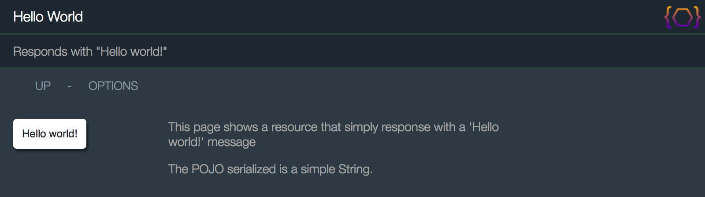It doesn't much simpler than that. In this case, we're simply returning a string that will be converted to any of the supported languages (e.g. JSON, XML, HTML, ...). However, we could have returned any POJO consisting of beans, maps, collections, etc...
The BasicRestServlet class that we're using here is a subclass of
RestServlet that provides default support for a variety of content types.
Implementers can choose to use this class, or create their own subclass of
RestServlet with their own specialized serializers and parsers.
6.2 - Class Hierarchy8.1.0-updated
The class hierarchy for the REST servlet class is shown below:
-
javax.servlet.http.HttpServlet-
org.apache.juneau.rest.RestServlet
Contains all the main logic.org.apache.juneau.rest.BasicRestServlet
Provides a default set of serializers, parsers, options page, stylesheet, and other common settings.org.apache.juneau.rest.BasicRestServletGroup
A default implementation for "router" pages.
-
For top-level resources, you'll typically extend from one of the classes above.
For child resources, you can either extend from one of the classes above, or extend from one of the following
that provides identical support but does not extent from
-
BasicRestConfigorg.apache.juneau.rest.BasicRest
Provides a default set of serializers, parsers, options page, stylesheet, and other common settings.org.apache.juneau.rest.BasicRestGroup
A default implementation for "router" pages.
One reason to use the latter classes as your base classes is when you're implementing REST resources as
The servlets with RDF support require Jena on the classpath. All other serializers and parsers do not have any external library dependencies. For this reason, we have separate servlets for supporting RDF so that you don't need Jena if you don't need to support RDF.
Everything is configured through the following classes which you will see a lot:
RestContext- Each resource class instance has one copy that holds all of its configuration.RestContextBuilder- Builder for the class above.
6.3 - Instantiation
REST resources are deployed in one of two ways:
- Deployed in a J2EE container as a servlet.
- Deployed as a child of another REST resource.
When deployed in a J2EE container, you MUST extend from one of the servlet classes.
When deployed as a child of another resource, you MAY extend from one of the servlet classes but it's
not necessary.
The only requirement is that the class be annotated with
public T()public T(RestContextBuilder)
And even that requirement is relaxed if you implement your own REST resource resolver (described later).
For example:
That's all there is to it! There's no code scanning, module configuration/initialization classes, or anything complex like that. It's just a servlet.
6.3.1 - RestServlet
The RestServlet class is the entry point for your REST resources.
It extends directly from
When the servlet RestContext object that holds all the configuration
information about your resource in a read-only object.
Most developers are not going to be using the BasicRestServlet.
The
RestServletextends HttpServletinit(ServletConfig)- Can override to provide custom initialization.service(HttpServletRequest,HttpServletResponse)- Can override to provide custom request handling.destroy()- Can override to provide custom cleanup.getContext()- Returns all aspects of the configuration of your resource pulled from all annotations on the class/parent-classes and methods.log(Level,String,Object...)- Convenience logging method.log(Level,Throwable,String,Object...)- Convenience logging method.
6.3.2 - BasicRestServlet8.1.0-updated
The BasicRestServlet class is a subclass of RestServlet
preconfigured with the following:
- A default set of serializers and parsers (pretty much all of them except for the RDF ones).
- Some basic HTML boilerplate for the HTML representation of your POJOs.
- Support for auto-generated Swagger documentation through OPTIONS page requests.
- Configuration of default CSS stylesheets.
- Default contents for HTML views.
The contents of the class is shown below. You should notice that very little code is being used and everything is configurable through annotations:
Additional annotations are pulled in from the BasicRestConfig interface which simply
exists to define a common set of annotations.
Notice that it has no code at all.
Your top-level resource will simply extend from this class, as shown in the Hello World example from a couple sections back.
It's important to notice that the
Not shown but equally important is that all of the annotations shown have programmatic equivalents via the RestContextBuilder class
which can be manipulated during servlet initialization.
(As a general rule, all annotations throughout Juneau have programmatic equivalents.)
There's a lot going on in this class. But not to worry, the details will be described later.
6.3.3 - BasicRest8.1.0-new
The BasicRest class is identical to the BasicRestServlet class except that
it does not extend from @Rest(children)
annotation.
The code for this class is virtually identical to BasicRestServlet but lacks a parent class:
6.3.4 - Children
Child Resources are REST servlets or objects that are linked to parent resources through the
@Rest(children) annotation.
Example:
The path of the child resource gets appended to the path of the parent resource.
So in the example above, the child resource is accessed through the URL
A HUGE advantage of using child resources is that they do not need to be declared in the JEE
6.3.5 - BasicRestServletGroup8.1.0-updated
The BasicRestServletGroup class provides a default "router" page for
child resources when a parent resource is nothing more than a grouping of child resources.
The
When you bring up this resource in a browser, you see the following that provides a list of navigable links to your child resources:
http://localhost:10000

The BasicRestServletGroup class is nothing more than a subclass of
BasicRestServlet with a
6.3.6 - BasicRestGroup8.1.0-new
The BasicRestGroup class is identical to the BasicRestServletGroup class except that
it does not extend from @Rest(children)
annotation.
6.3.7 - Resource Resolvers
By default, you can add the @Rest
to any class as long as it has one of the following constructors:
public T()public T(RestContextBuilder)
The latter constructor can be used to get access to the RestContextBuilder object to make
any configurations to the resource before it's initialized.
Resource object resolution is controlled through the following API:
This API can be extended to provide your own custom resource resolution. Later topics discuss how to use this API to instantiate resources using Spring.
6.3.8 - Lifecycle Hooks
Lifecycle hooks allow you to hook into lifecycle events of the servlet/resource creation and REST calls.
For example, if you want to add an initialization method to your resource:
Or if you want to intercept REST calls:
The hook events can be broken down into two categories:
- Resource lifecycle events:
INIT- Right before initialization.POST_INIT- Right after initialization.POST_INIT_CHILD_FIRST- Right after initialization, but run child methods first.DESTROY- Right before servlet destroy.
- REST call lifecycle events:
START_CALL- At the beginning of a REST call.PRE_CALL- Right before the@RestMethod method is invoked.POST_CALL- Right after the@RestMethod method is invoked.END_CALL- At the end of the REST call after the response has been flushed.
6.4 - @Rest8.1.2-updated
The @Rest annotation is the primary way of defining
and configuring REST resource classes.
The functionality of the class itself is covered in detail in the topics below.
6.4.1 - Annotation Inheritance
The @Rest annotation can also be used on parents and interfaces of resource classes.
When multiple annotations are defined at different levels, the annotation values are combined.
This is a particularly useful feature because it allows you to define your own configured parent resource classes that can be extended by all your child resources so that they all share common settings.
Inheritance rules
guards() |
Guards on child are combined with those on parent class.
Guards are executed child-to-parent in the order they appear in the annotation. Guards on methods are executed before those on classes. |
converters() |
Converters on child are combined with those on parent class.
Converters are executed child-to-parent in the order they appear in the annotation. Converters on methods are executed before those on classes. |
properties() |
Properties on child are combined with those on parent class.
Properties are applied parent-to-child in the order they appear in the annotation. Properties on methods take precedence over those on classes. |
serializers() |
Serializers on child override those on parent class.
Inherit class can be used to inherit and augment values from parent.
None class can be used to suppress inheriting from parent.
Serializers on methods take precedence over those on classes. |
parsers() |
Parsers on child override those on parent class.
Inherit class can be used to inherit and augment values from parent.
None class can be used to suppress inheriting from parent.
Parsers on methods take precedence over those on classes. |
responseHandlers() |
Response handlers on child are combined with those on parent class. |
encoders() |
Encoders on child are combined with those on parent class. |
reqHeaders() |
Headers on child are combined with those on parent class.
Headers are applied parent-to-child in the order they appear in the annotation. Headers on methods take precedence over those on classes. |
resHeaders() |
Headers on child are combined with those on parent class.
Headers are applied parent-to-child in the order they appear in the annotation. |
children() |
Children on child are combined with those on parent class.
Children are list parent-to-child in the order they appear in the annotation. |
path() |
Path is searched for in child-to-parent order. |
title() |
Label is searched for in child-to-parent order. |
description() |
Description is searched for in child-to-parent order. |
config() |
Config file is searched for in child-to-parent order. |
staticFiles() |
Static files on child are combined with those on parent class.
Static files are are executed child-to-parent in the order they appear in the annotation. |
6.4.2 - @Rest(path)8.1.0-new, 8.1.2-updated
The @RestResource(path) annotation is used in the following situations:
-
On child resources (resource classes attached to parents via the
@RestResource(children)annotation) to identify the subpath used to access the child resource relative to the parent. -
On top-level
RestServletclasses deployed as Spring beans whenJuneauRestInitializeris being used.
On child resources
The typical usage is to define a path to a child resource relative to the parent resource.
Example:
In the example above, assuming the
Note that in this scenario, the
On top-level resources deployed as Spring beans
The path can also be used on top-level resources deployed as Spring beans when used with the JuneauRestInitializer
Spring Boot initializer class:
Example:
In this case, the servlet will get registered using the path defined on the resource class.
Path variables
The path can contain variables that get resolved to @Path parameters
or access through the RestRequest.getPathMatch() method.
Example:
Variables can be used on either top-level or child resources and can be defined on multiple levels.
When variables are used on a path of a top-level resource deployed as a Spring bean in a Spring Boot application, the first part of the URL must be a literal which will be used as the servlet path of the registered servlet.
6.5 - RestContext
The RestContext object is the workhorse class for all of the configuration
of a single REST resource class.
It's by-far the most important class in the REST API.
Every class annotated with
Rest- Settings copied from the annotation during servlet initialization.RestContextBuilder- Builder used during servlet initialization.
The annotation should be self-explanatory at this point. The builder allows you to perform all of the same configuration as the annotation programmatically.
The RestContextBuilder class extends BeanContextBuilder
allowing you to programmatically set any properties defined on that builder class.
It also implements ServletConfig
To access this object, simply pass it in as a constructor argument or in an INIT hook:
Warning: The builder class is huge. Through it, you can configure bean/serializer/parser settings, define config files, children, resource finders, info providers, etc...
6.6 - @RestMethod
REST Java methods are identified on REST servlets using the
@RestMethod annotation.
The annotation allows the framework to identify the available REST methods through reflection.
Example:
When the
The HTTP method can be inferred from the Java method by starting the method name with any of the following:
get put post delete options head trace patch
If
Examples:
If
6.6.1 - Java Method Parameters
Java methods can contain any of the following parameters in any order:
-
Parameters based on class types:
- Request/response objects:
RestRequest- The request object.HttpServletRequest- The superclass ofRestRequest .RestResponse- The response object.HttpServletResponse- The superclass ofRestResponse .
- Parsed request header values:
- Direct streams on request/response:
- Localization:
ResourceBundle- Client-localized resource bundle.MessageBundle- A resource bundle with additional features.Locale- Client locale.
- Request APIs:
RequestHeaders- API for accessing request headers.RequestQuery- API for accessing request query parameters.RequestFormData- API for accessing request form data.RequestPath- API for accessing path variables.RequestBody- API for accessing request body.
- Other:
HttpMethod- The method name matched (when using@RestMethod (name="*" )RestLogger- Logger with additional features.RestContext- The resource read-only context.Parser- The parser matching the request content type.ReaderParser- The reader parser matching the request content type.InputStreamParser- The input stream parser matching the request content type.Swagger- The auto-generated Swagger doc.Config- The external config for the resource.RequestProperties- API for modifying request-time configuration properties.
- Request/response objects:
- Annotated parameters:
Path- Variables in matched URL path patterns.FormData- Multipart form post parameter values.HasFormData- Denotes whether the form data parameter exists.Query- Query parameters. Using this prevents the HTTP body from being processed as a URL-Encoded form post.HasQuery- Denotes whether the query parameter exists.Header- A header value.Body- The HTTP content parsed as a POJO.Method- The HTTP method name.Request- HTTP request parts available through a proxy bean interface.Response- HTTP response parts available through a POJO.ResponseHeader- HTTP response header.ResponseStatus- HTTP response status code.
Example:
- All annotations have programmatic equivalents on the
RestRequestclass.
RestContext.REST_paramResolvers- For configuring custom parameter types.
6.6.2 - RestRequest
The RestRequest object is an extension of the
There are many useful methods on this object, but the main ones are shown below:
RestRequestextends HttpServletRequestgetHeaders()- HTTP request headers.getQuery()- Query parameters.getFormData()- Form-data parameters.getBody()- HTTP request body.getPathMatch()- Path match variables.getLogger()- Logging.getInfoProvider()- Swagger documentation provider.getSwagger()- Generated Swagger information.getConfig()- External configuration API.getVarResolverSession()- String variable resolver.getMessages()- Localized messages.getProperties()- Configuration properties.
6.6.3 - RestResponse
The RestResponse object is an extension of the
Some important methods on this class are:
RestResponseextends HttpServletResponsesetOutput(Object)- Set response output programmatically.getHtmlDocBuilder()- Set HTTP page contents programmatically.getDirectWriter(String)- Direct access to underlying response writer.
6.6.4 - RequestBody
The RequestBody object is the API for accessing the body of an HTTP request.
It can be accessed by passing it as a parameter on your REST Java method:
Example:
Some important methods on this class are:
RequestBodygetReader()- Get body as a Reader.getInputStream()- Get body as an InputStream.asType(Class)- Get body converted to a POJO.asType(Type,Type...)- Get body converted to a map or collection of POJOs.asString()- Get body as a simple string.asHex()- Get body as a hex-encoded string.asSpacedHex()- Get body as spaced-hex-encoded string.
6.6.5 - RequestHeaders
The RequestHeaders object is the API for accessing the headers of an HTTP request.
It can be accessed by passing it as a parameter on your REST Java method:
Example:
Some important methods on this class are:
RequestHeadersextends TreeMap<String,String[]>get(String,Class)- Get header value converted to a POJO.get(String,Type,Type)- Get header value converted to a map or collection of POJOs.getString(String,String)- Get header value as a simple string.getInt(String,int)- Get header value as an integer.getBoolean(String,boolean)- Get header value as a boolean.addDefault(String,Object)- Programmatically set a default value for a header.
6.6.6 - RequestAttributes8.1.0-new
The RequestAttributes object is the API for accessing the standard servlet attributes on an HTTP request
(i.e. ServletRequest.getAttribute(String).
It wraps the request attributes in a Map interface and provides several convenience methods.
The OMap so all the convenience methods defined on
that API are also available when working with request attributes:
Example:
Modifications made to request attributes through the
6.6.7 - RequestQuery
The RequestQuery object is the API for accessing the GET query parameters of an HTTP request.
It can be accessed by passing it as a parameter on your REST Java method:
Example:
An important distinction between the behavior of this object and
Some important methods on this class are:
RequestQueryextends LinkedHashMap<String,String[]>get(String,Class)- Get query parameter value converted to a POJO.get(String,Type,Type)- Get query parameter value converted to a map or collection of POJOs.getString(String,String)- Get query parameter value as a simple string.getInt(String,int)- Get query parameter value as an integer.getBoolean(String,boolean)- Get query parameter value as a boolean.addDefault(String,Object)- Programmatically set a default value for a query parameter.getSearchArgs()- Returns query parameter search arguments.
6.6.8 - RequestFormData
The RequestFormData object is the API for accessing the HTTP request body as form data.
It can be accessed by passing it as a parameter on your REST Java method:
Example:
Note that this object does NOT take GET parameters into account and only returns values found in the body of the request.
Some important methods on this class are:
RequestFormDataextends LinkedHashMap<String,String[]>get(String,Class)- Get form-data parameter values converted to a POJO.get(String,Type,Type)- Get form-data parameter value converted to a map or collection of POJOs.getString(String,String)- Get form-data parameter value as a simple string.getInt(String,int)- Get form-data parameter value as an integer.getBoolean(String,boolean)- Get form-data parameter value as a boolean.addDefault(String,Object)- Programmatically set a default value for a form-data parameter.
6.6.9 - @RestMethod(path)
The @RestMethod(path) annotation allows
you to define URL path patterns to match against.
These patterns can contain variables of the form
In the following example, 3 separate GET request handlers are defined with different path patterns. Note how the variables are passed in as additional arguments on the method, and how those arguments are automatically converted to the specified class type...
By default, path patterns are matched using a best-match heuristic. When overlaps occur, URLs are matched from most-specific to most-general order:
The match heuristic behavior can be overridden by the
@RestMethod(priority) annotation
property.
However, in practice this is almost never needed.
Paths that end with RequestPath.getRemainder() or parameters with the
The following example shows the distinction.
Annotations are provided for easy access to URL parameters with automatic conversion to any parsable type.
For example, the following example can process the URL
6.6.10 - RequestPathMatch
The RequestPath object is the API for accessing the matched variables
and remainder on the URL path.
Example:
Some important methods on this class are:
RequestPathextends TreeMap<String,String>get(String,Class)- Get path match variable converted to a POJO.get(String,Type,Type)- Get path match variable converted to a map or collection of POJOs.getString(String)- Get patch match variable as a simple string.getInt(String)- Get path match variable as an integer.getBoolean(String)- Get path match variable as a boolean.getRemainder()- Get the path match remainder.
6.6.11 - Method Return Types
The return type can be any serializable POJO as defined in Overview > juneau-marshall > POJO Categories.
It can also be RestResponse.setOutput(Object) method.
Example:
Out-of-the-box, besides POJOs, the following return types are handled as special cases:
InputStream
The contents are simply piped to the output stream returned byRestResponse.getNegotiatedOutputStream().
Note that you should callServletResponseWrapper.setContentType(String)to set theContent-Type header if you use this object type.Reader
The contents are simply piped to the output stream returned byRestResponse.getNegotiatedWriter().
Note that you should callServletResponseWrapper.setContentType(String)to set theContent-Type header if you use this object type.Streamable
Interface that identifies that an object can be serialized directly to an output stream.Writable
Interface that identifies that an object can be serialized directly to a writer.ZipFileList
Special interface for sending zip files as responses.
This is controlled through the following extensible API:
REST Java methods can generate output in any of the following ways:
-
By returning a serializable POJO, or any of the following:
Reader,InputStream,Streamable,Writable -
By calling
RestResponse.setOutput(Object)with any of the types above. -
By accessing the
Writerdirectly by callingRestResponse.getNegotiatedWriter()and writing the output yourself.
Example:
RestContext.REST_responseHandlers- For configuring custom response handlers.
6.6.12 - ReaderResource (TODO)
The
The class is annotated with @Response
which allows it to be returned as responses by REST methods.
Example:
6.6.13 - StreamResource (TODO)
The
The class is annotated with @Response
which allows it to be returned as responses by REST methods.
Example:
6.6.14 - @RestMethod(matchers)
RestMatchers are used to allow multiple Java methods to be
tied to the same HTTP method and path, but differentiated by some request attribute such as a specific
header value.
Example:
The interface for matchers is simple:
-
If no methods are found with a matching matcher, a
412 Precondition Failed status is returned. - If multiple matchers are specified on the same method, ONLY ONE matcher needs to match for the method to be invoked.
-
Note that you CANNOT define identical paths on different methods UNLESS you use matchers.
That includes paths that are only different in variable names (e.g."/foo/{bar}" and"/foo/{baz}" ).
If you try to do so, aServletException will be thrown on startup. -
Methods with matchers take precedence over methods without.
Otherwise, methods are attempted in the order they appear in the class.
6.6.15 - Predefined Responses
Predefined response beans are provided for all standard HTTP responses. These can be used as-is or extended to provide customized HTTP responses.
Examples:
These predefined response beans are an example of @Response-annotated
objects that are describe in detail later.
Without going into details, this is how the SeeOther is defined:
The SeeOtherRoot class shows how these predefined beans can be extended.
Note that the runtime behavior of the following code is identical to the example above. However, the important distinction is that in the previous example, the 302 response would show in the generated Swagger (since we can see the response through reflection), whereas it will NOT show up in the following example (since all we see is an Object response).
6.6.16 - Predefined Exceptions
Exceptions are defined for all standardized HTTP responses. These can be used to trigger HTTP errors simply by throwing an exception.
These are identical in behavior to the Predefined Responses in the previous section, except these are meant to be thrown instead of returned.
Example:
org.apache.juneau.http.exceptionBadRequestConflictExpectationFailedFailedDependencyForbiddenGoneHttpVersionNotSupportedInsufficientStorageInternalServerErrorLengthRequiredLockedLoopDetectedMethodNotAllowedMisdirectedRequestNetworkAuthenticationRequiredNotAcceptableNotExtendedNotFoundNotImplementedPayloadTooLargePreconditionFailedPreconditionRequiredRangeNotSatisfiableRequestHeaderFieldsTooLargeServiceUnavailableTooManyRequestsUnauthorizedUnavailableForLegalReasonsUnprocessableEntityUnsupportedMediaTypeUpgradeRequiredUriTooLongVariantAlsoNegotiates
These exception extend from RuntimeException, so they can optionally be specified in the thrown
declaration of the method.
The important distinction is that when part of the thrown declaration, they show up in the generated Swagger
documentation, whereas they don't if not. This behavior can be used to define what error conditions show in your Swagger doc.
6.6.17 - Predefined Helper Beans
The org.apache.juneau.rest.helper package contains several predefined beans to help when constructing
REST interfaces.
ResourceDescription, ResourceDescrptions
The ResourceDescription class is a bean with name/description
properties for labeling and linking to child resources.
The following examples is pulled from the REST examples:
It get rendered as a table of name/description columns with links to child methods:
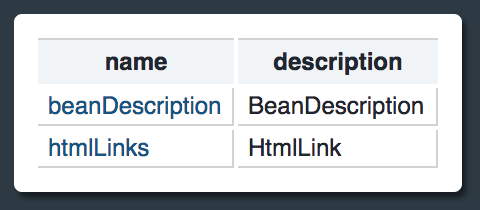The internals of the class show it simply has two bean properties with a link annotation defined on the name property:
ResourceDescriptions is a convenience class for doing the same.
The example above can also be written as follows (which you'll notice is more concise):
@HtmlLink, LinkString
The @HtmlLink annotation can also be useful
for rendering custom hyperlinks:
The LinkString bean is a predefined
Both examples render the following consisting of a list of hyperlinks:
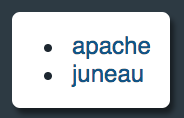In all other languages, it gets serialized as a simple bean with two properties.
BeanDescription
The BeanDescription class provides a simple view
of a bean and it's properties.
This example renders the following:
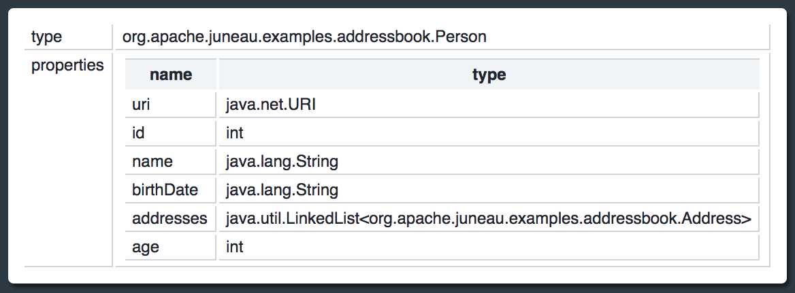ChildResourceDescriptions
The ChildResourceDescriptions is a convenience bean for generating
a table of child resources.
The BasicRestServletGroup class uses this to generate router pages:
Note that all it requires is a RestRequest object and it will generate a router
page using reflection against the resource class.
For example, the
The BasicRestServletGroup class:
SeeOtherRoot
The SeeOtherRoot class can be used to redirect to the root URI
of a resource class.
The runtime behavior is the same as the following:
One distinction is that the former defines the description
6.7 - REST/RPC8.0.0-updated
The REST/RPC (RPC over REST) API allows the creation of client-side remote proxy interfaces for calling methods on server-side POJOs using entirely REST.
Remote Interfaces
The following example shows a remote interface:
The requirements for a remote interface method are:
- Must be public.
- Can be called anything.
- Can have any number of serializable and parsable parameters.
- Can return a serializable and parsable value.
-
Can throw any
Throwables .
Throwables with public no-arg or single-arg-string constructors are automatically recreated on the client side when thrown on the server side.
Client side
Remote Interface proxies are instantiated on the client side using one of the following methods:
Since we build upon the existing
Here's an example of the above interface being used:
Under the covers, this method call gets converted to a REST POST.
HTTP POST http://localhost:10000/remote/org.apache.juneau.examples.addressbook.IAddressBook/createPerson(org.apache.juneau.examples.addressbook.Person) Accept: application/json Content-Type: application/json [ { "name":"John Smith", "birthDate":"Aug 1, 1999", "addresses":[ { "street":"My street", "city":"My city", "state":"My state", "zip":12345, "isCurrent":true } ] } ]
Note that the body of the request is an array. This array contains the serialized arguments of the method. The object returned by the method is then serialized as the body of the response.
Server side
There are two ways to expose remote interfaces on the server side:
-
Extending from
RrpcServlet. -
Using a
@RestMethod (name=RRPC )
In either case, the proxy communications layer is pure REST. Therefore, in cases where the interface classes are not available on the client side, the same method calls can be made through pure REST calls. This can also aid significantly in debugging, since calls to the remote interface service can be made directly from a browser with no coding involved.
RrpcServlet
The RrpcServlet class is a simple specialized servlet with an abstract
@RestMethod(name=RRPC)
The
RrpcServlet in a browser
If you point your browser to the servlet above, you get a list of available interfaces:
http://localhost:10000/remote

Clicking the hyperlinks on each shows you the list of methods that can be invoked on that service.
Note that the
IAddressBook
http://localhost:10000/remote/org.apache.juneau.examples.addressbook.IAddressBook
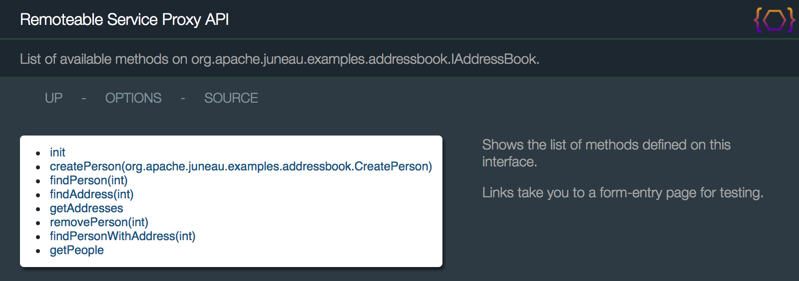
Since
AddressBook
http://localhost:10000/remote/org.apache.juneau.examples.addressbook.AddressBook
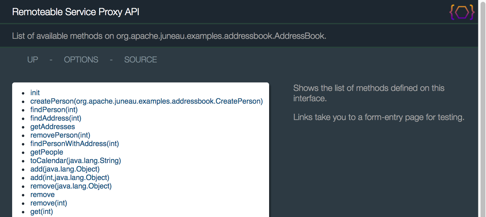Let's see how we can interact with this interface through nothing more than REST calls to get a better idea on how this works. We'll use the same method call as in the introduction. First, we need to create the serialized form of the arguments:
Object[] args =
That produces the following JSON output:
[
{
name:
Note that in this example we're using JSON. However, various other content types can also be used such as XML, URL-Encoding, UON, or HTML. In practice however, JSON will preferred since it is often the most efficient.
Next, we can use a tool such as Poster to make the REST call. Methods are invoked by POSTing the serialized object array to the URI of the interface method. In this case, we want to POST our JSON to the following URL:
http://localhost:10000/remote/org.apache.juneau.examples.addressbook.IAddressBook/createPerson(org.apache.juneau.examples.addressbook.CreatePerson)
Make sure that we specify the

When we execute the POST, we should see the following successful response whose body contains the returned

From there, we could use the following code snippet to reconstruct the response object from JSON:
String response =
If we alter our servlet to allow overloaded GET requests, we can invoke methods using nothing more than a browser...
For example, to invoke the
http://localhost:10000/remote/org.apache.juneau.examples.addressbook.IAddressBook/getPeople?method=POST

Here we call the
http://localhost:10000/remote/org.apache.juneau.examples.addressbook.IAddressBook/findPerson(int)?method=POST&body=@(3)

When specifying the POST body as a UonSerializer for more information about this encoding.
Usually you can also pass in JSON if you specify
The hyperlinks on the method names above lead you to a simple form-entry page where you can test passing parameters in UON notation as URL-encoded form posts.
Sample form entry page
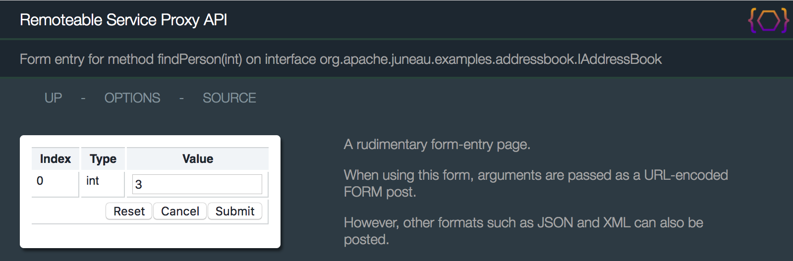Sample form entry page results

6.8 - OpenAPI Schema Part Parsing
Parameters annotated with any of the following are parsed using the registered OpenApiParser and
therefore support OpenAPI syntax and validation:
For example, the following shows how a pipe-delimited list of comma-delimited numbers (e.g.
Input will be converted based on the types and formats defined in the schema definition.
Input validations such as
The following shows the same for a request body:
The list of valid POJO types for parameters depends on type and format of the value or items/entries of the value.
For example, instead of
Or even POJOs that take in arrays of
Or even POJOs that take in the whole 2-dimensional array:
As you can see, the complexity of possible input types expands significantly. For more information about valid parameter types, see OpenAPI Parsers
6.9 - OpenAPI Schema Part Serializing
Parameters annotated with any of the following are serialized using the registered OpenApiSerializer and
therefore support OpenAPI syntax and validation:
ResponseHeaderResponse(Accept must match"text/openapi" )
For example, the following shows how a pipe-delimited list of comma-delimited numbers (e.g.
The following shows the same for a response body:
For more information about the valid parameter types, see OpenAPI Serializers
6.10 - HTTP-Part Annotations
The annotations used for defining the schema for request HTTP parts are:
The annotations used for defining the schema for response HTTP parts are:
The sub-annotations used in the annotation above are:
-
Annotation parameter values will be aggregated when used on POJO parent and child classes.
Values on child classes override values on parent classes. -
Annotation parameter values will be aggregated when used on both POJOs and REST methods.
Values on methods override values on POJO classes.
6.10.1 - @Body8.1.0-updated
The @Body annotation is used to identify POJOs to be used as the body of an HTTP request.
Examples:
This is functionally equivalent to the following code:
Any of the following types can be used for the parameter or POJO class (matched in the specified order):
-
Reader@Body annotation is optional.Content-Type is ignored. -
InputStream@Body annotation is optional.Content-Type is ignored. -
Any Parsable POJO type.
Content-Type is required to identify correct parser. -
Objects convertible from
Readerby having one of the following non-deprecated methods:public T(Reader in) {...}public static Tcreate (Reader in) {...}public static TfromReader (Reader in) {...}
Content-Type must not be present or match an existing parser so that it's not parsed as a POJO. -
Objects convertible from
InputStreamby having one of the following non-deprecated methods:public T(InputStream in) {...}public static Tcreate (InputStream in) {...}public static TfromInputStream (InputStream in) {...}
Content-Type must not be present or match an existing parser so that it's not parsed as a POJO. -
Objects convertible from
Stringby having one of the following non-deprecated methods:public T(String in) {...}public static Tcreate (String in) {...}public static TfromString (String in) {...}public static Tparse (String in) {...}public static TparseString (String in) {...}public static TforName (String in) {...}public static TforString (String in) {...}
-
Any
Optionalof anything on this list.
The OpenApiSerializer class can be used to serialize HTTP bodies to OpenAPI-based output.
For example, the following shows how a pipe-delimited list of comma-delimited numbers (e.g.
Input will be converted based on the types and formats defined in the schema definition.
Input validations such as
For more information about valid parameter types when using OpenAPI parsing, see OpenAPI Parsers
The
Examples:
Overview > juneau-rest-server > SVL Variables (e.g. "$L{my.localized.variable}") are supported on annotation fields.
Example:
-
Annotation parameter values will be aggregated when used on POJO parent and child classes.
Values on child classes override values on parent classes. -
Annotation parameter values will be aggregated when used on both POJOs and REST methods.
Values on methods override values on POJO classes.
List<MyBean>. This is due to the fact that Spring uses CGLIB to recompile classes
at runtime, and CGLIB was written before generics were introduced into Java and is a virtually-unsupported library.
Therefore, parameterized types will often be stripped from class definitions and replaced with unparameterized types
(e.g. List). Under these circumstances, you are likely to get ClassCastExceptions
when trying to access generalized OMaps as beans. The best solution to this issue is to either
specify the parameter as a bean array (e.g. MyBean[]) or declare the method as final so that CGLIB
will not try to recompile it.
6.10.2 - @FormData8.1.0-updated
The @FormData annotation is used to retrieve request form post entries.
FormData_default- Default value if not present._enum- Input validation. Must match one of the values.allowEmptyValue- Input validation. Allow empty value.api()- Free-form Swagger JSON.collectionFormat- How collections of items are formatted.description- Description.example()- Serialized example.exclusiveMaximum- Input validation. Whether maximum is exclusive.exclusiveMinimum- Input validation. Whether minimum is exclusive.format- The schema type format.items- The schema of items in a collection.maximum- Input validation. Maximum numeric value.maxItems- Input validation. Maximum number of items in a collection.maxLength- Input validation. Maximum length of a string.minimum- Input validation. Minimum numeric value.minItems- Input validation. Minimum number of items in a collection.minLength- Input validation. Minimum length of a string.multipleOf- Input validation. Number must be a multiple of.name- Form data entry name.parser- Override the part parser.pattern- Input validation. Must match regular expression.required- Input validation. Form data entry must be present.type- The schema type.uniqueItems- Input validation. Collections must contain unique items only.value- Free-form Swagger JSON.
The most typical scenario is to simply use the
Example:
This is functionally equivalent to the following code:
The special name
Examples:
The registered REST_partParser is used to convert strings
to POJOs and controls what POJO types are supported.
By default, this is the OpenApiParser which supports the standard Swagger-based rules for parsing.
For example, the following shows how a pipe-delimited list of comma-delimited numbers (e.g.
Input will be converted based on the types and formats defined in the schema definition.
Input validations such as
For more information about valid parameter types, see OpenAPI Parsers
The
Examples:
Overview > juneau-rest-server > SVL Variables (e.g. "$L{my.localized.variable}") are supported on annotation fields.
Example:
@Body annotation or RestRequest.getBody() method
for The
@Query annotation can be used to retrieve a URL parameter in the URL string without triggering the
servlet to drain the body content.
List<MyBean>. This is due to the fact that Spring uses CGLIB to recompile classes
at runtime, and CGLIB was written before generics were introduced into Java and is a virtually-unsupported library.
Therefore, parameterized types will often be stripped from class definitions and replaced with unparameterized types
(e.g. List). Under these circumstances, you are likely to get ClassCastExceptions
when trying to access generalized OMaps as beans. The best solution to this issue is to either
specify the parameter as a bean array (e.g. MyBean[]) or declare the method as final so that CGLIB
will not try to recompile it.
6.10.3 - @HasFormData
This annotation can be used to detect the existence of a parameter when it's not set to a particular value.
Example:
This is functionally equivalent to the following code:
The parameter type must be either Boolean.
The following table shows the behavioral differences between
Important note concerning FORM posts
This annotation should not be combined with the @Body annotation or RestRequest.getBody() method
for
The @HasQuery annotation can be used to check for the existing of a URL parameter in the URL string
without triggering the servlet to drain the body content.
6.10.4 - @Query
The @Query annotation is used to retrieve request URL query parameters.
It's identical to @FormData, but only retrieves the parameter from the URL string, not URL-encoded form posts.
Query_default- Default value if not present._enum- Input validation. Must match one of the values.allowEmptyValue- Input validation. Allow empty value.api- Free-form Swagger JSON.collectionFormat- How collections of items are formatted.description- Description.example- Serialized example.exclusiveMaximum- Input validation. Whether maximum is exclusive.exclusiveMinimum- Input validation. Whether minimum is exclusive.format- The schema type format.items- The schema of items in a collection.maximum- Input validation. Maximum numeric value.maxItems- Input validation. Maximum number of items in a collection.maxLength- Input validation. Maximum length of a string.minimum- Input validation. Minimum numeric value.minItems- Input validation. Minimum number of items in a collection.minLength- Input validation. Minimum length of a string.multipleOf- Input validation. Number must be a multiple of.name- Query parameter name.parser- Override the part parser.pattern- Input validation. Must match regular expression.required- Input validation. Query parameter must be present.type- The schema type.uniqueItems- Input validation. Collections must contain unique items only.value- Free-form Swagger JSON.
Unlike @FormData, using this annotation does not result in the servlet reading the contents of
URL-encoded form posts.
Therefore, this annotation can be used in conjunction with the @Body annotation or
RestRequest.getBody() method for
The most typical scenario is to simply use the
Example:
This is functionally equivalent to the following code:
The special name
Examples:
The registered REST_partParser is used to convert strings
to POJOs and controls what POJO types are supported.
By default, this is the OpenApiParser which supports the standard Swagger-based rules for parsing.
For example, the following shows how a pipe-delimited list of comma-delimited numbers (e.g.
Input will be converted based on the types and formats defined in the schema definition.
Input validations such as
For more information about valid parameter types, see OpenAPI Parsers
The
Examples:
Overview > juneau-rest-server > SVL Variables (e.g. "$L{my.localized.variable}") are supported on annotation fields.
Example:
6.10.5 - @HasQuery
Identical to @HasFormData, but only checks the existing of the parameter in the URL string, not
URL-encoded form posts.
Unlike @HasFormData, using this annotation does not result in the servlet reading the contents
of URL-encoded form posts.
Therefore, this annotation can be used in conjunction with the @Body annotation or
RestRequest.getBody() method for
Example:
This is functionally equivalent to the following code:
The parameter type must be either Boolean.
The following table shows the behavioral differences between
6.10.6 - @Header
The @Header annotation is used to retrieve request headers.
Header_default- Default value if not present._enum- Input validation. Must match one of the values.allowEmptyValue- Input validation. Allow empty value.api- Free-form Swagger JSON.collectionFormat- How collections of items are formatted.description- Description.example- Serialized example.exclusiveMaximum- Input validation. Whether maximum is exclusive.exclusiveMinimum- Input validation. Whether minimum is exclusive.format- The schema type format.items- The schema of items in a collection.maximum- Input validation. Maximum numeric value.maxItems- Input validation. Maximum number of items in a collection.maxLength- Input validation. Maximum length of a string.minimum- Input validation. Minimum numeric value.minItems- Input validation. Minimum number of items in a collection.minLength- Input validation. Minimum length of a string.multipleOf- Input validation. Number must be a multiple of.name- Header name.parser- Override the part parser.pattern- Input validation. Must match regular expression.required- Input validation. Header must be present.type- The schema type.uniqueItems- Input validation. Collections must contain unique items only.value- Free-form Swagger JSON.
The most typical scenario is to simply use the
Example:
This is functionally equivalent to the following code:
The special name
Examples:
The registered REST_partParser is used to convert strings
to POJOs and controls what POJO types are supported.
By default, this is the OpenApiParser which supports the standard Swagger-based rules for parsing.
For example, the following shows how a pipe-delimited list of comma-delimited numbers (e.g.
Input will be converted based on the types and formats defined in the schema definition.
Input validations such as
For more information about valid parameter types, see OpenAPI Parsers
The
Examples:
Overview > juneau-rest-server > SVL Variables (e.g. "$L{my.localized.variable}") are supported on annotation fields.
Example:
6.10.7 - @Path
The @Path annotation is used to retrieve request path parameters.
Path_enum- Input validation. Must match one of the values.allowEmptyValue- Input validation. Allow empty value.api- Free-form Swagger JSON.collectionFormat- How collections of items are formatted.description- Description.example- Serialized example.exclusiveMaximum- Input validation. Whether maximum is exclusive.exclusiveMinimum- Input validation. Whether minimum is exclusive.format- The schema type format.items- The schema of items in a collection.maximum- Input validation. Maximum numeric value.maxLength- Input validation. Maximum length of a string.minimum- Input validation. Minimum numeric value.minLength- Input validation. Minimum length of a string.multipleOf- Input validation. Number must be a multiple of.name- Path variable name.parser- Override the part parser.pattern- Input validation. Must match regular expression.type- The schema type.value- Free-form Swagger JSON.
The most typical scenario is to simply use the
Example:
This is functionally equivalent to the following code:
Note that the path variable name
The special name
Examples:
The registered REST_partParser is used to convert strings
to POJOs and controls what POJO types are supported.
By default, this is the OpenApiParser which supports the standard Swagger-based rules for parsing.
For example, the following shows how a pipe-delimited list of comma-delimited numbers (e.g.
Input will be converted based on the types and formats defined in the schema definition.
Input validations such as
For more information about valid parameter types, see OpenAPI Parsers
The
Examples:
Overview > juneau-rest-server > SVL Variables (e.g. "$L{my.localized.variable}") are supported on annotation fields.
Example:
6.10.8 - @Request
The @Request annotation can be applied to a parameter interface type of a
Example:
The example above is identical in behavior to specifying individual annotated parameters on the
The return types of the getters must be the supported parameter types for the HTTP-part annotation used. Schema-based serialization and parsing is used just as if used as individual parameter types. Annotations used are the exact same used on REST parameters and have all the same feature support including automatic Swagger validation and documentation.
Example:
For clarity, the
Example:
6.10.9 - @Response
The @Response annotation is used to identify schema information about an HTTP response.
Responseapi- Free-form Swagger JSON.code- HTTP status code.description- Description.example- Serialized example.examples- Serialized examples per media type.headers- Swagger about headers added to response.serializer- Override the part serializer.schema- Swagger schema.value- Free-form Swagger JSON.
It can be used in the following locations:
- Exception classes thrown from
@RestMethod -annotated methods. - Return type classes of
@RestMethod -annotated methods. @RestMethod -annotated methods themselves.- Arguments and argument-types of
@RestMethod -annotated methods.
When the
@Resource on exception classes
When applied to an exception class, this annotation defines Swagger schema and information on non-200 return types.
The following example shows the
Custom exceptions can also extend from one of the predefined HTTP exceptions such as the Unauthorized exception:
@Resource on return type classes
When applied type classes returned by a Java method, this annotation defines schema and Swagger information on the body of responses.
In the example above, we're using the
Another example showing how a redirect can be defined:
@Resource on @RestMethod-annotated methods
The
The
@Resource on @RestMethod-annotated method parameters
The Value (a placeholder for objects).
In the above example, the
@ResponseStatus on methods of @Response-annotated types
The @ResponseStatus annotation can be used on
the method of a
Example:
@ResponseHeader on methods of @Response-annotated types
The @ResponseHeader annotation can be used on
the method of a
Example:
@ResponseBody on methods of @Response-annotated types
The @ResponseBody annotation can be used on
the method of a
Example:
If a
Notes about OpenAPI part serialization
By default, POJOs representing the body of the request are serialized using the Juneau serializer
matching the requesting OpenApiSerializer class can be used to serialize response bodies using OpenAPI rules.
The following examples show part-schema-based serialization of response bodies:
The
Swagger documentation
The attributes on this annotation are also used to populate the generated Swagger for the method.
For example, in the case of the
Automatic HTTP status
When the @Response(code) value is specified,
the HTTP status is automatically set to that value on the response regardless of how it's used.
The following two examples are equivalent:
6.10.10 - @ResponseHeader
The @ResponseHeader annotation can be applied to
ResponseHeader_default- Default value if not present._enum- Output validation. Must match one of the values.$ref- Schema reference.api- Free-form Swagger JSON.code- HTTP status codes that this header applies to.collectionFormat- How collections of items are formatted.description- Description.example- Serialized example.exclusiveMaximum- Output validation. Whether maximum is exclusive.exclusiveMinimum- Output validation. Whether minimum is exclusive.format- The schema type format.items- The schema of items in a collection.maximum- Output validation. Maximum numeric value.maxItems- Output validation. Maximum number of items in a collection.maxLength- Output validation. Maximum length of a string.minimum- Output validation. Minimum numeric value.minItems- Output validation. Minimum number of items in a collection.minLength- Output validation. Minimum length of a string.multipleOf- Output validation. Number must be a multiple of.name- Header name.pattern- Output validation. Must match regular expression.serializer- Override the part serializer.type- The schema type.uniqueItems- Output validation. Collections must contain unique items only.value- Free-form Swagger JSON.
This annotation can only be applied to parameters of type Value.
The following examples show 3 different ways of accomplishing the same task of setting an HTTP header on a response:
Swagger documentation
The attributes on this annotation are also used to populate the generated Swagger for the method.
For example, in the case of the
6.10.11 - @ResponseStatus
The @ResponseStatus annotation annotation can be applied to
This can only be applied to parameters of the Value class with an Integer type.
Examples:
6.11 - Handling Form Posts
The best way to handle a form post is usually by using an input bean.
The following is a class that takes in URL-Encoded form post of the
form
Another possibility is to access the form parameters individually:
The advantage to the form input bean is that it can handle any of the parsable types (e.g. JSON, XML...) in addition to URL-Encoding. The latter approach only supports URL-Encoding.
ServletRequestWrapper.getParameter(String) method since this will cause the
underlying JEE servlet to parse the HTTP body as a form post.
Your input bean will end up being null since there won't be any content left after the servlet has parsed the body of the request.
This applies to WHENEVER you use
RestRequest.getBody()
6.12 - Handling Multi-Part Form Posts8.0.0-updated
The Juneau framework does not natively support multipart form posts. However, it can be done in conjunction with the Apache Commons File Upload library or through the Servlet 3.0 API directly.
The following is an example that uses the File Upload library to allow files to be uploaded as multipart form posts.
Example:
The following shows using the
6.13 - Serializers
REST resources use the Serializer API for defining serializers for
serializing response POJOs.
The servlet will pick which serializer to use by matching the request Serializer.getMediaTypeRanges() method.
Serializers can be associated with REST servlets in the following ways:
-
Rest(serializers)- Annotation on resource Java class. -
RestMethod(serializers)- Annotation on resource Java method. -
RestContext.REST_serializers- Programmatic.
The following are all equivalent ways of defining serializers used by a resource:
6.14 - Parsers
REST resources use the Parser API for defining parsers for parsing request
body content and converting them into POJOs.
The servlet will pick which parser to use by matching the request Parser.getMediaTypes() method.
Parsers can be associated with REST servlets in the following ways:
-
Rest(parsers)- Annotation on resource Java class. -
RestMethod(parsers)- Annotation on resource Java method. -
RestContextBuilder.parsers(Class[])- Programmatic.
The following are all equivalent ways of defining parsers used by a resource:
6.15 - Configurable Properties8.1.0-updated
As shown in previous sections, Juneau serializers and parsers are highly-configurable through properties. (See Overview > Glossaries > Configurable Properties)
These properties can be defined for serializers and parsers registered on a REST resource via the following:
Rest(properties)RestContextBuilder- Various methods on the context builder.
Example:
The programmatic equivalent to this is:
Properties can also be overridden at the Java method level:
Rest(flags)- Shorthand for boolean properties.RestMethod(flags)- Shorthand for boolean properties.RestContextPropertiesRestMethodProperties
6.16 - Configurable Annotations8.1.0-new
Config annotations allow you to define serializer and parser properties using specialized annotations. All configuration properties have annotation-equivalents.
The following shows the difference between the two approaches:
Example:
Using config annotations is often cleaner and supports the same SVL variable support as those in the REST annotations.
Config annotations are defined for all serializers and parsers:
BeanConfigCsvConfigHtmlConfigHtmlDocConfigJsoConfigJsonConfigJsonSchemaConfigMsgPackConfigOpenApiConfigParserConfigPlainTextConfigRdfConfigSerializerConfigSoapXmlConfigUonConfigUrlEncodingConfigXmlConfig
Config annotations can be defined at both the class and method level just like properties.
6.17 - Transforms8.1.0-updated
The Juneau serializers and parsers can be configured on how to handle POJOs through the use of Transforms. (See Transforms)
Transforms are associated serializers and parsers registered on a REST resource via the following:
BeanConfig(beanFilters)- On class or methods.BeanConfig(swaps)- On class or methods.BeanContextBuilder.beanFilters(Object...)RestContextBuilder.swaps(Object...)
The programmatic equivalent to this is:
6.18 - URIs
As mention earlier here, Juneau serializers have sophisticated support for transforming relative URIs to absolute form.
The following example shows a REST method that returns a list of URIs of various forms:
When requested as JSON, it produces the following result:
{
URI resolution is controlled by the following settings:
URIs are resolved by both regular and part serializers.
6.19 - Guards
Guards are classes that control access to REST classes and methods.
Guards are associated with resource classes and methods via the following:
A common use for guards is to only allow admin access to certain Java methods...
A guard failure results in an RestGuard.guard(RestRequest,RestResponse) and processing the response
yourself.
When guards are associated at the class-level, it's equivalent to associating guards on all Java methods on the servlet. If multiple guards are present, ALL guards must pass.
6.20 - Role guards8.1.0-new
Specialized guards are provided for controlling access to servlet classes and methods based on user roles. These are controlled via annotations on the REST class and methods:
The
Example:
The syntax allows for any of the following:
"foo" - Single arguments."foo,bar,baz" - Multiple OR'ed arguments."foo | bar | baz" - Multiple OR'ed arguments, pipe syntax."foo || bar || baz" - Multiple OR'ed arguments, Java-OR syntax."fo*" - Patterns including'*' and'?' ."fo* & *oo" - Multiple AND'ed arguments, ampersand syntax."fo* && *oo" - Multiple AND'ed arguments, Java-AND syntax."fo* || (*oo || bar)" - Parenthesis.
If patterns are used, you must specify the list of declared roles using the
Example:
6.21 - Converters
Converters can be thought of as "post-processors" for POJOs before they get passed to the serializers.
Converters are associated with resource classes and methods via the following:
Example:
They can also be defined at the method level:
The following converter is used to provide support for addressing child nodes in a POJO tree with URL path
remainders.
In this code, the 3rd parameter is the object that was returned by the Java method.
The converter uses the PojoRest wrapper class to address nodes in the
tree.
Juneau defines the following converters out-of-the-box:
-
RestConverter-
Queryable
Provides query parameters that can be used to transform the response (i.e. search/view/sort the POJO response before being serialized). -
Traversable
Allows nodes in the POJO response tree to be individually accessed through additional path info on the request. -
Introspectable
Allows method calls to be made on the response POJO, and for the result of that method call to be serialized as the response.
-
6.22 - Messages8.2.0-updated
The @Rest(messages) annotation identifies the location of the resource bundle
for a
By default, the resource bundle name is assumed to match the class name. For example, given the class
Resource bundles are searched using the following base name patterns:
"{package}.{name}" "{package}.i18n.{name}" "{package}.nls.{name}" "{package}.messages.{name}"
This annotation is used to provide request-localized (based on
Request-localized messages are also available by passing either of the following parameter types into your Java method:
ResourceBundle- Basic Java resource bundle.Messages- Extended resource bundle with several convenience methods.
The value can be a relative path like
Examples:
When using shared resource bundles, keys can be prefixed by class names like so and still retrieve by simple key names:
Messages are automatically inherited from super classes. If a string cannot be found in the bundle of the current class, it will be searched for up the class hierarchy.
6.23 - Encoders
The @Rest(encoders) annotation can
be used to associate character encoders with a servlet class.
Encoders can be used to enable various kinds of compression (e.g.
Example:
Juneau defines the following encoders out-of-the-box:
6.24 - SVL Variables
In the previous examples, there were several cases where embedded variables were contained within annotation values:
Variables take the form
Features
-
Variables can be nested arbitrarily deep (e.g.
"$X{$Y{foo}}" ). -
Variables can contain arguments (e.g.
"$L{my.label,arg1,arg2}" ). -
Variables are recursively resolved.
i.e., if a variable results to a value with another variable in it, that variable will also be resolved (restricted for security reasons on some variables).
Variables are configured on resources via the following API:
Example:
The methods involved with variables are:
RestContext.getVarResolver()RestRequest.getVarResolverSession()RestRequest.getClasspathHttpResource(String,boolean)
There are two distinct groups of variables:
Initialization-time variables
These are variables that can be used in many of the annotations in@Rest.
TheRestContext.getVarResolver()method returns initialization-time variables only.Request-time variables
These are variables that are available during HTTP-requests and can be used on annotation such as@HtmlDoc.RestRequest.getVarResolverSession()method returns initialization and request-time variables.
The following is the default list of supported variables.
Default REST SVL Variables:
| Module | Class | Pattern | Initialization time | Request time | Examples |
|---|---|---|---|---|---|
| juneau-svl | EnvVariablesVar |
$E{key[,default]} | yes | yes | $E{PATH} |
SystemPropertiesVar |
$S{key[,default]} | yes | yes | $S{java.home} | |
ArgsVar |
$A{key[,default]} | yes | yes | $A{foo,null} | |
ManifestFileVar |
$MF{key[,default]} | yes | yes | $MF{Main-Class} | |
IfVar |
$IF{arg,then[,else]} | yes | yes | $IF{$S{my.boolean.property},foo,bar} | |
SwitchVar |
$SW{arg,p1:then1[,p2:then2...]} | yes | yes | $SW{$S{os.name},*win*:Windows,*:Something else} | |
CoalesceVar |
$CO{arg1[,arg2...]} | yes | yes | $CO{$S{my.property},$E{my.property},n/a} | |
PatternMatchVar |
$PM{arg,pattern} | yes | yes | $PM{$S{os.name},*win*} | |
NotEmptyVar |
$NE{arg} | yes | yes | $NE{$S{foo}} | |
UpperCaseVar |
$UC{arg} | yes | yes | $UC{$S{foo}} | |
LowerCaseVar |
$LC{arg} | yes | yes | $LC{$S{foo}} | |
| juneau-config | ConfigVar |
$C{key[,default]} | yes | yes | $C{REST/staticFiles} |
| juneau-rest-server | FileVar |
$F{path[,default]}} | yes | yes | $F{resources/MyAsideMessage.html, Oops not found!} |
ServletInitParamVar |
$I{name[,default]} | yes | yes | $I{my.param} | |
LocalizationVar |
$L{key[,args...]} | no | yes | $L{MyMessage,foo,bar} | |
RequestAttributeVar |
$RA{key1[,key2...]} | no | yes | $RA{attrName} | |
RequestFormDataVar |
$RF{key1[,key2...]} | no | yes | $RF{paramName} | |
RequestHeaderVar |
$RH{key1[,key2...]} | no | yes | $RH{Header-Name} | |
RequestPathVar |
$RP{key1[,key2...]} | no | yes | $RP{pathVAr} | |
RequestQueryVar |
$RQ{key1[,key2...]} | no | yes | $RQ{paramName} | |
RequestVar |
$R{key1[,key2...]} | no | yes | $R{contextPath} | |
RestInfoVar |
$RI{key} | no | yes | $RI{externalDocs} | |
SerializedRequestAttrVar |
$SA{contentType,key[,default]} | no | yes | $SA{application/json,$RA{foo}} | |
UrlVar |
$U{uri}> | no | yes | $U{servlet:/foo} | |
UrlEncodeVar |
$UE{uriPart} | yes | yes | $U{servlet:/foo?bar=$UE{$RA{bar}} | |
WidgetVar |
$W{name} | no | yes | $W{MenuItemWidget} |
6.25 - Configuration Files
The Server API provides methods for associating configuration files with REST servlets so that configuration properties can be defined in external files.
In recap, the Configuration API provides support for INI-style configuration files with embedded string variables:
Example:
These properties are then accessible through the Config class.
Config c = Config.
Configuration files are associated with REST resources through the following:
Example:
The annotation itself can contain string variables.
For example, the Microservice API BasicRestServlet class defines the
location of the config file as a system property
Once a config file has been associated with a REST resource, it can be accessed through the
RestContextBuilder.getConfig() method.
A common usage is to use this method to initialize fields in your servlet.
Another common usage is to refer to config properties through
It's even possible to reference request-level variables in your config file if you use
RestRequest.getConfig() to access the config file:
You can even add resource bundles into the mix:
6.26 - Static files
The @Rest(staticFiles)
annotation is used to define paths and locations of statically-served files such as images or HTML
documents.
The value is a JSON map of paths to packages/directories located on either the classpath or working directory.
Example:
Static files are found by calling Class.getResource(String) up the class hierarchy.
If not found, then an attempt is made to find the class in the Java working directory.
In the example above, given a GET request to
com.foo.mypackage.docs package.[working-dir]/docs directory.
-
Mappings are cumulative from parent to child.
Child resources can override mappings made on parent resources. -
The media type on the response is determined by the
RestContext.getMediaTypeForName(String)method.
6.27 - Client Versioning
Client version headers are used to support backwards compatibility for breaking REST interface changes. Using them, you're able to return different responses based on which client is making a request.
The APIs involved with defining client version headers are:
Example:
6.28 - RestInfoProvider
The RestInfoProvider class is used to find the title
and description for your resource and also generate the Swagger documentation.
It can be overridden to provide your own custom Swagger documentation.
The methods on this interface are:
The info provider in turn supplies the information returned by the following methods:
Info providers are registered through the following property:
While you can implement this interface from scratch, you may want to instead consider extending
from the
6.28.1 - BasicRestInfoProvider
The BasicRestInfoProvider class is the default implementation of the
RestInfoProvider interface.
It finds and collects information gathered from the following locations:
- Localized JSON Swagger files in the classpath.
- Reflection.
- Annotations.
- Properties files.
The class itself is designed to be extended if you wish to rely mostly on the default behavior, but tweak certain aspects.
6.29 - Swagger
One of the most useful features of Juneau is the ability to generate Swagger-based OPTIONS pages for self-documenting designs (i.e. REST interfaces that document themselves).
As described previously, the

Using SwaggerUI, we're able to render that JSON as a Swagger user interface:

6.29.1 - BasicRestServlet8.1.0-updated
Any subclass of BasicRestServlet gets an auto-generated Swagger UI when performing an
The underlying mechanics are simple.
The BasicRestServlet.getOptions(RestRequest) method returns a Swagger bean
consisting of information gathered from annotations and other sources.
Then that bean is swapped for a SwaggerUI bean when rendered as HTML.
Here's the class that defines the behavior:
Note that to have your resource create Swagger UI, you must either extend from BasicRestServlet or provide
your own Swagger object and a SwaggerUI swap.
6.29.2 - Basic Swagger Info
Let's look at the various parts of the
The top part of the page shows general information about the REST interface:

The information is pulled from the @Rest(swagger) annotation.
org.apache.juneau.examples.rest.petstore.PetStoreResource
In this particular case, the Swagger is pulled in from a localized Swagger JSON file located in the
$F variable.
PetStoreResource.json
{
Note that the $F variable allows for request-locale-sensitive name matching so that you can provide
localized Swagger information.
The $F variable simply expands to a string to fill the @ResourceSwagger(value)
annotation.
You could equivalently embed JSON directly into your annotation like so:
However, a more typical (and less error-prone) scenario is to define all of your Swagger as annotations:
All annotations support SVL variables, so you could for example
pull localized strings from resource bundles using $L variables.
A third option is to define your Swagger information in your @Rest(messages) resource
bundle using predefined Swagger keywords:
Information defined in multiple locations are merged into a single set of data. When the same information is provided in multiple locations, the following order-of-precedence is used:
- Java annotations
- Resource bundle
- Swagger JSON file
6.29.3 - Tags
Tags allow you to group operations into general categories.
In the user interface, these can be expanded/collapsed by clicking on the tag sections.
In the example below, the

Tags are also defined in the
PetStoreResource.json
The annotation-only approach is shown here:
org.apache.juneau.examples.rest.petstore.PetStoreResource
swagger=
Tags are associated with operations using the @MethodSwagger(tags) annotation:
GET /user operation
Operations can be mapped to multiple tags.
Tags are optional. Operations not mapped to tags are listed in the UI before tagged operations.
For example, the

6.29.4 - Operations

The following shows the annotations defined on the
PetStoreResource.getPets()
Methods marked as deprecated will show up as deprecated in the Swagger UI:
PetStoreResource.findPetsByTag()
6.29.5 - Parameters
Expanding operations shows you a list of parameters:

Parameter information can be defined in a couple of ways. The typical way is through annotations on parameters
being passed to your
Note: The
Another option is to specify your parameter information in the Queryable class:
PetStoreResource.getPets()
Queryable
This information could have also been defined in the Swagger JSON for the resource as well.
The parameter section contains information about the request body as well for PUT and POST methods, as shown here:
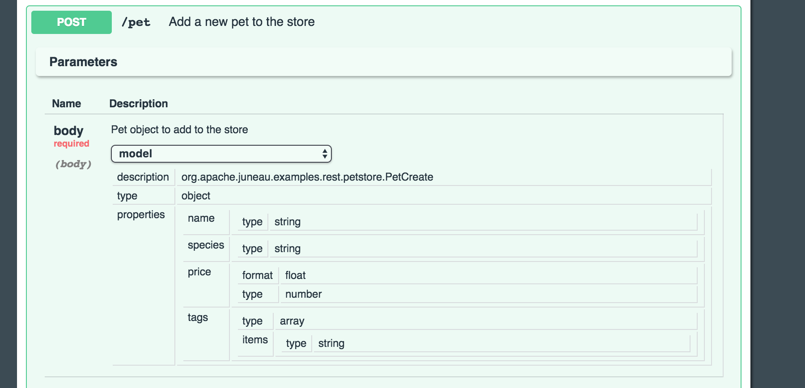The definition of this method is shown here:
Note that the schema information on the body parameter is automatically detected if not provided.
6.29.6 - Parameter Examples8.1.0-updated
The
The examples for query/form-data/path/header parameters can be defined using the
This value gets converted to an
{
Examples for request bodies includes all supported
These are based on the parsers registered on your servlet or method.
Selecting any of the content types shows you a representative example for the POJO:
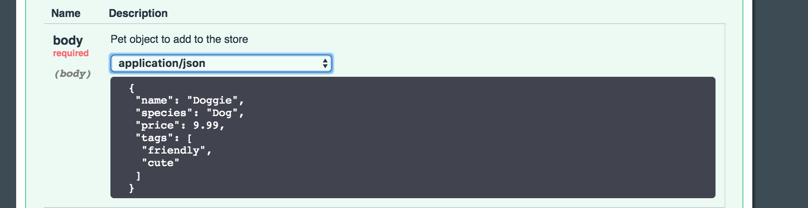There are several options for defining examples for request bodies:
-
@Body(example)annotation. -
@Body(examples)annotation. -
Defining an
"x-examples" field in the inherited Swagger JSON body field (classpath file or@ResourceSwagger (value)@MethodSwagger (value) -
Defining an
"x-examples" field in the Swagger Schema Object for the body (including referenced"$ref" schemas). - Allowing Juneau to auto-generate a code example.
When using @Body(example), you specify a Simple JSON representation of your POJO.
The Swagger generator will then convert that JSON into a POJO using the registered serializers on the REST method to produce examples for all
supported language types.
Example:
The @Body(examples) annotation allows you to specify raw output values per media type.
This field allows you to override the behavior and show examples for only specified media types or different examples for different media types.
Example:
The Swagger generator uses these to create an
Another option is to define these directly in your resource Swagger JSON file, or via @Rest(swagger)/@RestMethod(swagger).
Juneau also supports auto-generation of JSON-Schema directly from POJO classes.
By default, the generated swagger uses to the JSONSCHEMA_addExamplesTo
setting to automatically add examples to beans, collections, arrays, and maps:
Examples can be defined via static methods, fields, and annotations on the classes themselves.
Examples:
Examples can also be specified via generic properties as well using the BeanContext.BEAN_examples property or @BeanConfig(examples) annotation at either the class or method level.
Example:
6.29.7 - Responses
Under the input parameters are listed the possible responses for the resource:

The
Note that additional responses can be specified by throwing exceptions annotated with the @Response annotation such
as this one:
Like input parameters, the Swagger for responses can be define in multiple locations such as:
@Responseannotated classes, methods, and parameters.@Rest(swagger)/@RestMethod(swagger)annotations.
6.29.8 - Response Examples
The
PetStoreResource.getPet()
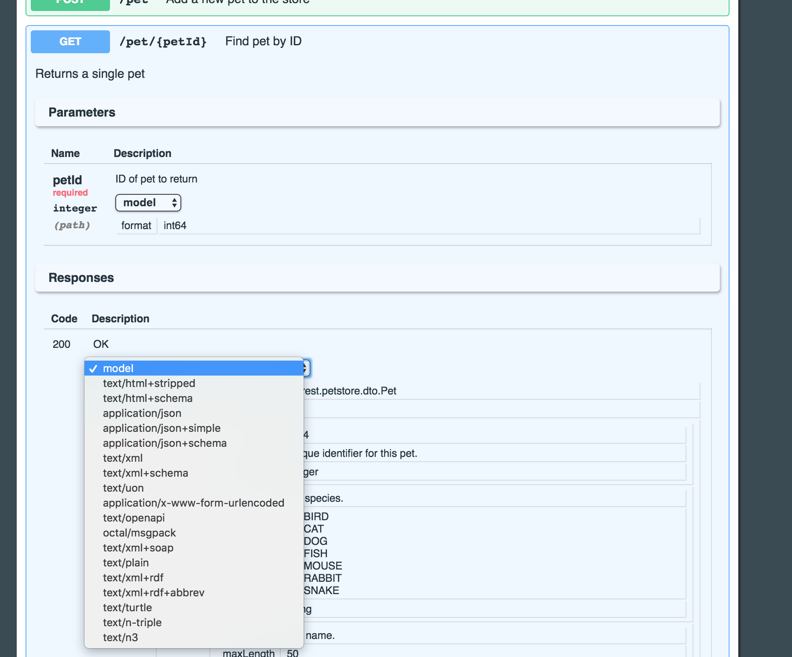
Examples are provided for any supported
application/json+simple
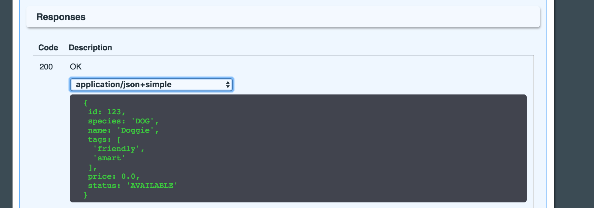text/uon
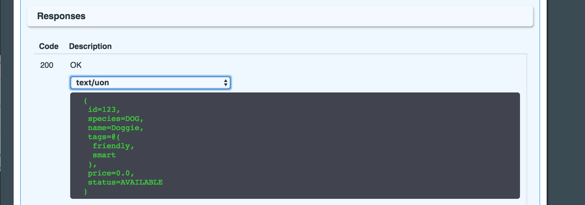
Examples are pulled from the
There are several options for defining examples for response bodies:
-
@Response(example)annotation. -
@Response(examples)annotation. -
Defining an
"examples" field in the inherited Swagger JSON response object (classpath file or@ResourceSwagger (value)@MethodSwagger (value) -
Defining an
"examples" field in the Swagger Schema Object for the response object (including referenced"$ref" schemas). - Allowing Juneau to auto-generate a code example.
The @Response(example) annotation can be used on either your
This is a Simple JSON representation of the body that is converted to a POJO and then serialized to all the registered serializers on the REST method to produce examples for all
supported language types.
These values are then used to automatically populate the
Direct per-media-type examples can also be defined using the @Response(examples) annotation:
Juneau also supports auto-generation of JSON-Schema directly from POJO classes.
By default, the generated swagger uses to the JSONSCHEMA_addExamplesTo
setting to automatically add examples to beans, collections, arrays, and maps:
In particular, examples can be defined via static methods, fields, and annotations on the classes themselves.
Examples can also be specified via generic properties as well using the BeanContext.BEAN_examples property
or @BeanConfig(examples) annotation at either the class or method level.
Response headers are also rendered in the Swagger UI:
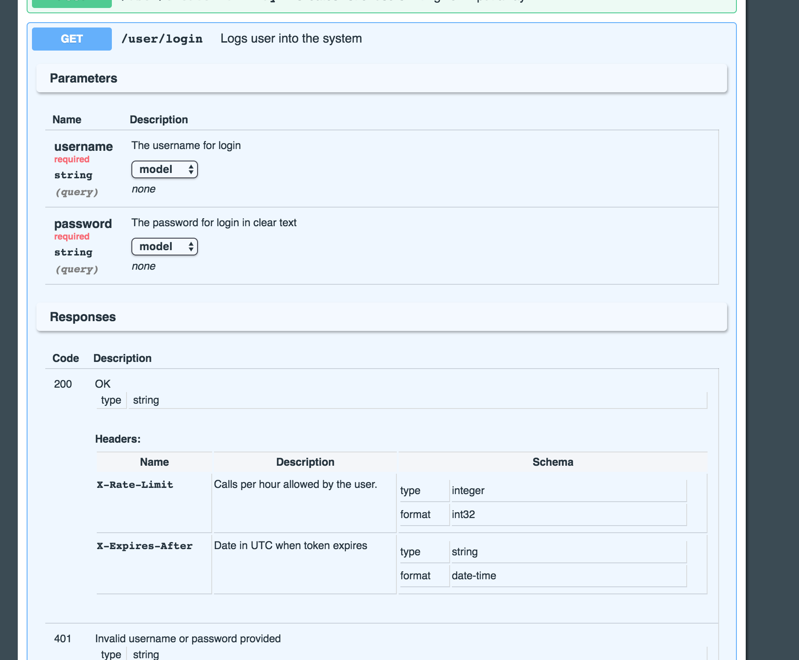
These can be auto-generated from @ResponseHeader annotations defined on either
method parameters or type classes.
The example above shows one of each:
6.29.9 - Models
The JsonSchemaGenerator.JSONSCHEMA_useBeanDefs setting can be used to reduce the size of your
generated Swagger JSON files by creating model definitions for beans and referencing those definitions through
By default, this flag is enabled when extending from BasicRestServlet:
In the Swagger UI, this causes bean definitions to show up in the Models section at the bottom of the page:
Models section
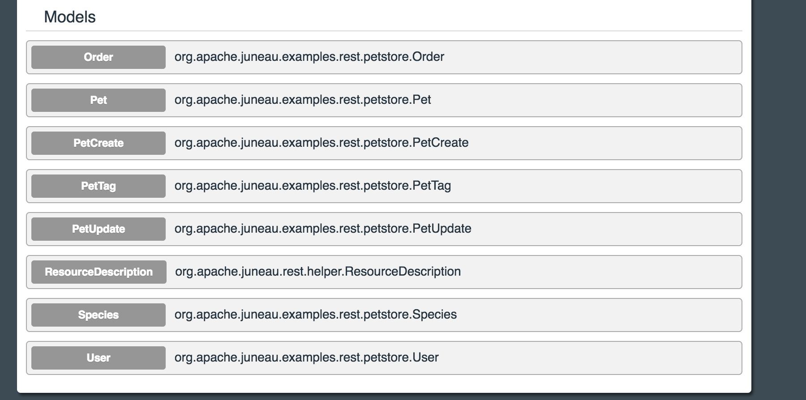Models section with Order bean expanded
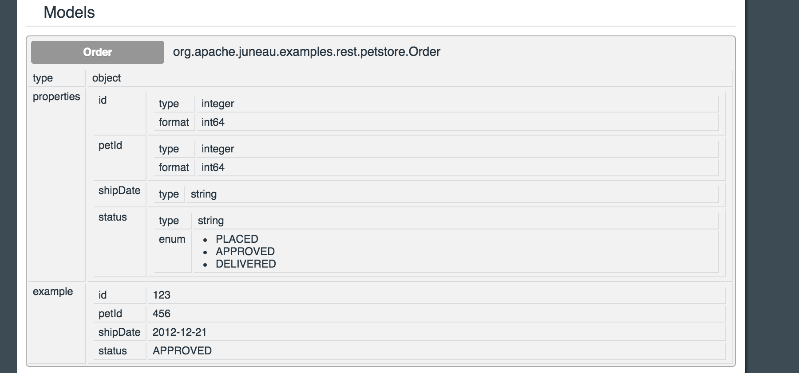
In the generated Swagger JSON, embedded schema information for beans will be replaced with references such as the one shown below for the
{
Note that this does not affect how the information is rendered for that bean in the Swagger UI:

6.29.10 - SwaggerUI.css
The look-and-feel of the Swagger UI is controlled via a single CSS file:
In the microservice template, this file is located in the
6.30 - REST method execution statistics8.1.3-new
The statistics are made available via the subpath
The default REST configuration provides a link to the stats in the navlinks section of the page:

The exception hash shown is the same hash that is shown in the log file and provides a quick way of locating the exception in the logs.
Programmatic access to the statistics are provided via the following methods:
6.31 - @HtmlDocConfig8.1.0-updated
The @HtmlDocConfig annotation is used to customize the HTML
view of your serialized POJOs.
It's used in the following locations:
@Rest-annotated classes.@RestMethod-annotated methods.
The annotation itself is just a convenience for setting configuration properties set
on the HtmlDocSerializer class.
For example, the following two pieces of code are equivalent:
The purpose of these annotation is to populate the HTML document view which by default consists of the following structure:
The outline above is controlled by the HtmlDocTemplate interface
which can be overridden via the @HtmlDoc(template) annotation.
The
SVL variables can be used in any of these annotations:
6.31.1 - User Interfaces (UI) vs. Developer Interfaces (DI)
An important distinction needs to be made about the HTML representations produced by the REST API. These should not be considered User Interfaces, but rather Developer Interfaces.
UIs should hide the end-user from the underlying architecture. The audience generally consists of non-technical people not interested in how the UI works.
DIs, on the other hand, should NOT hide the end-user from the underlying architecture. Instead, it's a thin veneer over the REST interface with the following goals:
- Make it easy for the developer to explore and understand the REST API.
- Make it easy for the developer to debug the REST API using simple tools (hopefully just a browser).
As a result, the following guidelines are recommended:
- Use titles/descriptions/asides to describe why the REST interface exists. A developer knowing little about it should be able to access it with a browser and quickly understand what it is and how to use it.
- Don't hide the raw data! The HTML view should simply be considered an easier-to-read representation of the data normally rendered in JSON or some other format.
- Limit your use of Javascript! You can use it sparingly if you want to implement something simple like a pull-down menu to simplify some debug task, but remember that your audience cares more about interacting with your service programmatically using REST. Remember that the HTML is just icing on the cake.
- Don't use it to implement a Web 2.0 interface! If you want a Web 2.0 UI, implement it separately ON TOP OF this REST interface. The architecture is flexible enough that you could in theory pull in and use jQuery, React, Angular, or any number of sophisticated Javascript UI frameworks. Resist the urge to do so.
6.31.2 - Widgets
The Widget class allows you to add arbitrary HTML, CSS, and Javascript
to HTML pages.
They are registered in the following locations:
HtmlDoc(widgets)RestContextBuilder.widgets(Class...)RestContextBuilder.widgets(Widget...)RestContext.REST_widgets
Example:
The
The HTML content returned by the getHtml(RestRequest,RestResponse)
method is added wherever the
The CSS returned by getScript(RestRequest,RestResponse)
is added to the style section in the page header.
The Javascript returned by getScript(RestRequest,RestResponse)
is added to the script section in the page header.
The following examples shows how to associate a widget with a REST method and then have it rendered in the links
and aside section of the page.
It shows an example of a widget that renders an image located in the @Rest(staticFiles)):
The
Example:
6.31.3 - Predefined Widgets
The org.apache.juneau.rest.widget package contains predefined reusable widgets.
MenuItemWidget
MenuItemWidget is an abstract class for rendering menu items with drop-downs.
It defines some simple CSS and Javascript for enabling drop-down menus in the nav section of the page (although
nothing keeps you from using it in an arbitrary location in the page).
The script specifies a
Subclasses implement the following two methods:
MenuItemWidgetgetLabel(RestRequest,RestResponse)- The menu item label.getContent(RestRequest,RestResponse)- The menu item content.
For example, to render a link that brings up a simple dialog in a div tag:
The HTML content returned by the getHtml(RestRequest,RestResponse) method is added where the
ContentTypeMenuItem
ContentTypeMenuItem is a predefined Widget that returns back a list of hyperlinks for rendering the contents of a page in a variety of content types.
The variable it resolves is
An example of this widget can be found in the
It renders the following popup-box:

QueryMenuItem
QueryMenuItem is a predefined Widget that returns a menu-item drop-down form for entering search/view/sort arguments.
The variable it resolves is
This widget is designed to be used in conjunction with the Queryable converter, although implementations
can process the query parameters themselves if they wish to do so by using the RequestQuery.getSearchArgs()
method to retrieve the arguments and process the data themselves.
An example of this widget can be found in the
It renders the following popup-box:

Tooltips are provided by hovering over the field names.
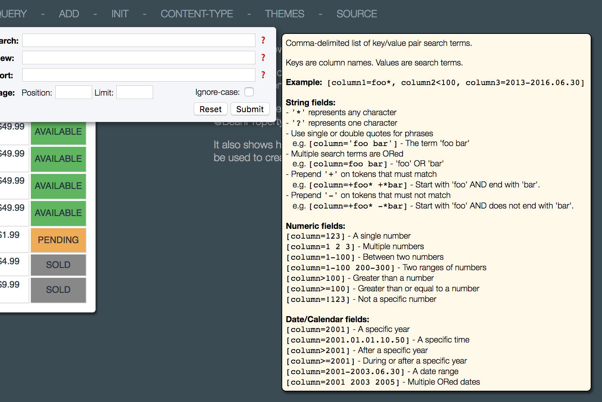
When submitted, the form submits a GET request against the current URI with special GET search API query parameters.
(e.g. Queryable class knows how to perform these filters against collections of POJOs.
ThemeMenuItem
ThemeMenuItem is a predefined Widget that returns back a list of hyperlinks for rendering the contents of a page in the various default styles.
The variable it resolves is
An example of this widget can be found in the
PoweredByJuneau
PoweredByJuneau is a predefined Widget that places a powered-by-Juneau message on a page.
The variable it resolves is
It produces a simple Apache Juneau icon floating on the right.
Typically it's used in the footer of the page, as shown below in the
It renders the following image:
Tooltip
Tooltip is a predefined template for adding tooltips to HTML5 bean constructs, typically in menu item widgets.
The following examples shows how tooltips can be added to a menu item widget.
6.31.4 - UI Customization
The HTML views of POJOs can somewhat be considered a rudimentary User Interface. In reality, a better term for them would be a Developer Interface as they're meant to be used primarily by developers and not end users. Despite that distinction, it is possible to 'brand' the HTML page to whatever you desire.
The sample root page below includes some default branding for Juneau and Apache:
http://localhost:10000/helloWorld
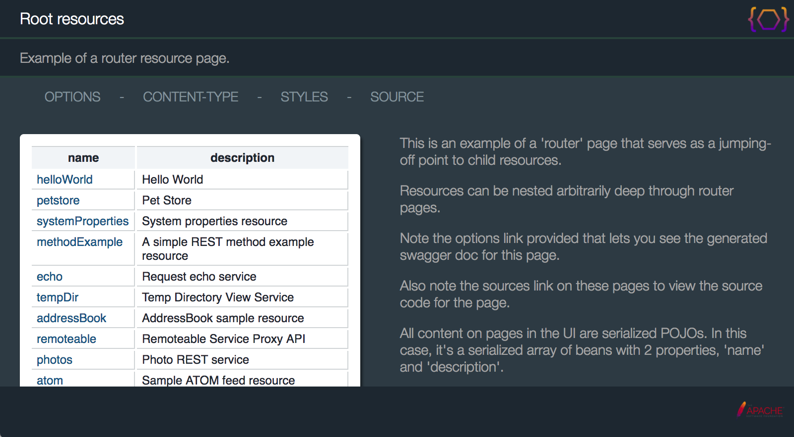The Juneau REST framework does not provide specific branding support (i.e. there is no concept of a brand icon). Instead, it just uses the existing open-ended API for defining branding via annotations on your REST classes.
The default annotation values use $C variables to pull in values from an optional
external configuration file such as the one shown below:
The take-away here is that the "User Interface" is open-ended, lets you define pretty much anything you want through arbitrary HTML, and allows you either hardcode your interface inside annotations or pull them in via string variables from other places such as external config files.
6.31.5 - Stylesheets8.1.0-updated
The sample root page renders in the default "devops" look-and-feel:
http://localhost:10000
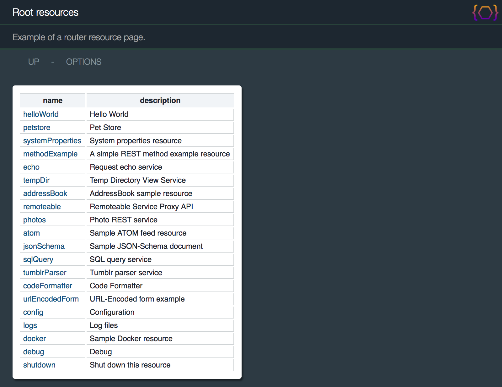The sample root page provides a dropdown widget to try out the other default look-and-feels:
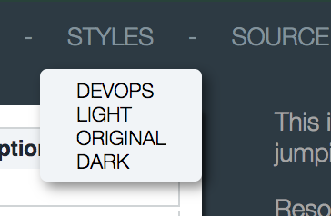For example, the "light" look-and-feel:
http://localhost:10000/?stylesheet=styles%2Flight.css

And the "dark" look-and-feel:
http://localhost:10000/?stylesheet=styles%2Fdark.css
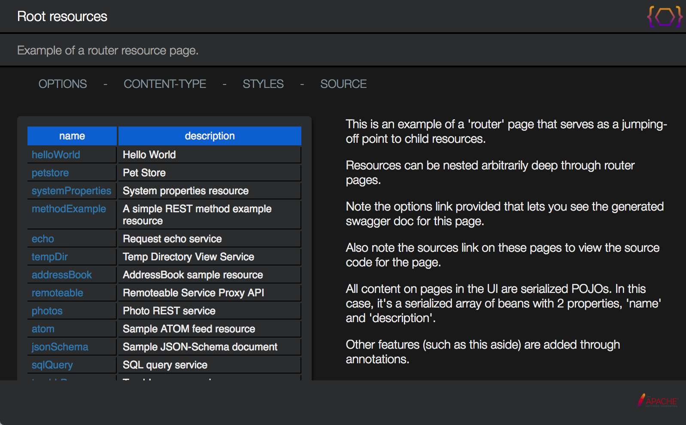
The stylesheet URL is controlled by the @HtmlDocConfig(stylesheet) annotation.
The BasicRestServlet class defines the stylesheet served up as a static file:
The
To provide your own stylesheet, simply override the stylesheet attribute and point to a different file:
You can try out different stylesheets by passing in a
In case you're curious about how the menu item works, it's defined via a widget:
The MenuItemWidget, a
specialized widget for creating pop-up menus.
In the case of
6.32 - Default Headers
The following annotations are provided for specifying default header values for requests and responses:
-
Rest(reqHeaders)
Defines default headers on request when the client doesn't specify them. -
Rest(resHeaders)
Appends the specified headers if they weren't already set programmatically.
Example:
Default headers can also be specified programmatically by overriding the following methods:
6.33 - Logging / Debugging8.1.0-new,8.2.0-updated
The REST APIs provides support for fine-tuned control of logging for HTTP requests and responses.
The APIs involved are:
-
Rest -
RestMethod -
RestContextREST_callLoggerConfig- Underlying configuration property for@Rest(logging).REST_debug- Underlying configuration property for@Rest(debug).
-
Logging- Annotation for@Rest(logging)and@RestMethod(logging)level()- The logging level.rules()- The logging rules.useStackTraceHashing()- Enables de-duplication of logged stack traces and replacement with hash IDs.stackTraceHashingTimeout()- Controls how frequently hashed stack traces are re-logged.disabled()- Disables logging completely or per-request.
-
LoggingRule- Annotation for@Logging(rules)level()- The logging level.codes()- Status code patterns and ranges to match against.exceptions()- Exception class names and patterns to match against.debugOnly()- Match only if debug is set on the request.req()- The level of request detail.res()- The level of response detail.verbose()- Shortcut forLONG request and response detail.disabled()- Disables logging completely or per-request.
Request/response details
The amount of detail on requests and responses is controlled via the @LoggingRule(req)
and @LoggingRule(res) annotations:
"short" - Results in simple one-line log lines containing the HTTP method + url + response code."medium" - Also includes headers and body length information (if debug enabled)."large" - Dumps the entire request/response bodies (if debug enabled).
The following code shows the output produced using the
The log output produced from the code above looks like this:
WARNING: [500] HTTP POST /foo java.lang.StringIndexOutOfBoundsException at org.apache.juneau.rest.annotation.RestResourceLoggingTest$MyRestClass.myRestMethod(RestResourceLoggingTest.java:672) at sun.reflect.NativeMethodAccessorImpl.invoke0(Native Method) at sun.reflect.NativeMethodAccessorImpl.invoke(NativeMethodAccessorImpl.java:62) at sun.reflect.DelegatingMethodAccessorImpl.invoke(DelegatingMethodAccessorImpl.java:43) at java.lang.reflect.Method.invoke(Method.java:498) ...
In comparison, using
Request/response bodies are only cached for logging if debugging is enabled via the
The log file now contains the following with shows the contents of the request and response bodies in both UTF-8 and spaced-hex:
WARNING: === HTTP Call (incoming) =================================================== [500] HTTP POST /foo?foo=bar Request length: 3 bytes Response code: 500 Response length: 3 bytes Exec time: 20ms ---Request Headers--- Foo: bar ---Response Headers--- Foo: bar Content-Type: text/plain ---Request Body UTF-8--- Foo ---Request Body Hex--- 46 6F 6F ---Response Body UTF-8--- Foo ---Response Body Hex--- 46 6F 6F === END =================================================================== java.lang.StringIndexOutOfBoundsException at org.apache.juneau.rest.annotation.RestResourceLoggingTest$MyRestClass.myRestMethod(RestResourceLoggingTest.java:672) at sun.reflect.NativeMethodAccessorImpl.invoke0(Native Method) at sun.reflect.NativeMethodAccessorImpl.invoke(NativeMethodAccessorImpl.java:62) at sun.reflect.DelegatingMethodAccessorImpl.invoke(DelegatingMethodAccessorImpl.java:43) at java.lang.reflect.Method.invoke(Method.java:498) ...
Rule matching
Logging rules can match against status codes, exception class names, and the debug flag.
The following shows various examples of logging rule matches.
Rules are matched in the order listed on the annotation. Rules on methods are matched before rules on classes. Rules on child methods/classes are matched before rules on parent classes.
Debug mode
The debug mode setting allows HTTP request/response bodies to be cached in memory for logging purposes:
The possible values for the debug setting are (case-insensitive):
"true" - Debug mode enabled."false" (default) - Debug mode disabled."per-request" - Debug mode is enabled only on requests containing anX-Debug: true header.
Note that caching HTTP bodies in memory can produce significant performance penalties, so use the setting wisely.
In particular, do not leave this setting enabled on production instances since it can easily lead to
denial-of-service attacks.
Servlet code can check the debug setting via the RestRequest.isDebug() method allowing it to be used
for custom purposes.
Debug mode can also be enabled on a request by calling the RestRequest.setDebug(Boolean) or
RestResponse.setDebug(Boolean) methods. Note however that you must be sure not to have already consumed
the request or started writing the response before calling this method.
No-trace (disabled) mode
The @Logging(disabled) and @LoggingRule(disabled) annotations
can be used to disable logging entirely or on a per-request basis:
The possible values for the disabled setting are (case-insensitive):
"true" - Logging disabled."false" (default) - Logging not disabled."per-request" - Logging is disabled only on requests containing aX-NoTrace: true header.
Disabled logging is particularly useful when running testcases that are expected to throw exceptions or cause other errors and you don't want these errors logged.
Disabled logging can also be set on a request by calling the RestRequest.setNoTrace(Boolean) or
RestResponse.setNoTrace(Boolean) methods.
Stacktrace hashing
The @Logging(useStackTraceHashing) setting can be used to eliminate duplicate stacktraces
in your log file by logging them once and then logging identifying hash IDs.
In the example below, we're causing two exceptions but only logging the first one:
The log file will show a 4 byte hash ID
Jul 11, 2019 3:38:48 PM org.apache.juneau.rest.BasicRestCallLogger log WARNING: [500,9b85cc96.1] HTTP POST /foo java.lang.StringIndexOutOfBoundsException at org.apache.juneau.rest.annotation.RestResourceLoggingTest$MyRestClass.myRestMethod(RestResourceLoggingTest.java:671) at sun.reflect.NativeMethodAccessorImpl.invoke0(Native Method) at sun.reflect.NativeMethodAccessorImpl.invoke(NativeMethodAccessorImpl.java:62) at sun.reflect.DelegatingMethodAccessorImpl.invoke(DelegatingMethodAccessorImpl.java:43) at java.lang.reflect.Method.invoke(Method.java:498) ... WARNING: [500,9b85cc96.2] HTTP POST /foo
The @Logging(stackTraceHashingTimeout) setting can be used to periodically log the stacktrace
to the log file again.
6.34 - HTTP Status Codes
By default, a 200 (OK) status is automatically set as the HTTP status when a Java method executes successfully.
Other status codes can be generated by throwing a RestException with a
specific HTTP status code, or calling HttpServletResponse.setStatus(int).
Non-OK (200) status codes are automatically triggered by the following conditions:
| Unauthorized | A guard prevented the method from being executed |
|
| Not Found | No matching path patterns were found on any method | |
| Method Not Implemented | A path pattern matched, but no Java methods were found for the HTTP method | |
| Not Acceptable |
A path pattern matched, but no Java methods were found with a matching serializer for the
|
|
| Precondition Failed |
A path pattern matched, but no Java methods were found that were not rejected by
matchers
|
|
| Unsupported Media Type |
A path pattern matched, but no Java methods were found with a matching parser for the
|
|
| Internal Server Error | The Java method threw an exception other than RestException |
6.35 - Overloading HTTP Methods
Through the use of the built-in
For example, the URL
To support overloaded methods, the @Rest(allowedMethodParams)
setting must be enabled on your servlet.
6.36 - Built-in Parameters
The following URL parameters have special meaning and can be passed in through the URL of the request:
| &plainText=true |
Response will always be WSERIALIZER_useWhitespace enabled).
Useful for debugging. |
| &debug=true | Request body content will be dumped to log file. |
| &noTrace=true |
If an error occurs, don't log the stack trace to the log file.
Useful for automated JUnit testcases testing error states to prevent the log file from filling up with useless stack traces. |
| &method=X |
Overload the HTTP method as a GET parameter (e.g Must be enabled via @Rest(allowedMethodParams) setting.
|
| &Header-Name=headerValue |
Specify a header value as a GET parameter.
Must be enabled via @Rest(allowedHeaderParams) setting.
|
| &body=X |
Pass in the HTTP body content on PUT and POST methods as a UON-encoded GET parameter.
Must be enabled via @Rest(allowBodyParam) setting.
|
| &x-response-headers=X |
Pass-through headers to the response.
Must be a UON-encoded map of key-value pairs. |
6.37 - Custom Serializers and Parsers
A very easy-to-use API is provided for defining your own serializers and parsers at both the servlet and method levels.
The following examples show a custom serializer and parser defined at the method level.
It's the
6.38 - Using with OSGi
Since REST servlets are basically just
The following code shows how to register your REST servlets in an OSGi
6.39 - Using with Spring and Injection frameworks
The Juneau REST server API is compatible with dependency injection frameworks such as Spring.
The important class is the RestResourceResolver class which is used
to resolve child servlet/resource implementation classes inside parent contexts.
In other words, it's used for resolving @Rest(children) instances.
The general approach starts with defining a resolver that uses the Spring application context for resolution:
Next, define the Spring configuration to return our resolver:
Finally, define your
After that, just define constructors on your child resources to take in Spring beans:
6.40 - Using HTTP/2 features
Juneau is built as a veneer on top of the Servlet API, allowing you to use low-level Servlet APIs whenever needed. This allows you to take advantage of the newest HTTP/2 features implemented in the new Servlet 4.0 specification.
6.41 - Other Notes
-
Subclasses can use either
GenericServlet.init(ServletConfig)orGenericServlet.init()for initialization just like any other servlet. -
The
X-Response-Headers header can be used to pass through header values into the response. The value should be a URL-encoded map of key-value pairs. For example, to add a"Refresh: 1" header to the response to auto-refresh a page, the following parameter can be specified:"/sample?X-Response-Headers={Refresh=1}"
7 - juneau-rest-server-jaxrs
Maven Dependency
Java Library
juneau-rest-server-jaxrs-8.2.0.jar
OSGi Module
org.apache.juneau.rest.server_8.2.0.jar
The
7.1 - Juneau JAX-RS Provider
The Juneau framework contains the
It should be noted that although some of the functionality of the Juneau Server API is provided through the JAX-RS
integration components, it is not nearly as flexible as using the RestServlet class directly.
What you can do with the Juneau JAX-RS provider classes:
- Use existing Juneau serializers and parsers for converting streams to POJOs and vis-versa.
-
Use annotations to specify filters and properties using the
@RestMethodandJuneauProviderannotations.
What you can't do with the Juneau JAX-RS provider classes:
-
Specify or override serializers/parsers at the Java class and method levels.
JAX-RS does not provide the capability to use different providers for the same media types at the class or method levels. - Specify or override filters and properties at the Java class level.
-
Default stylesheets for the
HtmlDocSerializerclass.
It will produce HTML, but it won't contain any styles applied. -
The ability to specify HTTP method, headers, and content using GET parameters.
These make debugging REST interfaces using only a browser possible. - Class or method level encoding.
- Class or method level guards.
- Class or method level converters.
The Juneau JAX-RS provider API consists of the following classes:
-
BaseProvider- The base provider class that implements the JAX-RSMessageBodyReader andMessageBodyWriter interfaces. -
JuneauProvider- Annotation that is applied to subclasses ofBaseProvider to specify the serializers/parsers associated with a provider, and optionally filters and properties to apply to those serializers and parsers. -
BasicProvider- A default provider that provides the same level of media type support as theBasicRestServletclass.
For the most part, when using these components, you'll either use the existing
8 - juneau-rest-server-springboot8.0.0-new
Maven Dependency
Java Library
juneau-rest-server-springboot-8.2.0.jar
OSGi Module
org.apache.juneau.rest.server.springboot_8.2.0.jar
The
8.1 - Overview8.0.0-new
The Juneau integration component for Spring Boot consists of the following classes:
A typical Spring Boot application can use the JuneauRestInitializer to find
and register Juneau REST servlets via the JuneauRestRoot annotation.
Example:
The initializer will search for Spring beans annotated with the
Another option is to use the
The root servlets are given an instance of SpringRestResourceResolver which allows
for child resources to be defined as injectable Spring beans.
The Overview > juneau-examples-rest-springboot section describes how the Examples REST application is deployed using Spring Boot and quickly deployable as an online application using Heroku.
8.2 - Child Resources8.1.0-new
When using the SpringRestResourceResolver.
The resource resolver gets passed down through the children hierarchy, allowing child resources to be defined as injectable Spring beans.
Example:
The root resource class must extend from BasicRestServletGroup class is our router class
that extends from
Because Spring Boot will automatically register any beans that extend from BasicRestGroup and BasicRest instead:
9 - juneau-rest-client8.2.0-updated
Maven Dependency
Java Library
juneau-rest-client-8.2.0.jar
OSGi Module
org.apache.juneau.rest.client_8.2.0.jar
Built upon the feature-rich Apache HttpClient library, the Juneau RestClient API adds support for fluent-style REST calls and the ability to perform marshalling of POJOs to and from HTTP parts.
Example:
Breaking apart the fluent call, we can see the classes being used:
RestClientBuilder
It additionally provides support for creating remote proxy interfaces using REST as the transport medium.
Example:
The classes are closely tied to Apache HttpClient, yet provide lots of additional functionality:
RestClientextends HttpClient, createsRestRequestobjects.RestRequestextends HttpUriRequest, createsRestResponseobjects.RestResponseextends HttpResponse, createsRestResponseBodyandRestResponseHeaderobjects.RestResponseBodyextends HttpEntityRestResponseHeaderextends Header
Instances of this class are built using the RestClientBuilder class which can be constructed using
the RestClient.create() method as shown above.
Clients are typically created with a root URI so that relative URIs can be used when making requests.
This is done using the RestClientBuilder.rootUri(Object) method.
Example:
The RestClient class creates RestRequest objects using the following methods:
The RestRequest class creates RestResponse objects using the following methods:
The distinction between the two methods is that complete() automatically consumes the response body and
run() does not. Note that you must consume response bodies in order for HTTP connections to be freed up
for reuse! The InputStreams returned by the RestResponseBody object are auto-closing once
they are exhausted, so it is often not necessary to explicitly close them.
The following examples show the distinction between the two calls:
9.1 - POJO Marshalling8.2.0-new
By default, JSON support is provided for HTTP request and response bodies. Other languages can be specified using any of the following builder methods:
Example:
Clients can also support multiple languages:
Example:
When using clients with multiple language support, the request language is selected by setting the
Languages can also be specified per-request.
The RestClientBuilder class provides convenience methods for setting common serializer and parser
settings.
Example:
Other methods are also provided for specifying the serializers and parsers used for lower-level marshalling support:
HTTP parts (headers, query parameters, form data...) are serialized and parsed using the HttpPartSerializer
and HttpPartParser APIs. By default, clients are configured to use OpenApiSerializer and
OpenApiParser. These can be overridden using the following methods:
9.2 - Request Headers8.2.0-new
Per-client or per-request headers can be specified using the following methods:
Example:
headers(Object...) allows you to pass in a variety
of header objects, and headerPairs(Object...) allows
you to specify several headers in a compact fashion.
Example:
Additionally, methods are provided on the client builder and per request for all standard HTTP headers
such as authorization(Object).
Example:
The supplier methods are particularly useful for header values whose values may change over time (such as
Example:
The HttpPartSchema API allows you to define OpenAPI schemas to POJO data structures on request headers.
Example:
The methods with AddFlag parameters allow you to control whether new headers get appended, prepended, or
replace existing headers with the same name.
- Methods that pass in POJOs convert values to strings using the part serializers. Methods that pass in
Header orNameValuePair objects use the values returned by that bean directly.
org.apache.juneau.http.header- PredefinedHeaderbeans.
9.3 - Request Query Parameters8.2.0-new
Per-client or per-request query parameters can be specified using the following methods:
Example:
queries(Object...) allows you to pass in a variety
of query parameter objects, and queryPairs(Object...) allows
you to specify several query parameters in a compact fashion.
Example:
The HttpPartSchema API allows you to define OpenAPI schemas to POJO data structures on query parameters.
Example:
The methods with AddFlag parameters allow you to control whether new query parameters get appended, prepended, or
replace existing query parameters with the same name.
- Methods that pass in POJOs convert values to strings using the part serializers. Methods that pass in
NameValuePair objects use the values returned by that bean directly.
9.4 - Request Form Data8.2.0-new
Per-client or per-request form-data parameters can be specified using the following methods:
Example:
formDatas(Object...) allows you to pass in a variety
of form-data parameter objects, and formDataPairs(Object...) allows
you to specify several form-data parameters in a compact fashion.
Example:
The HttpPartSchema API allows you to define OpenAPI schemas to POJO data structures on form-data parameters.
Example:
The methods with AddFlag parameters allow you to control whether new form-data parameters get appended, prepended, or
replace existing form-data parameters with the same name.
- Like header values, dynamic values and OpenAPI schemas are supported.
- Methods that pass in POJOs convert values to strings using the part serializers. Methods that pass in
NameValuePair objects use the values returned by that bean directly.
9.5 - Request Body8.2.0-new
The request body can either be passed in with the client creator method (e.g. post(uri,body)),
or can be specified via the following methods:
The request body can be any of the following types:
-
Object- POJO to be converted to text using theSerializerdefined on the client or request. -
Reader- Raw contents ofReaderwill be serialized to remote resource. -
InputStream- Raw contents ofInputStreamwill be serialized to remote resource. -
HttpEntity- Bypass Juneau serialization and pass HttpEntity directly to HttpClient. -
NameValuePairSupplier- Converted to a URL-encoded FORM post. -
Supplier- A supplier of anything on this list.
Examples:
- If the serializer on the client or request is explicitly set to
null , POJOs will be converted to strings using the registered part serializer as content type"text/plain . If the part serializer is alsonull , POJOs will be converted to strings usingClassMeta.toString(Object)which typically just callsObject.toString().
9.6 - Response Status8.2.0-new
After execution using RestRequest.run() or RestRequest.complete(), the following methods can be used
to get the response status:
RestResponsegetStatusLine()returns StatusLinegetStatusCode()returns int getReasonPhrase()returns StringassertStatus()returns RestResponseStatusLineAssertion
Example:
Equivalent methods with mutable parameters are provided to allow access to status values without breaking fluent call chains.
Example:
- If you are only interested in the response status and not the response body, be sure to use
RestRequest.complete()instead ofRestRequest.run()to make sure the response body gets automatically cleaned up. Otherwise you must consume the response yourself.
The assertion method is provided for quickly asserting status codes in fluent calls.
Example:
9.7 - Response Headers8.2.0-new
Response headers are accessed through the following methods:
RestResponsegetHeader(String)returns RestResponseHeadergetHeaders(String)returns RestResponseHeader[]getFirstHeader(String)returns RestResponseHeadergetLastHeader(String)returns RestResponseHeadergetAllHeaders()returns RestResponseHeader[]getStringHeader(String)returns StringcontainsHeader(String)returns boolean
Unlike RestResponse.getFirstHeader(String) and RestResponse.getLastHeader(String), the RestResponse.getHeader(String)
method returns an empty RestResponseHeader object instead of returning
Example:
The RestResponseHeader class extends from the HttpClient Header class and provides several convenience
methods:
RestResponseHeaderexists()returns boolean asString()returns StringasOptionalString()returns Optional<String>asStringOrElse(String)returns Stringas(Type,Type...)returns Tas(Class<T>)returns TasOptional(Type,Type...)returns Optional<T>asOptional(Class<T>)returns Optional<T>asMatcher(Pattern)returns MatcherasMatcher(String)returns MatcherasHeader(Class<Textends BasicHeader> c)returns BasicHeaderasStringHeader()returns BasicIntegerHeaderasIntegerHeader()returns BasicStringHeaderasLongHeader()returns BasicLongHeaderasDateHeader()returns BasicDateHeaderasCsvArrayHeader()returns BasicCsvArrayHeaderasEntityTagArrayHeader()returns BasicEntityTagArrayHeaderasStringRangeArrayHeader()returns BasicStringRangeArrayHeaderasUriHeader()returns BasicUriHeader
The RestResponseHeader.schema(HttpPartSchema) method allows you to perform parsing of OpenAPI formats for
header parts.
Example:
Assertion methods are also provided for fluent-style calls:
RestResponseHeaderassertString()returns FluentStringAssertionassertInteger()returns FluentIntegerAssertionassertLong()returns FluentLongAssertionassertDate()returns FluentDateAssertion
Note how in the following example, the fluent assertion returns control to the RestResponse object after
the assertion has been completed:
Example:
9.8 - Response Body8.2.0-new
The response body is accessed through the following method:
RestResponsegetBody()returns RestResponseBody
The RestResponseBody class extends from the HttpClient HttpEntity class and provides several convenience
methods:
RestResponseBodyasInputStream()returns InputStreamasReader()returns ReaderasReader(Charset)returns ReaderpipeTo(OutputStream)returns RestResponsepipeTo(Writer)returns RestResponseas(Type,Type...)returns Tas(Class<T>)returns TasFuture(Class<T>)returns Future<T>asFuture(Type,Type...)returns Future<T>asString()returns StringasStringFuture()returns Future<String>asAbbreviatedString(int)returns StringasPojoRest(Class<?>)returns PojoRestasPojoRest()returns PojoRestasMatcher(Pattern)returns MatcherasMatcher(String)returns Matcher
Examples:
The response body can only be consumed once unless it has been cached into memory. In many cases, the body is
automatically cached when using the assertions methods or methods such as RestResponseBody.asString().
However, methods that involve reading directly from the input stream cannot be called twice.
In these cases, the RestResponse.cacheBody() and RestResponseBody.cache() methods are provided
to cache the response body in memory so that you can perform several operations against it.
Assertion methods are also provided for fluent-style calls:
RestResponseBodyassertString()returns FluentStringAssertionassertObject(Class<?>)returns FluentObjectAssertionassertBytes()returns FluentByteArrayAssertion
Example:
Object assertions allow you to parse the response body into a POJO and then perform various tests on that resulting POJO.
Example:
9.9 - Custom Call Handlers8.2.0-new
The RestCallHandler interface provides the ability to provide custom handling of requests.
RestClientBuilderRestCallHandlerrun(HttpHost,HttpRequest,HttpContext)returns HttpResponse
Example:
Note that there are other ways of accomplishing this such as extending the RestClient class and overriding
the RestClient.run(HttpHost,HttpRequest,HttpContext) method
or by defining your own HttpRequestExecutor. Using this interface is often simpler though.
9.10 - Interceptors8.2.0-new
The RestCallInterceptor API provides a quick way of intercepting and manipulating requests and responses beyond
the existing HttpRequestInterceptor and HttpResponseInterceptor APIs.
Example:
9.11 - REST Proxies8.2.0-updated
One of the more powerful features of the REST client class is the ability to produce Java interface proxies against arbitrary 3rd party REST resources.
The methods to retrieve remote interfaces are:
RestClientgetRemote(Class<T>)returns TgetRemote(Class<T>,Object)returns TgetRemote(Class<T>,Object,Serializer,Parser)returns T
Annotations are used on the interface and interface methods to specify how to convert input and output to HTTP headers, query parameters, form post parameters, or request/response bodies.
org.apache.juneau.http.remoteRemote- Applied to interface class.RemoteMethod- Applied to interface methods.
org.apache.juneau.http.annotation
Example:
The call above translates to the following REST call:
POST http://localhost:10000/petstore/pets?debug=true HTTP/1.1 Accept: application/json Content-Type: application/json E-Tag: 475588d4-0b27-4f56-9296-cc683251d314 { name: 'Fluffy', price: 9.99 }
The
Example:
9.11.1 - @Remote8.1.2-updated,8.2.0-updated
The @Remote annotation is used on your interface class
to identify it as a REST proxy interface.
The
@Remote(path)
The @Remote(path) annotation is used to define the
HTTP path of the REST service.
The path can be an absolute path to your REST service.
Example:
PetStore
Overview > juneau-marshall > Simple Variable Language > VarResolver.DEFAULT can also be used in the path.
Example:
When a relative path is specified, it's relative to the root-url defined on the
Example:
RestClient
When no path is specified, the root-url defined on the
Example:
RestClient
@Remote(headers/headerSupplier)
The @Remote(headers) and @Remote(headerSupplier)
annotations are used to add headers on all requests.
Example:
@Remote(version/versionHeader)
The @Remote(version) and @Remote(versionHeader)
annotations are used to specify the client-side version of this interface that can be used on the server side
to perform version-specific handling.
Example:
This can be used in conjunction with the server-side client-versioning support.
9.11.2 - @RemoteMethod8.2.0-updated
The @RemoteMethod annotation is applied to methods
of
@RemoteMethod(method/path)
The HTTP method and path are mapped to a Java method using the
Example:
The Java method name can be anything.
Inferred method/path
In such cases,
For example, the
In such cases, the
Method names matching the following pattern are assumed to be implying the HTTP method name:
(get|put|post|delete|options|head|connect|trace|patch).*
do(?i)(get|put|post|delete|options|head|connect|trace|patch)
Examples:
| Java method name | Inferred HTTP method | Inferred HTTP path |
|---|---|---|
| getPet() | GET | /pet |
| get() | GET | / |
| postPet() | POST | /pet |
| fooPet() | [default] | /fooPet |
| doGet() | GET | / |
| doGET() | GET | / |
| doFoo() | [default] | /doFoo |
@RemoteMethod(returns)
The return type of the Java methods of can be any of the following:
-
void /Void- Don't parse any response.
Note that the method will still throw a runtime exception if an error HTTP status is returned. -
Any parsable POJO
- The body of the response will be converted to the POJO using the parser defined on the
RestClient based on theContent-Type of the response. -
Any
@Response-annotated type. (described later) -
HttpResponse - Returns the rawHttpResponse returned by the innerHttpClient . -
Reader- Returns access to the raw reader of the response. -
InputStream- Returns access to the raw input stream of the response. -
A
FutureorCompletableFutureof anything on this list.
If you're only interested in the HTTP status code of the response, you can use the returns
annotation with a value of STATUS:
Example:
If your
9.11.3 - @Body8.2.0-updated
The @Body annotation can be applied to arguments of
Examples:
The argument can be any of the following types:
-
Any serializable POJO - Converted to output using the
Serializerregistered with theRestClient .Content-Type is set to that of theSerializer . -
Reader- Raw contents ofReaderwill be serialized to remote resource.Content-Type is set to"text/plain" . -
InputStream- Raw contents ofInputStreamwill be serialized to remote resource.Content-Type is set to"application/octet-stream" . -
NameValuePairSupplier- Converted to a URL-encoded FORM post.Content-Type is set to"aplication/x-www-form-urlencoded" . -
HttpEntity - Bypass Juneau serialization and pass HttpEntity directly to HttpClient.
OpenAPI schema based serialization can be used by using the OpenApiSerializer class.
See Overview > juneau-marshall > OpenAPI Details > OpenAPI Serializers for information about supported data types in OpenAPI serialization.
If your
9.11.4 - @FormData8.2.0-updated
The @FormData annotation can be applied to arguments of
FormData_default,df- Default value if not present._enum,e- Input validation. Must match one of the values.allowEmptyValue,aev- Input validation. Allow empty value.collectionFormat,cf- How collections of items are formatted.exclusiveMaximum,emax- Input validation. Whether maximum is exclusive.exclusiveMinimum,emin- Input validation. Whether minimum is exclusive.format,f- The schema type format.items- The schema of items in a collection.maximum,max- Input validation. Maximum numeric value.maxItems,maxi- Input validation. Maximum number of items in a collection.maxLength,maxl- Input validation. Maximum length of a string.minimum,min- Input validation. Minimum numeric value.minItems,mini- Input validation. Minimum number of items in a collection.minLength,minl- Input validation. Minimum length of a string.multipleOf,mo- Input validation. Number must be a multiple of.name,n- Form data entry name.pattern,p- Input validation. Must match regular expression.required,r- Input validation. Form data entry must be present.serializer- Override the part serializer.skipIfEmpty,sie- Don't add if value is null or empty.type,t- The schema type.uniqueItems,ui- Input validation. Collections must contain unique items only.
Example:
Single-part arguments (i.e. those with name !=
-
Any serializable POJO - Converted to a string using the
HttpPartSerializerregistered with theRestClient (OpenApiSerializerby default) or associated via the@FormData(serializer)annotation.
Multi-part arguments (i.e. those with name ==
-
Reader- Raw contents ofReaderwill be serialized to remote resource. -
InputStream- Raw contents ofInputStreamwill be serialized to remote resource. -
NameValuePairSupplier- Converted to a URL-encoded FORM post. -
Map - Converted to key-value pairs.
Values serialized using the registeredHttpPartSerializer(OpenApiSerializerby default). -
Bean - Converted to key-value pairs.
Values serialized using the registeredHttpPartSerializer(OpenApiSerializerby default). -
CharSequence - Used directly as am"application/x-www-form-urlencoded" entity.
See the link below for information about supported data types in OpenAPI serialization.
9.11.5 - @Query8.2.0-updated
The @Query annotation can be applied to arguments of
Query_default,df- Default value if not present._enum,e- Input validation. Must match one of the values.allowEmptyValue,aev- Input validation. Allow empty value.collectionFormat,cf- How collections of items are formatted.exclusiveMaximum,emax- Input validation. Whether maximum is exclusive.exclusiveMinimum,emin- Input validation. Whether minimum is exclusive.format,f- The schema type format.items- The schema of items in a collection.maximum,max- Input validation. Maximum numeric value.maxItems,maxi- Input validation. Maximum number of items in a collection.maxLength,maxl- Input validation. Maximum length of a string.minimum,min- Input validation. Minimum numeric value.minItems,mini- Input validation. Minimum number of items in a collection.minLength,minl- Input validation. Minimum length of a string.multipleOf,mo- Input validation. Number must be a multiple of.name,n- Query parameter name.pattern,p- Input validation. Must match regular expression.required,r- Input validation. Query parameter must be present.serializer- Override the part serializer.skipIfEmpty,sie- Don't add if value is null or empty.type,t- The schema type.uniqueItems,ui- Input validation. Collections must contain unique items only.
Example:
Single-part arguments (i.e. those with name !=
-
Any serializable POJO - Converted to a string using the
HttpPartSerializerregistered with theRestClient (OpenApiSerializerby default) or associated via the@Query(serializer)annotation.
Multi-part arguments (i.e. those with name ==
-
Reader- Raw contents ofReaderwill be serialized directly a query string. -
NameValuePairSupplier- Serialized as individual query parameters. -
Map - Converted to key-value pairs.
Values serialized using the registeredHttpPartSerializer(OpenApiSerializerby default). -
Bean - Converted to key-value pairs.
Values serialized using the registeredHttpPartSerializer(OpenApiSerializerby default). -
CharSequence - Serialized directly a query string.
See the link below for information about supported data types in OpenAPI serialization.
9.11.6 - @Header8.2.0-updated
The @Header annotation can be applied to arguments of
Header_default,df- Default value if not present._enum,e- Input validation. Must match one of the values.allowEmptyValue,aev- Input validation. Allow empty value.collectionFormat,cf- How collections of items are formatted.exclusiveMaximum,emax- Input validation. Whether maximum is exclusive.exclusiveMinimum,emin- Input validation. Whether minimum is exclusive.format,f- The schema type format.items- The schema of items in a collection.maximum,max- Input validation. Maximum numeric value.maxItems,maxi- Input validation. Maximum number of items in a collection.maxLength,maxl- Input validation. Maximum length of a string.minimum,min- Input validation. Minimum numeric value.minItems,mini- Input validation. Minimum number of items in a collection.minLength,minl- Input validation. Minimum length of a string.multipleOf,mo- Input validation. Number must be a multiple of.name,n- Header name.pattern,p- Input validation. Must match regular expression.required,r- Input validation. Header must be present.serializer- Override the part serializer.skipIfEmpty,sie- Don't add if value is null or empty.type,t- The schema type.uniqueItems,ui- Input validation. Collections must contain unique items only.
Example:
Single-part arguments (i.e. those with name !=
-
Any serializable POJO - Converted to a string using the
HttpPartSerializerregistered with theRestClient (OpenApiSerializerby default) or associated via the@Header(serializer)annotation.
Multi-part arguments (i.e. those with name ==
-
HeaderSupplier- Serialized as individual headers. -
Map - Converted to key-value pairs.
Values serialized using the registeredHttpPartSerializer(OpenApiSerializerby default). -
Bean - Converted to key-value pairs.
Values serialized using the registeredHttpPartSerializer(OpenApiSerializerby default).
See the link below for information about supported data types in OpenAPI serialization.
9.11.7 - @Path8.2.0-updated
The @Path annotation can be applied to arguments of
Path_enum,e- Input validation. Must match one of the values.allowEmptyValue,aev- Input validation. Allow empty value.collectionFormat,cf- How collections of items are formatted.exclusiveMaximum,emax- Input validation. Whether maximum is exclusive.exclusiveMinimum,emin- Input validation. Whether minimum is exclusive.format,f- The schema type format.items- The schema of items in a collection.maximum,max- Input validation. Maximum numeric value.maxLength,maxl- Input validation. Maximum length of a string.minimum,min- Input validation. Minimum numeric value.minLength,minl- Input validation. Minimum length of a string.multipleOf,mo- Input validation. Number must be a multiple of.name,n- Path variable name.pattern,p- Input validation. Must match regular expression.serializer- Override the part serializer.type,t- The schema type.
Example:
Single-part arguments (i.e. those with name !=
-
Any serializable POJO - Converted to a string using the
HttpPartSerializerregistered with theRestClient (OpenApiSerializerby default) or associated via the@Path(serializer)annotation.
Multi-part arguments (i.e. those with name ==
-
NameValuePairSupplier- Serialized as individual path parameters. -
Map - Converted to key-value pairs.
Values serialized using the registeredHttpPartSerializer(OpenApiSerializerby default). -
Bean - Converted to key-value pairs.
Values serialized using the registeredHttpPartSerializer(OpenApiSerializerby default).
See the link below for information about supported data types in OpenAPI serialization.
9.11.8 - @Request
The @Request annotation can be applied to a type of a
Requestserializer- Override the part serializer.
Example:
PetStore
The
The annotated methods must be no-arg and public. They can be named anything.
Any of the following annotations can be used on the methods:
The behavior and functionality of all of the annotations are the same as if they were used on method arguments directly. This means full support for OpenAPI serialization and validation.
Annotations on methods are inherited from parent classes and interfaces. For example, the request bean above could have defined annotations in an interface to keep them clear from the implementation:
9.11.9 - @Response
The @Response annotation can be applied to types returned by
The
Example:
PetStore
The annotated methods must be no-arg. They can be named anything.
Any of the following annotations can be used on the methods:
The behavior and functionality of all of the annotations are the same as if they were used on method arguments directly. This means full support for OpenAPI serialization and validation.
9.11.10 - Dual-purpose (end-to-end) interfaces8.0.0-new
A common coding practice is to use the same Java interface to define both your server and client side REST interfaces. The advantage to this approach is that changes that you make to your REST interface can be reflected in both places at the same time, reducing the chances for compatibility mistakes.
What makes this possible is that method-level annotations such as
The general approach is to define your @Remote-annotated interface first.
The following example is pulled from the PetStore app:
Next you define the implementation of your interface as a normal Juneau REST resource:
Then use the interface as a remote resource like so:
RestClient client = RestClient.
In the example above, we chose to add the
Note how we didn't need to use the
9.12 - Logging and Debugging8.2.0-new
The following methods provide logging of requests and responses:
The following example shows the results of logging all requests that end with
Examples:
This produces the following console output:
=== HTTP Call (outgoing) ====================================================== === REQUEST === POST http://localhost/bean ---request headers--- Accept: application/json+simple ---request entity--- Content-Type: application/json+simple ---request content--- {f:1} === RESPONSE === HTTP/1.1 200 ---response headers--- Content-Type: application/json ---response content--- {f:1} === END =======================================================================",
It should be noted that if you enable request logging detail level DetailLevel.FULL, response bodies will be cached by default which may introduce
a performance penalty.
Additionally, the following method is also provided for enabling debug mode:
Enabling debug mode has the following effects:
Context.CONTEXT_debugis enabled.RestClient.RESTCLIENT_leakDetectionis enabled.RestClientBuilder.logToConsole()is called.
9.13 - Customizing HttpClient8.2.0-new
Several methods are provided for customizing the underlying HTTP client and client builder classes:
RestClientBuilderhttpClientBuilder(HttpClientBuilder)- Set the client builder yourself.createHttpClientBuilder()- Override to create the client builder.createHttpClient()- Override to create the client.createConnectionManager()- Override to create the connection management.
Additionally, all methods on the
Example:
Refer to the HttpClientBuilder docs for more information.
9.14 - Extending RestClient8.2.0-new
The
Example:
The RestRequest and RestResponse objects can also be extended and integrated by overriding the
RestClient.createRequest(URI, String, boolean) and RestClient.createResponse(RestRequest, HttpResponse, Parser) methods.
9.15 - Authentication8.2.0-updated
The Juneau REST client itself does not implement any support for authentication. Instead, it delegates it to the underlying Apache HTTP Client interface.
The following sections show how some common authentication mechanisms can be set up using HTTP Client APIs.
10 - juneau-rest-mock8.1.0-new,8.2.0-updated
Maven Dependency
Java Library
juneau-rest-mock-8.2.0.jar
OSGi Module
org.apache.juneau.rest.mock_8.2.0.jar
The
10.1 - MockRestClient8.2.0-new
The MockRestClient class is used for performing serverless unit testing of @Rest-annotated
and @Remote-annotated classes.
The MockRestClient itself extends from RestClient providing it with the rich
feature set of that API.
The following shows a simple example of invoking a PUT method on a simple REST interface and asserting
the correct status code and response body:
Breaking apart the fluent method call above will help you understand how this works.
The concept of the design is simple. The MockRestClient class is used to create instances of MockServletRequest
and MockServletResponse which are passed directly to the call handler on the resource class RestCallHandler.execute(HttpServletRequest,HttpServletResponse).
In effect, you're fully testing your REST API as if it were running in a live servlet container, yet not
actually having to run in a servlet container.
All aspects of the client and server side code are tested, yet no servlet container is required. The actual
over-the-wire transmission is the only aspect being bypassed.
The
The MockRestRequest object has convenience methods provided to allow you to set properties
directly on the underlying HttpServletRequest object. The following example shows how
this can be used to directly set roles on the request object to perform security testing.
Example:
The MockRestClient class has a debug mode that will cause your HTTP requests and responses to
be sent to the console:
MockRestClient
The MockRestClient class can also be used for testing of Remote-annotated
interfaces against @Rest-annotated resources.
Example:
11 - juneau-microservice-core8.0.0-new, 8.1.2-deprecated
Maven Dependency
Java Library
juneau-microservice-core-8.2.0.jar
OSGi Module
org.apache.juneau.microservice.core_8.2.0.jar
Juneau Microservice is an API for creating stand-alone executable jars with automatic support for Juneau configurations and console commands.
Features include:
- A builder-based API for defining and starting microservices.
- An extensible API that allows you to hook into various lifecycle events.
- Simple-to-use APIs for accessing manifest file entries, command-line arguments, and external configuration file properties.
11.1 - Microservice Overview8.0.0-new, 8.1.2-deprecated
The Microservice API consists of a base class for defining executable microservices.
Features include:
- A builder-based API for defining and starting microservices.
- An extensible API that allows you to hook into various lifecycle events.
- Simple-to-use APIs for accessing manifest file entries, command-line arguments, and external configuration file properties.
The Microservice API consists of the following packages and classes:
org.apache.juneau.microserviceMicroservice- The base microservice class.MicroserviceBuilder- Builder for the microservice class.MicroserviceListener- Interface for hooking into lifecyle events of the microservice.BasicMicroserviceListener- Adapter for MicroserviceListener class.
org.apache.juneau.microservice.consoleConsoleCommand- Abstract class for defining console commands.
By itself the Microservice API doesn't provided much functionality, but it does provide the basis for the Jetty Microservice described later.
The most-basic creation of a microservice from an entry-point method is shown below:
11.2 - Lifecycle Methods8.0.0-new, 8.1.2-deprecated
The lifecycle methods of the Microservice class consists of the following:
A typical implementation of an app with lifecycle methods might look like the following:
If your application consists of a single microservice, you can use the Microservice.getInstance() method
from anywhere in your code:
The Microservice.startConsole() and Microservice.stopConsole() control
the lifecycle of the console commands.
Typically you'll want to control these separately from the app so that you can easily restart your application
from the console without affecting the console itself.
The lifecycle methods on the Microservice class are purposely left non-final so that
subclasses can override them to provide customized behavior.
11.3 - Args8.0.0-new, 8.1.2-deprecated
Command-line arguments can be associated with a microservice using the MicroserviceBuilder.args(String...) method.
Example:
When specified, the arguments can be retrieved using the Microservice.getArgs() method which provides
an API for easily accessing command-line arguments using common notation:
Args a = Microservice.
Specifying the command-line arguments also makes them available through $A SVL variables.
These can be used in the configuration file and throughout various Juneau annotations.
Example:
11.4 - Manifest8.0.0-new, 8.1.2-deprecated
The MicroserviceBuilder.manifest(Object) method can be used to specify the contents or location of of the main
manifest file of the executable jar.
If you do not specify the location/contents of the manifest file, the microservice will attempt to resolve it through the following methods:
-
Looking on the file system for a file at
"META-INF/MANIFEST.MF" . This is primarily to allow for running microservices from within eclipse workspaces where the manifest file is located in the project root. -
Using the class loader for this class to find the file at the URL
"META-INF/MANIFEST.MF" .
If you do manually specify the manifest file, you can pass in any of the following types:
ManifestFile- A pre-parsed manifest file.Manifest- A pre-parsed manifest file.Reader- Containing the raw contents of the manifest.InputStream- Containing the raw contents of the manifest.File- File containing the raw contents of the manifest.String- Path to file containing the raw contents of the manifest.Class- Finds and loads the manifest file of the jar file that the specified class is contained within.
The manifest file can be retrieved using the the Microservice.getManifest() method which
provides an API for accessing manifest file entries.
This method returns an instance of ManifestFile which extends from OMap allowing
you to retrieve entries as any data types supported by that class.
Example:
ManifestFile mf = Microservice.
The manifest is also used for the $MF SVL variable.
Examples:
11.5 - Config8.0.0-new, 8.1.2-deprecated
The following methods can be used to define the configuration for your microservice using the powerful Config API:
If you do not specify any of this information, we attempt to resolve it through the following methods:
-
Resolve file first in working directory, then in classpath, using the following names:
-
The
"configFile" argument in the command line arguments passed in through the constructor. -
The value of the
Main-Config entry in the manifest file. -
A config file in the same location and with the same name as the executable jar file.
(e.g.
"java -jar myjar.jar" will look for"myjar.cfg" ).
-
The
-
Resolve any
"*.cfg" file that can be found in the working directory. -
Resolve any of the following files in the classpath:
juneau.cfg default.cfg application.cfg app.cfg settings.cfg
If no configuration file is found, and empty in-memory configuration is used.
The configName(String) method allows you to explicitly specify the name
of the external configuration file location for your microservice.
Microservice
.
By default, we try to find the file on the file system and then the classpath. If located on the file system, then the configuration is writeable and the microservice can automatically listen for and react to changes in the configuration file on the file system. If located on the classpath, then the configuration can still react to modifications made to it through the Config API, but the changes cannot be persisted since the location prevents the file from being modified.
The configStore(ConfigStore) method can be used to explicitly
specify a configuration store.
This can include your own custom configuration store, such as one that's implemented in a relational database.
Microservice
.
The config(Config) method can be used to explicitly specify a Config
file as the microservice configuration. When this method is used, the above two methods are bypassed entirely.
Config config =
Once the configuration is resolved, it is made as the system default configuration available through the Config.getSystemDefault().
This in turn allows it to be used by REST resources that reference the system default configuration via the BasicRestConfig interface.
BasicRestConfig.java
The Microservice.getConfig() method can be used to get access to the configuration.
Config c = Microservice.
Changes to the configuration file can trigger notifications that can be used to restart your microservice or make various other
on-the-fly changes.
This can be accomplished by either overriding the Microservice.onConfigChange(ConfigEvents) or implementing
a listener and using the MicroserviceListener.onConfigChange(Microservice,ConfigEvents) methods.
These will be described in detail later.
11.6 - System properties8.0.0-new, 8.1.2-deprecated
As a convenience, the
11.7 - VarResolver8.0.0-new, 8.1.2-deprecated
The Microservice API incorporates the Simple Variable Language API.
The variable resolver can be augmented through the following methods:
A typical usage pattern is shown below:
The variable resolver becomes much more powerful when used in REST resource annotations which will be described latter in Overview > juneau-microservice-jetty
By default, support for the following variables are provided:
$S{key[,default]} -SystemPropertiesVar$E{key[,default]} -EnvVariablesVar$A{key[,default]} -ArgsVar$C{key[,default]} -ConfigVar$MF{key[,default]} -ManifestFileVar$IF{arg,then[,else]} -IfVar$SW{arg,pattern1:then1[,pattern2:then2...]} -SwitchVar$CO{arg[,arg2...]} -CoalesceVar$PM{arg,pattern} -PatternMatchVar$UC{arg} -UpperCaseVar$LC{arg} -LowerCaseVar$NE{arg} -NotEmptyVar
11.8 - Console Commands8.0.0-new, 8.1.2-deprecated
The Microservice API provides support for simple console commands.
When started, the console renders the following output:
Running class 'Microservice' using config file 'my-microservice.cfg'. List of available commands: exit -- Shut down service restart -- Restarts service help -- Commands help >
The builder methods for controlling the console are as follows:
By default, the supported commands are pulled from the configuration file:
New commands can be added by adding them to the configuration file, or programmatically using the consoleCommands(ConsoleCommand...)
builder method.
The API for defining console commands is shown below:
By default, the console input and output are taken from System.in and System.out.
These can be overridden using the console(Scanner,PrintWriter) method.
11.9 - Logging8.0.0-new, 8.1.2-deprecated
The Microservice API provides build-in but configurable and overridable support for logging.
The method for configuring logging is as follows:
If not specified, the logging configuration is pulled in from the configuration file:
The logging configuration can also be defined programmatically through the following API:
Example:
If you wish to bypass the default logging configuration entirely, you can pass in your own logger via
the MicroserviceBuilder.logger(Logger) method.
In addition to configuring the built-in Java logging framework, the following convenience methods are also
provided on the Microservice class for logging.
11.10 - Listeners8.0.0-new, 8.1.2-deprecated
As mentioned previously, the lifecycle methods for the Microservice class are explicitly
defined as non-final so that they can be overridden by subclasses.
In addition to this support, an interface for defining event listeners for your microservice:
This listener API can be used for listening for and reacting to configuration changes on the file system.
Note that the Microservice.onConfigChange(ConfigEvents) method can also be overridden
to react to configuration changes as well:
12 - juneau-microservice-jetty8.0.0-new, 8.1.2-deprecated
Maven Dependency
Java Library
juneau-microservice-jetty-8.2.0.jar
OSGi Module
org.apache.juneau.microservice.jetty_8.2.0.jar
Juneau Microservice Jetty is an API for creating stand-alone executable jars that can be used to start lightweight configurable REST interfaces with all the power of the Juneau REST server and client APIs.
12.1 - Overview8.0.0-new, 8.1.2-deprecated
The Jetty Microservice API consists of a combination of the Juneau Core, Server, and Client APIs and an embedded Eclipse Jetty Servlet Container.
The API builds upon the Core Microservice classes to produce easy-to-create and easy-to-use microservices in a standard Java 1.8+ environment.
The
org.apache.juneau.microservice.jettyJettyMicroservice- The Jetty microservice class.JettyMicroserviceBuilder- Builder for the microservice class.JettyMicroserviceListener- Interface for hooking into lifecyle events of the microservice.BasicJettyMicroserviceListener- Adapter for JettyMicroserviceListener class.
JettyServerFactory- Interface for defining custom Jetty servers.BasicJettyServerFactory- Adapter for JettyServerFactory class.
The most-basic creation of a Jetty microservice from an entry-point method is shown below:
12.2 - Lifecycle Methods8.0.0-new, 8.1.2-deprecated
To review, the Microservice class contains the following lifecycle methods:
The JettyMicroservice class which extends from Microservice
provides the following additional lifecycle methods:
The additional lifecycle methods are typically not called directly, but are exposed to allow subclasses to provide customized behavior for these events. For this reason, these methods are left as non-final so that they can be overridden.
A typical implementation of an app with lifecycle methods might look like the following:
Similar to Microservice.getInstance(), the JettyMicroservice.getInstance()
also allows easy access to the microservice:
12.3 - Resource Classes8.0.0-new, 8.1.2-deprecated
This section describes how to define a top-level REST resource page and deploy it in our microservice. The example is a router page that serves as a jumping off page to child resources.
When deployed, it looks like this in a browser:
http://localhost:10000

-
The title and
description annotations define the titles on the page.
These can be globalized using$L{...} variables, or by defining specially-named properties in the properties file for the resource. -
In this case, the
path annotation defines the context root of your application since it was not specified in the manifest or config file.
Therefore, this resource is mapped tohttp://localhost:10000 . -
The
children annotation make up the list of child resources.
These child resources can be anything that extends fromServlet , although usually they will be subclasses ofBasicRestServletor other resource groups.
If you click the
http://localhost:10000/helloWorld

...which is generated by this class...
The most-common case for deploying the top-level resource is to use the JettyMicroserviceBuilder.servlet(Class) method:
However, there are multiple ways of deploying top-level resources:
-
JettyMicroserviceBuilder.servlet(Class)- Using the builder. Several methods provided. -
JettyMicroservice.addServlet(Servlet,String)- After the Jetty container has been started. -
As a configuration variable
"Jetty/servlets" .#======================================================================================================================= # Jetty settings #======================================================================================================================= [Jetty] # Subclasses of RestServlet servlets =org.apache.juneau.examples.rest.RootResources -
As a configuration variable
"Jetty/servletMap" .#======================================================================================================================= # Jetty settings #======================================================================================================================= [Jetty] # Any servlets and their path specs servletMap ={ '/*': 'org.apache.juneau.examples.rest.RootResources' } -
Directly in the
jetty.xml file.<Configure id ="ExampleServer" class ="org.eclipse.jetty.server.Server" > ...<New id ="context" class ="org.eclipse.jetty.servlet.ServletContextHandler" > <Set name ="contextPath" >/</Set> <Call name ="addServlet" > <Arg> org.apache.juneau.rest.test.Root</Arg> <Arg> /*</Arg> </Call> <Set name ="sessionHandler" > <New class ="org.eclipse.jetty.server.session.SessionHandler" /> </Set> </New> ...
12.4 - Predefined Resource Classes8.0.0-new, 8.1.2-deprecated
The following predefined resource classes are also provided for easy inclusion into your microservice:
ConfigResource- View and modify the external INI config file.DirectoryResource- View and modify file system directories.LogsResource- View and control generated log files.SampleRootResource- A sample root resource class to get started from.ShutdownResource- Shutdown and/or restart the JVM.
12.5 - Config8.0.0-new, 8.1.2-deprecated
In Overview > juneau-microservice-core > Config, we described how to associate a configuration file with your microservice. In this section we describe how that configuration can be used to customize the behavior or your REST resource classes.
The most common usage for the configuration file is to reference values using the $C variable in annotations.
For example, the BasicRestConfig interface that defines the annotations that control the look-and-feel of
classes that extend from BasicRestServlet use several
These values in turn are pulled from the external configuration file shown below.
Note that the configuration file can also contain
Configuration files can also be accessed programmatically. There are 3 primary ways of getting access to the config file:
Microservice.getConfig()Any initialization-time variables can be used.
RestContext.getConfig()Any initialization-time variables can be used.
Example usage:
#---------------------------------- # Configuration for MyHelloResource #---------------------------------- [MyHelloResource] greeting =Hello world! #--------------------------------- # Contents of MyHelloResource.java #--------------------------------- @Rest (...)public class MyHelloResourceextends BasicRestServlet {private Stringgreeting ;// Or access config file in servlet init method. @Override /* Servlet */ public void init() { Config c = getContext().getConfig();this .greeting = c.getString("MyHelloResource/greeting" ); } }Additional user-defined variables at the servlet level can be defined by adding a
HookEvent.INIThook method and using theRestContextBuilder.vars(Class...)method.-
RestRequest.getConfig()- An instance method to access it from inside a REST method.Any initialization-time or request-time variables can be used.
Example usage:
#---------------------------------- # Configuration for MyHelloResource #---------------------------------- [MyHelloResource] greeting =Hello $RP{person}! // $RP is RequestPathVar localizedGreeting =$L{HelloMessage,$RP{person}} // $L is LocalizationVar with args #--------------------------------- # Contents of MyHelloResource.java #--------------------------------- @Rest ( path="/hello" , messages="nls/Messages" , ... )public class MyHelloResourceextends BasicRestServlet {/** Standard hello message. */ @RestMethod (name=GET , path="/{person}" )public String sayHello(RestRequest req) {return req.getConfig().getString("MyHelloResource/greeting" ); }/** Hello message in users language. */ @RestMethod (name=GET , path="/localized/{person}" )public String sayLocalizedHello(RestRequest req) {return req.getConfig().getString("MyHelloResource/localizedGreeting" ); } }#--------------------------------------- # Contents of nls/Messages_en.properties #--------------------------------------- MyHelloResource.HelloMessage =Hello {0}! Additional user-defined variables can be defined at this level by overriding the
RestContextBuilder.vars(Class...)method.
That
-
The HTTP call matches the
/hello path on theMyHelloResource class. -
The HTTP call matches the
/localized/{person} path on thesayLocalizedHello() method. -
The request attribute
person gets assigned the value"Bob" . -
The call to
req.getConfig().getString("MyHelloResource/localizedGreeting") finds the value"$L{HelloMessage,$RP{person}}" . -
The arguments in the
$L{} variable get resolved, resulting in"$L{HelloMessage,Bob}" . -
The
$L{} variable gets resolved to the message"Hello {0}!" in the localized properties file of the servlet based on theAccept-Language header on the request. -
The arguments get replaced in the message resulting in
"Hello Bob!" . -
The resulting message
"Hello Bob!" is returned as a POJO to be serialized to whatever content type was specified on theAccept header on the request.
This particular example is needlessly complex, but it gives an idea of how variables can be used recursively to produce sophisticated results
12.6 - Jetty.xml file8.0.0-new, 8.1.2-deprecated
The Jetty microservice comes with a bare-bones
The
-
Using the
JettyMicroserviceBuilder.jettyXml(Object,boolean)method to specify the location or contents of the file. -
Specifying the location using a
Jetty-Config value in theMANIFEST.MF file.Jetty-Config: files/jetty.xml -
Specifying the location using the
"Jetty/jettyXml" configuration value.#======================================================================================================================= # Jetty settings #======================================================================================================================= [Jetty] # Path of the jetty.xml file used to configure the Jetty server. config =files/jetty.xml
SVL variables in the
The HTTP port used is controlled via the following:
-
The
JettyMicroserviceBuilder.ports(int...)method.JettyMicroservice .
create () .args(args) .servlets(RootResource.class ) .port(1000,2000,0,0,0)// Try port 1000, then 2000, then 3 random ports. .build() .start() -
The
"Jetty/ports" configuration property.#======================================================================================================================= # Jetty settings #======================================================================================================================= [Jetty] # Port to use for the jetty server. # You can specify multiple ports. The first available will be used. '0' indicates to try a random port. port =1000,2000,0,0,0
The first available port is then made available through the system property
The JettyMicroserviceBuilder.jettyServerFactory(JettyServerFactory) method is also provided
to use your own customized Jetty server.
12.7 - UI Customization8.0.0-new, 8.1.2-deprecated
The Microservice project contains a

These files can be used to tailor the look-and-feel of your microservice.
http://localhost:10000/helloWorld
The REST configuration section of your microservice configuration file can be used to tailor the header and footer on the pages:
The BasicRestConfig interface (which defines the default settings for BasicRestServlet
pulls in this information using $C and $U variables:
Note that the
The theme files are externally accessible and can be modified to produce any look-and-feel you desire.
The microservice still works without the files directory. An embedded
If you're testing out changes in the theme stylesheets, you may want to set the following system property that prevents caching of those files so that you don't need to restart the microservice each time a change is made:
12.8 - Extending JettyMicroservice8.0.0-new, 8.1.2-deprecated
This example shows how the JettyMicroservice class
can be extended to implement lifecycle listener methods or override existing methods.
We'll create a new class
Optionally, you can extend the JettyMicroserviceBuilder class as well:
13 - my-jetty-microservice8.0.0-new, 8.1.2-deprecated
Starter Project Zip
my-jetty-microservice-8.2.0.zip
The
It includes a combination of the Juneau Core, Server, and Client APIs and all libraries needed to execute in a Java 1.8+ environment.
13.1 - Installing in Eclipse8.0.0-updated, 8.1.2-deprecated
Follow these instructions to create a new template project in Eclipse.
-
Download the
my-jetty-microservice-8.2.0.zip file from the downloads page (located in the binaries) and import it into your workspace as an existing project:

-
Select the archive file and import the project:

-
In your workspace, you should now see the following project:
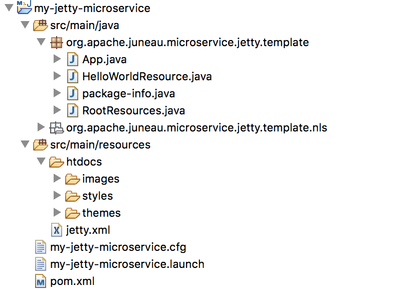
The important elements in this project are:
-
App.java - The entry point.
This class creates and starts our microservice:
public class App {public static void main(String[] args)throws Exception { JettyMicroservice .create () .args(args) .servlet(RootResources.class ) .build() .start() .startConsole() .join(); } } -
RootResources.java - The top-level REST resource.
This class routes HTTP requests to child resources:
@Rest ( path="/" , title="My Microservice" , description="Top-level resources page" , htmldoc=@HtmlDoc ( widgets={ ContentTypeMenuItem.class , StyleMenuItem.class }, navlinks={"options: servlet:/?method=OPTIONS" } ), children={ HelloWorldResource.class , ConfigResource.class , LogsResource.class } )public class RootResourcesextends BasicRestServletJenaGroup {// No code } -
my-jetty-microservice.cfg - The external configuration file.
Contains various useful settings.
Can be used for your own resource configurations.
#======================================================================================================================= # Basic configuration file for REST microservices # Subprojects can use this as a starting point. #======================================================================================================================= #======================================================================================================================= # Jetty settings #======================================================================================================================= [Jetty] # Path of the jetty.xml file used to configure the Jetty server. config =jetty.xml # Resolve Juneau variables in the jetty.xml file. resolveVars =true # Port to use for the jetty server. # You can specify multiple ports. The first available will be used. '0' indicates to try a random port. # The resulting available port gets set as the system property "availablePort" which can be referenced in the # jetty.xml file as "$S{availablePort}" (assuming resolveVars is enabled). port =10000,0,0,0 # Optionally specify your servlets here: #servlets = org.apache.juneau.microservice.sample.RootResources #======================================================================================================================= # REST settings #======================================================================================================================= [REST] # Comma-delimited list of key-value pairs that represent locations of static files that can be served up by your @Rest-annotated # classes. These are static files that are served up by the servlet under the specified sub-paths. # For example, given the following setting... # staticFiles = htdocs:my-docs,styles/my-styles # ...the URI "/servletPath/htdocs/javadoc.css" resolves to the path "/my-docs/javadoc.css". # This path can be relative to the working directory, classpath root, or package of your resource class. # Used by the BasicRestConfig interface that defines the following value: # staticFiles="$C{REST/staticFiles}" staticFiles = htdocs:htdocs# Stylesheet to use for HTML views. # Used by the BasicRestConfig interface that defines the following value: # stylesheet="$C{REST/theme,servlet:/htdocs/themes/devops.css}" theme =servlet:/htdocs/themes/devops.css # Various look-and-feel settings used in the BasicRestConfig interface. headerIcon =servlet:/htdocs/images/juneau.png headerLink =http://juneau.apache.org footerIcon =servlet:/htdocs/images/asf.png footerLink =http://www.apache.org favicon =$C{REST/headerIcon} header =<a href='$U{$C{REST/headerLink}}'> <img src='$U{$C{REST/headerIcon}}' style='position:absolute;top:5;right:5;background-color:transparent;height:30px'/> </a> footer =<a href='$U{$C{REST/footerLink}}'> <img src='$U{$C{REST/footerIcon}}' style='float:right;padding-right:20px;height:32px'/> </a> #======================================================================================================================= # Console settings #======================================================================================================================= [Console] enabled =true # List of available console commands. # These are classes that implements ConsoleCommand that allow you to submit commands to the microservice via # the console. # When listed here, the implementations must provide a no-arg constructor. # They can also be provided dynamically by overriding the Microservice.createConsoleCommands() method. commands =org.apache.juneau.microservice.console.ExitCommand, org.apache.juneau.microservice.console.RestartCommand, org.apache.juneau.microservice.console.HelpCommand, org.apache.juneau.microservice.console.ConfigCommand #======================================================================================================================= # Logger settings #----------------------------------------------------------------------------------------------------------------------- # See FileHandler Java class for details. #======================================================================================================================= [Logging] ...#======================================================================================================================= # System properties #----------------------------------------------------------------------------------------------------------------------- # These are arbitrary system properties that are set during startup. #======================================================================================================================= [SystemProperties] # Configure Jetty for StdErrLog Logging # org.eclipse.jetty.util.log.class = org.eclipse.jetty.util.log.StrErrLog # Configure Jetty to log using java-util logging org.eclipse.jetty.util.log.class =org.apache.juneau.microservice.jetty.JettyLogger # Jetty logging level # Possible values: ALL, DEBUG, INFO, WARN, OFF org.eclipse.jetty.LEVEL =WARN derby.stream.error.file =$C{Logging/logDir}/derby-errors.log -
jetty.xml - The Jetty configuration file.
A bare-bones config file that can be extended to use any Jetty features.
<Configure id ="ExampleServer" class ="org.eclipse.jetty.server.Server" ><Set name ="connectors" > <Array type ="org.eclipse.jetty.server.Connector" > <Item> <New class ="org.eclipse.jetty.server.ServerConnector" > <Arg> <Ref refid ="ExampleServer" /> </Arg> <Set name ="port" > $S{availablePort,8080}</Set> </New> </Item> </Array> </Set> <New id ="context" class ="org.eclipse.jetty.servlet.ServletContextHandler" > <Set name ="contextPath" >/</Set> <!-- Optionally specify your servlets here --> <!--Call name="addServlet"> <Arg>org.apache.juneau.microservice.sample.RootResources</Arg> <Arg>/*</Arg> </Call--> <Set name ="sessionHandler" > <New class ="org.eclipse.jetty.server.session.SessionHandler" /> </Set> </New> <Set name ="handler" > <New class ="org.eclipse.jetty.server.handler.HandlerCollection" > <Set name ="handlers" > <Array type ="org.eclipse.jetty.server.Handler" > <Item> <Ref refid ="context" /> </Item> <Item> <New class ="org.eclipse.jetty.server.handler.DefaultHandler" /> </Item> </Array> </Set> </New> </Set> <Set name ="requestLog" > <New id ="RequestLogImpl" class ="org.eclipse.jetty.server.NCSARequestLog" > <Set name ="filename" ><Property name ="jetty.logs" default ="$C{Logging/logDir,logs}" /> /jetty-requests.log</Set> <Set name ="filenameDateFormat "> yyyy_MM_dd</Set> <Set name ="LogTimeZone" > GMT</Set> <Set name ="retainDays" > 90</Set> <Set name ="append" > false</Set> <Set name ="LogLatency" > true</Set> </New> </Set> <Get name ="ThreadPool" > <Set name ="minThreads" type ="int" > 10</Set> <Set name ="maxThreads" type ="int" > 100</Set> <Set name ="idleTimeout" type ="int" > 60000</Set> <Set name ="detailedDump" > true</Set> </Get> </Configure>
At this point, you're ready to start the microservice from your workspace.
13.2 - Running in Eclipse8.0.0-updated, 8.1.2-deprecated
The
Go to Run -> Run Configurations -> Java Application -> my-jetty-microservice and click Run. In your console view, you should see the following output:
Running class 'JettyMicroservice' using config file 'my-jetty-microservice.cfg'. Server started on port 10000 List of available commands: exit -- Shut down service restart -- Restarts service help -- Commands help >
Now open your browser and point to
http://localhost:10000

You can enter the command
13.3 - Building and Running from Command-Line8.0.0-updated, 8.1.2-deprecated
The
The easiest way to build your microservice is to run the following from the project root.
mvn clean install
Your
my-jetty-microservice-1.0.jar my-jetty-microservice.cfg
To start from a command line, run the following command from inside your
java -jar my-jetty-microservice-1.0.jar
You should see the following console output:
Running class 'JettyMicroservice' using config file 'my-jetty-microservice.cfg'. Server started on port 10000 List of available commands: exit -- Shut down service restart -- Restarts service help -- Commands help >
If you get this error message: java.net.BindException: Address already in use,
then this microservice is already running elsewhere and so it cannot bind to port 10000.
14 - my-springboot-microservice8.0.0-new
Starter Project Zip
my-springboot-microservice-8.2.0.zip
The
It includes a combination of the Juneau Core, Server, and Client APIs and all libraries needed to execute in a Java 1.8+ environment.
One significant difference is that we are not using the Juneau Microservice API for our
application but instead using the existing Spring Boot API.
14.1 - Installing in Eclipse8.0.0-new
Follow these instructions to create a new template project in Eclipse.
-
Download the
my-springboot-microservice-8.2.0.zip file from the downloads page (located in the binaries) and import it into your workspace as an existing project:

-
Select the archive file and import the project:
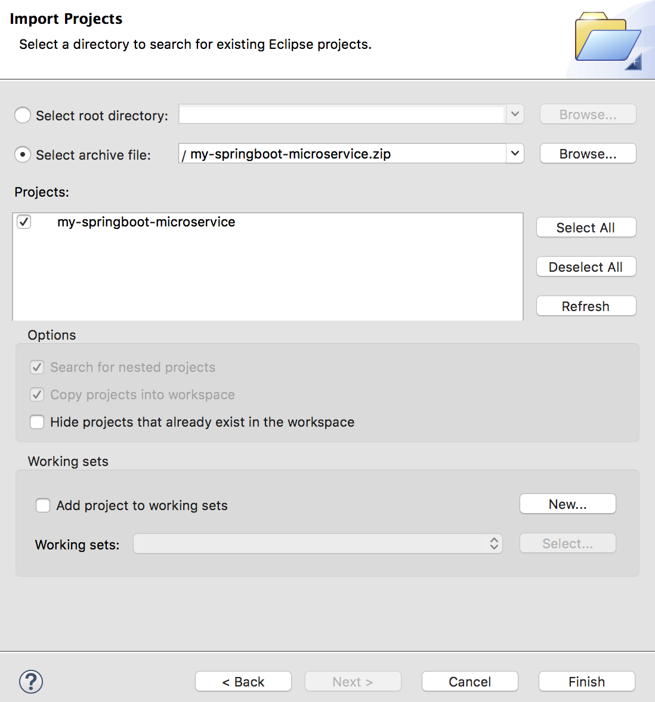 -
In your workspace, you should now see the following project:
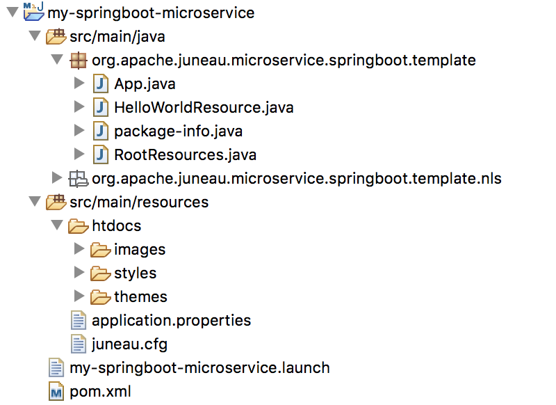
The important elements in this project are:
-
App.java - The entry point.
This class creates and starts our microservice.
Note that we're using the existing Spring Boot application logic for the microservice and we're retrieving our root resource as a spring bean.
Only the top-level resource needs to be annotated with@JuneauRestRoot
@SpringBootApplication @Controller public class App {public static void main(String[] args) {new SpringApplicationBuilder(App.class ) .initializers(new JuneauRestInitializer(App.class )) .run(args); }@Bean @JuneauRestRoot public RootResources getRootResources() {return new RootResources(); } } -
RootResources.java - The top-level REST resource.
This class routes HTTP requests to child resources.
This is identical to the Jetty example.
@Rest ( path="/" , title="My Microservice" , description="Top-level resources page" , htmldoc=@HtmlDoc ( widgets={ ContentTypeMenuItem.class , StyleMenuItem.class }, navlinks={"options: servlet:/?method=OPTIONS" } ), children={ HelloWorldResource.class , ConfigResource.class , LogsResource.class } )public class RootResourcesextends BasicRestServletJenaGroup {// No code } -
juneau.cfg - The configuration file.
Contains various useful settings.
Can be used for your own resource configurations.
Note that the Jetty configuration is not present.
Also it's located in the classpath so that our microservice can be built as a single executable jar.
#======================================================================================================================= # Basic configuration file for REST microservices # Subprojects can use this as a starting point. #======================================================================================================================= #======================================================================================================================= # REST settings #======================================================================================================================= [REST] # Comma-delimited list of key-value pairs that represent locations of static files that can be served up by your @Rest-annotated # classes. These are static files that are served up by the servlet under the specified sub-paths. # For example, given the following setting... # staticFiles = htdocs:my-docs,styles/my-styles # ...the URI "/servletPath/htdocs/javadoc.css" resolves to the path "/my-docs/javadoc.css". # This path can be relative to the working directory, classpath root, or package of your resource class. # Used by the BasicRestConfig interface that defines the following value: # staticFiles="$C{REST/staticFiles}" staticFiles = htdocs:htdocs# Stylesheet to use for HTML views. # Used by the BasicRestConfig interface that defines the following value: # stylesheet="$C{REST/theme,servlet:/htdocs/themes/devops.css}" theme =servlet:/htdocs/themes/devops.css # Various look-and-feel settings used in the BasicRestConfig interface. headerIcon =servlet:/htdocs/images/juneau.png headerLink =http://juneau.apache.org footerIcon =servlet:/htdocs/images/asf.png footerLink =http://www.apache.org favicon =$C{REST/headerIcon} header =<a href='$U{$C{REST/headerLink}}'> <img src='$U{$C{REST/headerIcon}}' style='position:absolute;top:5;right:5;background-color:transparent;height:30px'/> </a> footer =<a href='$U{$C{REST/footerLink}}'> <img src='$U{$C{REST/footerIcon}}' style='float:right;padding-right:20px;height:32px'/> </a>
At this point, you're ready to start the microservice from your workspace.
14.2 - Running in Eclipse8.0.0-new
The
Go to Run -> Run Configurations -> Java Application -> my-springboot-microservice and click Run. In your console view, you should see the following output:
. ____ _ __ _ _ /\\ / ___'_ __ _ _(_)_ __ __ _ \ \ \ \ ( ( )\___ | '_ | '_| | '_ \/ _` | \ \ \ \ \\/ ___)| |_)| | | | | || (_| | ) ) ) ) ' |____| .__|_| |_|_| |_\__, | / / / / =========|_|==============|___/=/_/_/_/ :: Spring Boot :: (v2.0.1.RELEASE) ... INFO: Tomcat started on port(s): 8080 (http) with context path '' Dec 21, 2012 12:30:00 AM org.springframework.boot.StartupInfoLogger logStarted INFO: Started App in 1.999 seconds (JVM running for 2.999)
Now open your browser and point to
http://localhost:5000

14.3 - Building and Running from Command-Line8.0.0-new
The
The easiest way to build your microservice is to run the following from the project root.
mvn clean install
Your
my-springboot-microservice-1.0.jar
To start from a command line, run the following command from inside your
java -jar my-springboot-microservice-1.0.jar
You should see the following console output:
. ____ _ __ _ _ /\\ / ___'_ __ _ _(_)_ __ __ _ \ \ \ \ ( ( )\___ | '_ | '_| | '_ \/ _` | \ \ \ \ \\/ ___)| |_)| | | | | || (_| | ) ) ) ) ' |____| .__|_| |_|_| |_\__, | / / / / =========|_|==============|___/=/_/_/_/ :: Spring Boot :: (v2.0.1.RELEASE) ... INFO: Tomcat started on port(s): 8080 (http) with context path '' Dec 21, 2012 12:30:00 AM org.springframework.boot.StartupInfoLogger logStarted INFO: Started App in 1.999 seconds (JVM running for 2.999)
15 - juneau-examples-core8.0.0-updated
Archive File
juneau-examples-core-8.2.0.zip
The
15.1 - Installing in Eclipse8.0.0-new
Follow these instructions to import the Juneau project into Eclipse.
-
Download the
juneau-examples-core-8.2.0.zip file from the downloads page (located in the binaries) and import it into your workspace as an existing project:
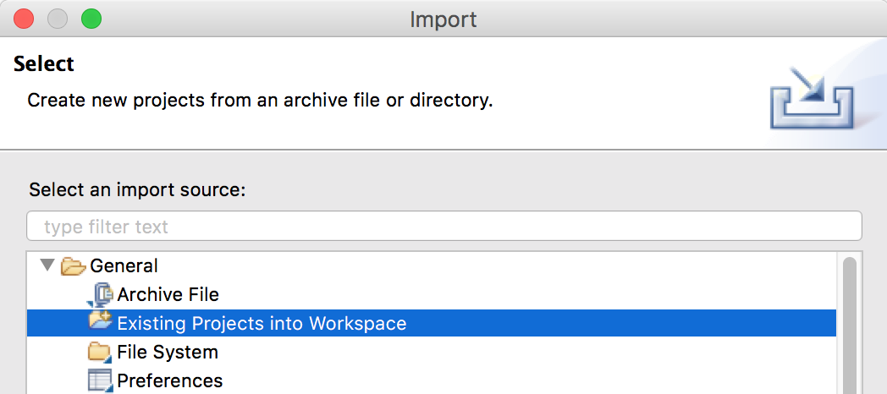 -
Select the archive file and import the project:
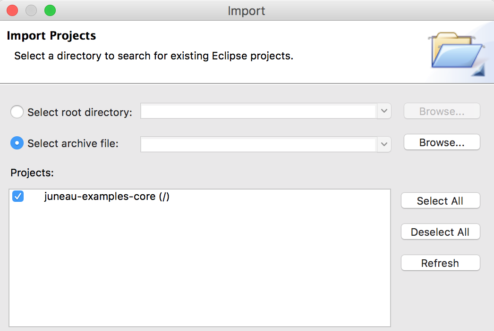 -
In your workspace, you should now see the following project:
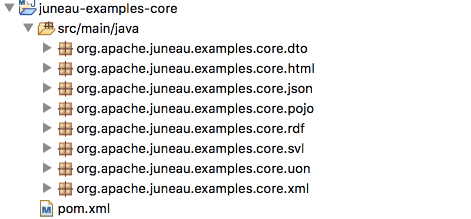
15.2 - Examples8.0.0-new
The following shows the core examples provided:
org.apache.juneau.examples.core.jsonJsonSimpleExample- JsonSerializer and JsonParser usage on serialize and deserialize simple Pojo bean.JsonComplexExample- JsonSerializer and JsonParser usage on serialize and deserialize complex Pojo bean.JsonConfigurationExample- Json Serializers configured using properties defined in JsonSerializer class.
org.apache.juneau.examples.core.xmlXmlSimpleExample- XmlSerializer and XmlParser usage on serialize and deserialize simple Pojo bean.XmlComplexExample- XmlSerializer and XmlParser usage on serialize and deserialize complex Pojo bean.XmlConfigurationExample- XmlSerializers configured using properties defined in XmlSerializer class.
org.apache.juneau.examples.core.dtoDtoExample- Usage of core dto module.
org.apache.juneau.examples.core.rdfRdfExample- RdfXmlSerializer usage on serialize simple Pojo bean.RdfComplexExample- RdfXmlSerializer usage on serialize complex Pojo bean.
org.apache.juneau.examples.core.htmlHtmlSimpleExample- HtmlSerializer usage on serialize and deserialize simple Pojo bean.HtmlComplexExample- HtmlSerializer usage on serialize and deserialize complex Pojo bean.
org.apache.juneau.examples.core.uonUONExample- UonSerializer usage on serialize and deserialize simple Pojo bean.UONComplexExample- UonSerializer usage on serialize and deserialize complex Pojo bean.
org.apache.juneau.examples.core.svlSvlExample- Usage of Svl module in juneau.
16 - juneau-examples-rest8.0.0-updated
Maven Dependency
Java Library
juneau-examples-rest-8.2.0.jar
OSGi Module
org.apache.juneau.examples.rest_8.2.0.jar
The
Note: These examples can be deployed as buildable Eclipse projects using Jetty or Spring Boot using instructions in the following sections:
16.1 - RootResources8.0.0-updated, 8.1.0-updated
The
The class hierarchy for this class is:
-
RestServlet- Contains all the REST servlet logic.-
BasicRestServlet- Defines default serializers and parsers, and OPTIONs page logic.-
BasicRestServletGroup- Specialized subclass for grouping other resources.-
BasicRestServletJenaGroup- Group resource with added RDF support.-
RootResources
-
-
-
-
Pointing a browser to the resource shows the following:
http://localhost:10000

The
The
RootResources.java
The
Child resources must be annotated with the @Rest(path) annotation to
identify the subpath of the child.
Children CAN extend from BasicRestServlet but it is not a requirement.
Note that these router pages can be arbitrarily nested deep. You can define many levels of router pages for arbitrarily hierarchical REST interfaces.
Let's step back and describe what's going on here:
During servlet initialization of the
When a request for the child URL (
16.2 - HelloWorldResource8.0.0-updated
The
HelloWorldResource.java
Notice that in this case we're not extending from RestServlet.
We are however implementing BasicRestConfig which is a no-op
interface that defines a default BasicRestServlet class.
The only difference between implementing
- A default OPTIONS method.
- It can be deployed like any servlet.
All other examples in this project extend from
Pointing a browser to the resource shows the following:
http://localhost:10000/helloWorld
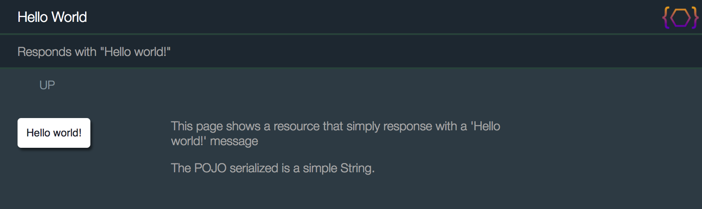
Using the special
http://localhost:10000/helloWorld?Accept=text/json&plainText=true
16.3 - DtoExamples8.0.0-new, 8.1.0-updated
The
The
- Using the ATOM Feed DTO API.
Pointing a browser to the resource shows the following:
http://localhost:10000/atom

True ATOM feeds require using an
http://localhost:10000/atom?Accept=text/xml&plainText=true
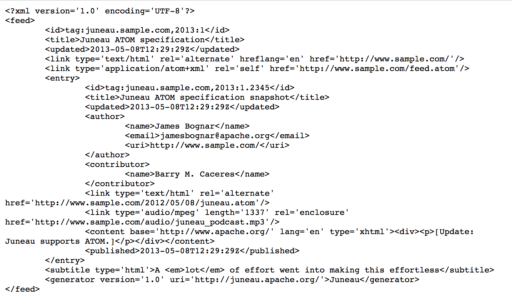Other languages, such as JSON are also supported:
http://localhost:10000/atom?Accept=text/json&plainText=true
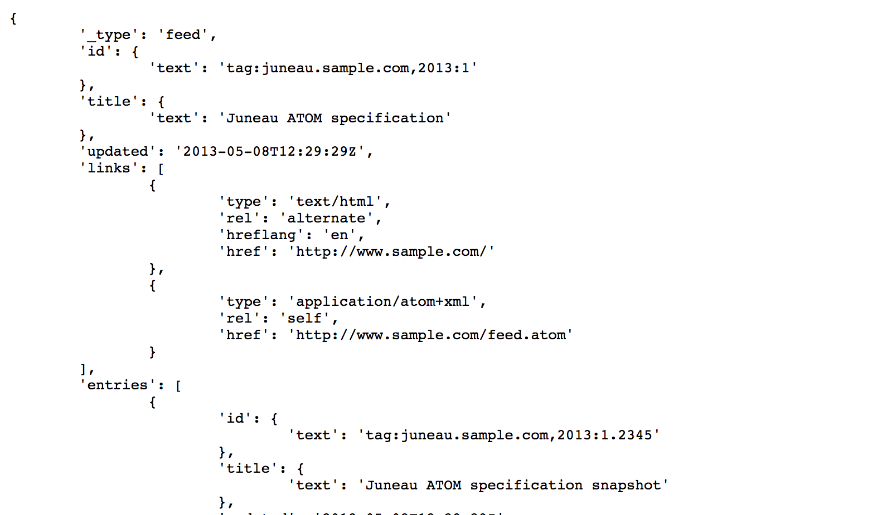AtomFeedResource.java
The
-
Using the
JSON Schema DTOAPI.
The resource consists of a pre-initialized JsonSchema object.
Pointing a browser to the resource shows the following:
http://localhost:10000/jsonSchema
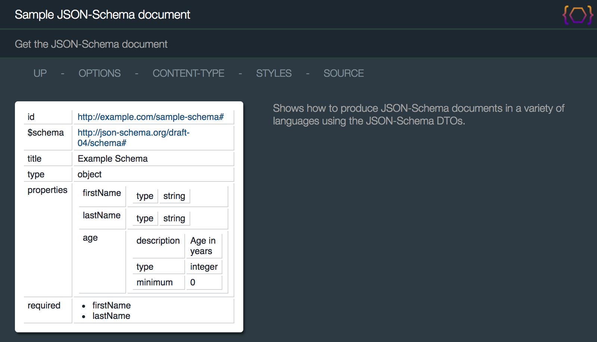
For true JSON-Schema, you need to specify the header
http://localhost:10000/jsonSchema?Accept=text/json&plainText=true
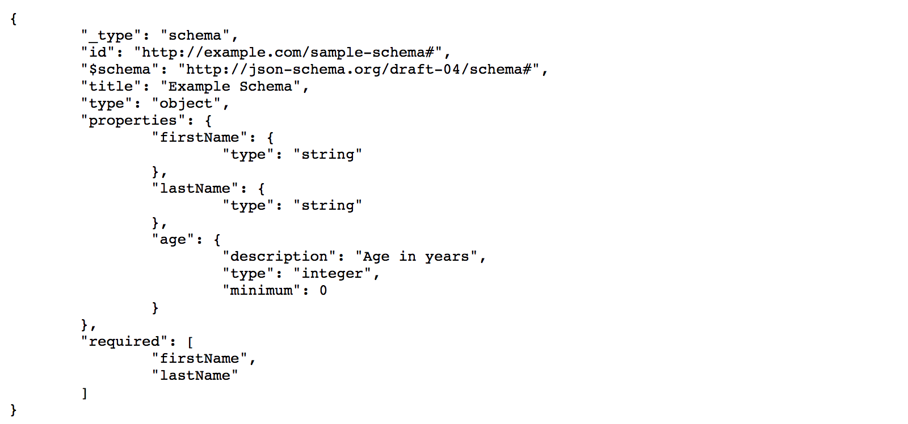JsonSchemaResource.java
16.4 - ConfigResource
The ConfigResource class is a predefined reusable resource.
It provides a REST interface for reading and altering the microservice config file.
Pointing a browser to the resource shows the following:
http://localhost:10000/config
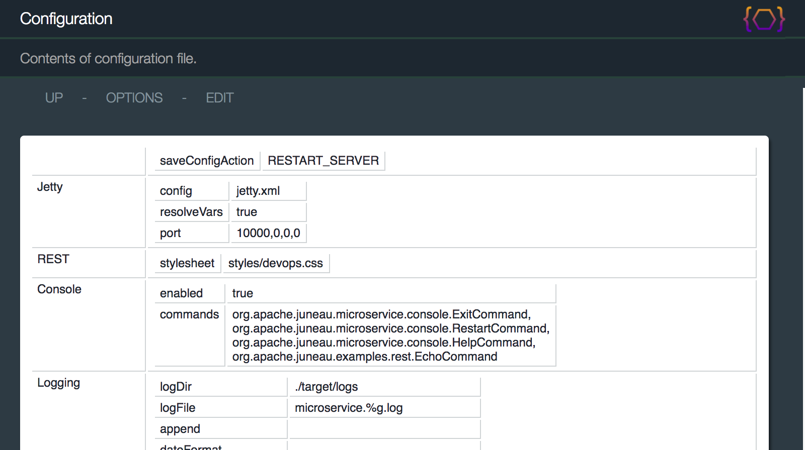An edit page is provided for altering the raw config file:
http://localhost:10000/config/edit
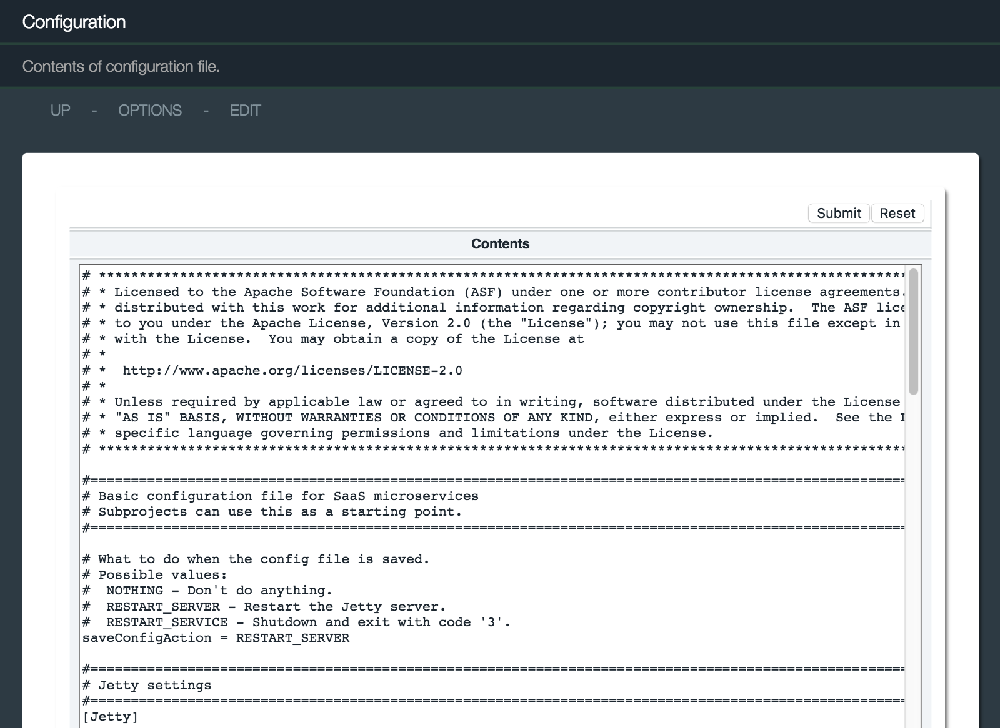
The Config class is a serializable POJO, which makes the resource
relatively straightforward to implement.
ConfigResource.java
16.5 - LogsResource
The LogsResource class is a reusable predefined resource.
It provides a REST interface for the log files generated by the microservice.
Pointing a browser to the resource shows the following:
http://localhost:10000/logs
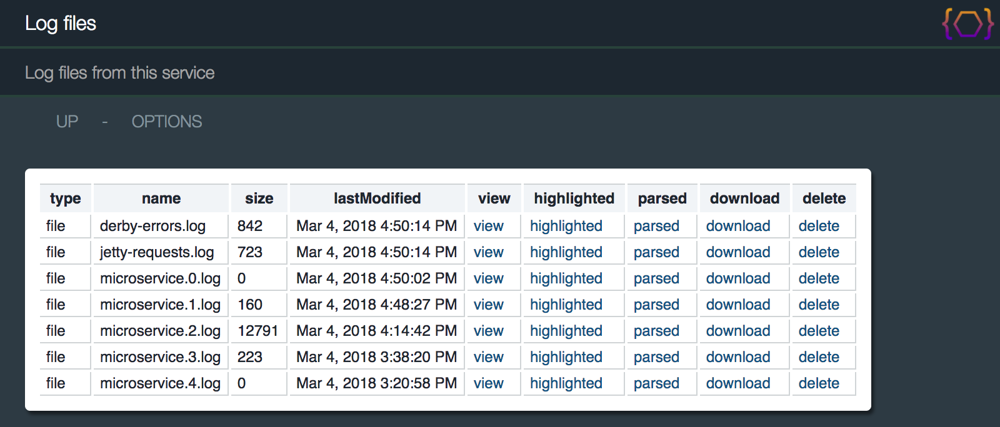17 - juneau-examples-rest-jetty8.0.0-new, 8.1.2-deprecated
Starter Project Zip
juneau-examples-rest-jetty-8.2.0.zip
The
17.1 - Installing in Eclipse8.0.0-new,8.1.2-deprecated
Follow these instructions to import the REST examples project using Jetty into Eclipse.
-
Download the
juneau-examples-rest-jetty-8.2.0.zip file from the downloads page (located in the binaries) and import it into your workspace as an existing project:

-
Select the archive file and import the project:
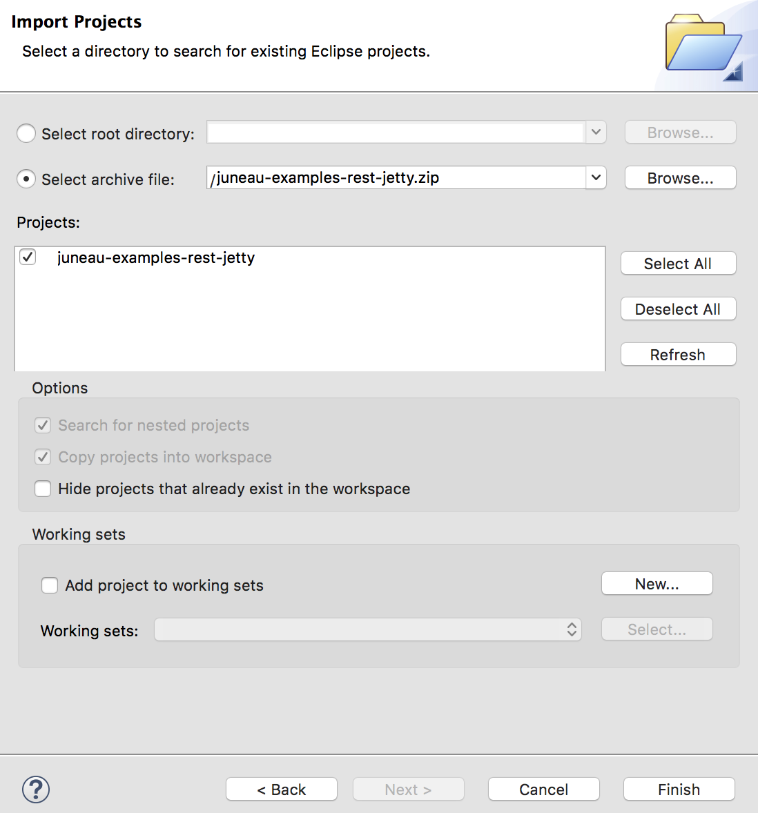 -
In your workspace, you should now see the following project:
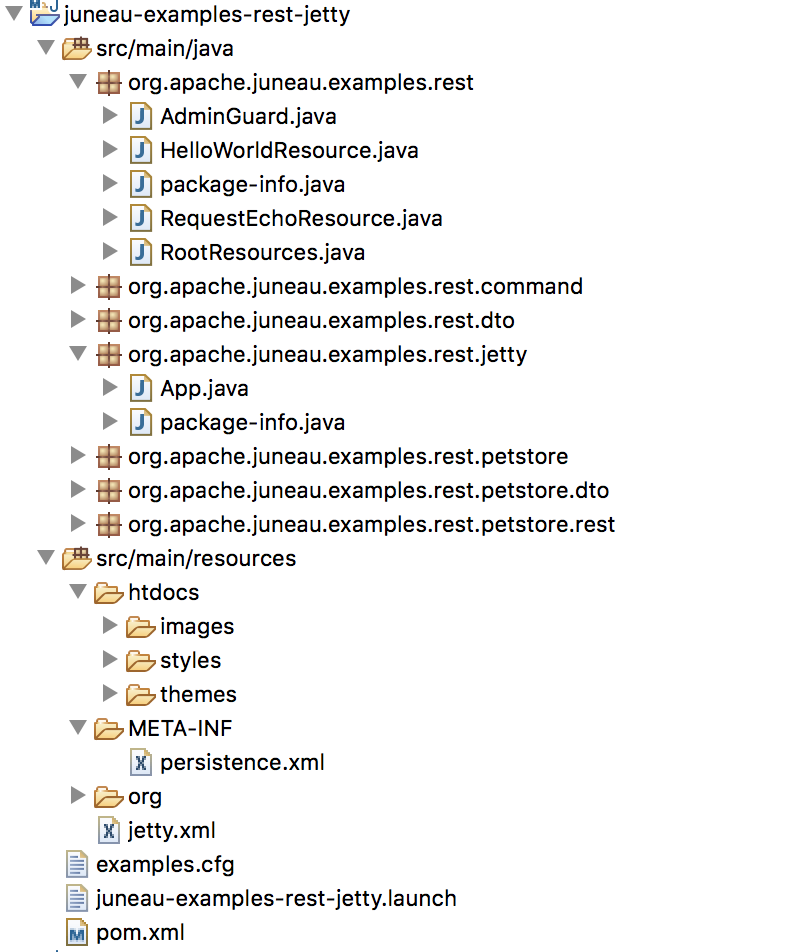
The important elements in this project are:
-
App.java - The entry point.
This class creates and starts our microservice:
public class App {public static void main(String[] args)throws Exception { JettyMicroservice .create () .args(args) .servlet(RootResources.class ) .build() .start() .startConsole() .join(); } } -
RootResources.java - The top-level REST resource.
This class routes HTTP requests to child resources:
@Rest ( path="/*" , title="Root resources" , description="Example of a router resource page." , htmldoc=@HtmlDoc ( widgets={ ContentTypeMenuItem.class , ThemeMenuItem.class }, navlinks={"options: ?method=OPTIONS" ,"$W{ContentTypeMenuItem}" ,"$W{ThemeMenuItem}" ,"source: $C{Source/gitHub}/org/apache/juneau/examples/rest/$R{servletClassSimple}.java" }, aside={"<div style='max-width:400px' class='text'>" ," <p>This is an example of a 'router' page that serves as a jumping-off point to child resources.</p>" ," <p>Resources can be nested arbitrarily deep through router pages.</p>" ," <p>Note the <span class='link'>options</span> link provided that lets you see the generated swagger doc for this page.</p>" ," <p>Also note the <span class='link'>sources</span> link on these pages to view the source code for the page.</p>" ," <p>All content on pages in the UI are serialized POJOs. In this case, it's a serialized array of beans with 2 properties, 'name' and 'description'.</p>" ," <p>Other features (such as this aside) are added through annotations.</p>" ,"</div>" } ), children={ HelloWorldResource.class , PetStoreResource.class , DtoExamples.class , ConfigResource.class , LogsResource.class , ShutdownResource.class } )@SerializerConfig (// For testing purposes, we want to use single quotes in all the serializers so it's easier to do simple // String comparisons. quoteChar="'" )public class RootResourcesextends BasicRestServletJenaGroup {// No code } -
juneau-examples-rest-jetty.cfg - The external configuration file.
Contains various useful settings.
Can be used for your own resource configurations.
#======================================================================================================================= # Basic configuration file for REST microservices # Subprojects can use this as a starting point. #======================================================================================================================= #======================================================================================================================= # Jetty settings #======================================================================================================================= [Jetty] # Path of the jetty.xml file used to configure the Jetty server. config =jetty.xml # Resolve Juneau variables in the jetty.xml file. resolveVars =true # Port to use for the jetty server. # You can specify multiple ports. The first available will be used. '0' indicates to try a random port. # The resulting available port gets set as the system property "availablePort" which can be referenced in the # jetty.xml file as "$S{availablePort}" (assuming resolveVars is enabled). port =10000,0,0,0 # Optionally specify your servlets here: #servlets = org.apache.juneau.microservice.sample.RootResources #======================================================================================================================= # REST settings #======================================================================================================================= [REST] # Comma-delimited list of key-value pairs that represent locations of static files that can be served up by your @Rest-annotated # classes. These are static files that are served up by the servlet under the specified sub-paths. # For example, given the following setting... # staticFiles = htdocs:my-docs,styles/my-styles # ...the URI "/servletPath/htdocs/javadoc.css" resolves to the path "/my-docs/javadoc.css". # This path can be relative to the working directory, classpath root, or package of your resource class. # Used by the BasicRestConfig interface that defines the following value: # staticFiles="$C{REST/staticFiles}" staticFiles = htdocs:htdocs# Stylesheet to use for HTML views. # Used by the BasicRestConfig interface that defines the following value: # stylesheet="$C{REST/theme,servlet:/htdocs/themes/devops.css}" theme =servlet:/htdocs/themes/devops.css # Various look-and-feel settings used in the BasicRestConfig interface. headerIcon =servlet:/htdocs/images/juneau.png headerLink =http://juneau.apache.org footerIcon =servlet:/htdocs/images/asf.png footerLink =http://www.apache.org favicon =$C{REST/headerIcon} header =<a href='$U{$C{REST/headerLink}}'> <img src='$U{$C{REST/headerIcon}}' style='position:absolute;top:5;right:5;background-color:transparent;height:30px'/> </a> footer =<a href='$U{$C{REST/footerLink}}'> <img src='$U{$C{REST/footerIcon}}' style='float:right;padding-right:20px;height:32px'/> </a> #======================================================================================================================= # Console settings #======================================================================================================================= [Console] enabled =true # List of available console commands. # These are classes that implements ConsoleCommand that allow you to submit commands to the microservice via # the console. # When listed here, the implementations must provide a no-arg constructor. # They can also be provided dynamically by overriding the Microservice.createConsoleCommands() method. commands =org.apache.juneau.microservice.console.ExitCommand, org.apache.juneau.microservice.console.RestartCommand, org.apache.juneau.microservice.console.HelpCommand, org.apache.juneau.microservice.console.ConfigCommand #======================================================================================================================= # Logger settings #----------------------------------------------------------------------------------------------------------------------- # See FileHandler Java class for details. #======================================================================================================================= [Logging] ...#======================================================================================================================= # System properties #----------------------------------------------------------------------------------------------------------------------- # These are arbitrary system properties that are set during startup. #======================================================================================================================= [SystemProperties] # Configure Jetty for StdErrLog Logging # org.eclipse.jetty.util.log.class = org.eclipse.jetty.util.log.StrErrLog # Configure Jetty to log using java-util logging org.eclipse.jetty.util.log.class =org.apache.juneau.microservice.jetty.JettyLogger # Jetty logging level # Possible values: ALL, DEBUG, INFO, WARN, OFF org.eclipse.jetty.LEVEL =WARN derby.stream.error.file =$C{Logging/logDir}/derby-errors.log -
jetty.xml - The Jetty configuration file.
A bare-bones config file that can be extended to use any Jetty features.
<Configure id ="ExampleServer" class ="org.eclipse.jetty.server.Server" ><Set name ="connectors" > <Array type ="org.eclipse.jetty.server.Connector" > <Item> <New class ="org.eclipse.jetty.server.ServerConnector" > <Arg> <Ref refid ="ExampleServer" /> </Arg> <Set name ="port" > $S{availablePort,8080}</Set> </New> </Item> </Array> </Set> <New id ="context" class ="org.eclipse.jetty.servlet.ServletContextHandler" > <Set name ="contextPath" >/</Set> <!-- Optionally specify your servlets here --> <!--Call name="addServlet"> <Arg>org.apache.juneau.microservice.sample.RootResources</Arg> <Arg>/*</Arg> </Call--> <Set name ="sessionHandler" > <New class ="org.eclipse.jetty.server.session.SessionHandler" /> </Set> </New> <Set name ="handler" > <New class ="org.eclipse.jetty.server.handler.HandlerCollection" > <Set name ="handlers" > <Array type ="org.eclipse.jetty.server.Handler" > <Item> <Ref refid ="context" /> </Item> <Item> <New class ="org.eclipse.jetty.server.handler.DefaultHandler" /> </Item> </Array> </Set> </New> </Set> <Set name ="requestLog" > <New id ="RequestLogImpl" class ="org.eclipse.jetty.server.NCSARequestLog" > <Set name ="filename" ><Property name ="jetty.logs" default ="$C{Logging/logDir,logs}" /> /jetty-requests.log</Set> <Set name ="filenameDateFormat "> yyyy_MM_dd</Set> <Set name ="LogTimeZone" > GMT</Set> <Set name ="retainDays" > 90</Set> <Set name ="append" > false</Set> <Set name ="LogLatency" > true</Set> </New> </Set> <Get name ="ThreadPool" > <Set name ="minThreads" type ="int" > 10</Set> <Set name ="maxThreads" type ="int" > 100</Set> <Set name ="idleTimeout" type ="int" > 60000</Set> <Set name ="detailedDump" > true</Set> </Get> </Configure>
At this point, you're ready to start the microservice from your workspace.
17.2 - Running in Eclipse8.0.0-new,8.1.2-deprecated
The
Go to Run -> Run Configurations -> Java Application -> juneau-examples-rest-jetty and click Run. In your console view, you should see the following output:
Running class 'JettyMicroservice' using config file 'juneau-examples-rest-jetty.cfg'. Server started on port 10000 List of available commands: exit -- Shut down service restart -- Restarts service help -- Commands help >
Now open your browser and point to
http://localhost:10000
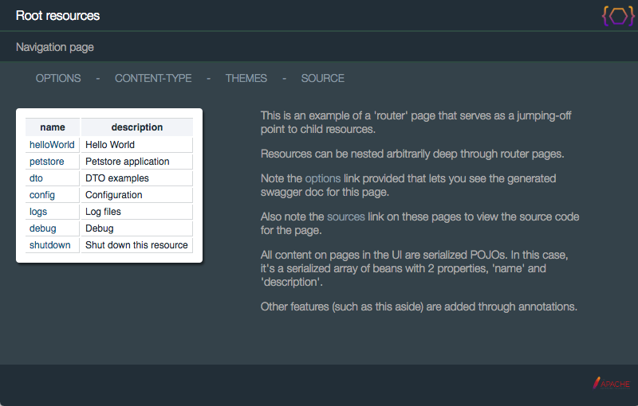
You can enter the command
17.3 - Building and Running from Command-Line8.0.0-new,8.1.2-deprecated
The
The easiest way to build the microservice is to run the following from the project root.
mvn clean install
Your
juneau-examples-rest-jetty-1.0.jar juneau-examples-rest-jetty.cfg
To start from a command line, run the following command from inside your
java -jar juneau-examples-rest-jetty-1.0.jar
You should see the following console output:
Running class 'JettyMicroservice' using config file 'juneau-examples-rest-jetty.cfg'. Server started on port 10000 List of available commands: exit -- Shut down service restart -- Restarts service help -- Commands help >
If you get this error message: java.net.BindException: Address already in use,
then this microservice is already running elsewhere and so it cannot bind to port 10000.
18 - juneau-examples-rest-springboot8.0.0-new
Starter Project Zip
juneau-examples-rest-springboot-8.2.0.zip
The
- A starter class for invoking the examples using Spring Boot.
- A resource resolver for resolving REST resources as injectable beans.
-
A POM that extends from
spring-boot-starter-parent that allows you to build a fully-shaded executable jar. - Configuration files for deploying the microservice to Heroku.
18.1 - Installing in Eclipse8.0.0-new
Follow these instructions to import the REST examples project using Spring Boot into Eclipse.
-
Download the
juneau-examples-rest-springboot-8.2.0.zip file from the downloads page (located in the binaries) and import it into your workspace as an existing project:

-
Select the archive file and import the project:
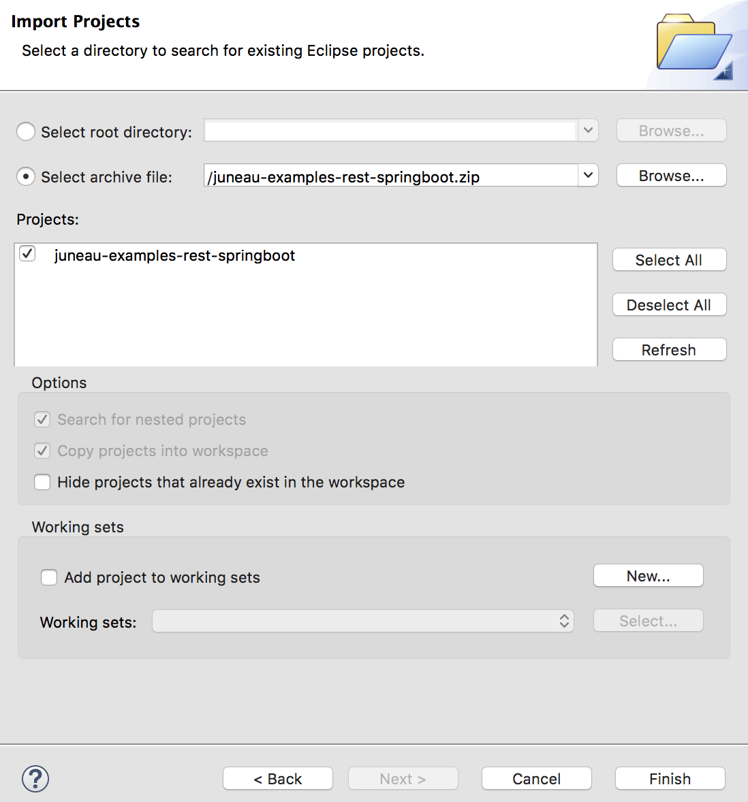 -
In your workspace, you should now see the following project:

The important elements in this project are:
-
App.java - The entry point.
This class creates and starts our microservice.
Note that we're using the existing Spring Boot application logic for the microservice and we're retrieving our root resource as a spring bean.
Only the top-level resource needs to be annotated with@JuneauRestRoot
@SpringBootApplication @Controller public class App {public static void main(String[] args) {new SpringApplicationBuilder(App.class ) .initializers(new JuneauRestInitializer(App.class )) .run(args); }@Bean @JuneauRestRoot public RootResources getRootResources() {return new RootResources(); } } -
RootResources.java - The top-level REST resource.
This class routes HTTP requests to child resources:
@Rest ( path="/*" , title="Root resources" , description="Example of a router resource page." , htmldoc=@HtmlDoc ( widgets={ ContentTypeMenuItem.class , ThemeMenuItem.class }, navlinks={"options: ?method=OPTIONS" ,"$W{ContentTypeMenuItem}" ,"$W{ThemeMenuItem}" ,"source: $C{Source/gitHub}/org/apache/juneau/examples/rest/$R{servletClassSimple}.java" }, aside={"<div style='max-width:400px' class='text'>" ," <p>This is an example of a 'router' page that serves as a jumping-off point to child resources.</p>" ," <p>Resources can be nested arbitrarily deep through router pages.</p>" ," <p>Note the <span class='link'>options</span> link provided that lets you see the generated swagger doc for this page.</p>" ," <p>Also note the <span class='link'>sources</span> link on these pages to view the source code for the page.</p>" ," <p>All content on pages in the UI are serialized POJOs. In this case, it's a serialized array of beans with 2 properties, 'name' and 'description'.</p>" ," <p>Other features (such as this aside) are added through annotations.</p>" ,"</div>" } ), children={ HelloWorldResource.class , PetStoreResource.class , DtoExamples.class , ConfigResource.class , LogsResource.class , ShutdownResource.class } )@SerializerConfig (// For testing purposes, we want to use single quotes in all the serializers so it's easier to do simple // String comparisons. quoteChar="'" )public class RootResourcesextends BasicRestServletJenaGroup {// No code } -
juneau.cfg - The configuration file.
Contains various useful settings.
Can be used for your own resource configurations.
Note that the Jetty configuration is not present.
Also it's located in the classpath so that our microservice can be built as a single executable jar.
#======================================================================================================================= # Basic configuration file for REST microservices # Subprojects can use this as a starting point. #======================================================================================================================= #======================================================================================================================= # REST settings #======================================================================================================================= [REST] # URL mappings to static files in the working directory or classpath. staticFiles = htdocs:files/htdocs# Stylesheet to use for HTML views. theme =servlet:/htdocs/themes/devops.css headerIcon =servlet:/htdocs/images/juneau.png headerLink =http://juneau.apache.org footerIcon =servlet:/htdocs/images/asf.png footerLink =http://www.apache.org favicon =$C{REST/headerIcon} header =<a href='$U{$C{REST/headerLink}}'> <img src='$U{$C{REST/headerIcon}}' style='position:absolute;top:5;right:5;background-color:transparent;height:30px'/> </a> footer =<a href='$U{$C{REST/footerLink}}'> <img src='$U{$C{REST/footerIcon}}' style='float:right;padding-right:20px;height:32px'/> </a>
At this point, you're ready to start the microservice from your workspace.
18.2 - Running in Eclipse8.0.0-new
The
Go to Run -> Run Configurations -> Java Application -> juneau-examples-rest-springboot and click Run. In your console view, you should see the following output:
. ____ _ __ _ _ /\\ / ___'_ __ _ _(_)_ __ __ _ \ \ \ \ ( ( )\___ | '_ | '_| | '_ \/ _` | \ \ \ \ \\/ ___)| |_)| | | | | || (_| | ) ) ) ) ' |____| .__|_| |_|_| |_\__, | / / / / =========|_|==============|___/=/_/_/_/ :: Spring Boot :: (v2.0.1.RELEASE) ... INFO: Tomcat started on port(s): 8080 (http) with context path '' Dec 21, 2012 12:30:00 AM org.springframework.boot.StartupInfoLogger logStarted INFO: Started App in 1.999 seconds (JVM running for 2.999)
Now open your browser and point to
http://localhost:5000

18.3 - Building and Running from Command-Line8.0.0-new
The
The easiest way to build your microservice is to run the following from the project root.
mvn clean install
Your
juneau-examples-rest-springboot-1.0.jar
To start from a command line, run the following command from inside your
java -jar juneau-examples-rest-springboot-1.0.jar
You should see the following console output:
. ____ _ __ _ _ /\\ / ___'_ __ _ _(_)_ __ __ _ \ \ \ \ ( ( )\___ | '_ | '_| | '_ \/ _` | \ \ \ \ \\/ ___)| |_)| | | | | || (_| | ) ) ) ) ' |____| .__|_| |_|_| |_\__, | / / / / =========|_|==============|___/=/_/_/_/ :: Spring Boot :: (v2.0.1.RELEASE) ... INFO: Tomcat started on port(s): 8080 (http) with context path '' Dec 21, 2012 12:30:00 AM org.springframework.boot.StartupInfoLogger logStarted INFO: Started App in 1.999 seconds (JVM running for 2.999)
18.4 - Deploying to Heroku8.0.0-new
Heroku is a platform-as-a-service that allows applications to be quickly hosted
in the cloud.
The
-
app.json
This class provides basic metadata information to Heroku about our application.
{
"name" :"Start on Heroku: Juneau REST Examples" ,"description" :"Deployable REST examples to Heroku." } -
Procfile
This class tells Heroku how to deploy our application using the Web dyno.
web: java -jar target/juneau-examples-rest-springboot-8.0.0.jar
-
settings.xml
This is an optional Maven settings file that points to both the main Maven repo in addition to the Apache snapshots repo if you happen to be using a snapshot version of Juneau.
You'll need to sign up for an account on Heroku. Afterwards, you can go to the apps page to create a new application:
https://dashboard.heroku.com/apps
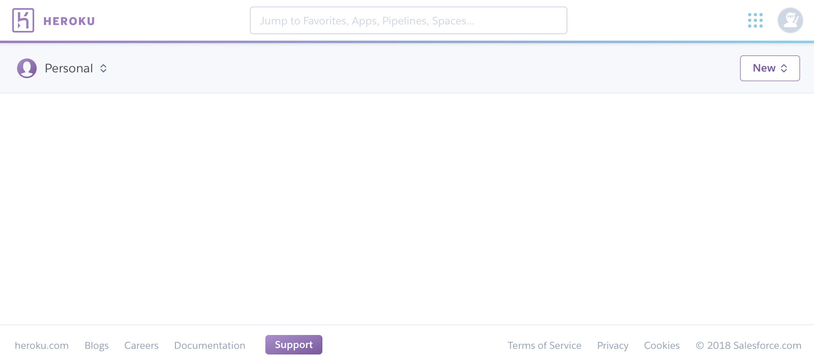
Click the
https://dashboard.heroku.com/new-app
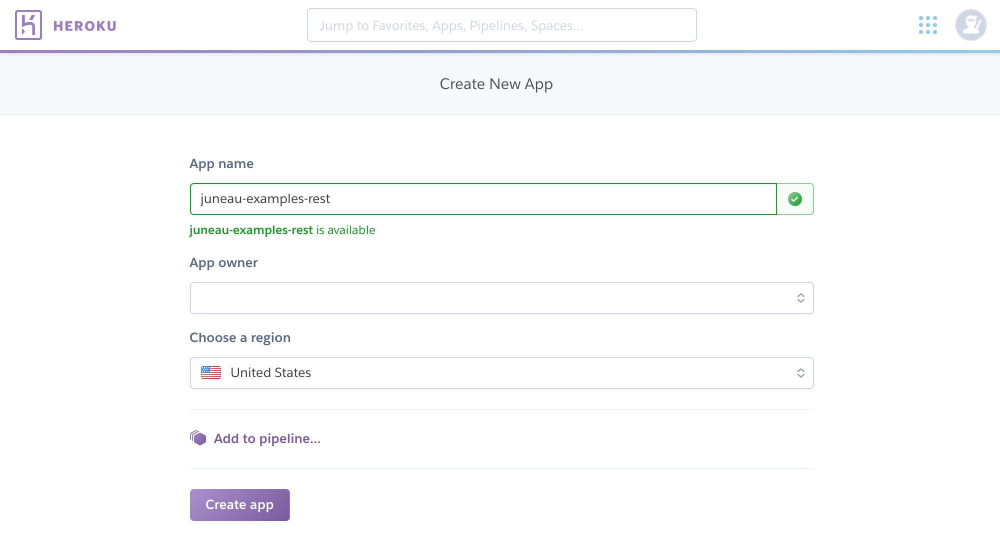
After clicking the
https://dashboard.heroku.com/apps/juneau-examples-rest/deploy/heroku-git
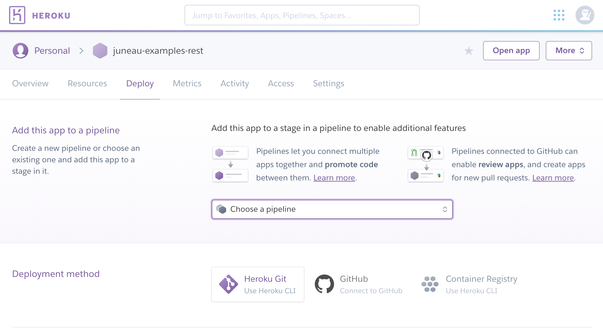
For this example, we'll use the
https://dashboard.heroku.com/apps/juneau-examples-rest/deploy/heroku-git
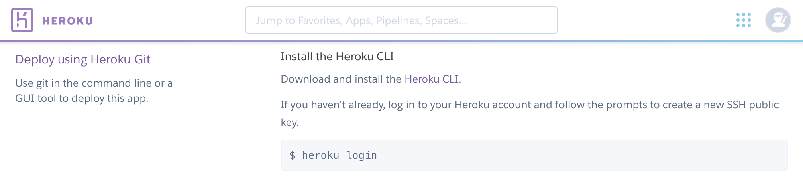Next, run the following commands to cd into our Eclipse project and initialize it as a local git repo:
$ cd juneau-examples-rest-springboot/ $ git init
Output
$ cd juneau-examples-rest-springboot/ $ git init Initialized empty Git repository in /.../juneau-examples-rest-springboot/.git/
Next, run the following command to link our project to the Heroku app:
$ heroku git:remote -a juneau-examples-rest
Output
$ heroku git:remote -a juneau-examples-rest set git remote heroku to https://git.heroku.com/juneau-examples-rest.git
Next, run the following commands to add our files to the git repo and push to the Heroku master branch:
$ git add . $ git commit -am "Initial deploy" $ git push heroku master
Output
$ git add . master (root-commit) 7c94cb9] Initial deploy 123 files changed, 11986 insertions(+) Counting objects: 127, done. $ git commit -am "Initial deploy" $ git push heroku master Delta compression using up to 8 threads. Compressing objects: 100% (113/113), done. Writing objects: 100% (127/127), 363.91 KiB | 21.41 MiB/s, done. ... remote: -----> Compressing... remote: Done: 85.9M remote: -----> Launching... remote: Released v3 remote: https://juneau-examples-rest.herokuapp.com/ deployed to Heroku remote: remote: Verifying deploy... done. To https://git.heroku.com/juneau-examples-rest.git * [new branch] master -> master
If no errors were shown, then our application should now be live.
You can click on the
If everything worked, your browser should now be loaded with our example REST app:
https://juneau-examples-rest.herokuapp.com
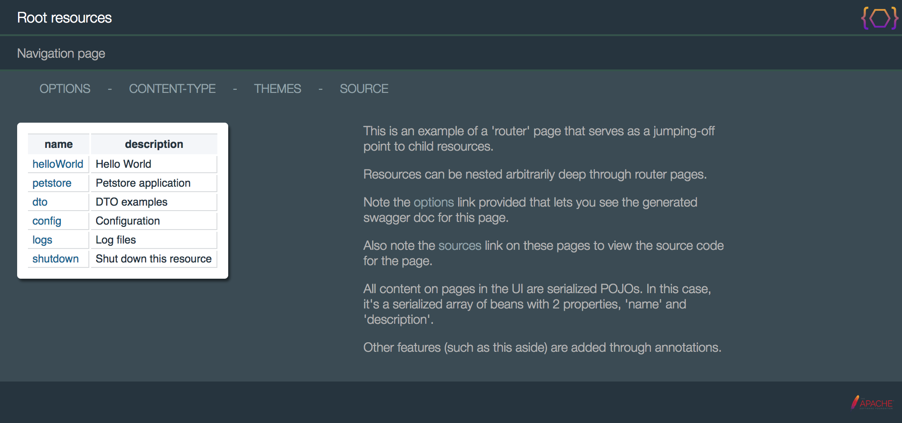19 - juneau-pestore8.2.0-new
TODO
19.1 - Installing in Eclipse8.2.0-new
How to import Petstore to Eclipse or Spring Tool Suite:
- File -->
- Import -->
- Existing Maven Projects-->
- Browse existing projects--> juneau-petstore
19.2 - Running Petstore manually8.2.0-new
How to run Petstore --Java Backend-- in Eclipse or Spring Tool Suite:
- App.java --> Run as Spring Boot App
- Main.java --> Run as Spring Boot App
How to run Petstore --React Frontend-- with npm:
- Install latest node.js
- Inside folder "Pets" run command: npm install
- Inside folder "Pets" run command: npm start
19.3 - Building and Running from Command-Line (Using Dockerfiles)8.2.0-new
How to build and run Petstore using Docker:
- Go to the folder "juneau-petstore" and run this command:
docker build . -t petstore && docker run -p 5000:5000 petstore - Go to the folder "pets" and run this command:
docker run --rm -it -p 3000:3000 -v $(pwd):/usr/src/app pets
19.4 - About Petstore App
8.2.0-new
What is the Petstore app?
Petstore is a simple CRUD (Create, Read, Update and Delete) application, which is meant to demonstrate the advantages of the Apache Juneau library. It is a live example showing how any JAVA back-end developer can use Juneau for parsing, POJO serialization and sending different types of serialized POJOs over REST.
What's the project layout?
Petstore application consists of three main parts, which are connected over REST:
- Database: Apache Derby.
- Server: Java Spring Boot.
- Client: Java Spring Boot or React.
Java back-end and front-end runs on: http://localhost:5000;
React front-end runs on: http://localhost:3000.
Project is based on a standard Spring Boot project structure. There are Models, Repositories, Services.
The main difference here - no Controller classes or @RestController annotations.
Instead of it, we use PetStore.java interface class where REST calls are mapped with different methods.
Petstore has three types of DTO objects (database entities): Pets, Orders and Users.
All methods for creating, reading, updating or deleting database entities (pets, orders or users) are provided in PetStoreService.java class.
Example Pet, Order and User objects are created at program startup and saved in the database using JPA (Java Persistence API) and PetStoreService methods.
How does it work ?
- To get the data which should be displayed, Petstore app client sends http request GET to the back-end server. The response data goes over the REST connection where POJOs get serialized. Petstore client can get and display different types of the same POJO: simple (standard) json format and other (not standard) formats.
- Response data (array of objects) in standard JSON format here is used to generate table content (for example, all Pets in Store).
- Other types of these objects are displayed in the page section "Content types". Here you can get the same POJOs displayed in different formats: json simple, json schema, www form urlencoded, octal/msg, html, html schema, html stripped, openapi, plain text, uon, xml, xml schema, xml soap.
- All readable table content and visual representation of the different content types are generated from the response data.
20 - Glossaries8.1.3-new
20.1 - Language Support8.1.3-new
All serializers/parsers defined in Juneau
| Language | Serializers | Parsers | Marshalls | Documentation |
|---|---|---|---|---|
| HTML Details | ||||
| HTML Details | ||||
| JSON Details | ||||
| Simplified JSON | ||||
| JSON-Schema Support | ||||
| MessagePack Details | ||||
| juneau-marshall-rdf | ||||
| juneau-marshall-rdf | ||||
| OpenAPI Details | ||||
| juneau-marshall-rdf | ||||
| juneau-marshall-rdf | ||||
| juneau-marshall-rdf | ||||
| UON Details | ||||
| URL-Encoding Details | ||||
| XML Details | ||||
| XmlSchema XML-Schema Support |
20.2 - Annotations8.1.3-new
Serialization Annotations (used to modify how artifacts are marshalled)
| Annotation | Description | Used On | Used By |
|---|---|---|---|
|
All serializers and parsers | Tailors how beans get marshalled. | |
|
All serializers and parsers | Identifies bean constructors and property args. | |
|
All serializers and parsers | Prevents artifacts from being interpreted as beans/bean components. | |
|
All serializers and parsers | Tailors how bean properties get marshalled. | |
|
All parsers | Identifies a class as a builder for a POJO class. | |
|
CSV-specific tweaks. | ||
|
Identifies examples for POJOs. | ||
|
HTML-specific tweaks. | ||
|
Defines how to construct hyperlinks on objects. | ||
|
JSO-specific tweaks. | ||
|
JSON-specific tweaks. | ||
|
MessagePack-specific tweaks. | ||
|
All parsers | Maps constructor args to property names. | |
|
All parsers | Identifies a 'name' property. | |
|
OpenAPI-specific tweaks. | ||
|
All parsers | Identifies a 'parent' property. | |
|
PlainText-specific tweaks. | ||
|
All RDF serializers and parsers | RDF-specific tweaks. | |
|
All RDF serializers and parsers | Identifies the default RDF namespaces at the package level. | |
|
SOAP/XML-specific tweaks. | ||
|
All serializers and parsers | Associates swaps and surrogates with POJOs and bean properties. | |
|
All serializers and parsers | Associates multiple swaps with the same POJO class. | |
|
UON-specific tweaks. | ||
|
HTML and XML serializers | Identifies a class or bean property as a URI. | |
|
URL-Encoding-specific tweaks. | ||
|
XML-specific tweaks. | ||
|
XML serializers and parsers | Identifies the default XML namespaces at the package level. |
Configuration Annotations (used to modify how serializers/parsers behave)
| Annotation | Configures |
|---|---|
| All serializers and parsers | |
| All parsers | |
| All RDF serializers and parsers | |
| All serializers | |
Common REST Annotations (used on both client-side and server-side)
| Annotation | Used On | Description |
|---|---|---|
|
HTTP request/response body. | |
|
HTTP form data parameter. | |
|
HTTP form data parameter is present. | |
|
HTTP query parameter is present. | |
|
HTTP header. | |
|
HTTP path part. | |
|
HTTP query parameter. | |
|
Identifies an interface to use to interact with HTTP parts of an HTTP request through a bean. | |
|
Identifies an interface to use to interact with HTTP parts of an HTTP response through a bean. | |
|
Denotes a method as an HTTP response body on a |
|
|
Denotes a method as an HTTP response header on a |
|
|
Denotes a method as an HTTP response status code on a |
REST Server-only Annotations
| Annotation | Used On | Description |
|---|---|---|
|
Request attribute. | |
|
Identifies and configures REST resource classes. | |
|
Identifies REST lifecycle hook methods. | |
|
Identifies and configures REST resource class methods. |
20.3 - Configurable Properties8.1.3-new
All properties defined in Juneau
| Context | ID | Description | Data type |
|---|---|---|---|
BeanContext |
BEAN_annotations |
Annotations. | |
BEAN_beanClassVisibility |
Minimum bean class visibility. | ||
BEAN_beanConstructorVisibility |
Minimum bean constructor visibility. | ||
BEAN_beanDictionary |
Bean dictionary. | ||
BEAN_beanFieldVisibility |
Minimum bean field visibility. | ||
BEAN_beanMapPutReturnsOldValue |
BeanMap.put() returns old property value. | ||
BEAN_beanMethodVisibility |
Minimum bean method visibility. | ||
BEAN_beansRequireDefaultConstructor |
Beans require no-arg constructors. | ||
BEAN_beansRequireSerializable |
Beans require Serializable interface. | ||
BEAN_beansRequireSettersForGetters |
Beans require setters for getters. | ||
BEAN_beansRequireSomeProperties |
Beans require at least one property. | ||
BEAN_examples |
POJO examples. | ||
BEAN_fluentSetters |
Find fluent setters. | ||
BEAN_ignoreInvocationExceptionsOnGetters |
Ignore invocation errors on getters. | ||
BEAN_ignoreInvocationExceptionsOnSetters |
Ignore invocation errors on setters. | ||
BEAN_ignorePropertiesWithoutSetters |
Ignore properties without setters. | ||
BEAN_ignoreTransientFields |
Ignore transient fields. | ||
BEAN_ignoreUnknownBeanProperties |
Ignore unknown properties. | ||
BEAN_ignoreUnknownNullBeanProperties |
Ignore unknown properties with null values. | ||
BEAN_implClasses |
Implementation classes. | ||
BEAN_notBeanClasses |
Bean class exclusions. | ||
BEAN_notBeanPackages |
Bean package exclusions. | ||
BEAN_propertyNamer |
Bean property namer. | ||
BEAN_sortProperties |
Sort bean properties. | ||
BEAN_swaps |
Java object swaps. | ||
BEAN_typePropertyName |
Bean type property name. | ||
BEAN_useEnumNames |
Use enum names. | ||
BEAN_useInterfaceProxies |
Use interface proxies. | ||
BEAN_useJavaBeanIntrospector |
Use Java Introspector. | ||
BeanTraverseContext |
BEANTRAVERSE_detectRecursions |
Automatically detect POJO recursions. | |
BEANTRAVERSE_ignoreRecursions |
Ignore recursion errors. | ||
BEANTRAVERSE_initialDepth |
Initial depth. | ||
BEANTRAVERSE_maxDepth |
Max traversal depth. | ||
Config |
CONFIG_binaryFormat |
Binary value format. | |
CONFIG_binaryLineLength |
Binary value line length. | ||
CONFIG_encoder |
Value encoder. | ||
CONFIG_multiLineValuesOnSeparateLines |
Multi-line values should always be on separate lines. | ||
CONFIG_name |
Configuration name. | ||
CONFIG_parser |
POJO parser. | ||
CONFIG_readOnly |
Read-only. | ||
CONFIG_serializer |
POJO serializer. | ||
CONFIG_store |
Configuration store. | ||
CONFIG_varResolver |
SVL variable resolver. | ||
ConfigFileStore |
FILESTORE_charset |
Charset. | |
FILESTORE_directory |
Local file system directory. | ||
FILESTORE_extensions |
File extensions. | ||
FILESTORE_updateOnWrite |
Update-on-write. | ||
FILESTORE_useWatcher |
Use watcher. | ||
FILESTORE_watcherSensitivity |
Watcher sensitivity. | ||
Context |
CONTEXT_debug |
Debug mode. | |
CONTEXT_locale |
Locale. | ||
CONTEXT_mediaType |
Media type. | ||
CONTEXT_timeZone |
Time zone. | ||
HtmlDocSerializer |
HTMLDOC_aside |
Aside section contents. | |
HTMLDOC_asideFloat |
Float aside section contents. | ||
HTMLDOC_footer |
Footer section contents. | ||
HTMLDOC_head |
Additional head section content. | ||
HTMLDOC_header |
Header section contents. | ||
HTMLDOC_nav |
Nav section contents. | ||
HTMLDOC_navlinks |
Page navigation links. | ||
HTMLDOC_noResultsMessage |
No-results message. | ||
HTMLDOC_nowrap |
Prevent word wrap on page. | ||
HTMLDOC_script |
Javascript code. | ||
HTMLDOC_style |
CSS style code. | ||
HTMLDOC_stylesheet |
Stylesheet import URLs. | ||
HTMLDOC_template |
HTML document template. | ||
HTMLDOC_widgets |
HTML Widgets. | ||
HtmlDocSerializerBuilder |
HTMLDOC_asideFloat |
||
HtmlSerializer |
HTML_addBeanTypes |
Add |
|
HTML_addKeyValueTableHeaders |
Add key/value headers on bean/map tables. | ||
HTML_detectLabelParameters |
Look for link labels in URIs. | ||
HTML_detectLinksInStrings |
Look for URLs in Strings. |
||
HTML_labelParameter |
Link label parameter name. | ||
HTML_uriAnchorText |
Anchor text source. | ||
InputStreamParser |
ISPARSER_binaryFormat |
Binary input format. | |
JsonParser |
JSON_validateEnd |
Validate end. | |
JsonSchemaGenerator |
JSONSCHEMA_addDescriptionsTo |
Add descriptions to types. | |
JSONSCHEMA_addExamplesTo |
Add examples. | ||
JSONSCHEMA_allowNestedDescriptions |
Allow nested descriptions. | ||
JSONSCHEMA_allowNestedExamples |
Allow nested examples. | ||
JSONSCHEMA_beanDefMapper |
Bean schema definition mapper. | ||
JSONSCHEMA_defaultSchemas |
Default schemas. | ||
JSONSCHEMA_ignoreTypes |
Ignore types from schema definitions. | ||
JSONSCHEMA_useBeanDefs |
Use bean definitions. | ||
JsonSerializer |
JSON_addBeanTypes |
Add |
|
JSON_escapeSolidus |
Prefix solidus |
||
JSON_simpleMode |
Simple JSON mode. | ||
MsgPackSerializer |
MSGPACK_addBeanTypes |
Add |
|
OpenApiCommon |
OAPI_collectionFormat |
Default collection format for HTTP parts. | |
OutputStreamSerializer |
OSSERIALIZER_binaryFormat |
Binary output format. | |
Parser |
PARSER_autoCloseStreams |
Auto-close streams. | |
PARSER_debugOutputLines |
Debug output lines. | ||
PARSER_listener |
Parser listener. | ||
PARSER_strict |
Strict mode. | ||
PARSER_trimStrings |
Trim parsed strings. | ||
PARSER_unbuffered |
Unbuffered. | ||
RdfCommon |
RDF_collectionFormat |
RDF format for representing collections and arrays. | |
RDF_n3_abbrevBaseUri |
N3/Turtle property: |
||
RDF_n3_indentProperty |
N3/Turtle property: |
||
RDF_n3_minGap |
N3/Turtle property: |
||
RDF_n3_objectLists |
N3/Turtle property: |
||
RDF_n3_propertyColumn |
N3/Turtle property: |
||
RDF_n3_subjectColumn |
N3/Turtle property: |
||
RDF_n3_useDoubles |
N3/Turtle property: |
||
RDF_n3_usePropertySymbols |
N3/Turtle property: |
||
RDF_n3_useTripleQuotedStrings |
N3/Turtle property: |
||
RDF_n3_widePropertyLen |
N3/Turtle property: |
||
RDF_arp_err_ |
RDF/XML ARP property: |
||
RDF_arp_ign_ |
|||
RDF_arp_warn_ |
RDF/XML ARP property: |
||
RDF_rdfxml_allowBadUris |
RDF/XML property: |
||
RDF_rdfxml_attributeQuoteChar |
RDF/XML property: |
||
RDF_rdfxml_blockRules |
RDF/XML property: |
||
RDF_arp_embedding |
RDF/XML ARP property: |
||
RDF_arp_errorMode |
RDF/XML ARP property: |
||
RDF_arp_iriRules |
RDF/XML property: |
||
RDF_rdfxml_longId |
RDF/XML property: |
||
RDF_rdfxml_relativeUris |
RDF/XML property: |
||
RDF_rdfxml_showDoctypeDeclaration |
RDF/XML property: |
||
RDF_rdfxml_showXmlDeclaration |
RDF/XML property: |
||
RDF_rdfxml_tab |
RDF/XML property: |
||
RDF_rdfxml_xmlBase |
RDF/XML property: |
||
RDF_juneauBpNs |
Default XML namespace for bean properties. | ||
RDF_juneauNs |
XML namespace for Juneau properties. | ||
RDF_language |
RDF language. | ||
RDF_looseCollections |
Collections should be serialized and parsed as loose collections. | ||
RdfParser |
RDF_trimWhitespace |
Trim whitespace from text elements. | |
RdfSerializer |
RDF_useXmlNamespaces |
Reuse XML namespaces when RDF namespaces not specified. | |
RDF_addBeanTypes |
Add |
||
RDF_addLiteralTypes |
Add XSI data types to non- |
||
RDF_addRootProperty |
Add RDF root identifier property to root node. | ||
RDF_autoDetectNamespaces |
Auto-detect namespace usage. | ||
RDF_namespaces |
Default namespaces. | ||
ReaderParser |
RPARSER_fileCharset |
File charset. | |
RPARSER_streamCharset |
Input stream charset. | ||
RestClient |
RESTCLIENT_callHandler |
REST call handler. | |
RESTCLIENT_console |
Console print stream. | ||
RESTCLIENT_debug |
Debug. | ||
RESTCLIENT_errorCodes |
Error codes predicate. | ||
RESTCLIENT_executorService |
Executor service. | ||
RESTCLIENT_executorServiceShutdownOnClose |
Shut down executor service on close. | ||
RESTCLIENT_formData |
Request form-data parameters. | ||
RESTCLIENT_headers |
Request headers. | ||
RESTCLIENT_ignoreErrors |
Ignore errors. | ||
RESTCLIENT_interceptors |
Call interceptors. | ||
RESTCLIENT_keepHttpClientOpen |
Keep HttpClient open. | ||
RESTCLIENT_leakDetection |
Enable leak detection. | ||
RESTCLIENT_logRequests |
Log requests. | ||
RESTCLIENT_logRequestsLevel |
Log requests log level. | ||
RESTCLIENT_logRequestsPredicate |
Log requests predicate. | ||
RESTCLIENT_logToConsole |
Log to console. | ||
RESTCLIENT_logger |
Logger. | ||
RESTCLIENT_parser |
Parser. | ||
RESTCLIENT_parsers |
Parsers. | ||
RESTCLIENT_partParser |
Part parser. | ||
RESTCLIENT_partSerializer |
Part serializer. | ||
RESTCLIENT_query |
Request query parameters. | ||
RESTCLIENT_query |
Request query parameters. | ||
RESTCLIENT_headers |
Request headers. | ||
RESTCLIENT_retries |
Number of retries to attempt. | ||
RESTCLIENT_retryInterval |
The time in milliseconds between retry attempts. | ||
RESTCLIENT_retryOn |
Retry-on determination object. | ||
RESTCLIENT_rootUri |
Root URI. | ||
RESTCLIENT_serializer |
Serializer. | ||
RESTCLIENT_serializers |
Serializers. | ||
RestContext |
REST_allowBodyParam |
Allow body URL parameter. | |
REST_allowedHeaderParams |
Allowed header URL parameters. | ||
REST_allowedMethodHeaders |
Allowed method headers. | ||
REST_allowedMethodParams |
Allowed method URL parameters. | ||
REST_callLogger |
REST call logger. | ||
REST_callLoggerConfig |
REST call logging rules. | ||
REST_children |
Children. | ||
REST_classpathResourceFinder |
Classpath resource finder. | ||
REST_clientVersionHeader |
Client version header. | ||
REST_consumes |
Supported content media types. | ||
REST_context |
REST context class. | ||
REST_converters |
Class-level response converters. | ||
REST_debug |
Debug mode. | ||
REST_debugOn |
Debug mode on specified classes/methods. | ||
REST_defaultCharset |
Default character encoding. | ||
REST_encoders |
Compression encoders. | ||
REST_guards |
Class-level guards. | ||
REST_infoProvider |
REST info provider. | ||
REST_maxInput |
The maximum allowed input size (in bytes) on HTTP requests. | ||
REST_messages |
Messages. | ||
REST_mimeTypes |
MIME types. | ||
REST_paramResolvers |
Java method parameter resolvers. | ||
REST_parsers |
Parsers. | ||
REST_partParser |
HTTP part parser. | ||
REST_partSerializer |
HTTP part serializer. | ||
REST_path |
Resource path. | ||
REST_produces |
Supported accept media types. | ||
REST_properties |
Properties. | ||
REST_renderResponseStackTraces |
Render response stack traces in responses. | ||
REST_reqAttrs |
Default request attributes. | ||
REST_reqHeaders |
Default request headers. | ||
REST_resHeaders |
Default response headers. | ||
REST_resourceResolver |
REST resource resolver. | ||
REST_responseHandlers |
Response handlers. | ||
REST_roleGuard |
Role guard. | ||
REST_rolesDeclared |
Declared roles. | ||
REST_serializers |
Serializers. | ||
REST_staticFileResponseHeaders |
Static file response headers. | ||
REST_staticFiles |
Static file mappings. | ||
REST_uriAuthority |
Resource URI authority path. | ||
REST_uriContext |
Resource URI context path. | ||
REST_uriRelativity |
URI resolution relativity. | ||
REST_uriResolution |
URI resolution. | ||
REST_useClasspathResourceCaching |
Use classpath resource caching. | ||
RestMethodContext |
RESTMETHOD_callLoggerConfig |
Logging rules. | |
RESTMETHOD_clientVersion |
Client version pattern matcher. | ||
RESTMETHOD_debug |
Debug mode. | ||
RESTMETHOD_defaultFormData |
Default form data. | ||
RESTMETHOD_defaultQuery |
Default query parameters. | ||
RESTMETHOD_httpMethod |
HTTP method name. | ||
RESTMETHOD_matchers |
Method-level matchers. | ||
RESTMETHOD_paths |
Resource method paths. | ||
RESTMETHOD_path |
Resource method path. | ||
RESTMETHOD_priority |
Priority. | ||
RESTMETHOD_reqAttrs |
Default request attributes. | ||
RESTMETHOD_reqHeaders |
Default request headers. | ||
Serializer |
SERIALIZER_addBeanTypes |
Add |
|
SERIALIZER_addRootType |
Add type attribute to root nodes. | ||
SERIALIZER_keepNullProperties |
Don't trim null bean property values. | ||
SERIALIZER_listener |
Serializer listener. | ||
SERIALIZER_sortCollections |
Sort arrays and collections alphabetically. | ||
SERIALIZER_sortMaps |
Sort maps alphabetically. | ||
SERIALIZER_trimEmptyCollections |
Trim empty lists and arrays. | ||
SERIALIZER_trimEmptyMaps |
Trim empty maps. | ||
SERIALIZER_trimNullProperties |
Trim null bean property values. | ||
SERIALIZER_trimStrings |
Trim strings. | ||
SERIALIZER_uriContext |
URI context bean. | ||
SERIALIZER_uriRelativity |
URI relativity. | ||
SERIALIZER_uriResolution |
URI resolution. | ||
SoapXmlSerializer |
SOAPXML_SOAPAction |
The |
|
SwaggerUI |
SWAGGERUI_resolveRefsMaxDepth |
Resolve |
|
UonParser |
UON_decoding |
Decode |
|
UON_validateEnd |
Validate end. | ||
UonSerializer |
UON_addBeanTypes |
Add |
|
UON_encoding |
Encode non-valid URI characters. | ||
UON_paramFormat |
Format to use for query/form-data/header values. | ||
UrlEncodingParser |
URLENC_expandedParams |
Parser bean property collections/arrays as separate key/value pairs. | |
UrlEncodingSerializer |
URLENC_expandedParams |
Serialize bean property collections/arrays as separate key/value pairs. | |
WriterSerializer |
WSERIALIZER_fileCharset |
File charset. | |
WSERIALIZER_maxIndent |
Maximum indentation. | ||
WSERIALIZER_quoteChar |
Quote character. | ||
WSERIALIZER_streamCharset |
Output stream charset. | ||
WSERIALIZER_useWhitespace |
Use whitespace. | ||
XmlParser |
XML_eventAllocator |
XML event allocator. | |
XML_preserveRootElement |
Preserve root element during generalized parsing. | ||
XML_reporter |
XML reporter. | ||
XML_resolver |
XML resolver. | ||
XML_validating |
Enable validation. | ||
XmlSerializer |
XML_addBeanTypes |
Add |
|
XML_addNamespaceUrisToRoot |
Add namespace URLs to the root element. | ||
XML_autoDetectNamespaces |
Auto-detect namespace usage. | ||
XML_defaultNamespace |
Default namespace. | ||
XML_enableNamespaces |
Enable support for XML namespaces. | ||
XML_namespaces |
Default namespaces. | ||
XML_xsNamespace |
XMLSchema namespace. |
21 - Security Best-Practices
Security is always an ongoing concern in any library. If you discover any security vulnerabilities in this code, please refer to the instructions found here:
21.1 - juneau-marshall
Demarshalling vulnerabilities
One common security vulnerability is the ability to create arbitrary Java object instances through crafted
user input. For example, support for constructing POJOs based on an input attribute defining a
fully-qualified class name like
Fortunately, Juneau does not support an open-ended
The following example shows a potential vector that circumvents the restriction above:
Juneau does support something similar to a
POJO types of generalized input are also inferred through swaps. Again, since the POJO types are hardcoded at compile time, these should not be subject to demarshalling vulnerabilities. However, it is possible to circumvent this through your swap implementation as shown below:
Note that the JsoParser, a thin layer of the Juneau Parser API written on
top of plain-old Java Object Serialization which itself is vulnerable to demarshalling issues.
Due to this, the JSO parser is not included in any of the default REST servlet implementations.
Be especially careful when using this parser, particularly if you want to use it for handing
All other parsers (JSON, URL-Encoding, MessagePack, etc...) work the same way in determining POJO types, so should be safe from demarshalling vulnerabilities.
Dependent libraries
When accessing security vulnerabilities of any library, dependent libraries must also be taken into account:
- The JSON, HTML, MsgPack, URL-Encoding, and UON parsers are written from scratch and do not rely on any other parsing technologies.
- The XML and HTML parsers uses the built-in Java StAX parser. This *should* be free from vulnerabilities.
- The RDF parsers rely on Apache Jena 2.7.1.
As of
7.0.1 , no known security vulnerabilities exist that affect Juneau at this time.
21.2 - juneau-svl
Care must be used when defining new Vars using the SVL API since mistakes
could potentially expose system properties, environment variables, or even file system files.
For recap, the SVL support allows you to embed variables of the form
An example of a potential security hole is shown below that could potentially expose any file on a file system through a REST request:
This code is simply echoing the value of the
In reality, the above security hole does not exist because of the following restrictions:
-
Vars have two methodsVar.allowNested()andVar.allowRecurse()that can be overridden to prevent recursive processing of string variables. These are bothfalse for the$R variable, so the$F variable in the result will never get processed and instead be treated as plain text. -
The
$F variable only allows you to retrieve files within the JVM starting directory.
Even though the built-in Juneau variables are safe, special care is needed when defining your own custom
variables. If your variable resolves user input in any way, it's HIGHLY recommended that you override the
Var.allowNested() and Var.allowRecurse()
methods to prevent recursive handling of variables.
21.3 - juneau-rest-server
Denial of service attacks can be alleviated through the maxInput()
setting. Arbitrarily-large input will trigger an exception before causing out-of-memory errors.
The default value for this setting is 100MB.
Since the parsers do not use intermediate DOMs and instead parse directly into Java objects, deeply nested data structures will almost always trigger stack overflow errors long before memory consumption becomes an issue. However, this is NOT true of the RDF parsers that use an intermediate DOM. If parsing RDF, you may want to consider lowering the max-input value above.
Release Notes
Release Notes
5.0.0.0 (Jun 11, 2012)
Version 5.0 marks a major release milestone for the Juno/JJSON library. It is now available for download from iRAM under the name "Juno (previously JJSON)". The Juno Starters Guide has been updated to reflect new functionality in this release.
-
New name.
Unfortunately, "JJSON" was already trademarked by another similar library. Therefore, it's been renamed "Juno" (after the Roman goddess and wife of Jupiter) which does not appear to have any similar trademark issues (crosses fingers). The name is also a play on the word "Uno", indicating that this is a single simple unifying interface of several kinds of technology. -
Simplified APIs for working with beans.
Significant improvements have been made to the parsers to make it easier to convert serialized POJOs back into their original forms. -
Serializer/Parser classes now directly subclass from
BeanContext.
In previous releases, if you wanted to change the way beans were handled by the serializers and parsers, you had to construct a separate bean map factory and pass it to the serializer or parser. Now, you can call the bean map factory methods directly on the serializer or parser class. -
Simplified Filter API for handling non-standard POJOs.
The API for handling non-standard POJOs has been simplified by introducing the concept of aTransform class, which is associated with theBeanContext class (and thus the Serializer and Parser classes too) through theBeanContext.addTransforms(Class[]) method.
Two new subclasses ofTransform :BeanFilter- Filter POJO beans.PojoSwap- Filter POJOs that aren't beans.
Cast andBeanFilter APIs which were considerably more complicated and puts them under a common API. -
Elimination of
_class attributes in parsable output.
One of the complaints about the previous version of JJSON was that if you wanted to have the resulting JSON or XML be parsable back into beans, you had to enable the"addClassAttrs" property on the bean map factory class so that"_class" attributes could be added to the output.
This requirement is virtually eliminated in v5. In many cases, the parsers are able to determine through reflection what the correct target type is based on the top-level class passed in on the parse method. -
Performance improvements.
Several significant performance improvements have been made in this release.-
New Reader-based JSON parser.
Previously, the JSON parser required that the entire JSON text be loaded into memory as a String before being parsed. The new JSON parser is Reader-based which significantly reduces memory consumption. -
New StAX-based XML parser.
The old XML parser was based on DOM. The new XML parser uses a StAX parser which significantly reduces memory consumption. -
Caching of reflection data in the
BeanMap API.
The number of reflection calls have been significantly reduced in theBeanMap API code. Reflection is used to determine the class types of property values on beans. This information is now cached and persisted so that the reflection API calls to determine class types are only performed the first time a bean type is encountered. -
Automatic support for GZIP compression/decompression in
RestServlets .
This is completely transparent to the developer. The output writer is negotiated by the framework to automatically handle compression and charset requests without the developer needing to know anything about it.
-
New Reader-based JSON parser.
- Cognos/XML support.
- JSON-schema support.
-
New
PojoIntrospectorclass. -
Significant REST servlet API improvements.
- Defining child resources is considerably simpler now. In addition to the standard doX() methods for handling the requests for the current resource, you can also define getX() methods for returning child resources which automatically become available under the child URL specified by the getter name.
- Initialization of the child resources occurs automatically when the parent resource initialization occurs.
-
Other improvments have been made in the area of automatic negotiation of input and output type streams.
For example, automatic support is provided for GZIP (
Accept-Encoding: gzip ) and charsets (e.gAccept-Charset: SJIS ) on both incoming and outgoing data. It's all transparent from a developers perspective. The developer simply working with POJOs, and all details about content types, encoding, charsets, and so forth are handled by the framework. -
Support for generating complex
OPTIONS pages for resources.
-
Automatic support for SOAP XML output on
"text/soap+xml" requests againstRestServlet . - Support for XML namespaces.
-
Support for setting the XML root element name by either passing in a parameter on the serializer, or by specifying it via a
@Bean annotation. - Support for loading beans directly from Readers and Strings.
-
Parsing support for POJOs of type
Enum . -
Significant improved support for various flavors of parameterized types, such as subclasses of parameterized types (e.g.
MyBeanList ).extends LinkedList<MyBean> - Improved ordering of bean properties (should now be ordered as they are defined in the class).
-
Various default filters provided:
- byte[]<-->Base64 encoded strings
- Date/Calendar<-->ISO8601/RFC822/Long
-
New
HtmlParserandUrlEncodingParserclasses. - HtmlSerializer now produces XHTML.
5.0.0.1 (Jun 14, 2012)
Juno 5.0.0.1 is a moderate update.
- New support for generating XML-Schema documents from POJO models.
- New support for serializing to RDF/XML.
5.0.0.2 (Sept 28, 2012)
Juno 5.0.0.2 is a minor update.
-
Improvements to Javadocs. Most of the information in the Juno Starters Guide wiki has been moved into the overview and package-level javadocs.
Since the information is now written in HTML, you can now copy and paste the code examples directly from the Javadocs.
The code examples are also syntax-highlighted using CSS. - Support for defining default XML namespaces on packages and classes for the XML and RDF serializers.
-
Restructured the packages along content type support (e.g. all JSON support moved to
org.apache.juneau.json ). -
Automatic support for parsing maps with
Enum keys, and parsingEnum strings.
This was previously possible using filters, but now it's built-in for all the parsers. -
Replaced the
ObjectList.toXArray() methods with a newelements(Class<T> type) method that's more efficient and avoids creating an unnecessary array. -
Support for parsing into beans with read-only properties.
New@BeanConstructor annotation allows you to specify bean property values to be passed in through a constructor. -
Separated the rest library into separate independent client and server libraries.
Use one, use both, it's up to you.
5.0.0.3 (Oct 3, 2012)
Juno 5.0.0.3 is a minor update.
-
Support for parsing into read-only beans (i.e. beans with only getters, property values set through constructor args).
To support this, the@BeanConstructor annotation has been added. - Merged separate settings classes back into their base classes (simplifies the API).
-
SerializerGroupsandParserGroupsnow shareBeanContextsto reduce memory consumption of class type metadata.
5.0.0.4 (Oct 7, 2012)
Juno 5.0.0.4 is a minor update.
-
New
@RestMethodannotation onRestServletmethods.
Allows the usage of URL pattern matching and automatic conversion of URL variables to arguments passed to method handlers.
SeeRestServletfor more information. -
Enhancements to
BeanContext.convertToType(Object,Class) to be able to convertStrings to classes withfromString(String) /valueOf(String) static methods orT(String) constructors.
5.0.0.5 (Oct 29, 2012)
Juno 5.0.0.5 is a major update.
- New
@RestChild -
New
traversable andfilterable attributes added to@RestMethodannotation.
Eliminates the need forPojoResource andFilteredRestResource classes. - Simplified client API. Easier to use when making multiple connections to the same server.
- Support for pluggable authentication in the client API.
- Support for authenticating against Jazz Team Servers.
- Support for rendering package-level Javadocs in REST resources.
- Support for parsing of header values into specific object types.
- Changed default XML representation to not include JSON-type attributes. Produces cleaner XML.
-
New
resourceUri attributed added to@Bean annotation to associate beans with resource URIs.- Used for automatically creating hyperlinks in
HtmlSerializer. - Used for automatically creating
uri attributes inXmlSerializer. - Used for automatically creating
rdf:about attributes inRdfXmlSerializer .
- Used for automatically creating hyperlinks in
5.0.0.6 (Oct 30, 2012)
Juno 5.0.0.6 is a minor update that fixes a small bug in 5.0.0.5.
5.0.0.7 (Jan 20, 2013)
Juno 5.0.0.7 is a major update.
Core API updates
- Combined previous 3 libraries into a single library.
-
New
ParserListenerclass.
Adds ability to find and process unknown bean properties during parsing. -
Enhancements to
XmlParser:- Coalescing support
- Validations support
- Support for replacing entity references
- Resolver support
- Event allocator support
- Trim-whitespace support
-
Enhanced XML support:
-
New
@Xml.formatannotation.
Controls how POJOs get serialized to XML.
Also allows you to collapse collections and arrays. -
New
@Xml.namespaces annotation.
Namespaces can be defined at package, class, method, or field levels. -
New
@Xml.nsUri annotation.
Shortcut for specifying namespace URIs. -
New
@Xml.valAttr annotation.
Serializes a bean property value as an attribute. - Ability to override XS and XSI namespaces on XML and RDF/XML serializers.
- Ability to override RDF namespace on RDF/XML serializer.
- New more-efficient namespace resolution.
-
New
-
New configurable property classes for everything are now structured better and easier to locate and identify through the following new classes:
BeanContextSerializerContext ParserContext
-
Enhancements to
BeanContext:-
Ability to mark bean properties as hidden using
@BeanProperty(hidden) so that they don't get serialized. -
Simplified
ClassType ClassMetaAPI.
Combined 4 classes into a single class. -
New
@Bean.filter and@BeanProperty.filter annotations.
Used for defining filters on bean classes and bean properties instead of just globally throughBeanContext.addTransforms(Class[]) . -
New
PropertyNamerAPI /@Bean.propertyNamerannotation.
Used for customizing bean property names. -
New
@BeanProperty.beanUri and@BeanProperty.id annotations.
Used for associating beans with URLs and IDs.
Used by XML serializer to add a url attribute on a bean element.
Used by RDF/XML serializer to constructrdf:resource attributes. -
New
BeanProperty.properties() annotation. Used for limiting properties on child elements.
-
Ability to mark bean properties as hidden using
-
Automatic support for
URLandURIobjects.- Converted to hrefs in HTML.
- Converted to url attributes in XML.
- Converted to resource:about attributes in RDF/XML.
- Improvements to Javadocs.
-
Improved
PojoQuerysupport.
REST client updates
- GZIP compression support.
- Bug fixes.
REST server updates
-
Support for overriding bean context and serializer properties in a REST method call through new
RestResponse.setProperty(String,Object) method.
For example, allows you to control whitespace options on a per-request basis. -
Several new annotations on REST servlets:
@RestResource(filters) - Associate post-formatting filters on a resource level. @RestResource.guards - Associate resource-level guards.@RestResource.messages - Associate a resource bundle with a REST servlet. Comes with several convenience methods for looking up messages for the client locale.@RestResource.properties - Override default bean context, serializer, and parser properties though an annotation.
-
Several new annotations on REST methods:
@RestMethod(filters) - Associate post-formatting filters on a method level.@RestMethod(guards)- Associate method-level guards.
-
New annotations on REST method parameters with automatic conversion:
@Attr - A parameter or URL variable value as a parsed POJO.@Param - A query parameter value as a parsed POJO.@PathRemainder - The remainder after a URL pattern match as a String.@Header - An HTTP header value as a parsed POJO.@Content - The HTTP content as a parsed POJO.@Method- The HTTP method name as a String.
-
HTTP response content POJOs can now simply be returned from methods instead of calling
RestResponse.setOutput(Object).
5.0.0.8 (Jan 30, 2013)
Juno 5.0.0.8 is a minor update.
-
New
INI filesupport.- Makes reading, updating, and manipulating INI configuration files a snap.
- Supports automatic conversion of data types in line with the functionality of the rest of the product.
- Comments and layout of INI files are persisted during saves.
5.0.0.9 (Feb 26, 2013)
Juno 5.0.0.9 is a moderate update.
Core API changes
-
INI config file support:- A convenient API for reading, writing, and manipulating INI files.
- Ability to convert INI files to batch and shell environment variables.
- Command-line interface for updating INI files.
- Support for encoded INI file values.
- Support for fluent-style bean setters (setters that return the bean itself).
- Ability to use
@Beanannotation to override bean identification settings. - New
ObjectMap.cast(Class)method to convertObjectMaps directly to beans.
REST server API changes
- Build-in default
OPTIONS pages. - New
@RestResource.defaultRequestHeaders and@RestResource.defaultResponseHeaders annotations. - New
@RestMethod(serializers)and@RestMethod(parsers)annotations. - New
@RestMethod(properties)annotation. - New
@RestMethod(defaultRequestHeaders) annotation. - New
@RestMethod(matchers)annotation andRestMatcherclass. Readers andInputStreams can be specified on@Content annotated parameters.- New
@HasParam annotation. - Full RFC2616 support for matching
Accept headers to serializers.
Other notes
- Smaller library size (460kB).
5.0.0.10 (Mar 7, 2013)
Juno 5.0.0.10 is a minor update.
Core API changes
- New
ObjectMap.findKeyIgnoreCase(String)method. - HtmlSerializer will now create 2-dimensional tables for collections of mixed beans/maps if all object have the same set of property names/keys.
REST server API changes
- New
RestServletProperties class that defines all the class-level properties that can be set on the servlet. - Properties can be set through
@RestResource.propertie annotation, or newRestServlet.setProperty(String,Object) method. - New
"?noTrace" URL parameter to prevent stack traces from being logged (for JUnit testing of error conditions). - New
RestServletProperties.REST_useStackTraceHashes property to prevent the same stack trace from being logged multiple times. - New
RestServletProperties.REST_renderResponseStackTraces property for preventing stack traces in responses for security reasons. - New overridable
RestServlet.onError(HttpServletRequest,HttpServletResponse,RestException,boolean) andRestServlet.onSuccess(RestRequest,RestResponse,long) methods for plugging in your own logging and peformance monitoring. - Eliminated
RestServlet.getInitParams() method, since it's now redundant withRestServlet.getProperties() . - Header parameters passed as URL parameters are now case-insensitive.
5.0.0.11 (Mar 8, 2013)
Juno 5.0.0.11 is a moderate update.
REST server API changes
-
New
UrlEncodingRestSerializer andUrlEncodingRestParser classes.
Allows parsing form posts directly to POJOs. -
Support for
Accept andContent-Type "application/x-www-form-urlencoded" added by default onBasicRestServlet. -
New
RestServlet.renderError(HttpServletRequest,HttpServletResponse,RestException) method to allow customized handling of response errors.
5.0.0.12 (Mar 10, 2013)
Juno 5.0.0.12 is a minor update.
Core API changes
-
Relaxed method naming conventions when using
@BeanProperty annotation.
Methods with zero parameters are interpreted as getters, and methods with one parameter are interpreted as setters.
Eliminated theBeanProperty.method annotation, since it's now unnecessary.
REST server API changes
-
Significantly improved response error messages.
Older messages were rather cryptic. Error conditions should be much easier to debug now. -
New
PlainTextRestSerializer class for serializing"plain/text" requests.
Useful for debugging purposes. -
Readers andInputStreams can now be passed in as@Content parameters if you need direct access to the HTTP body content without involving the parsers.
Equivalent to previously callingRestRequest.getInputStream()andRestRequest.getReader(). -
Improved support for the
?debug parameter.
Dumps better information to the log file, such as all header parameters.
5.0.0.13 (Mar 14, 2013)
Juno 5.0.0.13 is a minor update.
Core API changes
-
New support for relative URIs.
- URIs of the form
"foo/bar" are interpreted as relative to the context root of the web application. - URIs of the form
"/foo/bar" are interpreted as relative to the HTTP authority (e.g."http://myhost:9080" ).
- URIs of the form
-
New
SerializerContext.SERIALIZER_uriContext andSerializerContext.SERIALIZER_uriAuthority serializer properties for specifying values for relative URIs. -
New
@URIannotation that allows you to specify classes and bean properties as URLs that aren'tjava.net.URI orjava.net.URL . -
New
HtmlSerializer.HTML_uriAnchorTextHTML serializer property for tailoring how anchor text is rendered. -
Renamed
BeanProperty#uri annotation toBeanProperty#beanUri to make it clear that this property represents the URI of the bean itself instead of an arbitrary property containing a URI. -
Removed
BeanProperty#id annotation.
REST server API changes
-
Improvements to
RestServletto automatically handle relative URIs in POJOs.SerializerContext.SERIALIZER_uriContext property set by default to web app context root.SerializerContext.SERIALIZER_uriAuthority property set by default to the request scheme+hostname+port.
-
Fixed bug involving
Accept-Charset header in Chrome that prevented HTML output from rendering correctly in that browser.
Accept-Charset handling should now be fully W3C compliant.
5.0.0.14 (Mar 23, 2013)
Juno 5.0.0.14 is a major update.
The biggest change is that the
Instead, the existing Serializer, Parser, SerializerGroup, and ParserGroup classes of the core API have been augmented to replace them.
Adoptions will be required if you have previously used these classes.
Core API changes
-
New
org.apache.juneau.serializer package.- Entirely reworked class hierarchy to make it easier to define new serializers.
- New
WriterSerializerbase class for defining character-based serializers. - New
OutputStreamSerializerbase class for defining byte-based serializers. - Updated
SerializerGroupclass with full support for RFC2616Accept-Content headers. - Improved cloning support on serializers and serializer groups.
-
New
org.apache.juneau.parser package.- Entirely reworked class hierarchy to make it easier to define new parsers.
- New
ReaderParserbase class for defining character-based parsers. - New
InputStreamParserbase class for defining byte-based parsers. - Improved cloning support on parsers and parser groups.
-
New
org.apache.juneau.transform package.- Cleaner class structure.
- Improved
BeanFilterclass for defining property filters on beans. - Improved
PojoQueryclass for defining filters on objects (previously calledObjectFilter ).
-
New
org.apache.juneau.encoders package.- Defines API for
Encodersfor enabling compression in REST servlets and clients. - Previously, gzip compression was enabled by default. This new API allows you to plug in your own compression algorithms.
- New
GzipEncoderclass for enabling gzip compression. - New
EncoderGroupclass for managing multiple encoders and finding them based on RFC2616Accept-Encoding header values.
- Defines API for
-
New
org.apache.juneau.plaintext package.- New
PlainTextSerializerandPlainTextParserclasses for serializing/parsing text/plain content.
- New
-
New
org.apache.juneau.jso package.- New
JsoSerializerclass for serializingapplication/x-java-serialized-object content.
- New
-
New
org.apache.juneau.soap package.- New
SoapXmlSerializerclass for serializingtext/xml+soap content.
- New
-
Improved cloning support on the
BeanContextclass.- Better caching. Improved caching performance.
-
JsonMap andJsonList changed toObjectMapandObjectListto better reflect that they're not limited to just JSON support. -
Renamed
PojoSwap toPojoQueryto not confuse it with the new Filter API.
REST server API changes
-
Eliminated
org.apache.juneau.rest.serializers andorg.apache.juneau.rest.parsers packages.- All existing REST serializers and parsers merged into the core API.
REST client API changes
-
Simplified
RestClientAPI.- You can now only specify a single serializer or parser per client. This significantly simplifies the code.
- Support for
Encoders.
-
Eliminated
RestCmdLine (since it's essentially redundant with CURL).
5.0.0.15 (Mar 24, 2013)
Juno 5.0.0.15 is a moderate update.
-
Juno-Wink integration components that have been requested by many for a long time!
Refer toorg.apache.juneau.rest.jaxrsfor information. -
New
@Produces annotation in place ofISerializer.getMediaTypes() for specifying what media types a serializer produces.
Available when subclassing fromSerializer. -
New
@Consumes annotation in place ofIParser.getMediaTypes() for specifying what media types a parser consumes.
Available when subclassing fromParser.
5.0.0.16 (Mar 25, 2013)
Juno 5.0.0.16 is a minor update.
-
New
@Properties REST method parameter annotation that can be used to get the runtime properties map through a parameter instead of throughRestResponse.
5.0.0.17 (Mar 25, 2013)
Juno 5.0.0.17 is a minor update.
-
Charset now passed as a parameter to
IOutputStreamSerializer.serialize() andIInputStreamParser.parse() .
5.0.0.18 (Mar 27, 2013)
Juno 5.0.0.18 is a moderate update.
The biggest change is the introduction of the RdfSerializer class that uses Jena to generate RDF/XML, RDF/XML-ABBREV, N-Tuple, N3, and Turtle output.
This code should be considered prototype-quality, and subject to change in the future.
There are plans of adding an equivalent
The
However, I'm keeping it around, since it's considerably faster and uses far less memory than the Jena-based serializer since it serializes directly from POJOs to RDF/XML.
It may or may not be removed in the future depending on demand.
Other changes
-
New
JsoParserclass.
5.0.0.19 (Apr 1, 2013)
Juno 5.0.0.19 is a minor update.
-
New methods on
RestServlet:RestServlet.onPreCall(RestRequest) RestServlet.onPostCall(RestRequest,RestResponse)
-
TRIM_NULLS setting changed toSerializerContext.SERIALIZER_trimNullProperties .
New property default istrue . Only applies to bean properties, not map or collection entries.
5.0.0.20 (Apr 7, 2013)
Juno 5.0.0.20 is a major update.
Core API changes
-
New Jena-based
RdfSerializerfor serializing POJOs to RDF/XML, RDF/XML-ABBREV, N-Triple, Turtle, and N3.
Serializes ANY POJOs to RDF, even simple objects and primitives. -
New Jena-based
RdfParserfor parsing RDF/XML, RDF/XML-ABBREV, N3, Turtle, and N-Triple back into POJOs. -
XmlSerializerContext.XML_autoDetectNamespaces default changed totrue .
The old default value would cause XML with unmapped namespaces if you didn't manually specify them via theXmlSerializerContext.XML_namespaces annotation.
While setting the default totrue is somewhat slower (since the serializer must crawl the POJO tree to find namespaces), the benefits of having it work out-of-the-box outweighs the performance concerns.
For developers concerned about performance, they can always change it back to false and specify the namespaces themselves.
REST server API changes
-
Allow inheritance of
@RestResource annotation.
Serializers, parsers, filters, properties , guards, and converters definitions are automatically inherited from parent classes and interfaces. -
Enhancements to
@RestMethodannotation:-
New
RestMethod.filters() annotation for defining POJO filters at the method level. -
New
RestMethod.serializersInherit() andRestMethod.parsersInherit() annotations for controlling how serializers and parsers (and associated filters and properties) are inherited from the class.
This replaces the previousaddSerializers andaddParsers annotations.
-
New
-
New
RestServletJenaDefault servlet that includes serialization/parsing support for all Jena-based serializers and parsers. -
New
DefaultJenaProvider JAX-RS provider that includes serialization/parsing support for all Jena-based serializers and parsers. -
Eliminated
RestServletChild class.
It's redundant with the introduction of inheritable annotations. -
New methods on
RestServlet:RestServlet.createConfigFactory() RestServlet.createSerializers() RestServlet.createParsers()
getBeanContext() /getSerializers() /getParsers() methods.
REST client API changes
-
New
RestCall.setDateHeader(String,Object) method for setting ISO8601 datetime headers.
5.0.0.21 (Apr 9, 2013)
Juno 5.0.0.21 is a minor update.
Core API changes
-
New
HtmlDocSerializerContext.HTMLDOC_navlinks annotation for addint links to HTML page views. -
Renamed the properties in
HtmlDocSerializerContext for clarity.
Servlet API changes
-
Added new
RestServlet.addDefaultProperties(ObjectMap,RestRequest) method for programatically adding properties to the property map per request. -
Added the following new properties in the properties map to make them easily available to serializers and parsers (since they don't have access to the HTTP request object).
Note that theSerializerContext.SERIALIZER_uriAuthority andSerializerContext.SERIALIZER_uriContext properties were previously available.RestServletProperties.REST_servletPath RestServletProperties.REST_pathInfo RestServletProperties.REST_method
-
Path variables annotated with
@Attr are now automatically URL-decoded.
5.0.0.22 (Apr 12, 2013)
Juno 5.0.0.22 is a minor update.
Core API changes
-
New
@Property .nls()
For example, allows you to set theHTMLDOC_title andHTMLDOC_description properties to localized values pulled from a resource bundle.
See theAddressBookResource class for an example.
REST Servlet API changes
- Fix a bug where the
&Content query parameter was not always parsed correctly.
5.0.0.23 (Apr 14, 2013)
Juno 5.0.0.23 is a minor update.
-
Simplified
Cognossupport. -
Fixed bug where
@Xml - Javadoc stylesheet improvements.
5.0.0.24 (May 9, 2013)
Juno 5.0.0.24 is a major update.
Core API updates
-
New support for
ATOM.- New
AtomFeedResource class added to sample war.
- New
-
New
XmlFormat.CONTENT enum value.
Allows bean properties to be persisted as XML element text. -
New
XmlContentHandler class and@Xml.contentHandler annotation.
Allows customized serialization and parsing of beans to XML element text.
Added for support of ATOM text content that must support both plain text and embedded XHTML. -
New
@XmlSchemaand updated@XmlNsannotations to better mimic JAXB. -
Removed
@Xml .valAttr@Xml (format=CONTENT ) -
Fixed timezone bug in
CalendarSwap. -
Simplified
Serializer.serialize(Object,Object,SerializerContext) method. -
Fixed bug where lists returned by
ObjectMap.getObjectList(String)were not updatable. - Eliminated old RDF/XML serializer.
Documentation updates
- New
JSON Support Overviewdocument. - New
XML Support Overviewdocument. - New
RDF Languages Support Overviewdocument. - New
ATOM Support Overviewdocument.
5.0.0.25 (May 11, 2013)
Juno 5.0.0.25 is a minor update.
Core API updates
-
New
ResultSetListDTO for serializing SQL result sets to JSON/XML/HTML and so forth. -
New
SqlQueryResource class in the sample war for demonstrating theResultSetList DTO.
Server API updates
-
Fixed issue with media type for CSS files being reported as
"text/plain" instead of"text/css" . -
Moved initialization of class properties to before the call to
Servlet.init() so thatgetProperties() can be called during servlet initialization. -
New
@Property .type
5.0.0.26 (Jun 5, 2013)
Juno 5.0.0.26 is a minor update.
- FindBug fixes.
-
Changed the way child REST resources are defined.
Eliminated the@RestChild annotation on getter methods and replaced it with@RestResource(children) defined on the resource class itself.
Child resource paths are specified through@RestResource(path) . -
New
ChildResourceDescriptions bean for automatically generating the contents of router resource pages. -
Changed
@RestMethod .pattern()@RestMethod(path)for naming consistency.
5.0.0.27 (July 7, 2013)
Juno 5.0.0.27 is a moderate update.
-
Fixed some HTML formatting issues in
HtmlSerializer. -
BasicRestServletnow includesPlainTextSerializerandPlainTextParserfor plain-text support. -
Child resources now render on default
OPTIONS pages through new methodResourceOptions.getChildren() . -
Changes to
UrlEncodingSerializer/UrlEncodingParserto reduce the need for quoted string values.
More changes are likely in this area of the code to support multipart form posts. - FindBugs fixes.
5.0.0.28 (July 9, 2013)
Juno 5.0.0.28 is a moderate update.
-
Fixes an
OutOfMemoryError and performance issue caused by incorrect caching of class metadata. -
Added
WriterSerializer.serialize(Object,Writer) convenience method for serializing directly to a writer.
Applies to all serializers.
5.0.0.29 (Aug 2, 2013)
Juno 5.0.0.29 is a moderate update.
-
Revamped the API for filter support:
- Updated
BeanFilterclass to mirror the@Beanannotation. - Introduced support for bean
Bean.subTypeProperty() subtypes . - Replaced
@Bean (filter=xxx)@Transform annotation.
- Updated
-
Revamped URL-Encoding support.
The old URL-Encoding serializer and parser simply used the JSON serializer/parser with a thin URL-encoding top layer.
The new URL-Encoding serialize and parser was written from scratch and is considerably more consistent in design and output. -
Improved number parsing.
The new number parser should handle any valid numeric syntax for decimals and floats that Java itself supports. -
JsonSerializerLAX mode now quotes reserved word attributes. -
New predefined DateFilters with millisecond precision:
org.apache.juneau.transforms.DateSwap.ISO8601DTP org.apache.juneau.transforms.DateSwap.ISO8601DTZP
5.0.0.30 (Aug 8, 2013)
Juno 5.0.0.30 is a minor update.
-
Fixed bug involving beans using
Bean.subTypes() annotation in addition tosubTypes property. - Modified the JSON parser to handle non-existent JSON values to get around an issue where Cognos was generating invalid JSON.
5.0.0.31 (Aug 9, 2013)
Juno 5.0.0.31 is a moderate update.
-
Simplified the
SerializerandParserclass hierarchies.
This reverses a previous change that added a bunch of interfaces in these APIs (and subsequently required compiling with Java 7 to get around a compiler bug).
The new class hierarchy is much simpler to understand. -
Added
XMLGregorianCalendarSwapto convert these to ISO8601 strings during serialization, and vice versa during parsing. -
Added a strict mode to
JsonParser. -
Added default
JsonParser.DEFAULT_STRICTparser.
5.0.0.32 (Oct 5, 2013)
Juno 5.0.0.32 is a moderate update.
-
New support for generating and consuming fully-compliant JSON-Schema documents.
Seeorg.apache.juneau.dto.jsonschema for information. -
New methods added to
Parser:org.apache.juneau.parser.Parser.parseMap(Object,int,Class,Class,Class) org.apache.juneau.parser.Parser.parseCollection(Object,int,Class,Class)
-
@Beanannotation can now be defined on interfaces and inherited by subclasses. -
Support for customizing serialized values for
Enums through overridingtoString() andfromString() on the enum class.
Previously usedEnum.valueOf() to convert strings back intoEnums .
Used for JSON-Schema support to allowJsonTypeenum to be serialized to lowercase per the specification (e.g."string" instead of"STRING" ). -
CognosDTOs now have fluent-style bean setters. -
Support for generic bean objects whose type was erased at compile time.
Previous behavior gave you an error message that the type could not be determined.
New behavior assumes a type ofObject when the type is erased. -
Bug fixes:
-
When duplicate fluent-style setters were defined with different parameter types (e.g.
setFoo(Foo f) ,setFoo(Bar b) ), theBeanMapAPI would sometime choose the wrong setter as the bean property setter.
Now validates that the setter being chosen is the one whose return type matches the property getter. -
Passing in
Accept GET parameters with'+' (e.g.&Accept=text/json+simple ) wasn't working anymore.
TheAccept parameter is supposed to interpret spaces as'+' to allow you to not have to write&Accept=text/json%2Bsimple . -
Parsers would not set bean properties of abstract type
Number.
Now it detects the numeric type based on input and sets the value accordingly.
-
When duplicate fluent-style setters were defined with different parameter types (e.g.
5.0.0.33 (Oct 20, 2013)
Juno 5.0.0.33 is a moderate update.
-
Removed generic parameter from
WriterSerializerclass.-
Many of the examples in the documentation were written as follows, which resulted in "unchecked" compile warnings:
WriterSerializer s = new JsonSerializer();
These compile warnings will now go away.
-
Many of the examples in the documentation were written as follows, which resulted in "unchecked" compile warnings:
- New settings in BeanContext. These can be applied to all serializers/parsers.
-
Eliminated
addNotBeanClassPatterns(String...) methods throughout API since these are now controlled byBeanContext.BEAN_notBeanPackages_add/BeanContext.BEAN_notBeanPackages_removeproperties. -
New settings in
RestServletProperties .RestServletProperties.REST_trimTrailingUriSlashes
Also removedRestRequest.getRequestURI(boolean trimTrailingSlashes) method which is now redundant with this property.RestServletProperties.REST_pathInfoBlankForNull
Also removedRestRequest.getPathInfo(boolean returnBlankForNull) method which is now redundant with this property.
-
New JSON-Schema
JsonSchemaMapclass for supporting linked schemas. -
Serializers will no longer throw an exception when
maxDepth setting is reached, and will instead simply ignore content below the specified depth.
While the old behavior was as-designed, the new behavior is more in-line with expected behavior. -
Added support for HTTP header
"X-Response-Headers" toRestServlet.
Allows you to specify one or more headers that should be returned on the response from the servlet.
For example, to get a page to automatically refresh every 1 second, you can append the following to a URL:?x-response-headers={Refresh=1} -
Removed
HtmlDocSerializerContext. setting that added a Refresh meta tag to HTML documents, since this can now be controlled throughHTML_REFRESH X-Response-Headers . -
Small improvements to samples.
PhotosResource now includes a default entry.
5.0.0.34 (Nov 10, 2013)
Juno 5.0.0.34 is a moderate update.
-
New support for runtime-replaced variables in REST resource properties:
See@RestResource ( messages="nls/Messages" , properties={@Property (name="label" ,value="$L{servletTitle}" ),// Localized variable in Messages.properties @Property (name="javaVendor" ,value="$S{java.vendor}" ),// System property @Property (name="foo" ,value="bar" ),@Property (name="bar" ,value="baz" ),@Property (name="v1" ,value="$R{foo}" ),// Request variable. value="bar" @Property (name="v2" ,value="$R{$R{foo}}" )// Nested request variable. value="baz" } )RestServlet.createRequestVarResolver(RestRequest) for more information. -
Eliminated
@Property.type annotation which was the old way of specifying NLS variables that got resolved at runtime. -
New methods on
RestRequest:RestRequest.getVarResolver() RestRequest.getServletURI() RestRequest.getRequestParentURI()
-
New methods on
RestResponse:RestResponse.sendRedirect(CharSequence)
-
New methods on
RestServletthat allow easier customization by subclasses:RestServlet.createConfigFactory() RestServlet.createConverters() RestServlet.createDefaultRequestHeaders() RestServlet.createDefaultResponseHeaders() RestServlet.createEncoders() RestServlet.createFilters() RestServlet.createGuards() RestServlet.createMimetypesFileTypeMap() RestServlet.createParsers() RestServlet.createProperties() RestServlet.createRequestProperties(ObjectMap,RestRequest) RestServlet.createRequestVarResolver(RestRequest) RestServlet.createSerializers() RestServlet.createUrlEncodingParser()
-
Changed
RestServletNls to useResourceDescription/MethodDescription instead ofRestResource/RestMethod -
New property
RestServletProperties.REST_htDocsFolder .
New support for serving up static documents from classpath through REST interface. -
Exception APIs now use
MessageFormat(e.g."{0}" ) for message variables instead of"%s" . -
New
@Bean.stopClassannotation for specifying stop classes for bean properties. -
New
BeanFilter.setStopClass(Class) which is the program equivalent to the annotation above. -
New methods on
ResultSetList:ResultSetList.handleBlob(Blob) ResultSetList.handleClob(Clob)
5.0.0.35 (Nov 26, 2013)
Juno 5.0.0.35 is a minor update.
RestGuard.guard(RestRequest,RestResponse)now returns a boolean to allow redirects to login pages.- Fixed bug in RestServlet where occasional false positive "duplicate method with same name and path" errors were occurring.
5.0.0.36 (Dec 18, 2013)
Juno 5.0.0.36 is a minor update.
- Implemented
org.apache.juneau.urlencoding.UrlEncodingParser.parseArgs(Reader,int,ClassMeta[]) . name parameter ofResourceDescription#ResourceDescription(String,String,String) . is now automatically URL-encoded so that the name can contain special characters (e.g."foo/bar(baz)" ).- Support for URL-matching and path info containing encoded characters (e.g.
'/' ) now supported. - Removed some lazy-initialization of bean information in
ClassMetathat allowed the removal of some synchronized blocks. - Improved support of
BeanContext.getClassMetaFromString(String) . Now supports primitive arrays such as"long[]" in addition to the previous support for the equivalent"[J" . - Various new convenience methods added to
StringUtilsandClassUtils.
5.1.0.0 (Jan 18, 2014)
Juno 5.1.0.0 is a major update.
Major changes
- Brand new REST client API that uses Apache HttpClient for HTTP communication.
The new client API is simply a thin layer on top ofHttpClient that performs serialization and parsing using Juno parsers, but leaves all the details of the HTTP connection to the Apache code.
See theorg.apache.juneau.rest.clientpackage for details. - New
org.apache.juneau.rest.client.jazz package andorg.apache.juneau.rest.client.jazz.JazzRestClient class for performing REST operations against Jazz servers.
Includes improved support for FORM authentication, and better SSL certificate validation. - Completely redesigned URL-Encoding support.
Seeorg.apache.juneau.urlencoding package for details. - Changes to Parser API.
- Removal of
ExtendedReaderParser abstract class and moved methods intoReaderParserclass. - Removal of
DataFormat class from API since it was no longer necessary due to API change above. - Removal of
ParserStringReader class.
This was a reader optimized to work withString input.
However, it could interfere with garbage collection of the original string object.
Instead, the existingParserReaderwas enhanced to work well withString input, and tests show no significant performance differences. - New
org.apache.juneau.parser.Parser.parse(Object,int,ClassMeta) convenience method added.
- Removal of
Other changes
- Various new methods added to
StringUtilsandClassUtils. - Improved support on
BeanContext.getClassMetaFromString(String) .
Now supports resolving"long[]" , and so forth. ResourceDescription name parameter is now automatically URL-encoded in links.RestRequestnow correctly handles cases involving URL-encoded characters in the path info portion of URLs (e.g.http://host/contextRoot/foo%2Fbar ).- Removed lazy-initialization that required locking in
ClassMeta. - New
BeanContext.setDefaultParser(ReaderParser) method added for specifying a default parser to use in a bean context (used when converting beans toStrings usingBeanContext.convertToType(Object,Class) . Old behavior simply used the default JSON serializer in these cases. - More consistent handling of exceptions across all parsers.
- Minor changes to
RestRequestclass.- Changed the order of parameters on
RestRequest#getParameter(String,Class) . - Added
RestRequest.getMapParameter(String,Class,Class,Class) andRestRequest.getCollectionParameter(String,Class,Class)} methods.
- Changed the order of parameters on
5.1.0.1 (Jan 25, 2014)
Juno 5.1.0.1 is a minor update.
- Addressed some behavioral differences between Tomcat and WAS.
- Query parameter lookup is now always case-insensitive (per WAS behavior).
- Consistent handling of redirect requests (Tomcat and WAS handle relative redirect paths differently).
- Fixed bug involving incorrect resolution of overlapping URL match patterns.
- Overall improvements in HTTP request parameter and header value resolution.
- Made workspace changes so as not to be dependent on the WAS test environment being loaded.
- Renamed
@Remainder annotation to@PathRemainder . - Fixed bug involving incorrect calculation of
pathInfo on child resources.
5.1.0.2 (Apr 27, 2014)
Juno 5.1.0.2 is a minor update.
- Fixed issue preventing
&Accept-Language from being used as a GET parameter. - Minor XSS vulnerability fix.
- Empty results on HTML pages now shows
"no results" instead of a blank page. - Fixed issues preventing REST pages from rendering HTML in newer versions of Internet Explorer.
- Changed
RestServletProperties.REST_allowMethodParam to be disabled by default.
5.1.0.3 (Jun 28, 2014)
Juno 5.1.0.3 is a moderate update.
Core API updates
- Ability to detect and use non-public bean classes, getters/setters, and fields using the following new properties:
BeanContext.BEAN_beanConstructorVisibility- Control which bean constructors are visible to Juno.BeanContext.BEAN_beanClassVisibility- Control which bean classes are interpreted as beans to Juno.BeanContext.BEAN_beanFieldVisibility- Control which fields are visible to Juno as bean properties.BeanContext.BEAN_beanMethodVisibility- Control which getters/setters are visible to Juno as bean properties.
BeanContext. andINCLUDE_BEAN_FIELD_PROPERTIES BeanContext. properties, since ignoring fields and methods can be accomplished by setting the appropriate properties above toINCLUDE_BEAN_METHOD_PROPERTIES NONE. Also, the@BeanProperty annotation can now be used on non-public fields/getters/setters to override the default behavior defined by theVISIBILITY properties identified above. This is a convenient way of identifying protected or private fields or methods as bean properties. Previously, you could only identify public fields/getters/setters using this annotation. - New
BeanContext.BEAN_useJavaBeanIntrospectorproperty that lets Juno use the Java beanIntrospector class to determine bean properties. In the previous release, the method for determining bean properties was a mixture of Juno-based and Introspector-based. Now it's either pure Juno-based or pure Introspector-based. The result is considerably cleaner code and consistent behavior. - New
@BeanIgnoreannotation. Replaces the previous@BeanProperty(hidden=true) annotation for ignoring bean properties. Can also be used on classes that look like beans so that they're not treated as beans. - Support for parsing into non-static member classes. This applies to all parsers.
- New
@Json(wrapperAttr)annotation that automatically wraps beans and objects in a wrapper attribute when serializing to or parsing from JSON. - Changed the default ordering of bean properties to be in parent-to-child class order.
- New
readProperty()andwriteProperty()methods added toBeanFilterclass to allow individualized serialization and parsing behavior on a class-by-class basis. - Eliminated previous restriction where bean subtype attributes had to be listed first in JSON objects when using the
Bean.subTypeProperty() annotation. The previous behavior was not strictly JSON-compliant since JSON objects are supposed to consist of unordered lists of key/value pairs. While targeted for JSON, the restriction is also lifted for all other parsers. - New fluent-style
BeanMap.load()methods for initializing bean maps. HtmlDocSerializerwill now embed the data portion of the output in a<div id ='data' >
REST Server API updates
- New
RestRequest.getJavaMethod()method for getting access to the method used to handle a request. Useful for accessing the method name or annotations during requests, such as in calls toRestGuard.guard(RestRequest,RestResponse). - Fixed bug when using Jetty where you tried to read text input after a header was written.
- Added new string variables
$A{...} (request attributes) and$P{...} (request parameters) toRestServlet.createRequestVarResolver(RestRequest) .
5.1.0.4 (Aug 25, 2014)
Juno 5.1.0.4 is a minor update.
- New
RestServlet.getPath() method. - New
SerializerContext.getJavaMethod() andParserContext.getJavaMethod() to allow access to REST methods that invoked the serializers or parsers. For example, can be used to access additional annotations on REST methods to perform special handing during serialization or parsing. - Better behavior on overriding of filters in
BeanContext.addTransforms(Class[]) . Previously, adding multiple conflicting filters resulted in random behavior. Now filters are overridden when multiple matching filters are applied. - Allow
HtmlDocSerializerContext properties to be set viaSerializer.setProperty(String,Object) . Previously, these could only be defined through override properties (e.g. through REST class and method annotations). - Fixed memory leak in XML parser.
5.1.0.5 (Sept 1, 2014)
Juno 5.1.0.5 is a moderate update.
- New
Redirect class that simplifies performing redirections in REST methods. - New pluggable
ResponseHandlerclass and@RestResource(responseHandlers) annotation for defining customer response handlers for special kinds of POJOs. - New method
UrlEncodingSerializer.serializeUrlPart(Object) method. - New method
RestRequest.getServletURIBuilder() for construcing servlet-based URLs more efficiently. - New method
RestResponse.getNegotiatedOutputStream()that uses encoders if a match is found, andRestResponse.getOutputStream()that just return the underlying output stream without any modifications. - Fixed bug where some properties were not being propagated correctly when using
CoreObject.setProperties(ObjectMap) on serializer and parser subclasses. - Fixed bug in
HtmlSerializerwhere URL keys in Maps were not being serialized as hyperlinks. - Fixed bug in
JsonSerializerwhere"_class" and"items" attributes were not quoted in strict mode when using SERIALIZER_addClassAttrs feature. - Fixed bug where
Content-Encoding andCharacter-Encoding headers were being set when callingRestResponse.getOutputStream(). These should not be set if interacting with the output streams at a low level. - Eliminated various convenience
RestResponse.sendRedirect(...) methods due to the introduction of theRedirect class.
5.1.0.6 (Sept 21, 2014)
Juno 5.1.0.6 is a moderate update.
- Simplified API for
PojoSwap. Since it's rarely used, thebeanContext parameter was replaced with aPojoSwap#getBeanContext() method on the class. - New simplified way of defining POJO filters without needing to extend
PojoSwap. SeeSurrogateSwapfor details. - New
@Htmlannotation. Will allow the definition of standard XHTML DTOs in future releases. For now,Img is an example of defining an XHTML element using Juno DTOs. JsonParsernow ignores trailing';' characters in input so that it can parse strings of the form"var x = {'foo':'bar'};" .- New
TumblrParserResource in the samples war file showing how to combine the REST client and server APIs into a single resource in order to download Tumblr blogs and convert the response into any supported response content type.
5.1.0.7 (Oct 5, 2014)
Juno 5.1.0.7 is a moderate update.
- Improved error handling.
- New
ParserContext.PARSER_debug andSerializerContext.SERIALIZER_debug . settings for logging additional information for debugging problems. - New
SERIALIZER_ignoreRecursions setting for explicitly ignoring recursions when serializing models. Previously, theSERIALIZER_detectRecursions setting did this, but now it simply looks for recursions and throws exceptions when they occur. - Improved handling of
StackOverflowErrors . WhenSERIALIZER_detectRecursions is enabled, a useful error message is displayed showing the exact chain of objects that resulted in the stack overflow. - Bug fixes in
ResultSetListfor Oracle and SQL Server. - Serializers and parsers can now access HTTP request attributes, parameters, and headers through
SerializerContext.getProperties() andParserContext.getProperties() . - Removed media-type and encoding attributes from
SerializerContext andParserContext since these are now available through context properties, and are typically not used. XmlParsernow acceptsapplication/xml .- Improved handling of bean property serialization when multiple matching pojo filters for the bean property class exist.
- Improved concurrency on BeanContext class.
- Fixed bug in
Traversablethat was causing it to be executed even if the servlet extra path info was empty. - Fixed bug in
Traversablewhere it was not picking up filters and properties defined on REST Java methods.
5.1.0.8 (Oct 25, 2014)
Juno 5.1.0.8 is a moderate update, focused primarily on performance improvements.
- Improved performance on JSON and URL-Encoding parsers by approximately 50% on large data sets.
- Rewrote
ParserReaderclass to handle it's own buffering. The change allowed several optimizations to be made when dealing with JSON and URL-Encoding text by avoiding char array copies. - Added a
estimatedSize parameter to theParserparse methods to optimize buffering when the input size is known beforehand.
- Rewrote
- Revamped the
BeanContextAPI to perform better in multi-threaded environments.- Introduced a new
BeanPropertyStore class that handles creation ofBeanContextobjects. This allowsBeanContext objects to be considered immutable, and therefore cacheable/reusable by the framework. While this was technically possible to cache these objects beforehand, it relied on a locking mechanism to prevent bean contexts from being modified after being created. The new mechanism is much more straightforward.
- Introduced a new
- Modifications to the
org.apache.juneau.rest.clientAPIs to make it easier to work with custom Apache HTTP clients.- Added overridable
RestClient#createHttpClient() to allow customized subclasses to construct customized HTTP clients. - Removed the
DefaultRestClient class since it's now fully redundant withRestClient . - Added
RestClient.shutdown() method for cleaning up the internal HTTP client when you're done using a REST client.
- Added overridable
5.1.0.9 (Dec 1, 2014)
Juno 5.1.0.9 is a major update. There weren't very many code changes, but the source has been made a part of Jazz Foundation. This required some restructuring of the project. The project on Jazz Hub will eventually be discontinued. However, the libraries on IBM Community Source will continue to be updated regularly.
- Project split up into 3 separate bundles:
org.apache.juneau - Core serializers and parsers.org.apache.juneau.rest - REST server component.org.apache.juneau.rest.client - REST client component.
- Code changes to facilitate breaking up bundles:
org.apache.juneau.rest.labels.Link class moved toLink .- References to
org.apache.juneau.rest.RestException inEncoderclass changed toIOException .
- Changed configuration names for consistency with Jazz Framework.
RestClient.execute(HttpUriRequest) method that allows subclasses to handle their own HTTP request execution.- Changes in
JazzRestClient to handle introduction of SSO support in v6. &plainText debug feature was broken.- Removed double-buffering in
RestRequest . - Metadata cleanup, Find Bug fixes.
5.1.0.10 (Dec 23, 2014)
Juno 5.1.0.10 is a moderate update.
Core
- Major changes to URL-Encoded serializer and parser.
- Logic for serializing and parsing URL-Encoded key-value pairs moved to
UrlEncodingSerializerandUrlEncodingParserclasses. - Logic for serializing and parsing URL-Encoded values moved to new
UonSerializerandUonParserclasses.
- Logic for serializing and parsing URL-Encoded key-value pairs moved to
- Fix bug where
BeanRuntimeExceptions weren't being thrown on subsequent calls toBeanContext.getClassMeta(Class). - Moved logic for
BeanContext.getPrimitiveDefault(Class) to newClassMeta.getPrimitiveDefault()method for performance reasons. - Fixed bug in
BeanContext.addTransforms(Class[]) that would cause filter order to get messed up. ClassMeta.newInstance()can now create array instances.- Fixed indentation bugs in
HtmlSerializer. - Fixed issue in
HtmlSerializerwhere newlines were not being converted into line breaks. - New
WriterSerializer.toString(Object)method that's identical to the serialize method but throwsRuntimeExceptions to make the serializer easier to use for debugging.
Server
- Fixed major issue that prevented parsing URL-Encoded form posts into POJOs.
Calling
HttpServlet.getParameter(String) was forcing the underlying servlet code to process the HTTP body itself, preventing theUrlEncodingSerializer class from being able to parse the content. Updated code no longer inadvertantly calls this method. - New
RestRequest.getQueryParameter(String) ,RestRequest.hasQueryParameter(String) , andRestRequest.hasAnyQueryParameters(String[]) methods that only look for parameters in the URL query string to prevent loading and parsing of URL-Encoded form posts. - New
@QParam and@HasQParam annotations for accessing query parameters from the URL query string. &plainText parameter can now specify a false value.- Removed properties parameters from
RestServlet.onPreCall(RestRequest) andRestServlet#onPostCall(RestRequest,RestResponse) methods since the properties are already accessible throughRestRequest.getProperties() . - Added
UonSerializerandUonParserto serializer and parser lists onBasicRestServletandRestServletJenaDefault .
Client
- Moved to Apache HttpClient 4.3 to match Jazz 6.0.
- Renamed
RestResponseEntity toRestRequestEntity. - Improved performance on URL-Encoded form posts by serializing directly to output stream instead of serialized to string first.
- New methods on
RestClientclass that makes it easier to associate serializer and parser attributes with registered serializer and parser:RestClient#setProperty(String,Object) RestClient#setProperties(ObjectMap) RestClient#addNotBeanClasses(Class[]) RestClient.addTransforms(Class[]) RestClient#addImplClass(Class,Class)
- Renamed
RestClient.shutdown() toRestClient.close()to mirror change in Apache API.
Samples
- New
CodeFormatterResource for quickly formatting Java and XML code samples in Javadocs. - New
UrlEncodedFormResource for showing how to work with URL-Encoded form posts.
5.1.0.11 (Feb 14, 2015)
Juno 5.1.0.11 is a moderate update.
Core
- Additions to
@Htmlbean annotation.- New
@Html(noTables)annotation that prevents arrays/Collections from being serialized as tables. - New
@Html(noTableHeaders)annotation that prevents HTML tables from having header rows.
- New
- Several improvements to URL-Encoding support.
- Improved whitespace handling in
UonParser. - New
UonParserContext.UON_whitespaceAware property for controlling whether whitespace is ignored. - New
UrlEncodingContext.URLENC_expandedParams property for controlling whether arrays/Collections should be serialized/parsed as multi-part parameters. - New
@UrlEncoding(expandedParams)annotation that specifies that bean properties of type array/Collection be serialized as multi-part parameters (e.g.&key=val1&key=val2 ).
- Improved whitespace handling in
- New
JsonSerializerContext.JSON_escapeSolidus property for controlling whether slash characters should be escaped. - New
TeeOutputStreamandTeeWriterclasses. - New
ClassMeta.isInstance(Object)method. - Performance improvements when using the
BeanMap.add(String,Object)method. Array properties are stored in a temporary list cache untilBeanMap.getBean()is called. - New
BeanPropertyMeta.add(BeanMap,Object) method for adding values to Collection and array properties. - Config INI files now support keys with name
"*" .
Server
- REST method parameters can now be generic types (e.g.
@Param ("foo" ) Map<String,Integer> foo - New
@Param(multipart) and@Query(multipart) annotations for handling multi-part GET and POST parameters. - GET parameters are now CASE-SENSITIVE per W3C standards.
&Content must now be specified as&content .&Method must now be specified as&method .&debug must now be specified as&debug=true .&plainText must now be specified as&plainText=true .¬race must now be specified as&noTrace=true .
- Performance improvements around query parameters.
- New methods on
RestRequestfor handling multi-part parameters:RestRequest.getParameters(String,Class) RestRequest#getQueryParameters(String,Class)
- Fixed Jetty issue in
RestResponse.setHeader(String,String)where setting theContent-Type through this method was inconsistent with the behavior in WAS/Tomcat. &noTrace=true now prevents any errors from being logged in log file.- Workaround for Jetty issue where
ServletContext.getContextPath() always ends with"null" . RestServletProperties.REST_allowMethodParam is nowtrue by default on all subclasses ofBasicRestServletandRestServletJenaDefault .
Client
- New method
RestCall.allowRedirectsOnPosts(boolean). - New method
RestCall.peekInputStream() allows you to read response bodies without interrupting execution flow. - New method
Session.toString()now useful for debugging purposes. Shows all request/response headers and bodies. RestCallExceptionnow includesHttpResponse object for easier debugging.- New method
RestClient.addListener(RestClientListener) for registering request/response listeners. - New
RestClient.setClassLoader(ClassLoader) method. - TLS support in
JazzRestClient .
Other changes
samples.ear andsamples.war projects have been replaced with an OSGi bundle with activated servlets injuno.samples .
5.1.0.12 (Mar 28, 2015)
Juno 5.1.0.12 is a minor update.
Core
- Fixed
ConfigFile.isEmpty() method. - Changed behavior on
UonParserto not treat'~' characters as escapes unless followed by one of the following characters:( ) , $ = ~ .
Client
- New class
RestCallInterceptor. Allows responses to be inspected and modified before being processed. ReplacesRestClientListener class. - Minor connection cleanup fixes.
5.1.0.13 (Apr 24, 2015)
Juno 5.1.0.13 is a minor update.
Core
ClassMeta.newInstance()method can now create new instances of arrays.- Arguments passed to
Link are now serialized usingUrlEncodingSerializer, so arbitrary POJOs can now be passed as arguments. - New date filters:
org.apache.juneau.transforms.Datefilter.ISO8601DTZP andorg.apache.juneau.transforms.Datefilter.SimpleP . - New
HtmlDocSerializerContext.HTMLDOC_nowrap setting forHtmlDocSerializerclass. Adds"* {white-space:nowrap}" to the style header to prevent word wrapping. - Fixed bug in
UonParserwhere passing in a blank value on an array or collection type in a form post would cause aClassCastException . New behavior creates an empty array orCollection . - Improved implementation of
UrlEncodingSerializer.serializeUrlPart(Object) method.
Server
RestConverterAPI fixed to handle the existence of POJO filters.Introspectable/Queryable/Traversableclasses can now work with filtered POJOs.@RestResource(messages) annotation can now be defined on super and subclasses so that NLS messages can be defined in multiple resource bundles.- Performance improvements in
RestServletNls class. - Fixed bug where two REST java methods mapped to the same path pattern wasn't triggering an exception when it was supposed to.
Client
- New
RestCall.setRedirectMaxAttempts(int) method to prevent endless redirection loops. - New
RestCall#setRetryable(int,long,RetryOn) method to automatically retry on failed connection attempts. - New
RestCallInterceptor.onRetry(RestCall,int,HttpRequest,HttpResponse) method for listening in on retry attempts.
5.1.0.14 (May 10, 2015)
Juno 5.1.0.14 is a moderate update.
The major addition is support for
Core
- Simplified
PojoIntrospectorclass. - New
ClassUtils.getMethodSignature(Method) method.
Client
- New methods in
RestClientfor working with remoteable services:RestClient.setRemoteableServletUri(String) RestClient#getRemoteableProxy(Class)
Server
- Added a default OPTIONS page to
BasicRestServletandRestServletJenaDefault . RestServletProperties.REST_allowMethodParam has been enhanced to allow you to explicitly specify which HTTP methods can be used in the&method parameter.- New methods added to
RestRequest:RestRequest.getParser() RestRequest.getReaderParser()
5.1.0.15 (May 24, 2015)
Juno 5.1.0.15 is a minor update.
Core
- New properties in
SerializerContext :SerializerContext.SERIALIZER_relativeUriBase SerializerContext.SERIALIZER_absolutePathUriBase
SERIALIZER_uriAuthority andSERIALIZER_uriContext properties. - Improvements in
CsvSerializer.
Server
- New properties in
RestServletProperties :REST_defaultCharset REST_servletURI REST_relativeServletURI
- Improvements involving path calculations when servlets deployed outside of a war file with a context root.
Client
- New methods in
RestCall:RestRequest.getHeader(String,Class) RestRequest.getHeader(String,Object,Class) RestRequest.getHeader(String,Type,Type...) RestRequest.getQueryParameter(String,Class) RestRequest.getQueryParameter(String,Object,Class) RestRequest.getQueryParameter(String,Type,Type...) RestRequest.getQueryParameter(String,Object,Type,Type...) RestRequest.getQueryParameters(String,Class) RestRequest.getQueryParameters(String,Type,Type...) RestRequest.getFormDataParameter(String,Class) RestRequest.getFormDataParameter(String,Object,Class) RestRequest.getFormDataParameters(String,Class) RestRequest.getFormDataParameter(String,Type,Type...) RestRequest.getFormDataParameters(String,Type,Type...) RestRequest.getPathParameter(String,Class) RestRequest.getPathParameter(String,Type,Type...) RestRequest.getBody(Class) RestRequest.getBody(Type,Type...)
5.1.0.16 (June 28, 2015)
Juno 5.1.0.16 is a moderate update.
Core
- New methods on
ClassMetathat eliminates language-specific code in the general class metadata.ClassMeta.getXmlMeta() ClassMeta.getJsonMeta() ClassMeta.getHtmlMeta() ClassMeta.getUrlEncodingMeta() ClassMeta.getRdfMeta()
- New
JsonType.ANYenum. - New
@Html(asPlainText) annotation. - New
HtmlDocSerializerContext.HTMLDOC_cssImports property. - Significant changes to RDF support.
- New
@Rdfand@RdfSchemaannotations. These replace the use of defining namespaced through the XML annotations, and allows XML and RDF to be serialized using different namespaces. - Support for serializing arrays/collections as RDF bags, RDF lists, and multi-valued properties.
- Fixed warning message about
"tab" setting when using the N3/Turtle serializers.
- New
- New
SerializerContext.SERIALIZER_sortCollections andSerializerContext.SERIALIZER_sortMaps properties. - FindBug fixes.
Server
- New
RestRequest.getServletParentURI() method. - New
$R{servletParentURI} variable. - Removed final modifier from
ChildResourceDescriptions .
Samples
- Added source code links to examples.
5.1.0.17 (Aug 3, 2015)
Juno 5.1.0.17 is a major update.
Core
BeanMap.get(Object)andBeanMap.put(String,Object)now automatically performs filtering if filters are defined on the bean property or bean property class.- Deleted the following methods which are now unnecessary:
BeanMap.getFiltered(String) BeanMap.putFiltered(String,Object) BeanMapEntry.getFiltered(String) BeanMapEntry.putFiltered(String,Object) BeanMapEntry.putFiltered(String,Object) BeanPropertyMeta.getFiltered() BeanPropertyMeta.setFiltered(Object) BeanPropertyMeta.getTransformedClassMeta()
BeanPropertyMeta.getClassMeta()now returns the filtered type of the property.
- Deleted the following methods which are now unnecessary:
StringVarResolver now has support for chained resolvers.StringVarResolver now resolves variables inside resolved values. i.e. if a resolved variable value itself contains a variable, it now resolves that variable too.- Fixed bug where inner interface classes being used in
RestResource.filters() were being interpreted as surrogate classes because they have hidden 1-arg constructors due to being inner classes. - Fixed bug in
MultiSetwhere exception was being thrown if last set was empty. - New
ZipFileListclass for providing efficiently zipped directories through the REST interface. - New
RdfProperties.RDF_useXmlNamespaces property. - New
XmlParserContext.XML_preserveRootElement property. - Worked around bug in Sun VM on OS/X where XML parser was throwing an exception when trying to set a reporter.
Server
- New
ZipFileListResponseHandler class. - Simplified labels in servlet resource bundles:
"[ClassName].ResourceDescription" is now"[ClassName].label" ."[ClassName].MethodDescription.[methodName]" is now"[ClassName].[methodName]" .
- Several changes to
RestRequest:- Added new methods:
RestRequest.getQueryParameterMap() RestRequest.getQueryParameterNames() RestRequest.getPathInfoUndecoded() RestRequest.getPathRemainderUndecoded() RestRequest.getTrimmedRequestURI() RestRequest.getTrimmedRequestURL() RestRequest.getServletTitle() RestRequest.getServletDescription() RestRequest.getMethodDescription()
- Behavior changes to
HttpServletRequestWrapper.getPathInfo()to follow Servlet specs. Returnsnull instead of blank for no path info. RestRequest.getPathRemainder() now automatically decodes the path remainder. UseRestRequest.getPathRemainderUndecoded() to get the unencoded path remainder.- Bug fixes in
RestRequest.getRequestParentURI() when servlet is mapped to"/*" . - Bug fixes in
RestRequest.getServletURI() when servlet is mapped to"/*" .
- Added new methods:
- New string replacement variables:
$R{contextPath} - Returns value fromRestRequest.getContextPath()$R{methodDescription} - Returns value fromRestRequest.getMethodDescription()$R{resourceTitle} - Returns value fromRestRequest.getServletTitle() $R{resourceDescription} - Returns value fromRestRequest.getServletDescription() $R{trimmedRequestURI} - Returns value fromRestRequest.getTrimmedRequestURI() $E{var} - Environment variables.
- Added methods
RestServlet.getDescription(RestRequest) andRestServlet.getLabel(RestRequest) . BasicRestServletandRestServletJenaDefault now provide default HTML titles and descriptions:@Property (name=HTMLDOC_title , value="$R{resourceTitle}" ),@Property (name=HTMLDOC_description , value="$R{resourceDescription}" )- Options pages on
BasicRestServletandRestServletJenaDefault now provide default descriptions and back links: and descriptions:@Property (name=HTMLDOC_navlinks , value="{back:'$R{servletURI}" ),@Property (name=HTMLDOC_description , value="Resource options" ) - New
BasicRestServletGroupclass. - Removed
RestServletProperties.REST_trimTrailingUriSlashes andRestServletProperties.REST_pathInfoBlankForNull . - New annotations for providing labels and descriptions. Useful if you don't plan on having to support other languages, so you don't
want to provide labels in resource bundles.
RestResource.label() @RestResource(description) @RestMethod(description)RestMethod#responses() Attr.description() Content.description() HasParam.description() HasQParam.description() Header.description() Param.description() QParam.description()
- Support for sorting resources by name in
ChildResourceDescriptions .
Samples
- Added
/tempDir/upload showing how to useServletFileUpload with multipart form posts.
5.1.0.18 (Aug 5, 2015)
Juno 5.1.0.18 is a minor update affecting the server component only.
Server
- Fixed bug where localized strings weren't resolving when using chained resource bundles.
- Servlet and method labels and descriptions can now contain embedded string variables.
- New
RestMethod.input() andRestMethod.responses() annotations. These replace the variousdescription annotations added 2 days ago with a simpler design. - New methods on
RestServlet:RestServlet.getMethodDescription(String,RestRequest) so that subclasses can override the method description in the OPTIONS page.RestServlet.createRequestVarResolver(RestRequest) so that subclasses can override and augment the variable resolver.RestServlet.resolveChild(Class) andRestServlet.replaceChild(RestServlet) classes that allows customized resolution of servlet instances (e.g. if services are defined in OSGi).
- Reverted the
MethodDescription back to 5.1.0.16 since it was being used by someone.
5.1.0.19 (Aug 15, 2015)
Juno 5.1.0.19 is a minor update in terms of core functionality.
But it introduces a
Core
- Beans can now be serialized to and parsed from
ObjectMaps. SeeSerializing to ObjectMapsfor details. - New
ObjectMap.include(String[])andObjectMap.exclude(String[])methods. @Htmlannotations can now be applied to bean properties.- New
IOPipeutility class. - Behavior change on
StringVarResolver .null input now results in blank strings instead ofnull .
Client
- New
RestClient.doCallback(String)method.
Server
- New
RestRequest.getHeaders()method. - New
RestResponse.getUnbufferedWriter() method. - Fixed bug that was preventing
x-response-headers parameter from working correctly. - Added
@Bean.propertiesannotations to the various classes inorg.apache.juneau.rest.labels so that the order of the bean properties are consistent on all JVMs. On IBM JVMs this is unnecessary because the order of the properties as defined in the class are stored in the bytecode. Other JVMs such as OpenJRE do not implement this feature causing the bean properties to be in random order. - New
ResourceDescription.ResourceDescription(RestRequest,String,String) constructor.
5.1.0.20 (Sept 5, 2015)
Juno 5.1.0.20 is a moderate update.
The biggest improvement is the ability to associate external INI config files with REST servlets using the
Core
- Significant API changes to
org.apache.juneau.config API.ConfigFile is now thread safe and can be shared across multiple threads.- New
ConfigMgr class for managing configuration files. - Serializers and parsers can be associated with config files for storing and retrieving POJOs. Default support provided for JSON.
- New
SimpleHtmlWriterclass. Can be used for simple HTML DOM construction. - New
ProcBuilderclass for calling external processes. - New
ObjectMap.remove(Class,String,Object) method. "class='link'" added to links generated byHtmlDocSerializer.- New
EncoderGroup#append(EncoderGroup) method. - New
HtmlDocSerializerContext.HTMLDOC_addLinks configuration property. - Modified the
Parser.createContext(ObjectMap,Method,Object) method. Outer context objects can be passed in to create instances of non-static inner classes. - Fixed bug in
HtmlStrippedDocSerializerwhere exception was thrown when trying to serialize primitive arrays. JsonParsernow handles parsing JSON boolean/numeric values as strings to bean properties of type boolean or number.UrlEncodingSerializerandUrlEncodingParsernow represent arrays and collections as key-value pairs where the keys are numbers (e.g."?0=foo&1=bar" ).- Various internal improvements to
IOPipe. - New
ReflectionUtils.getResource(Class,String) method. StringUtils.parseNumber(String,Class)now returns zero for empty strings. This affects the way most parsers handle blank values.
Server
- You can now parse into non-static inner classes of a servlet for parameters/attributes/content. Useful if you like to define your marshaller beans inside your servlet.
- Changes to
RestServlet:- New methods for accessing external INI config files:
RestServlet.getConfig()
RestServlet.createConfigFile() - New
"$C{...}" variable that resolve to INI config file values. - New
"$UE{...}" variable that URL-encodes the value inside the variable. - New convenience methods for retrieving classpath resource files:
RestServlet.getResource(String)
RestServlet.getResourceAsString(String)
RestServlet.getResource(Class,String,String) . Useful if you want to load predefined POJOs from JSON files in your classpath. - New
RestServlet.handleNotFound(int,RestRequest,RestResponse) method for customized handling of when a resource or method was not found.
- New methods for accessing external INI config files:
BasicRestServletnow automatically processes"/favicon.ico" requests by overriding the newRestServlet.handleNotFound(int,RestRequest,RestResponse) method.- New
RestRequestmethods:RestRequest.resolveVars(String) RestRequest.getVarResource(String) RestRequest.getConfig()
- New
RestResponsemethods:RestResponse.getDirectWriter(String).RestResponse.getNegotiatedWriter().getWriter() now returns an unnegotiated writer.getUnbufferedWriter() has been removed.
- New
@RestMethod(encoders)andRestMethod.inheritEncoders() annotations. Allows encoders to be fine-tuned at the method level. - New
@RestResource(config) annotation for associating externalConfigFile config files with servlets. ResourceLink .- New
org.apache.juneau.rest.matchers package for commonly-usedRestMatchers:
Microservice
- New juneau-microservice.jar file that encapsulates all 3 juneau jars with code necessary for creating fast and efficent jetty-powered REST microservices.
Contains the following:- Jetty 8.0
- Apache HttpClient 4.3.5
- Apache Commons FileUpload 1.3.1
- Microservice now supports Java 6 (previously required Java 7)
5.2.0.0 (Dec 30, 2015)
Juno 5.2.0.0 is a major update. Major changes have been made to the microservice architecture and config INI file APIs.
Core
- Significant changes and enhancements to the
org.apache.juneau.config API.- More consistent handling of comma-delimited lists of objects.
- New methods in
ConfigFile :ConfigFile.getStringArray(String) ,ConfigFile.getStringArray(String,String[]) ConfigFile.getSectionAsBean(String,Class) - Instantiate a new bean with property values in the specified section..ConfigFile.writeProperties(String,Object,boolean,Class[]) - Copy the properties in a config file section into properties on an existing bean or POJO.ConfigFile.getSectionMap(String) - Get all the resolved values in a section.ConfigFile.containsNonEmptyValue(String) ConfigFile.isEncoded(String) ConfigFile.addListener(ConfigFileListener) - Listen for modification events on the config file.ConfigFile.merge(ConfigFile) - Merge the contents of another config file into this config file.ConfigFile.getResolving() ,ConfigFile.getResolving(StringVarResolver) - Return an instance of the config file that resolves string variables. Much more efficient than the previous design since the same underlying config file object is shared.ConfigFile.toWritable() - Wraps the config file in aWritableinterface so that it can be serialized by the REST interface as a plain-text INI file instead of as a serialized POJO.ConfigFile.getInt(String) - Now supports"M" and"K" to identify millions and thousands.
- New methods in
ConfigMgr :ConfigMgr.create() ,ConfigMgr.create(Reader) ,ConfigMgr.create(File) ConfigMgr.deleteAll()
- New methods in
Section :Section.setParent(ConfigFileImpl) - Used by parsers to set the config file for this section.Section.setName(String) - Used by parsers to set the name for this section.
- New interfaces:
org.apache.juneau.config.ConfigFileListener org.apache.juneau.config.SectionListener org.apache.juneau.config.EntryListener
org.apache.juneau.config.Encoder methods have access to field names to use them as salt values.- The name of the default section is now
"default" . Before it was justnull . org.apache.juneau.config.XorEncoder XOR key can be overridden through the"org.apache.juneau.config.XorEncoder.key" system property.
- Support for converting Strings to POJOs if the POJO class has any of the following static methods:
fromString(String) valueOf(String) (e.g. enums)parse(String) (e.g. loggingLevel class)parseString(String) forName(String) (e.g.Class andCharset classes)
- Support for parsing into objects with unbound type variables.
For example, if you have a class
Pair<S,T> and you try to parse into this class (e.g.parser.parse(in, Pair. ), the unbound type variables is interpreted asclass )Object instead of throwing an exception. - Support for serializing/parsing the following new types:
AtomicInteger AtomicLong BigInteger BigDecimal
- Parsers have been enhanced to allow parent POJOs and field names to be passed into child POJOs.
New
@NamePropertyand@ParentPropertyannotations are provided for identifying methods for setting names and parent POJOs on child POJOs. For example, the config fileSection class represents a section in a config file. It needs to know it's own name and have a link to theConfigFile that it belongs to. With these new annotations, config files can be reconstructed using any of the parsers. - New classes and interfaces:
Streamableinterface for identifying objects that can be serialized directly to an output stream.Writableinterface for identifying objects that can be serialized directly to a writer.StringObject class that can be used for delayed object serialization.ByteArrayCache ByteArrayInOutStreamFileUtilsThrowableUtilsStringVarMultipart StringVarWithDefault
- New fields on
ObjectList: - New fields and methods on
ObjectMap: - New methods in
ArrayUtils: - New methods in
IOUtils:IOUtils.pipe(Reader,Writer) IOUtils.read(File)IOUtils.readFile(String)IOUtils.write(File,Reader)
- New methods on
PojoRest:PojoRest.get(Class,String,Object) PojoRest.getString(String)PojoRest.getString(String,String)PojoRest.getInt(String)PojoRest.getInt(String,Integer)PojoRest.getLong(String)PojoRest.getLong(String,Long)PojoRest.getBoolean(String)PojoRest.getBoolean(String,Boolean)PojoRest.getMap(String)PojoRest.getMap(String,Map)PojoRest.getList(String)PojoRest.getList(String,List)PojoRest.getObjectMap(String)PojoRest.getObjectMap(String,ObjectMap)PojoRest.getObjectList(String)PojoRest.getObjectList(String,ObjectList)
- New methods on
ProcBuilder: - New methods on
StringUtils:StringUtils.isEmpty(Object)StringUtils.nullIfEmpty(String)StringUtils.base64EncodeToString(String)StringUtils.base64Encode(byte[])StringUtils.base64DecodeToString(String)StringUtils.base64Decode(String)StringUtils.generateUUID(int)StringUtils.trim(String)StringUtils.parseISO8601Date(String) StringUtils.replaceVars(String,Map)StringUtils.pathStartsWith(String,String)StringUtils.pathStartsWith(String,String[])
- New
StringVar.doResolve(String) method. - New
StringVarResolver.DEFAULT field. - Eliminated dependency on
javax.mail.internet.MimeUtility by implementing our ownStringUtils.base64Encode(byte[])method. CalendarSwapandDateSwapclasses now handle blank input better. Returnsnull instead of throwing an exception.HtmlDocSerializerspecifies the default CSS location as/servletPath/style.css instead of/servletPath/htdocs/juneau.css . This coincides with enhancements made in the server code for specifying styles.HtmlDocSerializerwraps output in two div tags instead of one (e.g.<div class='outerdata'><div class='data' id='data'>...</div></div> ). Needed for supporting the new devops look-and-feel.- Fixed indentation inconsistencies in
HtmlDocSerializer. - Renamed
HtmlSchemaSerializertoHtmlSchemaDocSerializer. - RDF serializers and parsers now support
RdfProperties.RDF_looseCollection loose collections. - RDF parser handles case where resources point to themselves (an unfortunate behavior in JFS RDF documents).
- JSON parser with throw an exception in strict mode if it encounters numbers that are valid in Java but invalid in JSON (e.g. octal, hexadecimal numbers).
Parsermethods now check fornull input.SerializerGroupandParserGroupignores serializers and parsers if they throwNoClassDefFoundErrors .UrlEncodingParsercreates lists if the same attribute name is encountered more than once. Before it would just replace the previous value with the new value.- New
UrlEncodingSerializer.DEFAULT_SIMPLE_EXPANDED serializer. - Changes to
Args :getMainArg(int) changed toArgs.getArg(int) . Non-existent arguments are returned asnull instead of blank strings. This is more inline with the behavior of the rest of the library.- New
Args.hasArg(int) method.
- Removed
org.apache.juneau.utils.CharsetUtils class. - Removed
org.apache.juneau.utils.ConcurrentIdentityList class. - Fixed bug in
MultiIterableclass. PojoIntrospectormust now be instantiated with aReaderParser . Simplifies the API on the class.PojoRestmust now be instantiated with aReaderParser . Simplifies the API on the class.MessageBundleandSafeResourceMultiBundle moved from server component.- Several bug fixes and performance improvements in
StringVarResolver . - Various enhancements to
TeeWriterandTeeOutputStream. - Renamed
CharSettoAsciiSet. SerializerGroupandParserGroupnow ignoresNoClassDefFoundErrors so that resources that include Jena support can continue to operate even if the Jena libraries are not present.- New
FileUtils.createTempFile(String)method. - New
PojoQuerymodified to handle bean getters that throw exceptions.
Client
- Upgraded to use Apache HttpClient 4.5.
- New classes:
- Removed
org.apache.juneau.rest.client.LaxRedirectStrategy . Use HTTP Client equivalent. - New methods on
RestCall:RestCall#addInterceptor(RestCallInterceptor) RestCall.pipeTo(Writer)RestCall.pipeTo(Writer,boolean)RestCall.pipeTo(String,Writer,boolean)RestCall.getWriter(String)RestCall.pipeTo(OutputStream)RestCall.pipeTo(OutputStream,boolean)RestCall.pipeTo(String,OutputStream,boolean)RestCall.getOutputStream(String)RestCall.byLines()RestCall.captureResponse()RestCall.successPattern(String)RestCall.failurePattern(String)RestCall#addResponsePattern(ResponsePattern) RestCall.run()- Renamed fromexecute() .RestCall.getCapturedResponse()RestCall.getResponsePojoRest(Class)RestCall.getResponsePojoRest()RestCall.logTo(Level,Logger)RestCall.setConfig(RequestConfig)
- New lifecycle listener methods on
RestCallInterceptor: - New methods on
RestClient:RestClient.setBasicAuth(String,int,String,String) RestClient.logTo(Level,Logger) RestClient.setRootUrl(String) RestClient.enableSSL(SSLOpts) RestClient.enableLaxSSL() RestClient.doCall(HttpMethod,Object,Object)RestClient.createHttpClientBuilder()
- New passthrough methods on
RestClientdefined onHttpClientBuilder :RestClient.setRedirectStrategy(RedirectStrategy) RestClient.setDefaultCookieSpecRegistry(Lookup) RestClient.setRequestExecutor(HttpRequestExecutor) RestClient.setSSLHostnameVerifier(HostnameVerifier) RestClient.setPublicSuffixMatcher(PublicSuffixMatcher) RestClient.setSSLContext(SSLContext) RestClient.setSSLSocketFactory(LayeredConnectionSocketFactory) RestClient.setMaxConnTotal(int) RestClient.setMaxConnPerRoute(int) RestClient.setDefaultSocketConfig(SocketConfig) RestClient.setDefaultConnectionConfig(ConnectionConfig) RestClient.setConnectionTimeToLive(long,TimeUnit) RestClient.setConnectionManager(HttpClientConnectionManager) RestClient.setConnectionManagerShared(boolean) RestClient.setConnectionReuseStrategy(ConnectionReuseStrategy) RestClient.setKeepAliveStrategy(ConnectionKeepAliveStrategy) RestClient.setTargetAuthenticationStrategy(AuthenticationStrategy) RestClient.setProxyAuthenticationStrategy(AuthenticationStrategy) RestClient.setUserTokenHandler(UserTokenHandler) RestClient.disableConnectionState() RestClient.setSchemePortResolver(SchemePortResolver) RestClient.setUserAgent(String userAgent) RestClient.setDefaultHeaders(Collection) RestClient.addInterceptorFirst(HttpResponseInterceptor) RestClient.addInterceptorLast(HttpResponseInterceptor) RestClient.addInterceptorFirst(HttpRequestInterceptor) RestClient.addInterceptorLast(HttpRequestInterceptor) RestClient.disableCookieManagement() RestClient.disableContentCompression() RestClient.disableAuthCaching() RestClient.setHttpProcessor(HttpProcessor) RestClient.setRetryHandler(HttpRequestRetryHandler) RestClient.disableAutomaticRetries() RestClient.setProxy(HttpHost) RestClient.setRoutePlanner(HttpRoutePlanner) RestClient.disableRedirectHandling() RestClient.setConnectionBackoffStrategy(ConnectionBackoffStrategy) RestClient.setBackoffManager(BackoffManager) RestClient.setServiceUnavailableRetryStrategy(ServiceUnavailableRetryStrategy) RestClient.setDefaultCookieStore(CookieStore) RestClient.setDefaultCredentialsProvider(CredentialsProvider) RestClient.setDefaultAuthSchemeRegistry(Lookup) RestClient.setContentDecoderRegistry(Map) RestClient.setDefaultRequestConfig(RequestConfig) RestClient.useSystemProperties() RestClient.evictExpiredConnections() RestClient.evictIdleConnections(long,TimeUnit)
JazzRestClient now supports OIDC authentication.- These classes are now deprecated and will be removed in a future release:
org.apache.juneau.rest.client.jazz.CertificateStore org.apache.juneau.rest.client.jazz.ICertificateValidator org.apache.juneau.rest.client.jazz.ITrustStoreProvider org.apache.juneau.rest.client.jazz.LenientCertificateValidator org.apache.juneau.rest.client.jazz.SharedTrustStoreProvider org.apache.juneau.rest.client.jazz.ValidatingX509TrustManager
Server
- New
ReaderResource class. Represents the contents of a text file with convenience methods for resolvingStringVar variables and adding HTTP response headers. REST Java methods can return instances of these to serializeReaders containing text withStringVarResolver variables in them. - New
StreamResource class. REST Java methods can return instances of these to serializeOutputStreams . - Fixed a bug in the stack trace hash algorithm in
RestException. - New methods in
RestRequest:RestRequest.getReaderResource(String) - ReplacesgetVarResource(String) .RestRequest.getReaderResource(String,boolean) RestRequest.getReaderResource(String,boolean,String)
- Changes in
RestResponse:- Don't set
Content-Encoding: identity when no encoding is used. Some clients don't interpret it correctly.
- Don't set
- New methods in
RestServlet:RestServlet.getChildClasses() - Programmatic equivalent to@RestResource(children) annotation.RestServlet.shouldLog(HttpServletRequest,HttpServletResponse,RestException) RestServlet.shouldLogStackTrace(HttpServletRequest,HttpServletResponse,RestException) RestServlet.logObjects(Level,String,Object[]) RestServlet.resolveStaticFile(String) RestServlet.createStyleSheet() RestServlet.createFavIcon() RestServlet.createStaticFilesMap() RestServlet.getConfigMgr()
- Removed
JsoParserfromBasicRestServletandRestServletJenaDefault . These may represent a security risk if not handled correctly, so removed them as a precaution. - Removed
RestServletProperties.REST_htDocsFolder . Replaced with@RestResource(staticFiles) }. - New annotations on
@RestResource .RestResource.stylesheet() RestResource.favicon() @RestResource(staticFiles)
- Eliminated
org.apache.juneau.rest.jaxrs.JsonProvider class. Some JAX-RS implementations use code scanning to find providers, so if you were usingDefaultJenaProvider , it would pick upJsonProvider as well. It's easy enough to create your own implementation if needed. - OPTIONS pages now specify
consumes andproduces fields instead ofaccept andcontentType which was confusing. - Eliminated
properties from OPTIONS pages. - New
ResourceLink.ResourceLink(String,RestRequest,String,Object[]) constructor. - New response handlers:
StreamableHandler - Allows REST Java methods to return instances ofStreamable.WritableHandler - Allows REST Java methods to return instances ofWritable.
- New DevOps stylesheet.
- Servlet initialization and HTTP requests are now logged at
FINE level. - Added
abstract modifier on variousRestServlet subclasses to indicate that they're meant to be subclassed. - New
RestUtils.trimPathInfo(StringBuffer,String,String) method.
Microservice
- Completely revamped API.
- New
Microserviceclass that serves as a generic interface for microservices and their lifecycles. - New
RestMicroservice class that implements a microservice consisting of a REST interface.- REST resources and configuration settings can be defined through either manifest files or config files.
- Enhanced logging support.
- Easy-to-configure SSL support.
- BASIC auth support.
- Automatic restartability if the config file changes.
- Eliminated
org.apache.juneau.microservice.Main class. This is replaced by the microservice classes defined above. Resource andResourceGroup classes now support the following new string variables:"$A{key,default}"" - Command line arguments."$MF{key,default}"" - Manifest file entries.
- CSS stylesheet now configurable through config file entry
"REST/stylesheet" . - New
BasicRestServletJena class if you want your REST interface to support RDF. - Eliminated the following classes:
org.apache.juneau.microservice.RootResource org.apache.juneau.microservice.SampleResource
- New predefined reusable resources:
ConfigResource- REST resource for viewing and editing microservice config file.LogsResource- REST resource for viewing log files.SampleRootResource- Sample REST resource that contains the config and logs resource as children.ShutdownResource- REST resource for stopping the microservice JVM. Useful for testing purposes.
Samples
- Converted to a REST microservice.
- Look-and-feel changed to IBM DevOps.
Documentation Updates
org.apache.juneau.microservice- New package-level javadoc.org.apache.juneau.config- New package-level javadoc.StringVarResolver - New documentation.org.apache.juneau.rest.client- New package-level javadoc.Overview / Samples - New section.org.apache.juneau.transform / Stop Classes- New section.org.apache.juneau.rest- Extensive updates.
5.2.0.1 (Mar 23, 2016)
Juno 5.2.0.1 is a moderate update.
com.ibm.team.juno
- Improved support for multi-line values in config files. Any line that begins with whitespace is interpreted as a continuation of the previous line.
- Support for
'\uXXXX' character sequences in config files. - Fixed issue in
XmlSerializerwhere'\r' and'\n' characters were not being handled per XML specs. - New methods on
ObjectList:ObjectList.getAt(Class,String) ObjectList.putAt(String,Object)ObjectList.postAt(String,Object)ObjectList.deleteAt(String)
- New methods on
ObjectMap:ObjectMap.getAt(Class,String) ObjectMap.putAt(String,Object)ObjectMap.postAt(String,Object)ObjectMap.deleteAt(String)
@ThreadSafe annotation.- New
ClassFilter class. ConfigFile.getResolving(StringVarResolver,boolean) method.ConfigFile.getStringVar() method.- New
ParserContext.PARSER_trimStrings property. - New
SerializerContext.SERIALIZER_trimStrings property. Args.getStringVar()} method.- New
ManifestFileclass - New
MessageBundleclass. ReplacesSafeResourceBundle /SafeResourceMultiBundle /RestNls . - New
StringMapVar class. - New
StringVars class with reusable commonStringVar instances. - New
JuneauLoggerclass. - Default value for
XmlParserContext.XML_trimWhitespace changed totrue .
Server
- New methods on
RestContext:
Client
- Fixed potential issue in
RestClientwhere the HTTP connection pool could end up exhausted if an error occurred. - Improved thread safety on
RestClient. - New warning message is logged if a
RestClientis garbage collected without being closed:"WARNING: RestClient garbage collected before it was finalized."
6.0.0 (Oct 3, 2016)
Juneau 6.0.0 is a major update.
The major change is rebranding from "Juno" to "Juneau" in preparation for donation to the Apache Foundation.
org.apache.juneau
- Major changes around how serializer and parser class properties are defined to improve performance
and concurrency.
- New
PropertyStoreclass - Used for creating context objects. - New
Contextclass - Read-only configurations for serializers and parsers. - New
Sessionclass - One-time use objects used by serializers and parsers. - All context context properties can now also be specified via system properties.
- New
- Refactored serializer and parser APIs for more consistency between stream-based and character-based serializers
and parsers.
- More consistent handling of exceptions.
- More consistent method declarations.
- Refactored var resolver API and added them to a new package -
org.apache.juneau.svl .- Support for stream-based variables -
StreamedVar. - Added support for context and session objects.
- Support for stream-based variables -
- Eliminated
"_class" properties and replaced them with"_type" properties. The class properties were a little-used feature where we would serialize fully-qualified class names when the class type could not be inferred through reflection. It's been replaced with bean type names and bean dictionaries. Instead of class names, we serialize"_type" properties whose name is the type name defined on the bean being serialized. The parsers use a 'dictionary' of bean classes to resolve those names to actual bean classes. The following features were added to enable this support:@Bean(typeName)- Annotation that defines an identifying name for a bean class.BeanFilterBuilder.typeName(String)- Programmatic equivalent to annotation above.BeanContext.BEAN_beanDictionary- List of bean classes that make up the bean dictionary for lookup during parsing.BEAN_beanTypePropertyName - The overridable type property name. Default is"_type" .@BeanProperty(beanDictionary) - Define a type dictionary for a particular bean property value. This overrides the value specified usingBeanContext.BEAN_beanDictionary.SerializerContext.SERIALIZER_addBeanTypeProperties - Controls whether type properties are serialized.
@Bean(typeName)value replaces the@Xml(name) annotation, and the"type" and"_class" attributes in the XML and HTML serializers have been standardized on a single"_type" attribute. - Refactor bean filter support to use
BeanFilterBuilderclass. Allows theBeanFilter class to use final fields. MessagePacksupport.- Serializers can now serialize directly to
Files. SeeSerializer.serialize(Object,Object) - Parsers can now parse directly from
Filesand other types. SeeParser.parse(Object,ClassMeta) - Parsers will automatically covert numeric input to POJOs that have numeric constructors (e.g.
java.util.Date ). - Renamed 'Filters' to 'BeanFilters' and 'PojoSwaps'. Filters is just too overloaded a term.
- Internal utility classes moved to a new
org.apache.juneau.internal package. These internal utility classes are not meant for consumption outside the Juneau codebase. - New methods on
Parser:org.apache.juneau.parser.Parser.createSession(ObjectMap,Method,Object) Parser.getMediaRanges()
- New methods on
Serializer:org.apache.juneau.serializer.Serializer.createSession(ObjectMap,Method) Serializer.getMediaRanges()
- New
@Bean(sort)annotation. - Added
@Bean.properties annotations on various DTO beans to make the ordering consistent between IBM and Oracle JVMs.
IBM JVMs maintain the order of methods in a class, whereas Oracle JVMs do not. - Serializers and parsers now automatically convert
Classobjects to readable names viaClassUtils.getReadableClassName(Class) . - Eliminated the
ClassFilter class since it's no longer needed. - Code and concurrency improvements to
SerializerGroupandParserGroup. - Various enhancements to
BeanContext.convertToType(Object,Class) . - New properties on
HtmlSerializer:HtmlSerializerContext.HTML_detectLinksInStrings - Automatically detect hyperlinks in strings.HtmlSerializerContext.HTML_lookForLabelParameters - Specify anchor text by appending&label=MyLabel to URL.HtmlSerializerContext.HTML_labelParameter - Specify what URL parameter to use as the anchor text label.HtmlSerializerContext.URI_ANCHOR option forHtmlSerializerContext.HTML_uriAnchorText .
- Removed generics from
BeanPropertyMeta. - Introduced new classes to eliminate the references to language-specific metadata in the core metadata classes:
ClassMetaExtended /ClassMeta.getExtendedMeta(Class) BeanMetaExtended /BeanMeta.getExtendedMeta(Class) BeanPropertyMetaExtended /BeanPropertyMeta.getExtendedMeta(Class)
- Renamed
@Transform annotation to@Pojo so that it can be used for various POJO-related behavior, not just associating transforms. - Introduced
Swagger DTOs.
org.apache.juneau.rest
- OPTIONS pages replaced with Swagger documents.
Lots of changes related to supporting Swagger.
- Annotation name changes to conform to Swagger specs:
@Attr ->@Path ,@QParam ->@Query ,@Param ->@FormData ,@Content ->@Body - Eliminated
ResourceOptions and related code. - New annotations and related methods:
@RestResource(title) /RestInfoProvider.getTitle(RestRequest)@RestResource(description) /RestInfoProvider.getDescription(RestRequest)@RestResource(termsOfService) /RestInfoProvider.getTermsOfService(RestRequest) @RestResource(contact) /RestInfoProvider.getContact(RestRequest) @RestResource(license) /RestInfoProvider.getLicense(RestRequest) @RestResource(version) /RestInfoProvider.getVersion(RestRequest) @RestResource(tags) /RestInfoProvider.getTags(RestRequest) @RestResource(externalDocs) /RestInfoProvidergetExternalDocs(RestRequest) @RestMethod(summary)/RestInfoProvider.getMethodSummary(String,RestRequest) @RestMethod(description)/RestInfoProvider.getMethodDescription(String,RestRequest) @RestMethod(externalDocs) @RestMethod(tags) @RestMethod(deprecated) @RestMethod(parameters) @RestMethod(responses)
- Annotation name changes to conform to Swagger specs:
- New
RestServletContext.paramFormat context property. - New/updated methods on
RestServlet:RestServlet.createProperties() RestServlet.createBeanContext(ObjectMap,Class[],Class[]) RestServlet.createBeanFilters() RestServlet.createPojoSwaps() RestServlet.createParsers(ObjectMap,Class[],Class[]) RestServlet.createUrlEncodingSerializer(ObjectMap,Class[],Class[]) RestServlet.createUrlEncodingParser(ObjectMap,Class[],Class[]) RestServlet.createConverters(ObjectMap) RestServlet.createDefaultRequestHeaders(ObjectMap) RestServlet.createDefaultResponseHeaders(ObjectMap) RestServlet.createEncoders(ObjectMap) RestServlet.createGuards(ObjectMap) RestServlet.createMimetypesFileTypeMap(ObjectMap) RestServlet.createResponseHandlers(ObjectMap)
- New client-version annotations:
RestResource.clientVersionHeader - The name of the header used to identify the client version.RestMethod.clientVersion()- The client version range applied to a Java method.
org.apache.juneau.rest.client
- Removed the
JazzRestClient class. - New method
RestClient.setClientVersion(String) .
6.0.1 (Jan 3, 2017)
Juneau 6.0.1 is a minor update.
org.apache.juneau
- General improvements to JSON parser.
- Several fixes to handle obscure edge cases.
- New properties in
ParserContext .ParserContext.PARSER_strict ParserContext.PARSER_inputStreamCharset ParserContext.PARSER_fileCharset
- Removed
JsonParserContext.JSON_strictMode . Replaced byPARSER_strict . byte[] Parser.parse(Object,Class)for reader-based parsers.
6.1.0 (Feb 25, 2017)
Juneau 6.1.0 is a major update.
In particular, this release cleans up the BeanContext API to match
the PropertyStore/Context/Session paradigm
previously used in the serializer and parser APIs.
It also makes several improvements to the HTML and XML serialization support and introduces HTML5 DTO beans.
org.apache.juneau
- Improvements to XML serialization support.
- New supported XML formats:
XmlFormat.ATTRSformat can now be applied to bean classes to have all bean properties serialized as attributes instead of elements by default.XmlFormat.ELEMENTformat can now be applied to bean properties to override theXmlFormat.ATTRSsetting above on specific bean properties.- New
XmlFormat.ELEMENTSformat can be applied to a bean property of type array/Collection to represent the child elements. - New
XmlFormat.MIXEDformat can be applied to a bean property of type array/Collection to represent mixed content (text + child elements). - New
XmlFormat.MIXED_PWSformat. Identical toMIXED except preserves whitespace. - New
XmlFormat.TEXTformat can be applied to a bean property of a single object to represent a text node as a child. - New
XmlFormat.TEXT_PWSformat. Identical toTEXT except preserves whitespace. - New
XmlFormat.XMLTEXTformat that's identical toXmlFormat.TEXTexcept XML content is not escaped and serialized directly as the child content. The parser will reconvert this to the original XML text during parsing.
- New support methodology and other improvements to
org.apache.juneau.xml documentation. - Eliminated unnecessary
<string> elements. - Eliminated
XmlContentHandler class. - Parser efficiency improvements through reuse of string builders.
- Reworked and simplified the default XML serializers. The
XmlSerializer.DEFAULTserializer now has namespaces disabled, andXmlSerializer.DEFAULT_NShas namespaces enabled. The 'XML-JSON' serializers have been eliminated. - Eliminated the
addJsonTypeAttrs andaddJsonStringTypeAttrs settings. - Namespace support is now disabled by default.
- New supported XML formats:
- Significant modifications and improvements to HTML serialization support.
- Parser converted from
XMLEventReader -based toXMLStreamReader . - Eliminated many unnecessary type tags and
<string> elements and improved the readable layout. The new format is much leaner. - New exhaustive support methodology section added to
org.apache.juneau.html documentation.
- Parser converted from
- New HTML5 DTO support:
org.apache.juneau.dto.html5 . BeanContextclass split into separateBeanContextandBeanSessionclasses.- Session object meant to be single-use that can be discarded after use and contains session-level object cache and overridable Locale and TimeZone.
SerializerContext andParserContext now extend directly fromBeanContext.SerializerSessionandParserSessionnow extend directly fromBeanSession.- New settings in
BeanContext:BEAN_debug - Debug setting. Replaces individual debug properties in the serializer and parser contexts.BEAN_locale - Specifies a default locale at the context level.BEAN_timeZone - Specifies a default timezone at the context level.BEAN_mediaType - Specifies a default media type at the context level.
- Improvements to Parser class:
- Simplified the parse methods (e.g.
parseMap() ,parseCollection() ) by replacing them with two simple methods:Parser.parse(Object,Class)- Normal method.Parser.parse(Object,Type,Type...)- Method for parsing into parameterized maps and collections.
ClassMeta object.
For example:// Old way: ClassMeta<?> cm = parser.getMapClassMeta( HashMap.class , String.class , parser.getCollectionClassMeta( LinkedList.class , MyBean.class ) ); Map<String,List<MyBean>> map = (Map<String,List<MyBean>>)parser.parse(input, cm);// New way: Map<String,List<MyBean>> map = parser.parse(input, HashMap.class , String.class , LinkedList.class , MyBean.class ); - Arbitrarily-complex parameterized maps and collections can now be parsed without the need for creating intermediate
ClassMeta objects. - No need for casting anymore if you were using the old
parseMap() andparseCollection() methods! - Changes allow me to eliminate
BeanContext.normalizeClassMeta() method. - Convenience methods added for setting parser properties:
// Old way: new JsonParser().setProperty(PARSER_strict ,true ).setProperty(BEAN_locale , mylocale);// New way: new JsonParser().setStrict(true ).setLocale(mylocale);
- Simplified the parse methods (e.g.
- Improvements to Serializer class:
- Convenience methods added for setting serializer properties:
// Old way: new JsonSerializer().setProperty(JSON_simpleMode ,true ).setProperty(SERIALIZER_quoteChar ,'"' );// New way: new JsonSerializer().setSimpleMode(true ).setQuoteChar('"' );
- Convenience methods added for setting serializer properties:
- Simplified
PojoSwapclass. Now just two methods: - General code improvements made to
ClassMetaclass.- All fields are now final which should improve overall performance.
- Replaced support for
toObjectMap() andfromObjectMap()/T(ObjectMap) methods with generalizedswap(BeanSession) /unswap(BeanSession,X) /T(BeanSession,X) methods.
See new sectionSwap methods for information.
- Session-level media type now available through
Session.getMediaType()method. Allows for swaps and serializer/parser behavior to be tailored to individual media types. - Several new
CalendarandDateswaps:CalendarSwap.ToString,DateSwap.ToString- ToStringsusing theDate.toString()method.CalendarSwap.ISO8601DT,DateSwap.ISO8601DT- To ISO8601 date-time strings.CalendarSwap.ISO8601DTZ,DateSwap.ISO8601DTZ- Same asISO8601DT , except always serializes in GMT.CalendarSwap.ISO8601DTP,DateSwap.ISO8601DTP- Same asISO8601DT except with millisecond precision.CalendarSwap.ISO8601DTPZ,DateSwap.ISO8601DTPZ- Same asISO8601DTZ except with millisecond precision.CalendarSwap.RFC2822DT,DateSwap.RFC2822DT- To RFC2822 date-time strings.CalendarSwap.RFC2822DTZ,DateSwap.RFC2822DTZ- Same asRFC2822DT , except always serializes in GMT.CalendarSwap.RFC2822D,DateSwap.RFC2822D- To RFC2822 date strings.CalendarSwap.DateTimeSimple,DateSwap.DateTimeSimple- To simple"yyyy/MM/dd HH:mm:ss" date-time strings.CalendarSwap.DateSimple,DateSwap.DateSimple- To simple"yyyy/MM/dd" date strings.CalendarSwap.TimeSimple,DateSwap.TimeSimple- To simple"HH:mm:ss" time strings.CalendarSwap.DateFull,DateSwap.DateFull- ToDateFormat.FULLdate strings.CalendarSwap.DateLong,DateSwap.DateLong- ToDateFormat.LONGdate strings.CalendarSwap.DateMedium,DateSwap.DateMedium- ToDateFormat.MEDIUMdate strings.CalendarSwap.DateShort,DateSwap.DateShort- ToDateFormat.SHORTdate strings.CalendarSwap.TimeFull,DateSwap.TimeFull- ToDateFormat.FULLtime strings.CalendarSwap.TimeLong,DateSwap.TimeLong- ToDateFormat.LONGtime strings.CalendarSwap.TimeMedium,DateSwap.TimeMedium- ToDateFormat.MEDIUMtime strings.CalendarSwap.TimeShort,DateSwap.TimeShort- ToDateFormat.SHORTtime strings.CalendarSwap.DateTimeFull,DateSwap.DateTimeFull- ToDateFormat.FULLdate-time strings.CalendarSwap.DateTimeLong,DateSwap.DateTimeLong- ToDateFormat.LONGdate-time strings.CalendarSwap.DateTimeMedium,DateSwap.DateTimeMedium- ToDateFormat.MEDIUMdate-time strings.CalendarSwap.DateTimeShort,DateSwap.DateTimeShort- ToDateFormat.SHORTdate-time strings.
- New method
SerializerGroup.getSerializerMatch(String)that returns the matched serializer and media type. - New method
ParserGroup.getParserMatch(String)that returns the matched parser and media type. - New method
EncoderGroup.getEncoderMatch(String)that returns the matched encoder and encoding. - General improvements to Bean Dictionary support.
- New
BeanDictionaryListclass can be used for defining reusable sets of bean dictionaries consisting of classes annotated with@Bean(typeName). - New
BeanDictionaryMapclass can be used for defining reusable sets of bean dictionaries consisting of classes not annotated with@Bean(typeName). - New
@Bean(beanDictionary) annotation.
- New
- Removed restriction on getters and setters to be prefixed with "getX/setX/isX" if a
@BeanProperty(name) annotation is used. - Improvements to ATOM DTO:
- New
AtomBuilderclass. - New setter method names for a better fluent design.
- Updated
org.apache.juneau.dto.atom documentation.
- New
- New
MapSwapandStringSwapclasses. - New
WriterSerializer.println(Object)method. Useful for debugging purposes. - New
BeanContext.getClassMeta(Type,Type...)andBeanSession.getClassMeta(Type,Type...)methods for retrieving Map and Collection class metas. Replaces the variousgetMapClassMeta() /getCollectionClassMeta() methods. - New section added to this document:
Juneau Data Transfer Objects (org.apache.juneau.dto) - Modified the UON specification to work with mixed content.
- The new specification is considerably cleaner and eliminates the need for separate normal/simple modes.
It also allows for arbitrary whitespace to be added to the output without any confusion. - Eliminated the
UonParser. andDEFAULT_WS_AWARE UrlEncodingParser. parsers.DEFAULT_WS_AWARE
The normalUonParser.DEFAULTandUrlEncodingParser.DEFAULTparsers will now handle whitespace. - Eliminated the
UonParserContext. configuration setting.UON_whitespaceAware - Eliminated the
UonSerializer. ,DEFAULT_SIMPLE UonSerializer. andDEFAULT_SIMPLE_ENCODING UrlEncodingSerializer. serializers since there is no separate simple mode anymore.DEFAULT_SIMPLE - Eliminated the
UonParserContext. configuration setting.UON_simpleMode
- The new specification is considerably cleaner and eliminates the need for separate normal/simple modes.
- Added new
OutputStreamSerializer.serializeToHex(Object) method.
Useful mostly for testing purposes.
Equivalently, theParser.parse(Object,Class)method can now read the output from this method. - Eliminated the
@Bean (subTypeProperty)@Bean (subTypes)@Bean(beanDictionary) annotation on parent classes and interfaces.
This has the added benefit of simplifying the overall code. - The
SerializerContext.SERIALIZER_addBeanTypeProperties setting is now enabled by default. - Combined the
SERIALIZER_addIndentation /JSON_addWhitespace /UON_addWhitespace properties into a singleSerializerContext.SERIALIZER_useWhitespace setting.
org.apache.juneau.rest
RestRequestnow passes locale and timezone to serializers/parsers/transforms.RestRequest.getTimeZone() method.- Standardized the following methods in
RestRequestto remove dependency onClassMeta objects and eliminate the need for casts:RestRequest.getHeader(String,Class) RestRequest.getHeader(String,Object,Class) RestRequest.getHeader(String,Type,Type...) RestRequest.getQueryParameter(String,Class) RestRequest.getQueryParameter(String,Object,Class) RestRequest.getQueryParameter(String,Type,Type...) RestRequest.getQueryParameter(String,Object,Type,Type...) RestRequest.getQueryParameters(String,Class) RestRequest.getQueryParameters(String,Type,Type...) RestRequest.getFormDataParameter(String,Class) RestRequest.getFormDataParameter(String,Object,Class) RestRequest.getFormDataParameters(String,Class) RestRequest.getFormDataParameter(String,Type,Type...) RestRequest.getFormDataParameters(String,Type,Type...) RestRequest.getPathParameter(String,Class) RestRequest.getPathParameter(String,Type,Type...) RestRequest.getBody(Class) RestRequest.getBody(Type,Type...)
- New methods on
NameValuePairs - Fixed issue where whitespace was not added to UON/URL-Encoding output when
&plainText=true specified.
6.2.0 (Apr 28, 2017)
Juneau 6.2.0 is a major update.
org.apache.juneau
-
Revamped the serializer, parser classes to use builders for creation.
Serializers and parsers are now unmodifiable objects once they are created.
This is a breaking code change that will require adoption.
/* Creating a new serializer or parser */ // Old way WriterSerializer s =new JsonSerializer().setUseWhitespace(true ).pojoSwaps(BSwap.class ).lock();// New way WriterSerializer s = JsonSerializer.create ().ws().pojoSwaps(BSwap.class ).build();/* Cloning an existing serializer or parser */ // Old way WriterSerializer s = SimpleJsonSerializer.DEFAULT .clone().setUseWhitespace(true ).pojoSwaps(BSwap.class ).lock();// New way WriterSerializer s = SimpleJsonSerializer.DEFAULT .builder().ws().pojoSwaps(BSwap.class ).build(); - Also introduced the following builder classes and related architecture changes to make the built objects unmodifiable:
- Revamped the config file API to use a build:
ConfigFileBuilder . - Removed the
Lockable interface. - New
addBeanTypeProperties setting added to serializers to override theSerializerContext.SERIALIZER_addBeanTypeProperties setting for individual serializers in a serializer group:HtmlSerializerContext.HTML_addBeanTypeProperties JsonSerializerContext.JSON_addBeanTypeProperties MsgPackSerializerContext.MSGPACK_addBeanTypeProperties UonSerializerContext.UON_addBeanTypeProperties XmlSerializerContext.#XML_addBeanTypeProperties RdfSerializerContext.RDF_addBeanTypeProperties
- UON notation serializers and parsers moved into the new
org.apache.juneau.uon package. - New
XmlFormat.VOIDformat to identify HTML void elements. - Tweaks to HTML5 support.
- Fixed handling of empty non-void elements in HTML serializer.
- Added
style() override methods to all elements.
- Improvements to Swagger support.
- New
SwaggerBuilderclass. - Fluent-style setters added to the Swagger beans.
- Added Swagger examples
here and in theorg.apache.juneau.dto.swaggerjavadocs.
- New
- Improvements to
VarResolver.- New
$IFvariable for if-else block logic. $SWITCH variable for switch block logic.- Whitespace wasn't being ignored in some cases.
- New
HtmlParsercan now parse full body contents generated byHtmlDocSerializer.- Parse-args supported added to
MsgPackParserto allow it to be used in remoteable proxies. - Added some convenience classes for constructing collections using a fluent interface:
AList ASet AMap
- New
@Bean(typePropertyName)annotation allows you to specify the name of the"_type" property at the class level. - New methods added to HTML5 container beans:
- New common serializer setting:
SerializerContext.SERIALIZER_abridged . - Support for defining interface proxies against 3rd-party REST interfaces.
New packageorg.apache.juneau.remoteable for all remoteable proxy interface annotations.@Remoteable annotation has been moved to this package. - Updated doc:
6 - Remoteable Services - New doc:
6.1 - Interface proxies against 3rd-party REST interfaces - New URL-encoding serializer setting:
UrlEncodingSerializerContext.URLENC_paramFormat . - New methods on
UrlEncodingSerializerBuilder:UrlEncodingSerializerBuilder.paramFormat(String) UrlEncodingSerializerBuilder.plainTextParams()
org.apache.juneau.rest
@RestResource annotation can now be applied to any class! You're no longer restricted to subclassing your resources fromRestServlet.
This is a major enhancement in the API. Anything you could do by subclassing fromRestServlet should have an equivalent for non-RestServlet classes.
The only restriction is that the top-level resource must subclass fromRestServlet . Child resources do not.
The majority of code has been split up into two separate classes:RestConfig - A modifiable configuration of a resource. Subclasses fromServletConfig.RestContext- A read-only configuration that's the result of a snapshot of the config.
TheRestServletclass now has the following initialization method that allows you to override the config settings define via annotations:RestServlet.init(RestConfig) - A modifiable configuration of a resource.
RestServlet classes must have one of the following to allow it to be instantiated:- A
public T(RestConfig) - A
public T() - The parent resource must have a customized
RestResourceResolverfor instantiating it.
Non-RestServlet classes can optionally include the following init methods to gain access to the config and context:public init(RestConfig)public init(RestContext)
- New annotations added to
@RestResource to allow non-RestServlet resources to do the same as subclassing directly fromRestServlet :RestResource.resourceResolver() - Specify aRestResourceResolverclass for resolving child resources.RestResource.callHandler() - Specify aRestCallHandlerclass for handling the lifecycle of a REST call.RestResource.infoProvider() - Specify aRestInfoProviderclass for customizing title/description/Swagger information on a REST resource.RestResource.logger() - Specify aRestLoggerclass for handling logging.
- New annotations added to
@RestResource and@RestMethodto simplify defining page title, text, and links on HTML views:@RestResource(pageTitle) @RestMethod(pageTitle) @RestResource(pageText) @RestMethod(pageText) @RestResource(pageLinks) @RestMethod(pageLinks)
// Old method @RestResource ( properties={@Property (name=HTMLDOC_title , value="System properties resource" ),@Property (name=HTMLDOC_description , value="REST interface for performing CRUD operations on system properties." ),@Property (name=HTMLDOC_navlinks , value="{up:'$R{requestParentURI}',options:'?method=OPTIONS'}" ) } )// New method @RestResource ( pageTitle="System properties resource" , pageDescription="REST interface for performing CRUD operations on system properties." , pageLinks="{up:'$R{requestParentURI}',options:'?method=OPTIONS'}" )Typically you're going to simply want to use the
title anddescription annotations which apply to both the page title/text and the swagger doc:@RestResource ( title="System properties resource" , description="REST interface for performing CRUD operations on system properties." , pageLinks="{up:'$R{requestParentURI}',options:'?method=OPTIONS'}" ) RestResource.stylesheet() can now take in a comma-delimited list of stylesheet paths.StreamResource can now contain multiple sources from a variety of source types (e.g.byte []InputStreams ,Files , etc...) and is now immutable. It also includes a newStreamResourceBuilder class.- Simplified remoteable proxies using the
@RestMethod (name="PROXY" )RemoteableServlet .
See// Server side @RestMethod (name="PROXY" , path="/myproxy/*" )public IAddressBook getProxy() {return addressBook ; }// Client side RestClient client = RestClient.create ().rootUrl(samplesUrl ).build(); IAddressBook ab = client.getRemoteableProxy(IAddressBook.class ,"/addressBook/myproxy" );@RestMethod(name)for more information. RestRequest.toString()can be called at any time to view the headers and content of the request without affecting functionality. Very useful for debugging.@RestMethod(name)annotation is now optional. Defaults to"GET" .
org.apache.juneau.rest.client
- Revamped the client API to use builders.
- New doc:
1.5 - Debugging - The
RestClient classdoX(Object url) methods now handle HttpClientURIBuilder instances. - New methods added/updated to
RestClient:RestClient.getRemoteableProxy(Class,Object) - For interface proxies defined using@RestMethod (name="PROXY" )RestClient.getRemoteableProxy(Class,Object,Serializer,Parser) - Same as above, but overrides the serializer and parser defined on the client.doPost(Object)doCall(HttpMethod,Object,Object)- Can now pass in instances ofNameValuePairsfor easy form posts.
This extends to all methods that take in the input.
- New methods on
RestCall:uri(Object)query(String,Object,boolean,PartSerializer) query(String,Object)queryIfNE(String,Object)query(Map)queryIfNE(Map)query(String)formData(String,Object,boolean,PartSerializer) formData(String,Object)formDataIfNE(String,Object)formData(Map)formDataIfNE(Map)header(String,Object,boolean,PartSerializer) header(String,Object)headerIfNE(String,Object)headers(Map)headersIfNE(Map)host(String)port(int)userInfo(String,String)userInfo(String)scheme(String)
- New methods added to
RestClientBuilder:executorService(ExecutorService,boolean)paramFormat(ExecutorService,boolean)RestClientBuilder.plainTextParams() noTrace()- Adds aNo-Trace: true header on all requests to prevent the servlet from logging errors.
Useful for testing scenarios when you don't want the console to end up showing errors done on purpose.debug()now adds aDebug: true header on all requests.
- New methods added/updated to
RestCall:runFuture()getResponseFuture(Class)getResponseFuture(Type,Type...)getResponseAsStringFuture()serializer(Serializer)- Override the serializer defined on the client for a single call.parser(Parser)- Override the parser defined on the client for a single call.input(Object) - Now accepts instances ofNameValuePairs.getResponse(Class)- Can now pass in any of the following:HttpResponse- Returns the rawHttpResponse returned by the innerHttpClient .Reader- Returns access to the raw reader of the response.InputStream- Returns access to the raw input stream of the response.
- New methods added to
NameValuePairs:append(String,Object)append(String,Object,PartSerializer)
RetryOnis now an abstract class with an additional method:
org.apache.juneau.microservice
"REST/port" configuration setting can now be a comma-limited list of port numbers to try.
You can also specify one or more0 s to try a random port.- Methods added to
RestMicroservice class:getPort() getURI() - Override methods added from
Microserviceclass for easier method chaining.
6.3.0 (Jun 30, 2017)
Juneau 6.3.0 is a major update with significant new functionality for defining proxy interfaces against arbitrary 3rd-party REST interfaces.
org.apache.juneau
-
New package:
org.apache.juneau.http. -
Support for dynamic beans. See
@BeanProperty(name) . -
New doc:
2.8 - Virtual Beans -
New doc:
2.13 - Comparison with Jackson -
All parsers now allow for numeric types with
'K' /'M' /'G' suffixes to represent kilobytes, megabytes, and gigabytes.// Example int i = JsonParser.DEFAULT .parse("123M" );// 123MB - New/modified methods on
ConfigFile :ConfigFile.put(String,String,String,boolean) ConfigFile.put(String,String,Object,Serializer,boolean,boolean) ConfigFile.getObject(String,Type,Type...) ConfigFile.getObject(String,Parser,Type,Type...) ConfigFile.getObject(String,Class) ConfigFile.getObject(String,Parser,Class) ConfigFile.getObject(String,String,Type,Type...) ConfigFile.getObject(String,String,Parser,Type,Type...) ConfigFile.getObject(String,String,Class) ConfigFile.getObject(String,String,Parser,Class) ConfigFile.getObjectWithDefault(String,Object,Type,Type...) ConfigFile.getObjectWithDefault(String,Parser,Object,Type,Type...) ConfigFile.getObjectWithDefault(String,Object,Class) ConfigFile.getObjectWithDefault(String,Parser,Object,Class)
- New ability to interact with config file sections with proxy interfaces with new method
ConfigFile.getSectionAsInterface(String,Class) . @BeanProperty annotation can now be applied to getters and setters defined on interfaces.- New methods on
SerializerSessionandParserSessionfor retrieving context and runtime-override properties:Session.getProperty(String) Session.getProperty(String,String) Session.getProperty(Class,String) Session.getProperty(Class,String,Object)
- New
org.apache.juneau.serializer.PartSerializer interface particularly tailored to HTTP headers, query parameters, form-data parameters, and path variables.
Allows easy user-defined serialization of these objects.
The interface can be used in the following locations:org.apache.juneau.rest.client.RestClientBuilder.partSerializer(Class) org.apache.juneau.remoteable.Path.serializer org.apache.juneau.remoteable.Query.serializer org.apache.juneau.remoteable.QueryIfNE.serializer org.apache.juneau.remoteable.FormData.serializer org.apache.juneau.remoteable.FormDataIfNE.serializer org.apache.juneau.remoteable.Header.serializer org.apache.juneau.remoteable.HeaderIfNE.serializer
- Across-the-board improvements to the URI-resolution support (i.e. how URIs get serialized).
- New support for resolving URIs with the following newly-recognized protocols:
"context:/..." - Relative to context-root of the application."servlet:/..." - Relative to the servlet URI."request:/..." - Relative to the request URI.
pages=
With these new protocols, we can define them like so:"{up:'$R{requestParentURI}', options:'?method=OPTIONS', upload:'upload'}" links=
The old method of using variables and servlet-relative URIs will still be supported, but using these new protocols should (hopefully) be easier to understand."{top:'context:/', up:'request:/..' ,options:'servlet:/?method=OPTIONS', upload:'servlet:/upload'}"
These protocols work on all serialized URL and URI objects, as well as classes and properties annotated with@URI. - New classes:
- New configuration properties:
SerializerContext.SERIALIZER_uriContext SerializerContext.SERIALIZER_uriRelativity SerializerContext.SERIALIZER_uriResolution SerializerContext.SERIALIZER_maxIndent
- New support for resolving URIs with the following newly-recognized protocols:
- New annotation property:
@BeanProperty(value) .
The following two annotations are considered equivalent:@BeanProperty (name="foo" )@BeanProperty ("foo" ) - Fixed a race condition in ClassMeta.
URLENC_paramFormat has been moved toUonSerializer.UON_paramFormat , and the UON/URL-Encoding serializers will now always serialize all values as plain text.
This means that arrays and maps are converted to simple comma-delimited lists.- Listener APIs added to serializers and parsers:
SerializerListenerSerializerBuilder.listener(Class)@RestResource(serializerListener) RestConfig.serializerListener(Class) ParserListenerParserBuilder.listener(Class)@RestResource(parserListener) RestConfig.parserListener(Class) RestClientBuilder.listeners(Class,Class)
- The
BEAN_debug flag will now capture parser input and make it available through theParserSession.getInputAsString() method so that it can be used in the listeners. - Significant new functionality introduced to the HTML serializer.
Lots of new options for customizing the HTML output.- New
@Html(render)annotation andHtmlRenderclass that allows you to customize the HTML output and CSS style on bean properties:
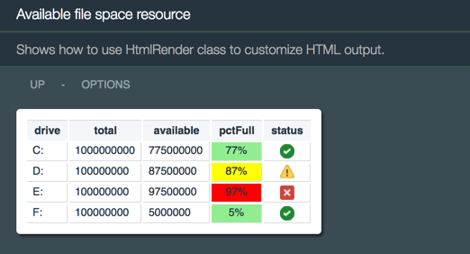
Annotation can be applied to POJO classes and bean properties. - Several new properties for customizing parts of the HTML page:
HtmlDocSerializerContext.HTMLDOC_title HtmlDocSerializerContext.HTMLDOC_description HtmlDocSerializerContext.HTMLDOC_branding HtmlDocSerializerContext.HTMLDOC_header HtmlDocSerializerContext.HTMLDOC_nav HtmlDocSerializerContext.HTMLDOC_aside HtmlDocSerializerContext.HTMLDOC_footer HtmlDocSerializerContext.HTMLDOC_noResultsMessage HtmlDocSerializerContext.HTMLDOC_cssUrl HtmlDocSerializerContext.HTMLDOC_css HtmlDocSerializerContext.HTMLDOC_template
- New interface
HtmlDocTemplatethat allows full control over rendering of HTML produced byHtmlDocSerializer.
- New
@NamePropertyand@ParentPropertycan now be applied to fields.- New properties on
BeanContext:BEAN_includeProperties BEAN_excludeProperties
- New annotation property:
@BeanProperty(format) .
org.apache.juneau.rest
- MAJOR enhancements made to the REST API.
-
The
RestRequestclass functionality has been broken up into the following functional pieces to reduce its complexity:RestRequest.getBody()- The request body.RestRequest.getHeaders()- The request headers.RestRequest.getQuery()- The request query parameters.RestRequest.getFormData()- The request form data parameters.RestRequest.getPathMatch()- The path variables and remainder.
-
The un-annotated parameter types that can be passed in through REST Java methods has been significantly expanded.
For reference, the previous supported types were:RestRequest- The request object.HttpServletRequest- The superclass ofRestRequest .RestResponse- The response object.HttpServletResponse- The superclass ofRestResponse .
Accept AcceptCharset AcceptEncoding AcceptLanguage Authorization CacheControl Connection ContentLength ContentType Date Expect From Host IfMatch IfModifiedSince IfNoneMatch IfRange IfUnmodifiedSince MaxForwards Pragma ProxyAuthorization Range Referer TE UserAgent Upgrade Via Warning TimeZoneInputStreamServletInputStreamReaderOutputStreamServletOutputStreamWriterResourceBundle- Client-localized resource bundle.MessageBundle- A resource bundle with additional features.Locale- Client locale.RequestHeaders- API for accessing request headers.RequestQuery- API for accessing request query parameters.RequestFormData- API for accessing request form data.RequestPath- API for accessing path variables.RequestBody- API for accessing request body.HttpMethod- The method name matched (when using@RestMethod (name="*" )Logger- The logger to use for logging.JuneauLogger- Logger with additional features.RestContext- The resource read-only context.Parser- The parser matching the request content type.Swagger- The auto-generated Swagger doc.ConfigFile - The external config file for the resource.
/** Old way */ @RestMethod (name="*" , path="/example1/{a1}/{a2}/{a3}/*" )public String example1(@Method String method,@Path ("a1" ) String a1,@Path ("a2" )int a2,@Path ("a3" ) UUID a3,@Query ("p1" )int p1,@Query ("p2" ) String p2,@Query ("p3" ) UUID p3,@Header ("Accept-Language" ) String lang,@Header ("Accept" ) String accept )/** New way */ @RestMethod (name="*" , path="/example2/{a1}/{a2}/{a3}/*" )public String example2( HttpMethod httpMethod, RequestPathParams pathParams, RequestQuery query, AcceptLanguage acceptLanguage, Accept accept ) -
A new annotation
@RestResource(paramResolvers) } that allows you to define your own custom Java method parameter resolvers. -
Fixed bug where Writer returned by
RestResponse.getWriter()was not being flushed automatically at the end of the HTTP call. -
New annotations added to
@RestMethod:defaultQuery()defaultFormData()bpIncludes() bpExcludes()
-
Default values on header, query, and form-data annotations:
@Header(def) - Default header value.@Query(def) - Default query parameter value.@FormData(def) - Default form data parameter value.
-
New attributes on
@RestResource :serializerListener() parserListener() widgets() swagger() htmldoc()
-
New attributes on
@RestMethod: - New string vars:
-
New methods on
RestConfig :setHtmlTitle(String) setHtmlDescription(String) setHtmlBranding(String) setHtmlHeader(String) setHtmlLinks(String) setHtmlNav(String) setHtmlAside(String) setHtmlFooter(String) setHtmlCss(String) setHtmlCssUrl(String) setHtmlNoWrap(boolean) setHtmlNoResultsMessage(String) setHtmlTemplate(Class) setHtmlTemplate(HtmlDocTemplate) addWidget(Class)
-
New methods on
RestResponse:setHtmlTitle(Object) setHtmlDescription(Object) setHtmlBranding(Object) setHtmlHeader(Object) setHtmlLinks(Object) setHtmlNav(Object) setHtmlAside(Object) setHtmlFooter(Object) setHtmlCss(Object) setHtmlCssUrl(Object) setHtmlNoWrap(boolean) setHtmlNoResultsMessage(Object) setHtmlTemplate(Class) setHtmlTemplate(HtmlDocTemplate)
-
&plainText=true parameter now works on byte-based serializers by converting the output to hex. -
New classes for widget support:
WidgetPoweredByJuneauWidget ContentTypeLinksColumnWidget ContentTypeLinksRowWidget QueryWidget
-
devops.css cleaned up. -
Removed a bunch of URL-related methods from
RestRequest. These all have equivalents inRestRequest.getUriContext(). - New annotation attributes:
org.apache.juneau.rest.client
-
New
org.apache.juneau.remoteable.Path annotation for specifying path variables on remoteable interfaces. -
New
@RequestBean annotation for specifying beans with remoteable annotations defined on properties. -
The following annotations (and related methods on RestCall) can now take
NameValuePairs and beans as input when using"*" as the name.org.apache.juneau.remoteable.FormData ,org.apache.juneau.remoteable.FormDataIfNE ,org.apache.juneau.remoteable.Query ,org.apache.juneau.remoteable.QueryIfNE ,org.apache.juneau.remoteable.Header ,org.apache.juneau.remoteable.HeaderIfNE
org.apache.juneau.microservice
org.apache.juneau.examples.rest
- Many code enhancements make to examples to reflect new functionality.
- All pages now render aside comments to help explain what feature they're trying to explain using the
new features that allow you to customize various elements of the page.

6.3.1 (Aug 1, 2017)
Juneau 6.3.1 is a minor release.
org.apache.juneau
-
PojoQueryimprovements. -
New
RemoteMethod.returns() annotation.
Allows you to specify whether the remote method returns the HTTP body or status code. -
Fixed bugs with
BEAN_includeProperties andBEAN_excludeProperties settings. -
New/modified settings in
HtmlDocSerializerContext :HTMLDOC_script HTMLDOC_style - WasHTMLDOC_css .HTMLDOC_stylesheet - WasHTMLDOC_cssUrl . Now an array.
-
New
ResourceFinder utility class. Allows you to search for resources up the parent hierarchy chain. Also allows you to search for localized resources. -
Eliminated the following properties from
HtmlDocSerializerContext :HTMLDOC_title ,HTMLDOC_description ,HTMLDOC_description
See below on changes to simplify HTML headers. -
Varimplementations can now throw exceptions and will be converted to""{exceptionMessage}" values.
org.apache.juneau.rest
-
New 'light' stylesheet:

Compared with previous 'devops':
For those nolstalgic for old times, there's also 'original':
-
Simplified the stylesheets and HTML code.
For example, the nav links are now an ordered list of elements which makes rendering as as side-bar (for example) easier to do in CSS. -
Modifications to the following
@HtmlDoc annotations:navlinks()- Now an array of strings instead of a JSON object. Simplified syntax.
For example:
Previous syntax will still work, but you're encouraged to use the simplified syntax.// Old syntax htmldoc=@HtmlDoc ( links="{" +"up:'request:/..'," +"options:'servlet:/?method=OPTIONS'," +"contentTypes:'$W{ContentTypeMenuItem}'," +"styles:'$W{StyleMenuItem}'," +"source:'$C{Source/gitHub}/org/apache/juneau/examples/rest/PetStoreResource.java'" +"}" )// New syntax htmldoc=@HtmlDoc ( navlinks={"up: request:/.." ,"options: servlet:/?method=OPTIONS" ,"$W{ContentTypeMenuItem}" ,"$W{StyleMenuItem}" ,"source: $C{Source/gitHub}/org/apache/juneau/examples/rest/PetStoreResource.java" } )- Several annotations are now arrays of strings instead of simple strings.
Values are simply concatenated with newlines which makes multi-line values cleaner.
Additionally, the
"INHERIT" string literal can be used to combine the value with the value defined on the servlet or parent class. Links can also be inserted at specific index positions.
-
Improvements made to the
WidgetAPI.-
You can now add arbitrary CSS and Javascript along with your widgets through new methods:
Widget#getHtml(RestRequest) Widget#getScript(RestRequest) Widget#getStyle(RestRequest)
-
Declaration of widgets moved to
@HtmlDoc(widgets)instead of separately on@RestResource and@RestMethod annotations. -
Widget.getName()now defaults to the simple class name.
So now you can just refer to the class name:"$W{ContentTypeMenuItem}" . -
Renamed widgets:
PoweredByApacheWidget ->PoweredByApache PoweredByJuneauWidget ->PoweredByJuneau
-
New
MenuItemWidgetcan be used as a starting point for creatint pull-down menu items. -
New
ContentTypeMenuItemwidget that provides a pull-down menu with hyperlinks for all supported languages for that page:
-
Improved
QueryMenuItemwidget that provides a pull-down menu of a search/view/order-by/page form:
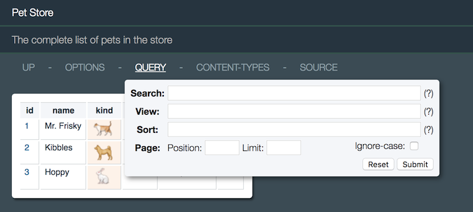
Fields are now pre-filled with current query parameters. -
New
ThemeMenuItemwidget that provides a pull-down menu with hyperlinks to show the content in the default stylesheets:
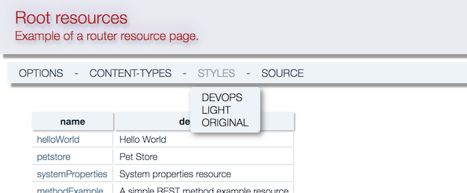
-
You can now add arbitrary CSS and Javascript along with your widgets through new methods:
-
New/modified annotations on
@HtmlDoc:style()- Renamed fromcss() .stylesheet()- Renamed fromcssUrl() .
Can now be a comma-delimited list of URLs.script()- Add arbitrary Javascript to page header.
-
Bug fix with
@HtmlDoc(nowrap)so that the setting only applies to the data contents, not the whole page. -
Two convenience methods added to
RestRequest: -
Annotations added:
@RestResource(siteName) @RestResource(flags) @RestMethod(flags)
-
Eliminated the
@RestResource(stylesheet) annotation. It's no longer needed now that you can easily specify styles via@Htmldoc . -
Eliminated the following annotations since they are now redundant with
@HtmlDoc(header):title() description() branding()
BasicRestServletclass defines the following default header that can be easily overridden:htmldoc=
Note that the subtitle first tries using the method summary and then the servlet description.@HtmlDoc ( header={"<h1>$R{resourceTitle}</h1>" ,"<h2>$R{methodSummary,resourceDescription}</h2>" ,"<a href='http://juneau.apache.org'><img src='$U{servlet:/htdocs/juneau.png}' style='position:absolute;top:5;right:5;background-color:transparent;height:30px'/></a>" } ) -
New
$Fvariable resolver for resolving the contents of files in the classpath.
TheDockerRegistryResource examples shows how it can be used to pull in a localized file from the classpath to populate the aside section of a page.htmldoc=
@HtmlDoc (// Pull in aside contents from file. aside="$F{resources/DockerRegistryResourceAside.html}" ) -
New
ReaderResource.toCommentStrippedString() method. -
The
bpIncludes() andbpExcludes() annotations on@RestMethod has been replaced with the following: -
Two new variables added to
$R variable:"$R{servletClass}" ,"$R{servletClassSimple}"
org.apache.juneau.rest.examples
- Added CONTENT-TYPE and STYLES menu items to most pages.
- Added improved QUERY menu item to PetStore page.
6.4.0 (Oct 5, 2017)
The major change in this release is the project structure.
The library now consists of the following artifacts found in the Maven group
| Category | Maven Artifacts | Description | Prereqs |
|---|---|---|---|
| Juneau Core | juneau-marshall | Serializers and parsers for:
|
|
| juneau-marshall-rdf |
Serializers and parsers for:
|
|
|
| juneau-dto |
Data Transfer Objects for:
|
|
|
| juneau-svl | Simple Variable Language API |
|
|
| juneau-config | Configuration file API |
|
|
| Juneau REST | juneau-rest-server | REST Servlet API |
|
| juneau-rest-server-jaxrs | Optional JAX-RS support |
|
|
| juneau-rest-client | REST Client API |
|
|
| Juneau Microservice | juneau-microservice-server | REST Microservice Server API |
|
| juneau-microservice-template | Developer template project |
|
|
| Examples | Core code examples | ||
| REST code examples | |||
| Juneau All |
Combination of the following:
|
|
juneau-marshall
-
Improvements to swap support.
- New
@Swapannotation.
Replaces the@Pojo and@BeanProperty(swap) annotations. - Support for per-media-type swaps.
Programmatic example:@Swap (MyJsonOnlySwap.class )public class MyPojo {}public class MyJsonOnlySwapextends PojoSwap<MyPojo,String> {public MediaType[] forMediaTypes() {return MediaType.forStrings ("*/json" ); }public String swap(BeanSession session, MyPojo o)throws Exception {return "It's JSON!" ; }
Annotated example:@Swap (impl=ToStringSwap.class , mediaTypes="*/json" )public class MyBean { ... }public class ToStringSwapextends PojoSwap<Object,String> {public String swap(BeanSession session, Object o)throws Exception {return o.toString(); } } - Support for templated swaps which provide additional context information for a swap.
The following is an example of a templated swap class used to serialize POJOs to HTML using FreeMarker:// Our abstracted templated swap class. public abstract class FreeMarkerSwapextends PojoSwap<Object,Reader> {public MediaType[] forMediaTypes() {return MediaType.forStrings ("*/html" ); }public Reader swap(BeanSession session, Object o, String template)throws Exception {return getFreeMarkerReader(template, o);// Some method that creates raw HTML. } }@Swap (impl=FreeMarkerSwap.class , template="MyPojo.div.ftl" )public class MyPojo {} - New
@Swapsannotation for defining multiple swaps against the same POJO when they're differentiated by media types:@Swaps ( {@Swap (MyJsonSwap.class ),@Swap (MyXmlSwap.class ),@Swap (MyOtherSwap.class ) } )public class MyPojo {}
- New
-
New
Surrogateinterface for identifying surrogate classes. -
Serializers can now serialize to
StringBuilders. -
Serializers now serialize the contents of
ReadersandInputStreamsdirectly to the output stream or writer.
When used with conjunction withPojoSwaps , this can be used to provide customized output for specific content types.@Pojo (swap=MyBeanSwap.class )public class MyBean {...}public class MyBeanSwapextends PojoSwap<MyBean,Object> {public Object swap(BeanSession session, MyPojo o)throws Exception { MediaType mt = session.getMediaType();if (mt.hasSubType("json" ))return new StringReader("{foo:'bar'}" );// Custom JSON output return o;// Otherwise treat as normal bean } }// Produces "{foo:'bar'}" String json = SimpleJsonSerializer.DEFAULT .toString(new MyBean());
This feature helps with the implementation of language-agnostic template support such as for using FreeMaker to serialize POJOs to HTML. -
SerializerSessionandParserSessionobjects are now reusable if used within the same thread.
This is mostly an internal change and doesn't affect the existing APIs.// Old way (still works) JsonSerializer.DEFAULT .serialize(writer1, pojo1); JsonSerializer.DEFAULT .serialize(writer2, pojo2);// Same, but using a session object SerializerSession session = JsonSerializer.DEFAULT .createSession();try { session.serialize(writer1, pojo1); session.serialize(writer2, pojo2); }finally { session.close(); } -
PojoSwap.swap(BeanSession,Object)andPojoSwap.unswap(BeanSession,Object,ClassMeta)can now throw arbitrary exceptions instead of having to wrap them inSerializeException /ParseException . -
New
CalendarUtilsclass that encapsulates serialization/parsing logic fromCalendarSwapandDateSwap. -
New annotation
Html.anchorText(). -
New methods on
ObjectList: -
New methods on
ObjectMap: -
New methods on
PojoRest: -
Fixed bug where
Session.getMediaType()wasn't returning a value. -
Eliminated the
@Consumes and@Produces annotations.
The supported media types are now passed in through the constructors.
This was changed to eliminate a performance issue where a field could not be set as final because the call togetClass() to retrieve the annotation value could not be called before calling thesuper () -
New class:
PojoMerge -
New doc:
2.6.2 - @Pojo annotation -
New doc:
2.6.5 - Serializing Readers and InputStreams
juneau-dto
-
HtmlElementMixed.children(Object...)can now take in collections of objects. -
The DTO beans can now be serialized to strings of their typical language by calling the
toString() method.
For example,Swagger.toString() produces JSON and the HTML5Form.toString() produces HTML.
juneau-rest-server
-
Revamped and simplified servlet and REST-call lifecycle handling through new
@RestHookannotation.- The
RestServlet.init(ServletConfig)method is now final and can no longer be extended.
Instead, useHookEvent.INITorHookEvent.POST_INITfor initialization. - The following methods on
RestServlethave been removed:init(RestConfig) - UseHookEvent.INITinstead.onSuccess(RestRequest, RestResponse, long) - UseHookEvent.END_CALLinstead.onPreCall(RestRequest) - UseHookEvent.PRE_CALLinstead.onPostCall(RestRequest, RestResponse) - UseHookEvent.POST_CALLinstead.
- The
-
Simplified
MenuItemWidget.
Exposes an abstract methodgetContent(RestRequest) that can return raw HTML via readers or char-sequences, or any other object (such as HTML5 beans) that will get converted to HTML usingHtmlSerializer.DEFAULT. -
RestResourceResolverinstances are now inherited from parent resources to child resources unless explicitly overridden at the child level.
It's also been changed to an interface. - New annotations on
@RestResource :resourceResolver()
Allows you to specify a resource resolver on the servlet context to make it easier to work with dependency injection frameworks.contextPath() -
Allows you to override the context path value inherited from the servlet container.allowHeaderParams() -
Replaces theRestContext.REST_allowHeaderParams setting.allowMethodParam() -
Replaces theRestContext.REST_allowMethodParam setting.allowBodyParam() -
Replaces theRestContext.REST_allowBodyParam setting.renderResponseStackTraces() -
Replaces theRestContext.REST_xxx setting.useStackTraceHashes() -
Replaces theRestContext.REST_useStackTraceHashes setting.defaultCharset() -
Replaces theRestContext.REST_defaultCharset setting.paramFormat() -
Replaces theRestContext.REST_paramFormat setting.
- New annotations on
@RestMethod:defaultCharset()-
Replaces theRestContext.REST_defaultCharset setting.RestMethod.paramFormat() -
Replaces theRestContext.REST_paramFormat setting.
- The following implementation classes can now be defined as non-static inner classes of servlets/resources:
-
New tooltip template:
Tooltip -
New dark theme:
-
Stylesheet selection now stored in HTTP session when passed in via
?stylesheet query parameter. -
New doc:
Lifecycle Hooks -
Eliminated the
RestServletJenaDefault class to remove the Jena dependency class on thejuneau-rest-server artifact.
It's simple enough to simply extendBasicRestServlet and add the RDF serializers and parsers.
juneau-microservice
-
The microservice has been significantly modified to be configured via a
jetty.xml file for maximum flexibility instead of the hodge-podge of support in the config file.
Top-level servlets should now be defined in the providedjetty.xml file. -
New methods on
RestMicroservice :addServlet(Servlet,String) addServletAttribute(String,Object) getServer() getInstance() getPort() getContextPath() getProtocol() getHostName()
-
New methods on
Microservice: -
New class
JettyLogger for directing Jetty logging to the java.util.logging framework. -
New class
DebugResource for viewing and generating Jetty thread dumps through REST calls.
org.apache.juneau.rest.examples
-
New example of adding a menu-item widget to the Pet Store resource (including tooltips):
7.0.0 (Oct 25, 2017)
This release ups the Java prerequisite to Java 7.
juneau-marshall
-
New class
HttpMethodNamewith valid static string HTTP method names.
juneau-dto
-
Class
org.apache.juneau.dto.Link renamed toLinkString. Helps avoid confusion since there are other Link classes in the library.
juneau-rest-server
-
Annotation
@HtmlDoc (links)navlinks. -
New annotation
@HtmlDoc(head).
Allows you to specify arbitrary HTML content in the<head> section of the page. -
Removed annotation
@HtmlDoc (favIcon)
This was a discouraged way of defining fav-icons anyway, and with the addition of@HtmlDoc (head)head={
"<link rel='icon' href='$U{servlet:/htdocs/juneau.png}'/>" } -
Removed several of the HTMLDOC-related methods from the
RestResponse/RestConfig/RestContext classes and moved it into the newHtmlDocBuilderclass.
7.0.1 (Dec 24, 2017)
This release is a minor update. It includes the following prereq updates:
- Apache HttpClient: 4.5.3 to 4.5.4
- Eclipse Jetty: 9.4.6.v20170531 to 9.4.8.v20171121
juneau-marshall
- New static
create() methods for builders on serializers and parsers.
This simplifies the syntax of creation of serializers and parsers by scratch.// Old way JsonSerializer s1 =new JsonSerializerBuilder().ws().build();// New way JsonSerializer s2 = JsonSerializer.create ().ws().build();
The same static create methods have also been added to the following classes:SerializerGroup.create()ParserGroup.create()EncoderGroup.create()RestClient.create()ConfigFile.create()
-
The order of the parameters in
SerializerSession.serialize(Object,Object)has been change to matchSerializer.serialize(Object,Object). - Fixed some bugs in the XML parser related to whitespace and comments.
juneau-svl
- New methods on
Varclass to restrict when nested and embedded variables are resolved.
juneau-rest-server
-
New
@RestResource(maxInput) and@RestMethod(maxInput)for alleviating potential DoS attacks.
juneau-microservice-server
-
New pluggable console commands.
When you start up the microservice, you'll now see the following:Running class 'RestMicroservice' using config file 'examples.cfg'. Server started on port 10000 List of available commands: exit -- Shut down service restart -- Restarts service help -- Commands help echo -- Echo command > help help NAME help -- Commands help SYNOPSIS help [command] DESCRIPTION When called without arguments, prints the descriptions of all available commands. Can also be called with one or more arguments to get detailed information on a command. EXAMPLES List all commands: > help List help on the help command: > help help >
Commands are pluggable and extensible through the config file.
#======================================================================================================================= # Console settings #======================================================================================================================= [Console] enabled =true # List of available console commands. # These are classes that implements ConsoleCommand that allow you to submit commands to the microservice via # the console. # When listed here, the implementations must provide a no-arg constructor. # They can also be provided dynamically by overriding the Microservice.createConsoleCommands() method. commands =org.apache.juneau.microservice.console.ExitCommand, org.apache.juneau.microservice.console.RestartCommand, org.apache.juneau.microservice.console.HelpCommand - New classes:
- New methods on
MicroservicestartConsole()createConsoleCommands() getConsoleReader()getConsoleWriter()
- Console input reader and output writer can now be overridden.
- Console strings are now internationalized.
7.1.0 (Mar 08, 2018)
Version 7.1.0 is a major update with major implementation refactoring across all aspects of the product.
juneau-marshall
-
Significant improvements made to the internals of the Serializer and Parser classes.
-
Caching improvements on serializers and parsers have reduced execution time of the core
JUnits by approximately 1/3.
The 17000+ JUnit tests now execute in less than 10 seconds and have a cache-reuse hit rate of 98% (164104 serializers/parsers/bean-contexts retrieved, but only 1801 created from scratch). -
All the various separate
Context classes (e.g.JsonSerializerContext ) have been folded into their respective serializer or parser classes (e.g.JsonSerializer ).
Additionally, these classes are their own bean contexts.
For example, the class hierarchy ofJsonSerializer is now: AllContext objects are thread-safe and read-only. -
Session objects also now have a consistent class hierarchy.
For example, the class hierarchy ofJsonSerializerSession is now: Session objects are transient objects that live for the duration of a single parse. -
Builder objects also now have a consistent class hierarchy.
For example, the class hierarchy ofJsonSerializerBuilder is now: Builder objects are used for building up and creatingContext objects. -
The
PropertyStoreclass has been completely rewritten. It is now a read-only configuration store build using thePropertyStoreBuilderclass.
The previousPropertyStore class was overly-complicated with many read/write locks to ensure thread-safety.
The new design shifts to a builder-based model with read-onlyPropertyStore objects that can be used as hash keys.
-
Caching improvements on serializers and parsers have reduced execution time of the core
JUnits by approximately 1/3.
-
Improvements to the HTTP-Part APIs.
The existingPartSerializer /PartParser classes have been replaced with the following all located in the neworg.apache.juneau.httppart package:org.apache.juneau.httppartHttpPartTypeHttpPartSerializerUonPartSerializer SimpleUonPartSerializer SimplePartSerializer
HttpPartParserUonPartParser SimplePartParser
-
ContextBuilder.property(String,Object) renamed toContextBuilder.set(String,Object). -
ResourceFinder class has been replaced with the following: -
New methods on
SerializerSession: -
New methods on
ParserSession: -
New
Parser.PARSER_unbufferedsetting allows you to disable internal buffering on the JSON and UON parsers so that they can be used to read continous streams of objects. -
New
JsonParser.JSON_validateEndandUonParser.UON_validateEndsettings allow you to control whether we validate that there is no garbage at the end of the parsed input. -
New
Parser.PARSER_autoCloseStreamssetting allows input streams and readers passed into parsers to be automatically closed after parsing. -
Syntax changed on unswap method on
Surrogateclasses.
It's now a regular method instead of a static method. -
@Swapannotation can now be used withSurrogateclasses. - New support for POJO Builders.
juneau-svl
- New variables:
-
Variables moved from
juneau-microservice :
juneau-config
-
The Config API has been completely revamped.
New features include:- Support for pluggable storage.
- File-system watcher integration support.
Changes made to file system files now automatically reflected in configurations and interface proxies. - New builder-based design.
juneau-dto
-
Enhancements to Swagger DTO:
- New methods for setting and retrieving properties via name:
-
Support for setting non-standard fields such as
"$ref" via getter and setter above. - Setter methods that take in beans and collections of beans can now take in JSON strings.
juneau-rest-server
-
RestServletDefault renamed toBasicRestServlet. -
RestServletGroupDefault renamed toBasicRestServletGroup. -
The
"$R{...}" variable has been split into the following:"$RA{key1[,key2...]}" -RequestAttributeVar, first non-null value returned byHttpServletRequest.getAttribute(String) ."$RF{key1[,key2...]}" -RequestFormDataVar, first non-null value returned byRestRequest.getFormData(String)."$RH{key1[,key2...]}" -RequestHeaderVar, first non-null value returned byRestRequest.getHeader(String)."$RI{key1[,key2...]}" -RestInfoVar, first non-null value returned byRestRequest.getInfoProvider().
The possible values are:"contact" - Value returned byInfo.getContact()"description" - Value returned byRestInfoProvider.getDescription(RestRequest)"externalDocs" - Value returned bySwagger.getExternalDocs()"license" - Value returned byInfo.getLicense()"methodDescription" - Value returned byRestInfoProvider.getMethodDescription(Method,RestRequest)"methodSummary" - Value returned byRestInfoProvider.getMethodSummary(Method,RestRequest)"siteName" - Value returned byRestInfoProvider.getSiteName(RestRequest)"tags" - Value returned bySwagger.getTags()"termsOfService" - Value returned byInfo.getTermsOfService()"title" - SeeRestInfoProvider.getTitle(RestRequest)"version" - SeeInfo.getVersion()
"$RP{key1[,key2...]}" -RequestPathVar, first non-null value returned byRestRequest.getPath(String)."$RQ{key1[,key2...]}" -RequestQueryVar, first non-null value returned byRestRequest.getQuery(String)"$R{key1[,key2...]}" -RequestVar, first non-null other request variable.
The possible values are:"contextPath" - Value returned byRestRequest.getContextPath()"method" - Value returned byRestRequest.getMethod()"methodDescription" - Value returned byRestRequest.getMethodDescription()"methodSummary" - Value returned byRestRequest.getMethodSummary()"pathInfo" - Value returned byHttpServletRequestWrapper.getPathInfo()"requestParentURI" - Value returned byUriContext.getRootRelativePathInfoParent()"requestURI" - Value returned byHttpServletRequestWrapper.getRequestURI()"resourceDescription" - Value returned byRestRequest.getResourceDescription()"resourceTitle" - SeeRestRequest.getResourceTitle()"servletParentURI" - Value returned byUriContext.getRootRelativeServletPathParent()"servletPath" - SeeRestRequest.getServletPath()"servletURI" - SeeUriContext.getRootRelativeServletPath()"siteName" - SeeRestRequest.getSiteName()
-
Refactored the
RestConfig class intoRestContextBuilder.
Settings onRestContextobjects can now be set declaratively through the following new properties:REST_allowHeaderParamsREST_allowBodyParamREST_allowedMethodParamsREST_renderResponseStackTracesREST_useStackTraceHashesREST_defaultCharsetREST_maxInputREST_paramResolversREST_convertersREST_guardsREST_responseHandlersREST_defaultRequestHeaders REST_defaultResponseHeaders REST_producesREST_consumesREST_clientVersionHeaderREST_resourceResolverREST_loggerREST_callHandlerREST_infoProviderREST_pathREST_contextPath REST_staticFilesREST_staticFileResponseHeadersREST_classpathResourceFinderREST_useClasspathResourceCachingREST_widgetsREST_mimeTypes
-
Support for static files has been simplified and improved.
- Syntax on
@RestResource(staticFiles) has been simplified, and now allows you to specify response headers in the strings. - Response headers for static files can also be configured through
REST_staticFileResponseHeaders. - Static file in-memory caching now configurable through
REST_useClasspathResourceCaching. - Static file retrieval can be customized through
REST_classpathResourceFinder
- Syntax on
-
Eliminated the
RestMatcherReflecting class.
You can now simply create aRestMatcherthat has a public constructor that takes in the server and method arguments. -
@RestResource.allowMethodParam renamed toRestResource.allowedMethodParams . -
@RestMethod.serializersInherit and@RestMethod.parsersInherit replaced with simplified@RestMethod(inherit) . -
Changes to
RequestFormData:addDefault(Map)takes in aMap<String,Object> instead ofMap<String,String> .
-
Changes to
RequestHeaders:addDefault(Map)takes in aMap<String,Object> instead ofMap<String,String> .
-
Changes to
RequestQuery:addDefault(Map)takes in aMap<String,Object> instead ofMap<String,String> .
-
Changes to
RestContext:getResource(String,Locale) renamed togetClasspathResource(String,Locale) getResourceAsString(String,Locale) renamed togetClasspathResourceAsString(String,Locale) getResource(Class,MediaType,String,Locale) renamed togetClasspathResourceAsString(Class,MediaType,String,Locale) - New method
getClasspathResource(Class,String,Locale) . - New method
getClasspathResourceAsString(Class,String,Locale) . - New method
getClasspathResource(Class,Class,MediaType,String,Locale) . RestContext.getDefaultRequestHeaders() returns aMap<String,Object> instead ofMap<String,String> .RestContext.getDefaultResponseHeaders() returns aMap<String,Object> instead ofMap<String,String> .
-
Changes to
RestRequest:getSupportedMediaTypes() replaced withgetConsumes()andgetProduces().getReaderResource(String,boolean,MediaType) renamed togetClasspathReaderResource(String,boolean,MediaType) getReaderResource(String,boolean) renamed togetClasspathHttpResource(String,boolean)getReaderResource(String) renamed togetClasspathHttpResource(String)
-
Changes to
@RestResource - New
mimeTypes() annotation.
- New
-
Changes to
@RestMethod:- New
consumes()andproduces()for overriding the supported media types inferred from the serializers and parsers.
- New
-
RestCallHandler split up intoRestCallHandlerandBasicRestCallHandler -
RestInfoProvider split up intoRestInfoProviderandBasicRestInfoProvider -
RestLogger split up intoRestLogger,BasicRestLoggerandNoOpRestLogger -
RestResourceResolverSimple renamed toBasicRestResourceResolver - Introduced the following classes that helps make the code more understandable:
-
Eliminated the
@Messages and@Properties REST java method parameter annotations.
These aren't needed anymore since you can just pass inMessageBundle andRestRequestProperties as unannotated parameters. -
Revamped the
RestInfoProviderclass. -
New builder classes:
ReaderResourceBuilder StreamResourceBuilder
-
RestResponse.getNegotiatedOutputStream()now returns aFinishableServletOutputStream andRestResponse.getNegotiatedWriter()now returns aFinishablePrintWriter that allows you to finish the output without closing the stream.
TheDefaultHandlerclass now callsfinish() instead ofclose() on the stream. -
Added the following annotations to the
BasicRestServletclass (which were previously defined on theResource class):@RestResource ( htmldoc=@HtmlDoc ( navlinks={"up: request:/.." ,"options: servlet:/?method=OPTIONS" }, stylesheet="$C{REST/stylesheet,servlet:/styles/devops.css}" ),// Optional external configuration file. config="$S{juneau.configFile}" )
juneau-rest-client
-
New configuration property
RestClient.RESTCLIENT_queryand builder methodRestClientBuilder.query(String,Object). -
API changes to replace
PartSerializer withHttpPartSerializer.
The default value is nowSimpleUonPartSerializer which will serialize strings as plain-text and collections/arrays as comma-delimited lists.
We decided to change the default behavior in favor of practicality over purity. -
New methods on
RestCallclass: -
RestCallandRestClientnow implement theCloseable interface.
juneau-microservice
-
Resource andResourceGroup classes removed.BasicRestServletandBasicRestServletGroupcan be used instead. -
ResourceJena andResourceJenaGroup classes renamed toBasicRestServletJena andBasicRestServletJenaGroup .
7.2.0 (Sept 25, 2018)
7.2.0 is a major release that introduces several significant new features:
- OpenAPI part serializing and parsing with full support for OpenAPI validation of input and output in the REST servlet and client APIs.
- Swagger UI.
- New HTTP-Part annotations that are applicable to both the servlet and client APIs.
- Serverless servlet and client unit testing.
- Simplified UI customization.
- Marshalls that combines serializers and parsers into a single API.
juneau-marshall
-
The REST client
@Remoteable annotations and REST server@RemoteMethod annotations which used to be in separate packages in the client and server projects have been combined into a single set of annotations in theorg.apache.juneau.http.annotationpackage.
This fixes a long-standing problem where it was easy to mix up using client-side annotations in server-side code, and vis-versa.
Additionally, much work has been done on these annotations to add support for Swagger-style validations and documentation.
These are used with new Swagger schema/documentation annotations to produce schema-based serialization/parsing/validation and auto-generated Swagger documentation:
Additionally, the@Remoteable annotation has been split into the following two annotations:RemoteInterface- Used for remote proxy interfaces served up throughRemoteInterfaceServlet or REST"PROXY" methods.
Defaults to"POST" with method signatures as paths.RemoteResource - Used for 3rd-party REST interfaces.
Defaults to"GET" with standardized naming conventions for paths.
-
Support for multi-valued parameters as maps or beans on server-side annotations (it was previously supported on client-side):
@Query ("*" )@FormData ("*" )@Header ("*" )@Path ("*" ) -
Support for server-side use of
@Request annotation on@RestMethod annotations and newRestRequest.getRequest(RequestBeanMeta)method. -
Fixed bug where
@Bean (typeName) - Fixed bug where HTML-Schema was not being rendered correctly.
- Support for POJO examples:
- Fixed bug where parsers could report the wrong line number when an error occurred.
-
A runtime exception is now thrown if you define a
@BeanProperty(name) but forget to add it to your@Bean (properties) -
@Html (asXml)@Html (asPlainText)@Html(format). -
HTML serializer will now serializers beans and maps as HTML even when those objects are embedded
within an object with
@Html (format=XML )
The previous behavior was to serialize it as XML. - New settings for binary-based serializers and parsers:
- Added support for auto-detection of fluent-style setters:
-
The
SERIALIZER_abridged setting has been replaced withSERIALIZER_addRootType -
The
SERIALIZER_addBeanTypeProperties setting has been replaced withSERIALIZER_addBeanTypesand is disabled by default. -
Parse exception messages are now clearer and include code snippets of where a parse exception occurred:
org.apache.juneau.parser.ParseException: Expected '[' at beginning of JSON array. At line 80, column 20. While parsing into: currentClass: List<String> currentProperty: required: java.util.List, field=[null], getter=[public java.util.List org.apache.juneau.dto.swagger.SchemaInfo.getRequired()], setter=[public org.apache.juneau.dto.swagger.SchemaInfo org.apache.juneau.dto.swagger.SchemaInfo.setRequired(java.util.Collection)] ---start-- 0075: "name": "body", 0076: "description": "Pet object that needs to be added to the store", 0077: "required": true, 0078: "schema": { 0079: "required": true, 0080: } 0081: } 0082: ], 0083: "responses": { 0084: "405": { 0085: "description": "Invalid input" ---end---
-
New property
Parser.PARSER_debugOutputLinesfor controlling how many input lines are added to the exception message above. -
New property
BeanContext.BEAN_useEnumNamesfor controlling whether enums are serialized using their name or thetoString() method. -
New property
BeanContext.BEAN_examplesfor defining examples of POJOs. -
New
@Exampleannotation for defining examples of POJOs.
Used heavily in JSON-Schema support. -
If a bean has both a
getX() andisX() method, thegetX() method takes precedence.
The previous behavior was arbitrary. -
Significant improvements to JSON-Schema serialization support.
- New
@JsonSchema annotation.
- New
-
Fixed
NullPointerException when serializing beans with a dyna-property (i.e.@Bean ("*" )null value. -
New option for dyna-property (i.e.
@Bean ("*" )
See new options #4 onBeanProperty.name() -
New formats for the
@Html(format)annotation:HtmlFormat.HTML_CDC- Format collections as comma-delimited lists.HtmlFormat.HTML_SDC- Format collections as space-delimited lists.
-
Serializers now allow for q-values on the media types they handle.
For example, the accept media type onJsonSerializer.Simple is"application/json+simple,application/json;q=0.9" .
This means the serializer CAN handle requests for"application/json" if no other serializers provide a better match. -
New methods for creating unmodifiable
ObjectMapsandObjectLists. -
The
JsonSerializer.Simple class has been moved into the top-levelSimpleJsonSerializerclass. -
RDF serializer subclasses have been moved into top-level classes:
RdfSerializer.Xml ->RdfXmlSerializerRdfSerializer.XmlAbbrev ->RdfXmlAbbrevSerializerRdfSerializer.N3 ->N3SerializerRdfSerializer.NTriple ->NTripleSerializerRdfSerializer.Turtle ->TurtleSerializerRdfParser.Xml ->RdfXmlParserRdfParser.N3 ->N3ParserRdfParser.NTriple ->NTripleParserRdfParser.Turtle ->TurtleParser
-
New API for pairing serializers and parsers for simplified syntax:
Examples:
// Using instance. Json json =new Json(); MyPojo myPojo = json.read(string, MyPojo.class ); String string = json.write(myPojo);// Using DEFAULT instance. MyPojo myPojo = Json.DEFAULT .read(string, MyPojo.class ); String string = Json.DEFAULT .write(myPojo); - New/updated documentation:
juneau-dto
-
Fixed bug where Swagger
SchemaInfo.required(Object...)was defined as a boolean instead of a list of strings. -
Boolean attributes are now handled correctly for HTML5.
For example, callingnew Select().disabled(true )<select disabled='disabled'>
juneau-rest-server
- Auto-generated Swagger UI.
-
Simplified
@RestResource(swagger) and@RestMethod(swagger)annotations. -
Fixed bug in
UriResolver when request path info had special characters. -
Fixed bug where incorrect media type was being set on responses (e.g.
text/html+schema instead oftext/html for schema documents). -
The
RemoteableServlet class has been moved and renamed toRemoteInterfaceServlet . -
RemoteInterfaceServlet now provides a form page for invoking remote interface methods in a browser. -
Newlines were being stripped from
@HtmlDoc (script) -
New
@Responseannotation that can be applied to throwables thrown from REST methods and POJOs returned by REST methods to specify non-200 status return codes and descriptions in Swagger documentation. - Swagger fields added to the following annotations:
-
The
@PathRemainder annotation has been removed entirely.
Use@Path ("/*" ) -
"Helper" classes (i.e. reusable beans that can be returned by REST methods) have been moved to the following package with some new additions:
org.apache.juneau.rest.helperBeanDescriptionChildResourceDescriptionsReaderResource ReaderResourceBuilder SeeOtherRootResourceDescriptionStreamResource StreamResourceBuilder
- Predefined HTTP responses.
-
Predefined HTTP error throwables.
When added to REST Java methods, reflected in generated Swagger documentation.org.apache.juneau.rest.exceptionBadRequestConflictExpectationFailedFailedDependencyForbiddenGoneHttpVersionNotSupportedInsufficientStorageInternalServerErrorLengthRequiredLockedLoopDetectedMethodNotAllowedMisdirectedRequestNetworkAuthenticationRequiredNotAcceptableNotExtendedNotFoundNotImplementedPayloadTooLargePreconditionFailedPreconditionRequiredRangeNotSatisfiableRequestHeaderFieldsTooLargeServiceUnavailableTooManyRequestsUnauthorizedUnavailableForLegalReasonsUnprocessableEntityUnsupportedMediaTypeUpgradeRequiredUriTooLongVariantAlsoNegotiates
-
The
@HtmlDoc(nav)and@HtmlDoc(navlinks)can now both be used on the same annotation.
The contents ofnav() are free-form HTML that gets rendered immediately after the navigation links. -
The following new parameter types can be used on REST methods:
ReaderParser- The reader parser matching the request content type.InputStreamParser- The input stream parser matching the request content type.
-
The
$F variable can now be used as a initialization time variable.
For example, theAtomFeedResource example pulls a bean example from a file on the classpath:@RestResource ( path="/atom" , title="Sample ATOM feed resource" , properties={@Property (name=BEAN_examples , value="{'org.apache.juneau.dto.atom.Feed': $F{AtomFeedResource_example.json}}" ) }, ... )
It should be noted that you cannot use the$F variable to retrieve localized versions of files (since you're not within the scope of a client request. -
The
RestResource.nowrap() annotation has been changed to a string with a default value of"true" .
Having it as a string allows us to differentiate between a set and unset value so that it can be overridden in subclasses. -
The
Path.name()annotation parameter is now required. -
New class for mock unit testing of REST resources:
MockRest
-
@RestMethod (inherit)
These can be used in the following locations:RestResource.serializers() RestResource.parsers() RestResource.beanFilters() RestResource.pojoSwaps() RestMethod.serializers()RestMethod.parsers()RestMethod.beanFilters()RestMethod.pojoSwaps()
One advantage is that you now have control over the precedence of serializers and parsers by where you insert theInherit class. -
RequestPathMatch class has been renamed toRequestPath. -
@Requestobjects can now be used as parameters in@RestMethod methods.
Includes new methods onRestRequest: -
New methods added to
MenuItemWidgetto allow population of menu item content using Javascript and Ajax calls:MenuItemWidgetgetBeforeShowScript(RestRequest) getAfterShowScript(RestRequest)
-
New methods added to
Widgetto allow retrieving classpath resources with embedded SVL variables:WidgetloadHtmlWithVars(RestRequest,String) loadScriptWithVars(RestRequest,String) loadStyleWithVars(RestRequest,String)
-
New/updated documentation:
juneau-rest-server.UnitTesting -
The behavior of the default values for
RestMethod.name()andRestMethod.path()have changed.
If not specified, the values are inferred from the Java method name.
See Also: Overview > juneau-rest-server > @RestMethod -
RedirectToServletRoot class has been renamed toSeeOtherRoot. - New REST context settings:
-
New convenience annotations for specifying default
Accept andContent-Type headers:RestResource defaultAccept defaultContentType
RestMethod
juneau-rest-client
- Remote Resource interfaces support OpenAPI annotations.
-
Made improvements to the builder API for defining SSL support.
New methods added: -
Clients no longer have JSON defined as the default serializer and parser.
Instead, the clients can now be used with no serializer/parser if you're working with InputStreams/Readers or POJOs that can be converted to Strings and converted from Strings/InputStreams/Readers. - Methods added to client builder to make it easy to define the transport language:
-
New method added for allowing serverless client testing against REST interfaces.
RestClientBuildermockHttpConnection(MockHttpConnection)
-
Removed the deprecated
RestCall.execute() method.
UseRestCall.run(). -
RestCall.input(Object) method renamed toRestCall.body(Object)to match OpenAPI terminology. -
Made constructors on
RestClient andRestClientBuilder protected so that they can be subclassed. -
The
RestClient.getRemoteableProxy() methods have been split into separate methods for Remote Interfaces and Remote Resources:RestClientRestClient.getRemoteInterface(Class) RestClient.getRemoteInterface(Class,Object) RestClient.getRemoteInterface(Class,Object,Serializer,Parser) RestClient.getRemoteResource(Class)RestClient.getRemoteResource(Class,Object)RestClient.getRemoteResource(Class,Object,Serializer,Parser)
juneau-rest-microservice
-
The look-and-feel of an application is now controlled through the external configuration file and access to
CSS stylesheets in the working directory in a new folder called
files :
The default configuration is this:#======================================================================================================================= # REST settings #======================================================================================================================= [REST] staticFiles =htdocs:files/htdocs # Stylesheet to use for HTML views. theme =servlet:/htdocs/themes/devops.css headerIcon =servlet:/htdocs/images/juneau.png headerLink =http://juneau.apache.org footerIcon =servlet:/htdocs/images/asf.png footerLink =http://www.apache.org icon =$C{REST/headerIcon} header =<a href='$U{$C{REST/headerLink}}'><img src='$U{$C{REST/headerIcon}}' style='position:absolute;top:5;right:5;background-color:transparent;height:30px'/></a> footer =<a href='$U{$C{REST/footerLink}}'><img style='float:right;padding-right:20px;height:32px' src='$U{$C{REST/footerIcon}}'>
Note that static files can now be served up from thefiles directory in the working directory, and you have access to modify the CSS theme files.
TheSwaggerUI.css file controls the look-and-feel of the Swagger UI, so you can make modification there as well.
TheBasicRestConfig interface (which defines the default settings for theBasicRestServlet class) now looks like this...@RestResource ( ... htmldoc=@HtmlDoc ( header={"<h1>$R{resourceTitle}</h1>" ,"<h2>$R{methodSummary,resourceDescription}</h2>" ,"$C{REST/header}" }, navlinks={"up: request:/.." }, stylesheet="$C{REST/theme,servlet:/htdocs/themes/devops.css}" , head={"<link rel='icon' href='$U{$C{REST/icon}}'/>" }, footer="$C{REST/footer}" ),// These are static files that are served up by the servlet under the specified sub-paths. // For example, "/servletPath/htdocs/javadoc.css" resolves to the file "[servlet-package]/htdocs/javadoc.css" staticFiles={"$C{REST/staticFiles}" } )public interface BasicRestConfig {}
ThePoweredByApache widget which used to serve as a page footer has been eliminated.
If you're testing out changes in the theme stylesheets, you may want to set the following system property that prevents caching of those files so that you don't need to restart the microservice each time a change is made:#======================================================================================================================= # System properties #======================================================================================================================= [SystemProperties] # Disable classpath resource caching. # Useful if you're attached using a debugger and you're modifying classpath resources while running. RestContext.useClasspathResourceCaching.b =false - Upgraded to Jetty 9.4.12.
7.2.1 (Oct 23, 2018)
This release contains mostly bug fixes. Code changes have been made to preserve binary backwards compatibility with 7.1.0.
juneau-marshall
-
The
@JsonSchema annotation has been merged with the@Schemaannotation. -
Annotations typically used on bean properties (getters/setters/public fields) can now be used on private fields.
This is inline with behavior on JPA-annotated beans.
These include:
@Swap ,@Html ,@Xml ,@BeanProperty .
juneau-rest-server
-
Method-level annotations (e.g.
@RestMethod ) and parameter-level annotations (e.g.@Query ) are now inheritable from parent classes and interfaces.
This allows you to define Overview > juneau-rest-client > REST Proxies > Dual-purpose (end-to-end) interfaces. -
The
ReaderResource andStreamResource classes have been moved to theorg.apache.juneau.http package injuneau-marshall . This allows them to be used as return types in remote REST interfaces.
A newResolvingReaderResource class has been added that includes the variable-resolving support since this relies on thejuneau-svl package. -
The
RemoteInterfaceServlet class has been renamed toRrpcServlet. -
@RestMethod (name="PROXY" )@RestMethod (name="RRPC" )
juneau-rest-client
-
The
RestClient.getRemoteInterface() method has been renamed toRestClient.getRrpcInterface(Class). -
Fixed a bug where
@RemoteMethod (path)
7.2.2 (Nov 7, 2018)
This release contains minor bug fixes and general improvements to the PetStore sample application.
8.0.0 (Jan 01, 2019)
This release cleans up deprecated APIs from the 7.2.0 release and makes significant modifications to the Microservice APIs.
The project structures of the REST, Microservice, and Examples have been modified to fit new Spring Boot integration support. The structure is now as follows:
juneau-rest juneau-rest-client juneau-rest-server juneau-rest-server-jaxrs juneau-rest-server-rdf juneau-rest-server-springboot - New Spring Boot integration support classes.
juneau-microservice juneau-microservice-core - New. Contains baseMicroserviceclass.juneau-microservice-jetty - New. Contains newJettyMicroserviceclass.juneau-my-jetty-microservice - New. Template starter project for Jetty-based microservices.juneau-my-springboot-microservice - New. Template starter project for Spring-Boot-based microservices.
juneau-examples juneau-core juneau-microservice-rest - Now contains only servlet example classes. No Jetty configuration.juneau-microservice-rest-jetty - Servlet examples deployed using Jetty.juneau-microservice-rest-springboot - Servlet examples deployed using Spring Boot.
juneau-svl
- New SVL variables:
juneau-config
- New methods for setting a system default configuration:
- New classpath store.
- New API method:
juneau-rest-server
-
New methods on
RestServlet: -
The registered resource resolver is now used to instantiate objects of classes defined via
@RestResource .
This allows for any of those instance to be injectable beans.
juneau-rest-server-springboot
- New project containing classes for making it easy to use Juneau with Spring Boot.
juneau-microservice-core
-
New project that consist of just the core
Microserviceclass and console support. -
The Microservice API has been revamped to use a builder-based approach to creating microservices.
The new API is considerably more flexible in design and allows for the configuration and external files to be located in either the home directory or inside the jar classpath. -
If the microservice cannot find a config file in the home directory with the same name as the jar and
the
"juneau.configFile" system property is not found, it will try to find any file in the home directory that ends with".cfg" . -
New
MicroserviceListenerAPI for defining lifecycle event listeners. -
New
ConfigCommandclass for performing config queries and updates through the microservice console.
juneau-microservice-jetty
-
New
JettyMicroserviceclass replaces the previousRestMicroservice .
juneau-my-jetty-microservice
- New template starter project for Jetty-based microservices.
juneau-my-springboot-microservice
- Template starter project for Spring-Boot-based microservices.
-
app.json andProcfile files for deploying examples into Heroku.
Includes instructions.
8.1.0 (Aug 21, 2019)
8.1.0 introduces some significant new features including:
- Configurable Annotations
- Default PojoSwaps
- Config Imports
- BasicRest, BasicRestGroup classes
- Path variables on resource paths
- Request Attributes API
- Role Guards
- Improved REST logging/debugging
- New MockRest API
juneau-marshall
- New utility class for diffing beans:
- New annotation for defining bean property names:
- New serializer properties:
-
The following POJO methods can be used to convert a POJO to/from a Map before serialization and after parsing.
It's a convenient way of defining a POJO transform.public Map toMap()public ObjectMap toMap()public Map toMap(BeanSession bs)public ObjectMap toMap(BeanSession bs)public static T fromMap(Map m)public static T fromMap(ObjectMap m)public static T fromMap(BeanSession bs, Map m)public static T fromMap(BeanSession bs, ObjectMap m)
-
New convenience debugging methods on Marshall API:
Marshallformat(String,Object...)-MessageFormat -style formatter.out(String,Object...)- PrintsMessageFormat -style messages to STDOUT.err(String,Object...)- PrintsMessageFormat -style messages to STDERR.
-
Serializer and parser APIs now throw
IOExceptions in addition toSerializeException andParseException to make it easier to determine if problems are stream based or syntax based. -
New Java 8 date-time transforms:
TemporalSwap- For all Java 8 temporal types (e.g.ZonedDateTime)TemporalDateSwap- ForDateTemporalCalendarSwap- ForCalendar
-
All serializers and parsers now have built-in default swaps for common class types:
EnumerationIteratorLocaleCalendar- ISO offset date-time.Date- Local date-timeInstant- ISO instant.ZonedDateTime- ISO offset date-time.LocalDate- ISO local date.LocalDateTime- ISO local date-time.LocalTime- ISO local time.OffsetDateTime- ISO offset date-time.OffsetTime- ISO offset time.Year- ISO year.YearMonth- ISO year-month.Temporal- ISO instant.TimeZoneXMLGregorianCalendarZoneId
juneau-config
-
Support for import statements:
# Import values from another configuration: <ParentConfig1> [Foo] bar =baz -
The
ConfigFileStorenow automatically resolves file extensions.
New configuration property for specifying search paths for file extensions: -
Fixed a bug where instances of
ConfigMemoryStoreended up resolving to the same object. -
Uses
"application.properties" file as a system default if present.
Useful when being used in a Spring Boot application. -
New
Config.setSystemProperties()method for quickly moving configuration settings into the system properties. -
Entries in the system config are automatically set as system properties.
This mean you can set any of the various serializer and parser settings (e.g."JsonSerializer.simpleMode.b" ) in the default configuration area orapplication.properties .
juneau-rest-server
-
New annotations that can be applied to REST classes and methods to configure serializers and parsers.
// Old way using generic properties. @RestResource ( path="/atom" , title="Sample ATOM feed resource" , properties={@Property (name=WSERIALIZER_quoteChar , value="'" ),@Property (name=RDF_rdfxml_tab , value="5" ),@Property (nameRDF_addRootProperty , value="true" ),@Property (name=BEAN_examples , value="{'org.apache.juneau.dto.atom.Feed': $F{AtomFeedResource_example.json}}" ) } ... )public class AtomFeedResourceextends BasicRestServletJena { ... }// New way using specific annotations. @RestResource ( path="/atom" , title="Sample ATOM feed resource" ... )@SerializerConfig (quoteChar="'" )@RdfConfig (rdfxml_tab="5" , addRootProperty="true" )@BeanConfig (examples="Feed: $F{AtomFeedResource_example.json}" )public class AtomFeedResourceextends BasicRestServletJena { ... }Config annotations are provided for all serializers and parsers:
-
New support for using Servlet request attributes.
RequestAttributesRestContextREST_attrs
RestContextBuilderattrs(String...) attr(String,Object)
RestMethodContextRestRequestRestResponseAttrRestMethod#attrs() RestResource.attrs()
This deprecates the following APIs: -
Added the following classes that provide the same support as the servlet classes but doesn't extend from
HttpServlet .
This fixes an issue where instances ofBasicRestServletare registered as top-level servlets even though you don't want them to be.BasicRest- Non-servlet equivalent toBasicRestServletBasicRestGroup- Non-servlet equivalent toBasicRestServletGroupBasicRestJena- Non-servlet equivalent toBasicRestServletJenaBasicRestJenaGroup- Non-servlet equivalent toBasicRestServletJenaGroup
-
HTML widgets now have access to the
RestResponse object if they need access to the output bean. -
New annotations for simplified role-based guards on classes and methods:
RestResource roleGuard() rolesDeclared()
RestMethod
-
New annotations for fine-tuned handling of http-methods/http-headers as query parameters and others:
RestResource allowedHeaderParams() allowedMethodHeaders()} allowedMethodParams()
-
The
@RestResource(path) annotation can now use variables:@RestResource ( path="/myResource/{foo}/{bar}" )public class MyResourceextends BasicRestServlet {...} - New methods:
-
New interface method for catching arbitrary thrown objects and converting them to other throwables.
RestCallHandlerBasicRestCallHandler convertThrowable(Throwable)
-
Support for fine-tuned logging of HTTP requests and responses.
See Overview > juneau-rest-server > Logging / Debugging for details.@RestResource ( debug="per-request" , logging=@Logging ( level="info" , rules={@LoggingRule (codes"400-499" , level="warning" , req="short" , res="short" )@LoggingRule (codes"500-" , level="severe" , req="long" , res="long" ) } ) )public class MyRest {@RestMethod ( method="POST" , path="foo" logging=@Logging ( level="info" , rules={@LoggingRule (exceptions"NotFound*" , level="info" )@LoggingRule (codes"200" , disabled="true" ) } ) )public String myMethod()throws Exception {...} - Fixed a bug where the HTTP response was returning 405 (method not found) but should really be 404 (not found) when no path patterns match on any of the Java methods.
juneau-rest-client
- PATCH support added.
8.1.1 (Sept 20, 2019)
Juneau 8.1.1 is a minor release but introduces some new features/modifications.
juneau-marshall
-
Support for serializing/parsing
Optionalobjects and bean properties. -
Fixed a bug in the parsers where the generic subtype of a complex bean property type involving both collections and arrays
was not being found. (e.g.
List<Long>[] ) -
New packages of HTTP response/exceptions beans from
juneau-rest-server bundle and REST proxy annotations fromjuneau-rest-client so that they can be used when building REST proxy interfaces while only pulling in the marshall bundle. These replace theorg.apache.juneau.rest.response ,org.apache.juneau.rest.exception , andorg.apache.juneau.rest.client.remote packages. -
Defaulting SVL variables now won't ignore additional parameters.
"$S{Foo,bar,baz}" used to default to"bar" but now will default to"bar,baz" . -
Ranking support has been added to all
@XConfig annotations. This allows you to override the normal precedence of application of config annotations on class and method hierarchies.
juneau-rest-server
-
Support for
Optionalon method parameters annotated withHeader,FormData,Query,Path. -
Fixed issue where
RestMethod.debug()annotation wasn't resulting in the HTTP request being logged. -
RestExceptionhas been deprecated and replaced byHttpException. -
Resolved issue where parameterized types on
@RestMethod -annotated method parameters of Spring beans. This is due to Spring relying on CGLIB for runtime-recompilation of beans that results in loss of parameterized-type information.
In the following example, thebeans parameter would resolve as an unparameterizedList which would typically result in getting aList<ObjectMap> and subsequent ClassCastExceptions .
The fix involves resolving the original bean class for resolving parameterized type while leaving method invocation on the proxy method so as not to bypass Spring features.@RestMethod public void doFoo(@Body List<MyBean> beans) {...}- New methods on
BasicRestto provide feature-parity withRestServlet:BasicRestgetContext()getRequest()getResponse()log(String)log(String,Throwable)log(Level,String,Object[])logObjects(Level,String,Object[]) log(Level,Throwable,String,Object[])
- The
@RestResource(staticFiles) annotation now supports absolute path locations and multiple mappings:// Resolves static files in root package "htdocs" or working directory "htdocs", and then relative package "htdocs". @RestResource (staticFiles="htdocs:/htdocsfolder,htdocs:htdocs.package" )- Fixed a bug in
@RestResource(staticFiles) where the order of lookup between parent and child resources was wrong. - New methods on
juneau-rest-client
-
Removed the dependency on the
juneau-rest-server module. Allows the client API to be used without pulling in all the javax.servlet and server dependencies.
juneau-examples
- The PetStore application has been moved to a separate Git repository.
8.1.2 (Dec 01, 2019)
Juneau 8.1.2 is a moderate release.
juneau-marshall
- Support for read-only and write-only properties.
- New convenience methods:
-
CharMarshallandStreamMarshallnow have public constructors. -
@Beanpreplaces@BeanProperty. -
@Beancreplaces@BeanConstructor. -
@Remotereplaces@RemoteResource. -
Shortened names for
@Bean(dictionary)andBeanContextBuilder.dictionary(Object...).
juneau-rest-server
-
@Restreplaces@RestResourcewith shorter syntax. -
New method
RestResponse.setHeaderSafe(String,String)to strip invalid characters from header values. - Fixed issues related to invalid characters being set on HTTP header values.
juneau-rest-client
-
RestClientis now extendible. The constructor has been made public and simplified to:RestClient.RestClient(RestClientBuilder). -
Duplicate methods between
RestClientBuilderandHttpClientBuilderhave been made deprecated on the former. This eliminates the need to try to keep the two builder classes in sync.
8.1.3 (Jan 20, 2020)
Juneau 8.1.3 is a moderate release.
juneau-marshall
- Dynamically applied annotations: Overview > juneau-marshall > Dynamically Applied Annotations
-
Better representation of nulls for XML and HTML content properties.
Old:"<myBean><null></myBean>"
New:"<myBean nil='true'></myBean>" -
Configurable properties such as
Context.CONTEXT_debugcan now be set globally by either system properties or environment variables.
ForCONTEXT_debug you can use either the system property"Context.debug" or environment variables"CONTEXT_DEBUG" . -
Fixed an initialization time race condition that can cause initial parse errors when concurrently parsing into
array types like so:
JsonParser.
DEFAULT .parse(input, MyBean[].class );
juneau-rest-server
-
Fixed bug in
BasicRestCallHandler where if you have the following REST methods...
...and you tried to make a GET request to /bar, you'd erroneously get a 404 error instead of matching the 2nd method.@RestMethod (name="GET" , path="/foo" )@RestMethod (name="*" , path="/bar" ) -
Fixed an issue involving using Juneau REST with Spring Security. When Spring Security cannot authenticate a
request, it sets the URL on the request to
"/error" with a 401 status. When Juneau then processes this request, it cannot find that mapping and changes the status to 404 which messes with HTTP clients.
Solution was to add a default no-op error method to theBasicRestConfig(and implementers):@RestMethod (name="*" , path="/error" )public void error() {} -
Fixed a bug where
@RestResource (debug="true" )@RestMethod -annotated method was not matched. -
Renamed the following annotations:
@Rest(attrs) -->@Rest(reqAttrs)@Rest(defaultRequestHeaders) -->@Rest(reqHeaders)@Rest(defaultResponseHeaders) -->@Rest(resHeaders)@RestMethod(attrs) -->@RestMethod(reqAttrs)@RestMethod(defaultRequestHeaders) -->@RestMethod(reqHeaders)
- New auto-generated REST method execution statistics: Overview > juneau-rest-server > REST method execution statistics
juneau-rest-client
-
Several convenience methods defined in
RestClientBuilderthat were deprecated in 8.1.2 have been undeprecated in this release due to user feedback.
juneau-doc
- New auto-generated glossary of all configurable properties: Overview > Glossaries > Configurable Properties
8.2.0 (TBD)
Juneau 8.2.0 is a major release.
The most significant change is the addition of an entirely new RestClient API build from scratch
with near 100% unit test coverage.
The new API is located in the
juneau-marshall
-
@Beanand@BeanIgnoreannotations can alternately occur in parent class hierarchy. The first one found dictates whether a class is ignored as a bean or not. -
Applying the
@Beanannotation on a class will now force non-public classes to be interpreted as beans. For example, applying@Beanto aprivate class will force it to be treated as a bean.
Also, if a public bean constructor cannot be found, the default constructor will be used regardless of it's visibility if the@Beanannotation is on the class. -
The
@Beanc annotation can now be recognized and used on non-public constructors. -
Annotations are now aggregated across the entire class hierarchy instead of simply being overridden.
The following is an example.// Parent class with properties a,b,c @Bean (bpi="a,b,c" )public class MyClass {public int a, b, c, d; }// New behavior: Child class with properties a,c because @Beans are aggregated. // Old behavior: Child class with properties a,c,d because @Bean is overridden. @Bean (bpx="b" )public class MyClass {public int a, b, c, d; } -
Include/exclude/read-only/write-only properties defined on the bean context now override those defined on
annotations of the class itself. For example, the following methods override the
@Beanannotations on classes: -
Config annotations now override class-level annotations.
For example, only the 'a' and 'b' properties get serialized on the bean below:// Parent class with properties a,b,c @Bean (bpi="a,b,c" )public class MyClass {public int a, b, c, d; }@RestMethod @BeanConfig (beanApply={@Bean (on="MyClass" ,bpi="a,b" )}public MyClass getMyClass() {...} -
The following concrete annotation implementation classes are now provided that can be used with the
BeanContextBuilder.annotations(Annotation...)method:BeanAnnotationimplements BeanBeancAnnotationimplements BeancBeanIgnoreAnnotationimplements BeanIgnoreBeanpAnnotationimplements BeanpExampleAnnotationimplements ExampleNamePropertyAnnotationimplements NamePropertyParentPropertyAnnotationimplements ParentPropertySwapAnnotationimplements SwapUriAnnotationimplements URICsvAnnotationimplements CsvHtmlAnnotationimplements HtmlJsoAnnotationimplements JsoJsonAnnotationimplements JsonSchemaAnnotationimplements SchemaMsgPackAnnotationimplements MsgPackOpenApiAnnotationimplements OpenApiPlainTextAnnotationimplements PlainTextSoapXmlAnnotationimplements SoapXmlUonAnnotationimplements UonUrlEncodingAnnotationimplements UrlEncodingXmlAnnotationimplements Xml
Example:@Bean (bpi="street,city" )// Will be overridden public class AddressBean {...}Bean ba =new BeanAnnotation("AddressBean" ).bpi("street,city,state" ); WriterSerializer ws = JsonSerializer.create ().annotations(ba).build(); String json = ws.toString(addressBean);// Will print street,city,state -
Bean maps now have the concept of "hidden" properties (properties that aren't serialized but otherwise accessible).
For example, theHtml.link()can now reference hidden properties:@Bean (bpi="a" )// Will be overridden public class MyBean {@Html (link="servlet:/{b}" )public Stringa ;public Stringb ;// Not serialized, but referenced in link on a. }
The general rule for theBeanMapclass is thatget() ,put() , andcontainsKey() will work against hidden properties, butkeySet() andentrySet() will skip them. -
Several bug fixes in the
HtmlSerializerandHtmlParserclasses around the handling of collections and arrays of beans with@Bean (typeName) - New swaps auto-added to all serializers/parsers:
-
Html.noTableHeaders()now can be applied to collections of beans. -
New
HtmlDocConfig.asideFloat()setting so that you can position the contents of the aside section on the page. -
Various minor fixes surrounding HTML serialization.
- Collections of beans that were supposed to be serialized as tables were being serialized as lists.
- Collections of beans with
@Bean (bpi)
-
Fixed a bug where a copy constructor can erroneously be recognized as a builder constructor if the class also
has a static
create method. Net effect was that the copy constructor would needlessly be called during parsing. -
New
org.apache.juneau.collectionspackage containing various convenience fluent-style collection classes: -
ObjectMapis being deprecated and replaced withOMap. -
ObjectListis being deprecated and replaced withOList. -
All classes in the
org.apache.juneau.http.responseandorg.apache.juneau.http.exceptionnow haveheader(String,Object) methods for adding response headers.// Method that performs a BASIC Auth handshake. @RestMethod public Ok checkBasicAuth(@Header ("Authorization" ) String auth)throws Unauthorized {if (auth ==null )throw new Unauthorized().header("WWW-Authenticate" ,"BASIC realm=\"foo\"" );return Ok.OK ; } - New annotations for multi-part support:
-
BeanTraverseContext.BEANTRAVERSE_ignoreRecursionssetting no longer requiresBeanTraverseContext.BEANTRAVERSE_detectRecursionsto be enabled. -
Fixed bug in JSON/UON/URL-Encoding serializers where indentation was not correct of first line when
BeanTraverseContext.BEANTRAVERSE_initialDepthused. - Fixed bug in JSON/UON/URL-Encoding serializers where properties past the max depth were being serialized as null instead of being treated as null and not being serialized at all.
-
Fixed bug in HTML serializer where tables of maps were not sorted if
SERIALIZER_sortMaps was specified. -
SERIALIZER_trimNullProperties has been replaced withSERIALIZER_keepNullProperties. -
Improvements to OpenAPI serializer and parser:
- Collection format can now be specified on OBJECTs to allow key/value pairs to be delimited with the same support as ARRAYs.
- New
OAPI_formatandOAPI_collectionFormatproperties.
-
Convenience methods added to
HttpPartSchemaand related classes to simplify schema definitions:import static org.apache.juneau.httppart.HttpPartSchema.*;// Old HttpPartSchema s =schema ("object" ) .property("f01" ,schema ("array" ).collectionFormat("pipes" ).items(schema ("string" ))) .property("f02" ,schema ("array" ).collectionFormat("pipes" ).items(schema ("string" ,"byte" ))) .property("f03" ,schema ("array" ).collectionFormat("pipes" ).items(schema ("string" ,"date-time" ))) .build();// New HttpPartSchema s =tObject () .p("f01" ,tArray (tString() )) .p("f02" ,tArray (tByte() )) .p("f03" ,tArray (tDateTime() )) .build(); - Fixes where the bean method/constructor visibility wasn't being used when finding swap methods and constructors.
- HTML-Schema support is being deprecated due to low-use and difficulty in maintaining. It will be removed in 9.0.
-
JuneauLogger class is being deprecated. Improvements in logging in Java 8 make it obsolete. -
Bean filters can now be specified programmatically through a builder API.
// Create a JSON serializer that only includes specified fields on a specific class. WriterSerializer s = JsonSerializer .create () .beanFilters(BeanFilter.create (MyBean.class ).bpi("foo,bar,baz" ).build()) .build(); -
BeanContext.REST_pojoSwaps replaced withBeanContext.BEAN_swaps(and builder methods as well). - New Bean Property Interceptor API for intercepting calls to bean getters/setters.
-
Fluent setters that follow the
withX convention are now automatically detected by all parsers.
Note you could previously use the// A bean with a fluent setter. public class MyBean {public MyBean withFoo(Stringfoo ) {this .foo =foo ;return this ; } }@BeanProperty annotation to identify these setters.
juneau-rest-server
-
New
REST_context/@Rest(context)setting to allow you to extend theRestContextclass. -
Rest-annotated classes can now implement the following interfaces directly instead of having to define secondary classes and hook them up through annotations:RestCallHandler- Normally defined through@Rest.callHandler().RestInfoProvider- Normally defined through@Rest.infoProvider().RestCallLogger- Normally defined through@Rest.callLogger().ClasspathResourceFinder- Normally defined through@Rest.classpathResourceFinder().
The methods added forRestInfoProviderare:
The methods added forRestCallLoggerare:
The methods added forClasspathResourceFinderare:
The methods added forRestResourceResolverare: -
Added the following convenience hook methods on the
RestServletandBasicRestclasses: -
New
@Rest(debugOn)annotation for turning on debug mode using class/method identifiers:Example:
// Turn on debug per-request on the class and always on the doX() method .@Rest ( debugOn="MyResource=per-request,Mysource.doX=true" // Typically defined via system or env property . )public class MyResource {@RestMethod public void String doX() { ... } -
BasicRestConfighas been broken up intoBasicRestConfigandBasicRestMethodsso that you're not forced to implement methods such asgetOptions() andgetStats() if you're implementing the interface to configure your REST class. -
Any of the following classes can now be instantiated with
public static create () -
New
@Path(required)annotation support.
A path can be marked as not-required when the path variable is resolved by a parent resource like so:@Rest (path="/parent/{p1}" ,children=Child.class )public class Parent { ... }@Rest (path="/child")public class Child {@RestMethod (path="/")public String doGet(@Path (name="p1" ,required=false ) String p1) {// p1 will be null when accessed via "/child" // p1 will be non-null when accessed via "/parent/p1/child". } ... }
This allows the child resource to be mapped to multiple parents that may resolve various different path variables. -
New
@RestMethod(paths)annotation that allows you to map multiple paths to the same Java method.
Example:@RestMethod ( name=GET , paths={"/" ,"/{foo}" } )public String doGet(@Path (name="foo" ,required=false ) String foo) {...} -
The
@RestMethodannotation is now implied on all unannotated methods of a@Rest-annotated interface.@Rest public interface MyRest { String getFoo();// @RestMethod(name=GET,path="/foo") is implied. } -
Improved
REST_messagessupport (mostly bug fixes).
juneau-rest-server-springboot
-
JuneauRestInitializernow provides a no-arg constructor so that it can be used in the@ConfigurationContext (initializers=JuneauRestInitializer.class )@SpringBootTest . -
New
ResourceDescription.ResourceDescription(String,String,String)constructor andResourceDescriptions.append(String,String,String)method. -
New
Hyperlinkclass.
juneau-rest-client
-
Completely revamped RestClient API.
- All APIs now extend from HttpClient interfaces.
- Better integration with HttpClient.
- New fluent-style methods with many new convenience methods.
- Updated documentation.
-
@RemoteMethod -annotated methods can now returnFuturesandCompletableFuturesfor concurrent processing of requests.
Example:@Remote public interface MyInterface {public Future<String> doGet(); } MyInterface i = client.getRemote(MyInterface.class ,"http://localhost:12345/myInterface" ); Future<String> f = i.doGet();// Do other stuff. String result = f.get(); - Additions to
Remoteannotation:version- Adds a client version header to all requests.headers- Adds a set of headers to all requests.headerSupplier- Adds a dynamic supplier of headers to all requests.
juneau-rest-mock
-
The
MockRest andMockRemote classes have been remove entirely and all existing functions have been moved into the improvedMockRestClientclass. All REST test mocking can be done through this single class.